NIST Special Publication · PDF 原文抽出
Recommendation for Pair-Wise Key-Establishment Schemes Using Discrete Logarithm Cryptography
離散対数暗号を用いるペアワイズ鍵確立方式に関する勧告
NIST SP 800-56A Rev. 3（Recommendation for Pair-Wise Key-Establishment Schemes Using Discrete Logarithm Cryptography）の英文と日本語訳を段落ごとに並べた閲覧用ページです。有限体と楕円曲線上の離散対数問題に基づく鍵確立方式を規定するNIST勧告。 翻訳は有志による非公式のもので、NIST および米国商務省が作成・承認・推奨したものではありません。要件の確認にはNIST の正式版 PDFを参照してください。
PDF から抽出した原文は原本との照合待ちです。
PDF p.28: 二段組の可能性があるため読み順を原本と照合してください
PDF p.29: 二段組の可能性があるため読み順を原本と照合してください
PDF p.36: 二段組の可能性があるため読み順を原本と照合してください
PDF p.38: 二段組の可能性があるため読み順を原本と照合してください
PDF p.71: 二段組の可能性があるため読み順を原本と照合してください
PDF p.72: 二段組の可能性があるため読み順を原本と照合してください
PDF p.78: 二段組の可能性があるため読み順を原本と照合してください
PDF p.80: 二段組の可能性があるため読み順を原本と照合してください
PDF p.81: 二段組の可能性があるため読み順を原本と照合してください
PDF p.83: 二段組の可能性があるため読み順を原本と照合してください
PDF p.86: 二段組の可能性があるため読み順を原本と照合してください
PDF p.87: 二段組の可能性があるため読み順を原本と照合してください
PDF p.88: 二段組の可能性があるため読み順を原本と照合してください
PDF p.89: 二段組の可能性があるため読み順を原本と照合してください
PDF p.93: 二段組の可能性があるため読み順を原本と照合してください
PDF p.95: 二段組の可能性があるため読み順を原本と照合してください
PDF p.97: 二段組の可能性があるため読み順を原本と照合してください
PDF p.98: 二段組の可能性があるため読み順を原本と照合してください
PDF p.99: 二段組の可能性があるため読み順を原本と照合してください
PDF p.101: 二段組の可能性があるため読み順を原本と照合してください
PDF p.102: 二段組の可能性があるため読み順を原本と照合してください
PDF p.103: 二段組の可能性があるため読み順を原本と照合してください
PDF p.104: 二段組の可能性があるため読み順を原本と照合してください
PDF p.105: 二段組の可能性があるため読み順を原本と照合してください
PDF p.106: 二段組の可能性があるため読み順を原本と照合してください
PDF p.107: 二段組の可能性があるため読み順を原本と照合してください
PDF p.111: 二段組の可能性があるため読み順を原本と照合してください
PDF p.113: 二段組の可能性があるため読み順を原本と照合してください
PDF p.114: 二段組の可能性があるため読み順を原本と照合してください
PDF p.115: 二段組の可能性があるため読み順を原本と照合してください
PDF p.117: 二段組の可能性があるため読み順を原本と照合してください
PDF p.119: 二段組の可能性があるため読み順を原本と照合してください
PDF p.120: 二段組の可能性があるため読み順を原本と照合してください
PDF p.121: 二段組の可能性があるため読み順を原本と照合してください
PDF p.131: 二段組の可能性があるため読み順を原本と照合してください
PDF p.142: 二段組の可能性があるため読み順を原本と照合してください
Repeated vertical DOI availability watermark fragments were excluded from body blocks on PDF pp. 4–152 (3,026 OCR fragments/tables).
本文の数式はLaTeXの構造からKaTeXで表示しています。図と図中の数式は原本画像で保持しています。
NIST Special Publication 800-56A
NIST特別刊行物800-56A
未レビュー訳Revision 3
第3版
未レビュー訳Recommendation for Pair-Wise Key-Establishment Schemes Using Discrete Logarithm Cryptography
離散対数暗号を用いるペアワイズ鍵確立方式に関する勧告
未レビュー訳Elaine Barker Lily Chen Allen Roginsky Apostol Vassilev Richard Davis
Elaine Barker、Lily Chen、Allen Roginsky、Apostol Vassilev、Richard Davis
未レビュー訳This publication is available free of charge from: https://doi.org/10.6028/NIST.SP.800-56Ar3
本刊行物は次のURLから無料で入手できる：https://doi.org/10.6028/NIST.SP.800-56Ar3
C O M P U T E R S E C U R I T Y
コンピューターセキュリティ
［NIST のロゴ。公的な標章のため、この非公式サイトには掲載していない。原本 PDF を参照。］
NIST Special Publication 800-56A
NIST特別刊行物800-56A
未レビュー訳Revision 3
第3版
未レビュー訳Recommendation for Pair-Wise Key-Establishment Schemes Using Discrete
離散対数暗号を用いるペアワイズ鍵確立方式に関する勧告
未レビュー訳Logarithm Cryptography
離散対数暗号
未レビュー訳Elaine Barker Lily Chen Allen Roginsky Apostol Vassilev
Elaine Barker、Lily Chen、Allen Roginsky、Apostol Vassilev
未レビュー訳Computer Security Division Information Technology Laboratory
コンピューターセキュリティ部門、情報技術研究所
未レビュー訳Richard Davis
Richard Davis
未レビュー訳National Security Agency
国家安全保障局
未レビュー訳This publication is available free of charge from: https://doi.org/10.6028/NIST.SP.800-56Ar3
本刊行物は次のURLから無料で入手できる：https://doi.org/10.6028/NIST.SP.800-56Ar3
April 2018
2018年4月
U.S. Department of Commerce Wilbur L. Ross, Jr., Secretary
米国商務省 Wilbur L. Ross, Jr. 長官
未レビュー訳National Institute of Standards and Technology
米国国立標準技術研究所
未レビュー訳Walter Copan, NIST Director and Under Secretary of Commerce for Standards and Technology
Walter Copan、NIST所長兼商務省標準技術担当次官
未レビュー訳NIST SP 800-56A REV. 3
NIST SP 800-56A 第3版
未レビュー訳RECOMMENDATION FOR PAIR-WISE KEY ESTABLISHMENT USING DISCRETE LOGARITHM CRYPTOGRAPHY
離散対数暗号を用いるペアワイズ鍵確立方式に関する勧告
未レビュー訳Authority
権限
This publication has been developed by the National Institute of Standards and Technology (NIST) in accordance with its statutory responsibilities under the Federal Information Security Modernization Act (FISMA) of 2014, 44 U.S.C. § 3551 et seq., Public Law (P.L.) 113-283. NIST is responsible for developing information security standards and guidelines, including minimum requirements for federal information systems, but such standards and guidelines shall not apply to national security systems without the express approval of appropriate federal officials exercising policy authority over such systems. This guideline is consistent with the requirements of the Office of Management and Budget (OMB) Circular A-130.
本刊行物は、2014年連邦情報セキュリティ近代化法（FISMA）、合衆国法典第44編§3551以降、ならびに公法（P.L.）113-283に基づく法定責務に従って、米国国立標準技術研究所（NIST）が作成した。NISTは、連邦情報システムの最低要件を含む情報セキュリティ標準およびガイドラインを策定する責任を負う。ただし、適切な連邦当局者が当該システムに関する政策権限に基づき明示的に承認しない限り、これらの標準およびガイドラインを国家安全保障システムに適用してはならない（shall not apply）。このガイドラインは、行政管理予算局（OMB）通達A-130の要件に適合する。
Nothing in this publication should be taken to contradict the standards and guidelines made mandatory and binding on federal agencies by the Secretary of Commerce under statutory authority. Nor should these guidelines be interpreted as altering or superseding the existing authorities of the Secretary of Commerce, Director of the OMB, or any other federal official. This publication may be used by nongovernmental organizations on a voluntary basis and is not subject to copyright in the United States. Attribution would, however, be appreciated by NIST.
本刊行物のいかなる内容も、法定権限に基づき商務長官が連邦機関に義務付け、拘束力を持たせた標準およびガイドラインに反すると解釈すべきではない（should be taken to contradict）。また、本ガイドラインを、商務長官、OMB長官、その他の連邦当局者の既存の権限を変更または置き換えるものと解釈すべきではない（should be interpreted as altering or superseding）。本刊行物は、非政府組織が任意で利用できる（may be used）。米国内では著作権の対象とならない。ただし、NISTは出典を明記することを歓迎する。
National Institute of Standards and Technology Special Publication 800-56A Revision 3 Natl. Inst. Stand. Technol. Spec. Publ. 800-56A Rev. 3, 151 pages (April 2018) CODEN: NSPUE2
米国国立標準技術研究所 特別刊行物800-56A 第3版。Natl. Inst. Stand. Technol. Spec. Publ. 800-56A Rev. 3、151ページ（2018年4月）。CODEN: NSPUE2
未レビュー訳This publication is available free of charge from: https://doi.org/10.6028/NIST.SP.800-56Ar3
本刊行物は次のURLから無料で入手できる：https://doi.org/10.6028/NIST.SP.800-56Ar3
原本PDFの抜粋画像
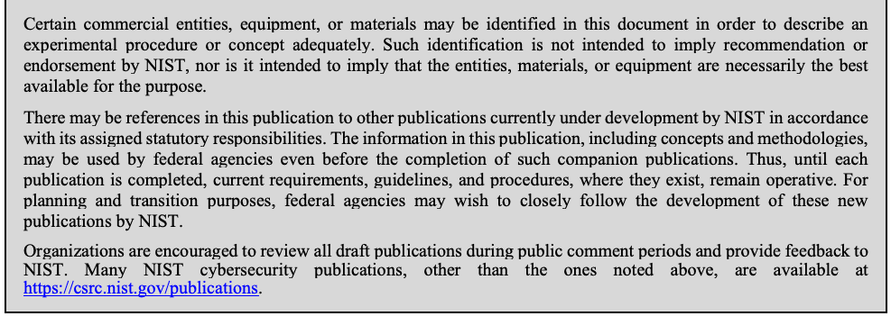
Comments on this publication may be submitted to: National Institute of Standards and Technology Attn: Computer Security Division, Information Technology Laboratory 100 Bureau Drive (Mail Stop 8930) Gaithersburg, MD 20899-8930 Email: SP800-56a_comments@nist.gov
本刊行物に関するコメントは、次の宛先に提出できる。National Institute of Standards and Technology、宛先：Computer Security Division, Information Technology Laboratory、100 Bureau Drive (Mail Stop 8930)、Gaithersburg, MD 20899-8930、電子メール：SP800-56a_comments@nist.gov（may be submitted）
未レビュー訳All comments are subject to release under the Freedom of Information Act (FOIA).
すべてのコメントは、情報公開法（FOIA）に基づく公開の対象となる。
Reports on Computer Systems Technology
コンピューターシステム技術に関する報告書
The Information Technology Laboratory (ITL) at the National Institute of Standards and Technology (NIST) promotes the U.S. economy and public welfare by providing technical leadership for the Nation’s measurement and standards infrastructure. ITL develops tests, test methods, reference data, proof of concept implementations, and technical analyses to advance the development and productive use of information technology. ITL’s responsibilities include the development of management, administrative, technical, and physical standards and guidelines for the cost-effective security and privacy of other than national security-related information in Federal information systems. The Special Publication 800-series reports on ITL’s research, guidelines, and outreach efforts in information system security, and its collaborative activities with industry, government, and academic organizations.
米国国立標準技術研究所（NIST）の情報技術研究所（ITL）は、国家の計測・標準インフラに技術的リーダーシップを提供し、米国経済と公共の福祉を促進する。ITLは、情報技術の発展と生産的な利用を進めるため、試験、試験方法、参照データ、概念実証実装、および技術分析を行う。ITLの責務には、連邦情報システムにおける国家安全保障関連以外の情報のセキュリティとプライバシーを費用対効果の高い方法で確保するための、マネジメント上、運営管理上、技術上および物理的な標準とガイドラインの策定が含まれる。特別刊行物800シリーズは、情報システムセキュリティにおけるITLの研究、ガイドライン、普及活動、および産業界、政府、学術機関との協働活動を報告する。
未レビュー訳Abstract
概要
This Recommendation specifies key-establishment schemes based on the discrete logarithm problem over finite fields and elliptic curves, including several variations of Diffie-Hellman and Menezes-Qu-Vanstone (MQV) key establishment schemes.
本勧告は、有限体上および楕円曲線上の離散対数問題に基づく鍵確立方式を規定する。これには、Diffie-HellmanおよびMenezes-Qu-Vanstone（MQV）鍵確立方式のいくつかの変形が含まれる。
Keywords
キーワード
Diffie-Hellman; elliptic curve cryptography; finite field cryptography; key agreement; key confirmation; key derivation; key establishment; MQV.
Diffie-Hellman、楕円曲線暗号、有限体暗号、鍵共有、鍵確認、鍵導出、鍵確立、MQV。
Acknowledgements
謝辞
The authors gratefully acknowledge the contributions on previous versions of this document by Mike Hopper, Don Johnson, Sharon Keller, Laurie Law, and Miles Smid.
著者は、本書の以前の版に対するMike Hopper、Don Johnson、Sharon Keller、Laurie LawおよびMiles Smidの貢献に深く感謝する。
Conformance Testing
適合性試験
Conformance testing for implementations of this Recommendation will be conducted within the framework of the Cryptographic Algorithm Validation Program (CAVP) and the Cryptographic Module Validation Program (CMVP). The requirements of this Recommendation are indicated by the word “shall.” Some of these requirements may be out-of-scope for CAVP or CMVP validation testing, and thus are the responsibility of entities using, implementing, installing or configuring applications that incorporate this Recommendation.
本勧告の実装に対する適合性試験は、暗号アルゴリズム検証プログラム（CAVP）および暗号モジュール検証プログラム（CMVP）の枠組みの中で実施される。本勧告の要件は、「shall」という語によって示される。これらの要件の一部は、CAVPまたはCMVPの検証試験の範囲外となることがあり、その場合は、本勧告を組み込んだアプリケーションを使用、実装、導入または構成する主体の責任となる。
Table of Contents
目次
未レビュー訳1. Introduction — 1
1. はじめに — 1
未レビュー訳2. Scope and Purpose — 1
2. 適用範囲と目的 — 1
未レビュー訳3. Definitions, Symbols and Abbreviations — 2
3. 定義、記号および略語 — 2
3.1 Definitions — 2
3.1 定義 — 2
未レビュー訳3.2 Symbols and Abbreviations — 9
3.2 記号および略語 — 9
4. Overview of Key-Establishment Schemes — 14
4. 鍵確立方式の概要 — 14
4.1 Key Establishment Preparations — 15
4.1 鍵確立の準備 — 15
4.2 Key-Agreement Process — 17
4.2 鍵共有プロセス — 17
4.3 DLC-based Key-Transport Process — 19
4.3 DLCベースの鍵転送プロセス — 19
5. Cryptographic Elements — 20
5. 暗号要素 — 20
5.1 Cryptographic Hash Functions — 20
5.1 暗号ハッシュ関数 — 20
5.2 Message Authentication Code (MAC) Algorithm — 20
5.2 メッセージ認証コード（MAC）アルゴリズム — 20
5.2.1 MAC Tag Computation for Key Confirmation — 20
5.2.1 鍵確認のためのMACタグ計算 — 20
5.2.2 MAC Tag Verification for Key Confirmation — 21
5.2.2 鍵確認のためのMACタグ検証 — 21
5.3 Random Number Generation — 21
5.3 乱数生成 — 21
5.4 Nonce — 21
5.4 ノンス — 21
未レビュー訳5.5 Domain Parameters — 23
5.5 ドメインパラメータ — 23
5.5.1 Domain-Parameter Selection/Generation — 23
5.5.1 ドメインパラメータの選択／生成 — 23
5.5.1.1 FFC Domain Parameter Selection/Generation — 23
5.5.1.1 FFCドメインパラメータの選択／生成 — 23
5.5.1.2 ECC Domain-Parameter Selection — 24
5.5.1.2 ECCドメインパラメータの選択 — 24
5.5.2 Assurances of Domain-Parameter Validity — 26
5.5.2 ドメインパラメータの有効性の保証 — 26
5.5.3 Domain Parameter Management — 26
5.5.3 ドメインパラメータ管理 — 26
5.6 Key-Establishment Key Pairs — 27
5.6 鍵確立用鍵ペア — 27
5.6.1 Key-Pair Generation — 27
5.6.1 鍵ペア生成 — 27
5.6.1.1 FFC Key-Pair Generation — 27
5.6.1.1 FFC鍵ペア生成 — 27
5.6.1.1.1 Using the Approved Safe-Prime Groups — 27
5.6.1.1.1 承認済みセーフプライム群の使用 — 27
5.6.1.1.2 Using the FIPS 186-Type FFC Parameter-size Sets — 27
5.6.1.1.2 FIPS 186型FFCパラメータサイズセットの使用 — 27
5.6.1.1.3 Key-Pair Generation Using Extra Random Bits — 27
5.6.1.1.3 追加乱数ビットを用いた鍵ペア生成 — 27
5.6.1.1.4 Key-Pair Generation by Testing Candidates — 29
5.6.1.1.4 候補を試験することによる鍵ペア生成 — 29
5.6.1.2 ECC Key-Pair Generation — 30
5.6.1.2 ECC鍵ペア生成 — 30
5.6.1.2.1 Key Pair Generation Using Extra Random Bits — 30
5.6.1.2.1 追加乱数ビットを用いた鍵ペア生成 — 30
5.6.1.2.2 Key Pair Generation by Testing Candidates — 31
5.6.1.2.2 候補を試験することによる鍵ペア生成 — 31
5.6.2 Required Assurances — 32
5.6.2 必要な保証 — 32
5.6.2.1 Assurances Required by the Key Pair Owner — 33
5.6.2.1 鍵ペア所有者に必要な保証 — 33
5.6.2.1.1 Owner Assurance of Correct Generation — 35
5.6.2.1.1 正しく生成されたことの所有者による保証 — 35
5.6.2.1.2 Owner Assurance of Private-Key Validity — 35
5.6.2.1.2 秘密鍵の有効性に関する所有者の保証 — 35
5.6.2.1.3 Owner Assurance of Public-Key Validity — 36
5.6.2.1.3 公開鍵の有効性に関する所有者の保証 — 36
5.6.2.1.4 Owner Assurance of Pair-wise Consistency — 36
5.6.2.1.4 ペアワイズ整合性に関する所有者の保証 — 36
5.6.2.1.5 Owner Assurance of Possession of the Private Key — 37
5.6.2.1.5 秘密鍵を保有していることに関する所有者の保証 — 37
5.6.2.2 Assurances Required by a Public Key Recipient — 37
5.6.2.2 公開鍵受信者に必要な保証 — 37
5.6.2.2.1 Recipient Assurance of Static Public-Key Validity — 39
5.6.2.2.1 受領者による静的公開鍵有効性の保証 — 39
5.6.2.2.2 Recipient Assurance of Ephemeral Public-Key Validity — 39
5.6.2.2.2 エフェメラル公開鍵の有効性に関する受信者の保証 — 39
5.6.2.2.3 Recipient Assurance of the Owner’s Possession of a Static
5.6.2.2.3 所有者が静的秘密鍵を保有していることに関する受信者の保証 —
未レビュー訳Private Key — 40
40
未レビュー訳5.6.2.2.4 Recipient Assurance of the Owner’s Possession of an
5.6.2.2.4 所有者がエフェメラル秘密鍵を保有していることに関する受信者の保証 —
未レビュー訳Ephemeral Private Key — 42
42
未レビュー訳5.6.2.3 Public Key Validation Routines — 43
5.6.2.3 公開鍵検証ルーチン — 43
5.6.2.3.1 FFC Full Public-Key Validation Routine — 43
5.6.2.3.1 FFC完全公開鍵検証ルーチン — 43
5.6.2.3.2 FFC Partial Public-Key Validation Routine — 44
5.6.2.3.2 FFC部分公開鍵検証ルーチン — 44
5.6.2.3.3 ECC Full Public-Key Validation Routine — 44
5.6.2.3.3 ECC完全公開鍵検証ルーチン — 44
5.6.2.3.4 ECC Partial Public-Key Validation Routine — 45
5.6.2.3.4 ECC部分公開鍵検証ルーチン — 45
5.6.3 Key Pair Management — 46
5.6.3 鍵ペア管理 — 46
5.6.3.1 Common Requirements on Static and Ephemeral Key Pairs — 46
5.6.3.1 静的鍵ペアとエフェメラル鍵ペアに共通する要件 — 46
5.6.3.2 Specific Requirements on Static Key Pairs — 46
5.6.3.2 静的鍵ペアに固有の要件 — 46
5.6.3.3 Specific Requirements on Ephemeral Key Pairs — 47
5.6.3.3 エフェメラル鍵ペアに固有の要件 — 47
5.7 DLC Primitives — 48
5.7 DLCプリミティブ — 48
5.7.1 Diffie-Hellman Primitives — 48
5.7.1 Diffie-Hellmanプリミティブ — 48
5.7.1.1 Finite Field Cryptography Diffie-Hellman (FFC DH) Primitive — 48
5.7.1.1 有限体暗号Diffie-Hellman（FFC DH）プリミティブ — 48
5.7.1.2 Elliptic Curve Cryptography Cofactor Diffie-Hellman (ECC CDH)
5.7.1.2 楕円曲線暗号コファクターDiffie-Hellman（ECC CDH）
未レビュー訳Primitive — 49
プリミティブ — 49
未レビュー訳5.7.2 MQV Primitives — 50
5.7.2 MQVプリミティブ — 50
5.7.2.1 Finite Field Cryptography MQV (FFC MQV) Primitive — 50
5.7.2.1 有限体暗号MQV（FFC MQV）プリミティブ — 50
5.7.2.1.1 MQV2 Form of the FFC MQV Primitive — 51
5.7.2.1.1 FFC MQVプリミティブのMQV2形式 — 51
5.7.2.1.2 MQV1 Form of the FFC MQV Primitive — 51
5.7.2.1.2 FFC MQVプリミティブのMQV1形式 — 51
5.7.2.2 ECC MQV Associate Value Function — 51
5.7.2.2 ECC MQV関連値関数 — 51
5.7.2.3 Elliptic Curve Cryptography MQV (ECC MQV) Primitive — 52
5.7.2.3 楕円曲線暗号MQV（ECC MQV）プリミティブ — 52
5.7.2.3.1 Full MQV Form of the ECC MQV Primitive — 52
5.7.2.3.1 ECC MQVプリミティブの完全MQV形式 — 52
5.7.2.3.2 One-Pass Form of the ECC MQV Primitive — 53
5.7.2.3.2 ECC MQVプリミティブのワンパス形式 — 53
5.8 Key-Derivation Methods for Key-Agreement Schemes — 53
5.8 鍵共有方式の鍵導出方法 — 53
5.8.1 Performing the Key Derivation — 53
5.8.1 鍵導出の実行 — 53
5.8.2 FixedInfo — 54
5.8.2 FixedInfo — 54
5.8.2.1 One-step Key Derivation — 55
5.8.2.1 ワンステップ鍵導出 — 55
5.8.2.1.1 The Concatenation Format for FixedInfo — 56
5.8.2.1.1 FixedInfoの連結形式 — 56
5.8.2.1.2 The ASN.1 Format for FixedInfo — 57
5.8.2.1.2 FixedInfoのASN.1形式 — 57
5.8.2.2 Two-step Key-Derivation (Extraction-then-Expansion) — 57
5.8.2.2 2段階鍵導出（抽出後に拡張） — 57
5.8.2.3 Other Formats for FixedInfo — 57
5.8.2.3 FixedInfoのその他の形式 — 57
5.9 Key Confirmation — 58
5.9 鍵確認 — 58
5.9.1 Unilateral Key Confirmation for Key-Agreement Schemes — 58
5.9.1 鍵共有方式の一方向鍵確認 — 58
5.9.2 Bilateral Key Confirmation for Key-Agreement Schemes — 61
5.9.2 鍵共有方式の双方向鍵確認 — 61
5.9.3 Selecting the MAC and Other Key-Confirmation Parameters — 62
5.9.3 MACおよびその他の鍵確認パラメータの選択 — 62
6. Key Agreement Schemes — 64
6. 鍵共有方式 — 64
6.1 Schemes Using Two Ephemeral Key Pairs, C(2e) — 66
6.1 2つのエフェメラル鍵ペアを用いる方式、C(2e) — 66
6.1.1 C(2e, 2s) Schemes — 67
6.1.1 C(2e, 2s)方式 — 67
未レビュー訳6.1.1.1 dhHybrid1, C(2e, 2s, FFC DH) Scheme — 68
6.1.1.1 dhHybrid1、C(2e, 2s, FFC DH)方式 — 68
6.1.1.2 (Cofactor) Full Unified Model, C(2e, 2s, ECC CDH) Scheme — 70
6.1.1.2 （コファクター）完全統合モデル、C(2e, 2s, ECC CDH)方式 — 70
6.1.1.3 MQV2, C(2e, 2s, FFC MQV) Scheme — 71
6.1.1.3 MQV2、C(2e, 2s, FFC MQV)方式 — 71
6.1.1.4 Full MQV, C(2e, 2s, ECC MQV) Scheme — 73
6.1.1.4 完全MQV、C(2e, 2s, ECC MQV)方式 — 73
6.1.1.5 Incorporating Key Confirmation into a C(2e, 2s) Scheme — 74
6.1.1.5 C(2e, 2s)方式への鍵確認の組み込み — 74
6.1.1.5.1 C(2e, 2s) Scheme with Unilateral Key Confirmation
6.1.1.5.1 Party UからParty Vへの一方向鍵確認を備えるC(2e, 2s)方式
未レビュー訳Provided by Party U to Party V — 75
— 75
未レビュー訳6.1.1.5.2 C(2e, 2s) Scheme with Unilateral Key Confirmation
6.1.1.5.2 Party VからParty Uへの一方向鍵確認を備えるC(2e, 2s)方式
未レビュー訳Provided by Party V to Party U — 76
— 76
未レビュー訳6.1.1.5.3 C(2e, 2s) Scheme with Bilateral Key Confirmation — 77
6.1.1.5.3 双方向鍵確認を備えるC(2e, 2s)方式 — 77
6.1.2 C(2e, 0s) Schemes — 78
6.1.2 C(2e, 0s)方式 — 78
未レビュー訳6.1.2.1 dhEphem, C(2e, 0s, FFC DH) Scheme — 79
6.1.2.1 dhEphem、C(2e, 0s, FFC DH)方式 — 79
6.1.2.2 (Cofactor) Ephemeral Unified Model, C(2e, 0s, ECC CDH) Scheme 80
6.1.2.2 （コファクター）エフェメラル統合モデル、C(2e, 0s, ECC CDH)方式 — 80
6.1.2.3 Key Confirmation for C(2e, 0s) Schemes — 81
6.1.2.3 C(2e, 0s)方式の鍵確認 — 81
6.2 Schemes Using One Ephemeral Key Pair, C(1e) Schemes — 82
6.2 1つのエフェメラル鍵ペアを用いる方式、C(1e)方式 — 82
6.2.1 C(1e, 2s) Schemes — 82
6.2.1 C(1e, 2s)方式 — 82
未レビュー訳6.2.1.1 dhHybridOneFlow, C(1e, 2s, FFC DH) Scheme — 83
6.2.1.1 dhHybridOneFlow、C(1e, 2s, FFC DH)方式 — 83
6.2.1.2 (Cofactor) One-Pass Unified Model, C(1e, 2s, ECC CDH) Scheme.. 85
6.2.1.2 （コファクター）ワンパス統合モデル、C(1e, 2s, ECC CDH)方式 — 85
6.2.1.3 MQV1, C(1e, 2s, FFC MQV) Scheme — 88
6.2.1.3 MQV1、C(1e, 2s, FFC MQV)方式 — 88
未レビュー訳6.2.1.4 One-Pass MQV, C(1e, 2s, ECC MQV) Scheme — 90
6.2.1.4 ワンパスMQV、C(1e, 2s, ECC MQV)方式 — 90
6.2.1.5 Incorporating Key Confirmation into a C(1e, 2s) Scheme — 92
6.2.1.5 C(1e, 2s)方式への鍵確認の組み込み — 92
6.2.1.5.1 C(1e, 2s) Scheme with Unilateral Key Confirmation
6.2.1.5.1 Party UからParty Vへの一方向鍵確認を備えるC(1e, 2s)方式
未レビュー訳Provided by Party U to Party V — 92
— 92
未レビュー訳6.2.1.5.2 C(1e, 2s) Scheme with Unilateral Key Confirmation
6.2.1.5.2 Party VからParty Uへの一方向鍵確認を備えるC(1e, 2s)方式
未レビュー訳Provided by Party V to Party U — 94
— 94
未レビュー訳6.2.1.5.3 C(1e, 2s) Scheme with Bilateral Key Confirmation — 95
6.2.1.5.3 双方向鍵確認を備えるC(1e, 2s)方式 — 95
6.2.2 C(1e, 1s) Schemes — 96
6.2.2 C(1e, 1s)方式 — 96
未レビュー訳6.2.2.1 dhOneFlow, C(1e, 1s, FFC DH) Scheme — 97
6.2.2.1 dhOneFlow、C(1e, 1s, FFC DH)方式 — 97
6.2.2.2 (Cofactor) One-Pass Diffie-Hellman, C(1e, 1s, ECC CDH) Scheme. 99
6.2.2.2 （コファクター）ワンパスDiffie-Hellman、C(1e, 1s, ECC CDH)方式 — 99
6.2.2.3 Incorporating Key Confirmation into a C(1e, 1s) Scheme — 101
6.2.2.3 C(1e, 1s)方式への鍵確認の組み込み — 101
6.2.2.3.1 C(1e, 1s) Scheme with Unilateral Key Confirmation
6.2.2.3.1 Party VからParty Uへの一方向鍵確認を備えるC(1e, 1s)方式
未レビュー訳Provided by Party V to Party U — 101
— 101
未レビュー訳6.3 C(0e, 2s) Schemes — 102
6.3 C(0e, 2s)方式 — 102
未レビュー訳6.3.1 dhStatic, C(0e, 2s, FFC DH) Scheme — 104
6.3.1 dhStatic、C(0e, 2s, FFC DH)方式 — 104
6.3.2 (Cofactor) Static Unified Model, C(0e, 2s, ECC CDH) Scheme — 105
6.3.2 （コファクター）静的統合モデル、C(0e, 2s, ECC CDH)方式 — 105
6.3.3 Incorporating Key Confirmation into a C(0e, 2s) Scheme — 107
6.3.3 C(0e, 2s)方式への鍵確認の組み込み — 107
6.3.3.1 C(0e, 2s) Scheme with Unilateral Key Confirmation Provided by Party
6.3.3.1 Party UからParty Vへの一方向鍵確認を備えるC(0e, 2s)方式
未レビュー訳U to Party V — 107
— 107
未レビュー訳6.3.3.2 C(0e, 2s) Scheme with Unilateral Key Confirmation Provided by Party
6.3.3.2 Party VからParty Uへの一方向鍵確認を備えるC(0e, 2s)方式
未レビュー訳V to Party U — 109
— 109
未レビュー訳6.3.3.3 C(0e, 2s) Scheme with Bilateral Key Confirmation — 110
6.3.3.3 双方向鍵確認を備えるC(0e, 2s)方式 — 110
7. Rationale for Selecting a Specific Scheme — 112
7. 特定の方式を選択する理由 — 112
7.1 Rationale for Choosing a C(2e, 2s) Scheme — 113
7.1 C(2e, 2s)方式を選ぶ理由 — 113
7.2 Rationale for Choosing a C(2e, 0s) Scheme — 114
7.2 C(2e, 0s)方式を選ぶ理由 — 114
7.3 Rationale for Choosing a C(1e, 2s) Scheme — 115
7.3 C(1e, 2s)方式を選ぶ理由 — 115
7.4 Rationale for Choosing a C(1e, 1s) Scheme — 116
7.4 C(1e, 1s)方式を選ぶ理由 — 116
7.5 Rationale for Choosing a C(0e, 2s) Scheme — 118
7.5 C(0e, 2s)方式を選ぶ理由 — 118
7.6 Summary of Assurances Associated with Key-Agreement Schemes — 119
7.6 鍵共有方式に関連する保証の概要 — 119
8. Key Recovery — 122
8. 鍵回復 — 122
未レビュー訳9. Implementation Validation — 123
9. 実装検証 — 123
Appendix A: References — 125
付録A：参考文献 — 125
A.1 Normative References — 125
A.1 規範的参考文献 — 125
A.2 Informative References — 127
A.2 参考文献（参考情報） — 127
Appendix B: Rationale for Including Identifiers and other Context-specific Information in the KDM Input (Informative) — 129
付録B：KDM入力に識別子およびその他の文脈固有情報を含める理由（参考） — 129
Appendix C: Data Conversions (Normative) — 130
付録C：データ変換（規範）— 130
C.1 Integer-to-Byte String Conversion — 130
C.1 整数からバイト文字列への変換 — 130
C.2 Field-Element-to-Byte String Conversion — 130
C.2 フィールド要素からバイト文字列への変換 — 130
C.3 Field-Element-to-Integer Conversion — 131
C.3 フィールド要素から整数への変換 — 131
C.4 Conversion of a Bit String to an Integer — 131
C.4 ビット文字列から整数への変換 — 131
未レビュー訳Appendix D: Approved ECC Curves and FFC Safe-prime Groups — 132
付録D：承認済みECC曲線およびFFCセーフプライム群 — 132
Appendix E: Revisions (Informative) — 134
付録E：改訂履歴（参考情報）— 134
未レビュー訳List of Figures
図一覧
Figure 1: Owner key-establishment preparations — 17
図1：所有者による鍵確立の準備 — 17
Figure 2: Key-agreement process — 18
図2：鍵共有プロセス — 18
Figure 3: Key-transport process — 66
図3：鍵転送プロセス — 66
Figure 4: C(2e, 2s) schemes: each party contributes a static and an ephemeral key pair — 74
図4：C(2e, 2s)方式：各当事者が静的鍵ペアとエフェメラル鍵ペアを提供 — 74
Figure 5: C(2e, 2s) scheme with unilateral key confirmation from party U to party V — 75
図5：Party UからParty Vへの一方向鍵確認を備えるC(2e, 2s)方式 — 75
Figure 6: C(2e, 2s) scheme with unilateral key confirmation from party V to party U — 76
図6：Party VからParty Uへの一方向鍵確認を備えるC(2e, 2s)方式 — 76
Figure 7: C(2e, 2s) scheme with bilateral key confirmation — 77
図7：双方向鍵確認を備えるC(2e, 2s)方式 — 77
Figure 8: C(2e, 0s) schemes: each party contributes only an ephemeral key pair — 81
図8：C(2e, 0s)方式：各当事者がエフェメラル鍵ペアのみを提供 — 81
Figure 9: C(1e, 2s) schemes: party U contributes a static and an ephemeral key pair while party
図9：C(1e, 2s)方式：Party Uは静的鍵ペアとエフェメラル鍵ペアを提供し、Party Vは
未レビュー訳V contributes only a static key pair — 92
静的鍵ペアのみを提供 — 92
未レビュー訳Figure 10: C(1e, 2s) scheme with unilateral key confirmation from party U to party V — 93
図10：Party UからParty Vへの一方向鍵確認を備えるC(1e, 2s)方式 — 93
Figure 11: C(1e, 2s) scheme with unilateral key confirmation from party V to party U — 94
図11：Party VからParty Uへの一方向鍵確認を備えるC(1e, 2s)方式 — 94
Figure 12: C(1e, 2s) scheme with bilateral key confirmation — 95
図12：双方向鍵確認を備えるC(1e, 2s)方式 — 95
Figure 13: C(1e, 1s) schemes: party U contributes an ephemeral key pair, and party V contributes
図13：C(1e, 1s)方式：Party Uはエフェメラル鍵ペアを提供し、Party Vは
未レビュー訳a static key pair — 101
静的鍵ペアを提供 — 101
未レビュー訳Figure 14: C(1e, 1s) scheme with unilateral key confirmation from party V to party U — 102
図14：Party VからParty Uへの一方向鍵確認を備えるC(1e, 1s)方式 — 102
Figure 15: C(0e, 2s) schemes: each party contributes only a static key pair — 103
図15：C(0e, 2s)方式：各当事者が静的鍵ペアのみを提供 — 103
Figure 16: C(0e, 2s) scheme with unilateral key confirmation from party U to party V — 108
図16：Party UからParty Vへの一方向鍵確認を備えるC(0e, 2s)方式 — 108
Figure 17: C(0e, 2s) scheme with unilateral key confirmation from party V to party U — 109
図17：Party VからParty Uへの一方向鍵確認を備えるC(0e, 2s)方式 — 109
List of Tables
表一覧
未レビュー訳Table 1: FIPS 186-type FFC parameter-size sets — 23
表1：FIPS 186型FFCパラメータサイズセット — 23
未レビュー訳Table 2: Initial assurances required by the key-pair owner — 34
表2：鍵ペア所有者に必要な初期保証 — 34
Table 3: Optional renewal of assurances by the key-pair owner — 34
表3：鍵ペア所有者による保証の任意更新 — 34
Table 4: Assurances required by a public-key recipient — 38
表4：公開鍵受信者に必要な保証 — 38
Table 5: Approved MAC algorithms for key confirmation — 62
表5：鍵確認用の承認済みMACアルゴリズム — 62
Table 6: Key-agreement scheme categories — 64
表6：鍵共有方式のカテゴリ — 64
Table 7: Key-agreement scheme subcategories — 64
表7：鍵共有方式のサブカテゴリ — 64
Table 8: Key-agreement schemes — 65
表8：鍵共有方式 — 65
Table 9: dhHybrid1 key-agreement scheme summary — 69
表9：dhHybrid1鍵共有方式の概要 — 69
Table 10: Full unified model key-agreement scheme summary — 71
表10：完全統合モデル鍵共有方式の概要 — 71
未レビュー訳Table 11: MQV2 key-agreement scheme summary — 72
表11：MQV2鍵共有方式の概要 — 72
未レビュー訳Table 12: Full MQV key-agreement scheme summary — 74
表12：完全MQV鍵共有方式の概要 — 74
未レビュー訳Table 13: dhEphem key-agreement scheme summary — 80
表13：dhEphem鍵共有方式の概要 — 80
未レビュー訳Table 14: Ephemeral unified model key-agreement scheme summary — 81
表14：エフェメラル統合モデル鍵共有方式の概要 — 81
未レビュー訳Table 15: dhHybridOneFlow key-agreement scheme summary — 85
表15：dhHybridOneFlow鍵共有方式の概要 — 85
未レビュー訳Table 16: One-pass unified model key-agreement scheme summary — 87
表16：ワンパス統合モデル鍵共有方式の概要 — 87
未レビュー訳Table 17: MQV1 key-agreement scheme summary — 89
表17：MQV1鍵共有方式の概要 — 89
未レビュー訳Table 18: One-pass MQV model key-agreement scheme summary — 91
表18：ワンパスMQVモデル鍵共有方式の概要 — 91
未レビュー訳Table 19: dhOneFlow key-agreement scheme summary — 99
表19：dhOneFlow鍵共有方式の概要 — 99
未レビュー訳Table 20: One-pass Diffie-Hellman key-agreement scheme summary — 101
表20：ワンパスDiffie-Hellman鍵共有方式の概要 — 101
未レビュー訳Table 21: dhStatic key-agreement scheme summary — 105
表21：dhStatic鍵共有方式の概要 — 105
未レビュー訳Table 22: Static unified model key-agreement scheme summary — 107
表22：静的統合モデル鍵共有方式の概要 — 107
未レビュー訳Table 23: Summary of assurances — 121
表23：保証の概要 — 121
未レビュー訳Table 24: Appoved elliptic curves for ECC key-agreement — 132
表24：ECC鍵共有で承認されている楕円曲線 — 132
未レビュー訳Table 25: Approved IKE groups for FFC key agreement — 133
表25：FFC鍵共有で承認されているIKEグループ — 133
未レビュー訳Table 26: Approved TLS groups for FFC key agreement — 133
表26：FFC鍵共有で承認されているTLSグループ — 133
未レビュー訳1. Introduction
1. はじめに
未レビュー訳Many U.S. Government Information Technology (IT) systems need to employ well-established cryptographic schemes to protect the integrity and confidentiality of the data that they process. Algorithms such as the Advanced Encryption Standard (AES) as defined in Federal Information Processing Standard (FIPS) 197,1 and the Keyed-Hash Message Authentication Code (HMAC) as defined in FIPS 1982 make attractive choices for the provision of these services. These algorithms have been standardized to facilitate interoperability between systems. However, the use of these algorithms requires the establishment of keying material between the participating entities in advance. Trusted couriers may manually distribute this secret keying material. However, as the number of entities using a system grows, the work involved in the distribution of the secret keying material could grow rapidly. Therefore, it is essential to support the cryptographic algorithms used in modern U.S. Government applications with automated key-establishment schemes.
米国政府の多くの情報技術（IT）システムは、処理するデータの完全性と機密性を保護するために、十分に確立された暗号方式を使用する必要がある。連邦情報処理標準（FIPS）1971で定義されたAdvanced Encryption Standard（AES）や、FIPS 1982で定義された鍵付きハッシュメッセージ認証コード（HMAC）などのアルゴリズムは、これらのサービスを提供するための有力な選択肢である。これらのアルゴリズムは、システム間の相互運用性を促進するために標準化されている。しかし、これらのアルゴリズムを使用するには、参加する主体の間で事前に鍵素材を確立しておく必要がある。信頼できる運搬者がこの秘密の鍵素材を手作業で配布することもできる。しかし、システムを使用する主体の数が増えるにつれて、秘密の鍵素材の配布に伴う作業は急速に増大し得る。したがって、現代の米国政府アプリケーションで使用される暗号アルゴリズムを、自動化された鍵確立方式によって支えることが不可欠である。
A key-establishment scheme can be characterized as either a key-agreement scheme or a key-transport scheme. The asymmetric-key-based key-agreement schemes in this Recommendation are based on the Diffie-Hellman (DH) and Menezes-Qu-Vanstone (MQV) algorithms. Asymmetric-key-based key-establishment schemes using Integer Factorization Cryptography are specified in SP 800-56B.3 The selection of schemes specified in this Recommendation is based on standards for key-establishment schemes developed by the Accredited Standards Committee (ASC) X9, Inc.: ANS X9.42, Agreement of Symmetric Keys using Discrete Logarithm Cryptography, and ANS X9.63, Key Agreement and Key Transport using Elliptic Curve Cryptography.
鍵確立方式は、鍵共有方式または鍵配送方式のいずれかに分類できる。本勧告における非対称鍵に基づく鍵共有方式は、Diffie-Hellman（DH）アルゴリズムおよびMenezes-Qu-Vanstone（MQV）アルゴリズムに基づいている。整数因数分解暗号を用いる非対称鍵に基づく鍵確立方式は、SP 800-56Bで規定されている。3 本勧告で規定する方式の選定は、Accredited Standards Committee（ASC）X9, Inc.が策定した鍵確立方式の標準、すなわちANS X9.42 Agreement of Symmetric Keys using Discrete Logarithm Cryptography（離散対数暗号を用いる対称鍵の合意）およびANS X9.63 Key Agreement and Key Transport using Elliptic Curve Cryptography（楕円曲線暗号を用いる鍵共有および鍵配送）に基づいている。
2. Scope and Purpose
2. 適用範囲と目的
未レビュー訳This Recommendation provides the specifications for key-agreement schemes that are appropriate for use by the U.S. Federal Government and is intended for use in conjunction with NIST Special Publication (SP) SP 800-57.4 This Recommendation (i.e., SP 800-56A) and SP 800-57 are intended to provide sufficient information for a vendor to implement secure key establishment using asymmetric algorithms in FIPS 1405-validated modules.
本勧告は、米国連邦政府による使用に適した鍵共有方式の仕様を示すものであり、NIST Special Publication（SP）SP 800-57と併せて使用することを意図している。4 本勧告（すなわちSP 800-56A）およびSP 800-57は、ベンダーがFIPS 1405の検証を受けたモジュールにおいて、非対称アルゴリズムを用いた安全な鍵確立を実装するのに十分な情報を提供することを意図している。
A scheme may be a component of a protocol, which in turn provides additional security properties not provided by the scheme when considered by itself. Note that protocols, per se, are not specified in this Recommendation.
方式はプロトコルの構成要素となることがあり、そのプロトコルは、方式を単独で考えた場合には提供されない追加のセキュリティ特性を提供する。なお、プロトコルそのものは本勧告では規定しない。
3. Definitions, Symbols and Abbreviations
3. 定義、記号および略語
未レビュー訳3.1 Definitions
3.1 定義
原本PDFの抜粋画像
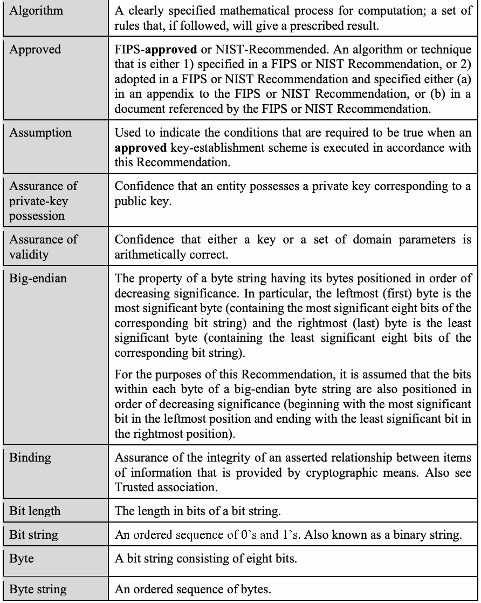
原本PDFの抜粋画像
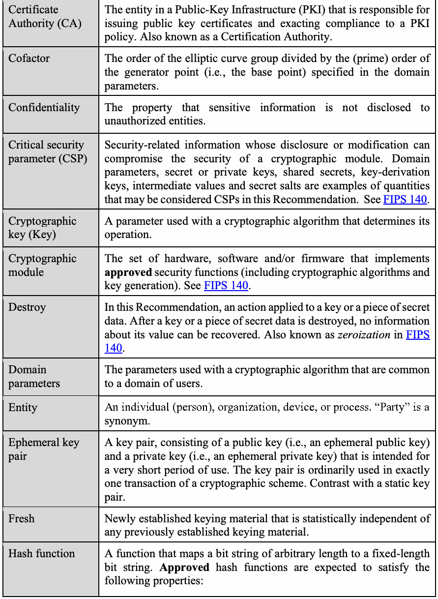
原本PDFの抜粋画像
原本PDFの抜粋画像
原本PDFの抜粋画像
原本PDFの抜粋画像
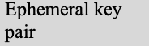
原本PDFの抜粋画像
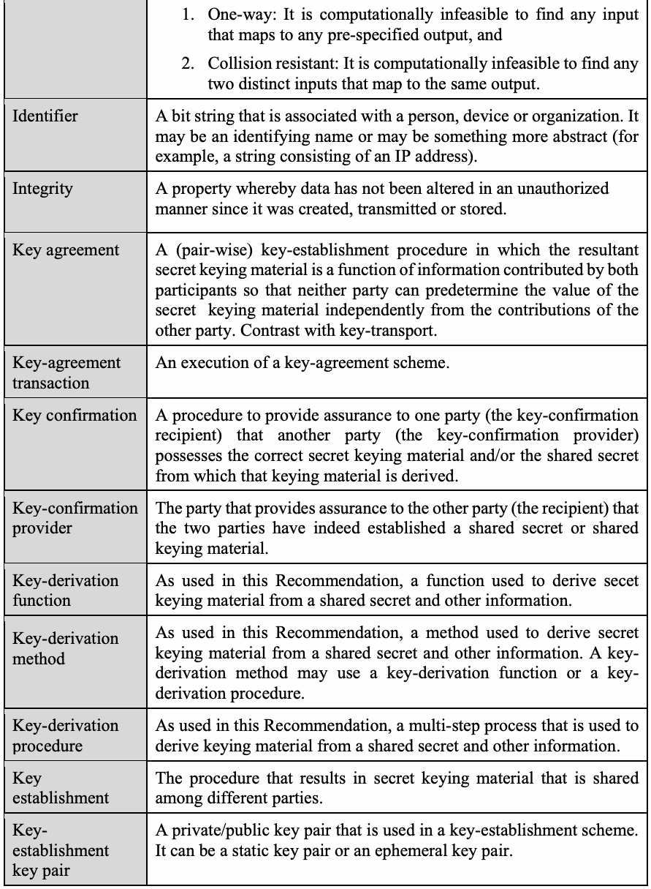
原本PDFの抜粋画像
原本PDFの抜粋画像
原本PDFの抜粋画像
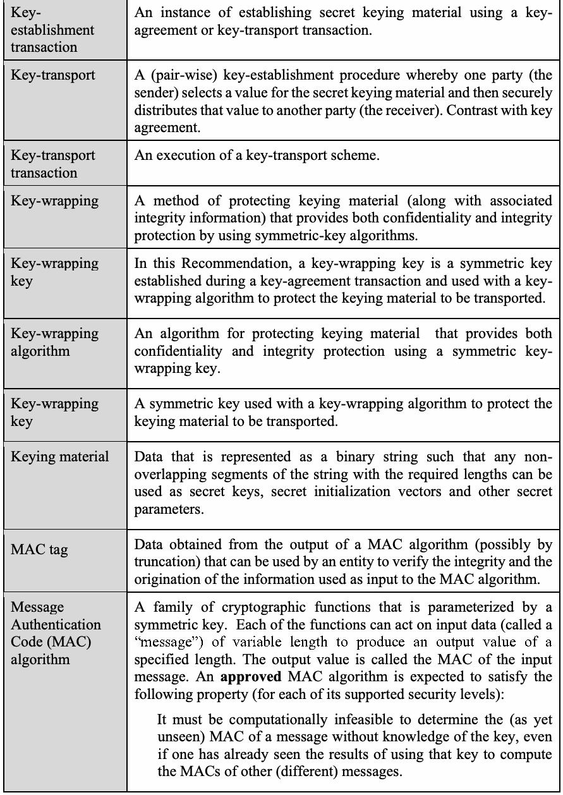
原本PDFの抜粋画像
原本PDFの抜粋画像
原本PDFの抜粋画像
原本PDFの抜粋画像
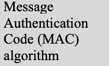
原本PDFの抜粋画像
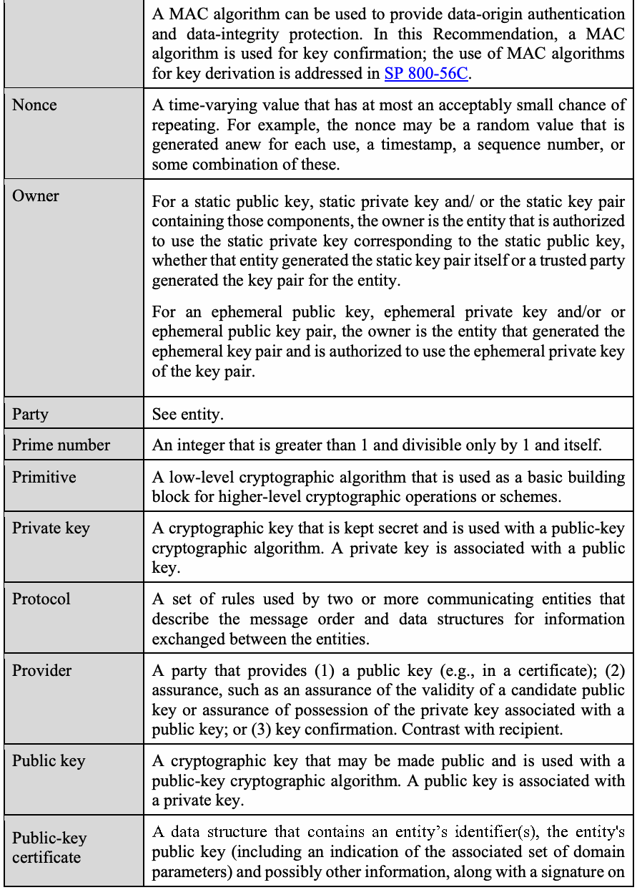
| that data set that is generated by a trusted party, i.e., a certificate authority, thereby binding the public key to the included identifier(s). | |
| The procedure whereby the recipient of a public key checks that the key conforms to the arithmetic requirements for such a key in order to thwart certain types of attacks. | |
| Public-key validation | |
| A nonce containing a random-value component that is generated anew for each nonce. | |
| Random nonce | |
| Receiver | The party that receives secret keying material via a key-transport transaction. Contrast with sender. |
| A party that (1) receives a public key; or (2) obtains assurance from an assurance provider (e.g., assurance of the validity of a candidate public key or assurance of possession of the private key corresponding to a public key); or (3) receives key confirmation from a key-confirmation provider. | |
| Recipient | |
| A set of unambiguously specified transformations that provide a (cryptographic) service when properly implemented and maintained. A scheme is a higher-level construct than a primitive and a lower- level construct than a protocol. | |
| Scheme | |
| The security features (e.g., replay protection, or key confirmation) that a cryptographic scheme may, or may not, provide. | |
| Security | |
| properties | |
| A number associated with the amount of work (that is, the number of operations) that is required to break a cryptographic algorithm or system. | |
| Security strength | |
| (Also, “Bits of | |
| security”) | |
| The party that sends secret keying material to the receiver in a key- transport transaction. Contrast with receiver. | |
| Sender | |
| This term is used to indicate a requirement that needs to be fulfilled to claim conformance to this Recommendation. Note that shall may be coupled with not to become shall not. | |
| Shall | |
| A secret value that has been computed during a key-establishment scheme, is known by both participants, and is used as input to a key- derivation method to produce keying material. | |
| Shared secret | |
| This term is used to indicate an important recommendation. Ignoring the recommendation could result in undesirable results. Note that should may be coupled with not to become should not. | |
| Should | |
| A key pair, consisting of a private key (i.e., a static private key) and a public key (i.e., a static public key) that is intended for use for a relatively long period of time and is typically intended for use in | |
| Static key pair |
原本PDFの抜粋画像
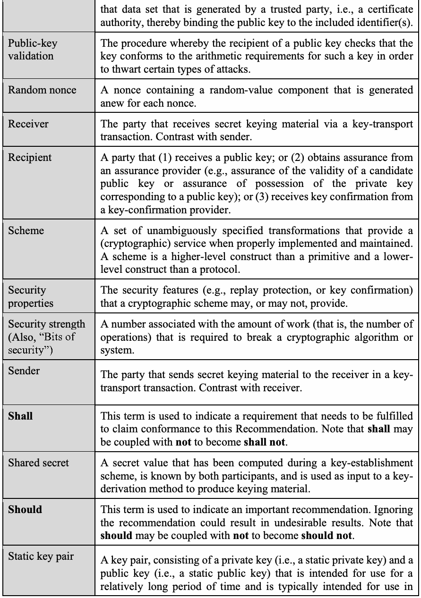
| 信頼できる主体（認証局など）が生成したデータ集合への署名を含み、公開鍵とそこに記載された識別子を結び付ける。 | |
| 公開鍵の受信者が、その鍵が所定の算術要件に適合することを確認し、特定の攻撃を防ぐ手順。 | |
| 公開鍵検証 | |
| ノンスごとに新たに生成される乱数成分を含むノンス。 | |
| ランダムノンス | |
| 受信者 | 鍵転送取引を通じて秘密鍵素材を受け取る当事者。送信者と対比。 |
| (1)公開鍵を受け取る、(2)保証提供者から保証を得る（例えば、候補公開鍵の有効性、または公開鍵に対応する秘密鍵の保有に関する保証）、または(3)鍵確認提供者から鍵確認を受ける当事者。 | |
| 受信者 | |
| 適切に実装・維持されたときに（暗号）サービスを提供する、曖昧さなく指定された変換の集合。方式はプリミティブより上位で、プロトコルより下位の構成要素である。 | |
| 方式 | |
| 暗号方式が提供する場合と提供しない場合があるセキュリティ機能（リプレイ保護、鍵確認など）。 | |
| セキュリティ | |
| 特性 | |
| 暗号アルゴリズムまたはシステムを破るために必要な作業量（すなわち演算回数）に対応する数値。 | |
| セキュリティ強度 | |
| （「ビットセキュリティ」ともいう） | |
| 鍵転送取引において、秘密鍵素材を受信者に送る当事者。受信者と対比。 | |
| 送信者 | |
| 本勧告への適合を主張するために満たす必要がある要件を示す語。原文の表現：shall may be coupled with not to become shall not。 | |
| Shall | |
| 鍵確立方式中に計算され、両参加者が知っており、鍵導出方法への入力として鍵素材の生成に用いる秘密値。 | |
| 共有秘密 | |
| 重要な推奨事項を示す語。この推奨事項を無視すると望ましくない結果を招くことがある。原文の表現：should may be coupled with not to become should not。 | |
| Should | |
| 秘密鍵（静的秘密鍵）と公開鍵（静的公開鍵）からなり、比較的長期間の使用を目的とし、通常は | |
| 静的鍵ペア |
原本PDFの抜粋画像
| multiple key-establishment transactions. Contrast with an ephemeral key pair. | |
| Store-and-forward | A telecommunications technique in which information is sent to an intermediate station where it is kept and later sent to the final destination or to another intermediate station. |
| Support (a security strength) | A security strength of \(s\) bits is said to be supported by a particular choice of algorithm, primitive, auxiliary function, parameters (etc.) for use in the implementation of a cryptographic mechanism if that choice will not prevent the resulting implementation from attaining a security strength of at least \(s\) bits. In this Recommendation, it is assumed that implementation choices are intended to support a security strength of 112 bits or more (see SP 800-576 and SP 800-131A7). |
| Symmetric key | A cryptographic key that is shared between two or more entities and used with a cryptographic application to process information. |
| Symmetric-key algorithm | A cryptographic algorithm that uses secret keying material that is shared between authorized parties. |
| Targeted security strength | The security strength that is intended to be supported by one or more implementation-related choices (such as algorithms, primitives, auxiliary functions, parameter sizes and/or actual parameters) for the purpose of instantiating a cryptographic mechanism. In this Recommendation, it is assumed that the targeted security strength of any instantiation of an approved key-establishment scheme has a value greater than or equal to 112 bits and less than or equal to 256 bits. |
| Trusted association | Assurance of the integrity of an asserted relationship between items of information that may be provided by cryptographic or non-cryptographic (e.g., physical) means. Also see Binding. |
| Trusted party | A party that is trusted by an entity to faithfully perform certain services for that entity. An entity could be a trusted party for itself. |
| Trusted third party | A third party, such as a CA, that is trusted by its clients to perform certain services. (By contrast, the two participants in a key- |
| 複数の鍵確立トランザクション。エフェメラル鍵ペアと対比すること。 | |
| ストアアンドフォワード | 情報を中継局に送り、そこで保管したうえで、後に最終宛先または別の中継局へ送る通信技法。 |
| サポート（セキュリティ強度の） | 暗号機構の実装に用いるアルゴリズム、プリミティブ、補助関数、パラメータ（など）の特定の選択が、結果として得られる実装による少なくとも \(s\) ビットのセキュリティ強度の達成を妨げないとき、その選択は \(s\) ビットのセキュリティ強度をサポートするという。 本勧告では、実装上の選択は112ビット以上のセキュリティ強度をサポートすることを意図していると仮定する（SP 800-576およびSP 800-131A7を参照）。 |
| 対称鍵 | 2つ以上のエンティティの間で共有し、暗号アプリケーションで情報の処理に用いる暗号鍵。 |
| 対称鍵アルゴリズム | 権限のある当事者の間で共有する秘密の鍵素材を用いる暗号アルゴリズム。 |
| 目標セキュリティ強度 | 暗号機構をインスタンス化する目的で、実装に関する1つ以上の選択（アルゴリズム、プリミティブ、補助関数、パラメータサイズ、実際のパラメータなど）によってサポートすることを意図するセキュリティ強度。 本勧告では、承認された鍵確立方式のどのインスタンス化についても、目標セキュリティ強度は112ビット以上256ビット以下の値であると仮定する。 |
| 信頼できる関連付け | 情報項目の間に主張された関係の完全性の保証。暗号的手段または非暗号的（例えば物理的）手段によって与えられることがある。「バインディング」も参照。 |
| 信頼できる当事者 | あるエンティティのために特定のサービスを誠実に実行すると、そのエンティティが信頼する当事者。エンティティは自分自身にとっての信頼できる当事者になり得る。 |
| 信頼できる第三者 | CAのように、特定のサービスを実行すると顧客から信頼されている第三者。（これに対し、鍵 |
原本PDFの抜粋画像
原本PDFの抜粋画像
原本PDFの抜粋画像
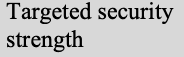
原本PDFの抜粋画像
原本PDFの抜粋画像
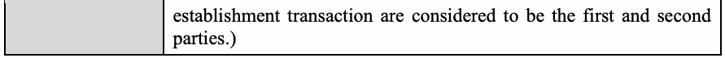
3.2 Symbols and Abbreviations
3.2 記号および略語
General:
一般：
未レビュー訳AES Advanced Encryption Standard (as specified in FIPS 197). AES-CMAC The AES Cipher-based MAC mode (as specified in SP 800-38B8). ASC The American National Standards Institute (ANSI) Accredited Standards Committee. ANS American National Standard. ASN.1 Abstract Syntax Notation One. \(\mathrm{C}(i\mathrm{e})\) Notation for a category of key-establishment schemes in which \(i\) ephemeral key pairs are used, where \(i \in \{0, 1, 2\}\). \(\mathrm{C}(i\mathrm{e}, j\mathrm{s})\) Notation for a subcategory of key-establishment schemes in which \(i\) ephemeral key pairs and \(j\) static key pairs are used. In this Recommendation, schemes in the subcategories C(0e, 2s), C(1e, 2s), C(1e, 1s), C(2e, 0s), and C(2e, 2s) are defined. CA Certification Authority. CDH The cofactor ECC Diffie-Hellman key-agreement primitive. CSP Critical Security Parameter. DH The (non-cofactor) FFC Diffie-Hellman key-agreement primitive. DLC Discrete Logarithm Cryptography, which is comprised of both Finite Field Cryptography (FFC) and Elliptic Curve Cryptography (ECC). EC Elliptic Curve. ECC Elliptic Curve Cryptography; the public-key cryptographic methods using operations in an elliptic curve group. FF Finite Field. FFC Finite Field Cryptography; the public-key cryptographic methods using operations in a multiplicative group of a finite field. ID The bit string denoting the identifier associated with an entity.
AES：Advanced Encryption Standard（FIPS 197で規定）。AES-CMAC：AES暗号ベースMACモード（SP 800-38B8で規定）。ASC：米国規格協会（ANSI）認定標準化委員会。ANS：米国国家規格。ASN.1：抽象構文記法1。\(\mathrm{C}(i\mathrm{e})\)：\(i\) 個のエフェメラル鍵ペアを用いる鍵確立方式のカテゴリを表す表記。ここで \(i \in \{0, 1, 2\}\) である。\(\mathrm{C}(i\mathrm{e}, j\mathrm{s})\)：\(i\) 個のエフェメラル鍵ペアと \(j\) 個の静的鍵ペアを用いる鍵確立方式のサブカテゴリを表す表記。本勧告では、サブカテゴリC(0e, 2s)、C(1e, 2s)、C(1e, 1s)、C(2e, 0s)、C(2e, 2s)の方式を定義する。CA：認証局。CDH：コファクターECC Diffie-Hellman鍵共有プリミティブ。CSP：重要セキュリティパラメータ。DH：（非コファクター）FFC Diffie-Hellman鍵共有プリミティブ。DLC：離散対数暗号。有限体暗号（FFC）と楕円曲線暗号（ECC）の両方からなる。EC：楕円曲線。ECC：楕円曲線暗号。楕円曲線群上の演算を用いる公開鍵暗号方式。FF：有限体。FFC：有限体暗号。有限体の乗法群上の演算を用いる公開鍵暗号方式。ID：主体に関連付けられた識別子を表すビット列。
KC Key Confirmation. KDM Key-Derivation Method. KM Keying Material. KMAC The KECCAK-based MAC (as specified in SP 800-1859). \(\operatorname{len}(x)\) The bit length of the shortest base-two representation of the positive integer \(x\), i.e., \(\operatorname{len}(x) = \lfloor \log_2(x) \rfloor + 1\). MAC Message Authentication Code. \(\mathrm{MAC}(\mathit{MacKey}, \mathit{MacData})\) A MAC algorithm with \(\mathit{MacKey}\) as the key, and \(\mathit{MacData}\) as the data. \(\mathit{MacOutputBits}\) The length of the MAC ouput block in bits. \(\mathit{MacTag}\) A MAC tag. \(\mathit{MacTagBits}\) The length of the \(\mathit{MacTag}\) in bits. MQV The Menezes-Qu-Vanstone key-agreement primitive. \(\mathit{Null}\) The empty bit string RBG Random Bit Generator. SHA Secure Hash Algorithm (as specified in FIPS 18010 and FIPS 20211). \(T_{\mathit{bitLen}}(X)\) A truncation function that outputs the most significant (i.e., leftmost) \(\mathit{bitLen}\) bits of the input bit string, \(X\), when the bit length of \(X\) is greater than \(\mathit{bitLen}\); otherwise, the function outputs \(X\). For example, \(T_2(1011) = 10\), \(T_3(1011) = 101\), \(T_4(1011) = 1011\), and \(T_5(1011) = 1011\). TTP Trusted Third Party. U, V Represents the two parties in a (pair-wise) key-establishment scheme.
KC：鍵確認。KDM：鍵導出方法。KM：鍵素材。KMAC：KECCAKベースのMAC（SP 800-1859で規定）。\(\operatorname{len}(x)\)：正の整数 \(x\) の最短の2進表現のビット長。すなわち \(\operatorname{len}(x) = \lfloor \log_2(x) \rfloor + 1\)。MAC：メッセージ認証コード。\(\mathrm{MAC}(\mathit{MacKey}, \mathit{MacData})\)：\(\mathit{MacKey}\) を鍵とし、\(\mathit{MacData}\) をデータとするMACアルゴリズム。\(\mathit{MacOutputBits}\)：MAC出力ブロックの長さ（ビット単位）。\(\mathit{MacTag}\)：MACタグ。\(\mathit{MacTagBits}\)：\(\mathit{MacTag}\) の長さ（ビット単位）。MQV：Menezes-Qu-Vanstone鍵共有プリミティブ。\(\mathit{Null}\)：空のビット列。RBG：乱数ビット生成器。SHA：セキュアハッシュアルゴリズム（FIPS 18010およびFIPS 20211で規定）。\(T_{\mathit{bitLen}}(X)\)：最上位（すなわち左端）の \(\mathit{bitLen}\) ビットを出力する切り詰め関数。入力ビット列 \(X\) について、\(X\) のビット長が \(\mathit{bitLen}\) より大きい場合にそのように出力し、それ以外の場合は \(X\) を出力する。例えば、\(T_2(1011) = 10\)、\(T_3(1011) = 101\)、\(T_4(1011) = 1011\)、\(T_5(1011) = 1011\) である。TTP：信頼できる第三者。U, V：（ペアワイズ）鍵確立方式の2者の当事者を表す。
\(\{\ \}\) In this Recommendation, the curly braces \(\{\ \}\) are used in the following three situations: (1) \(\{x\}\) is used to indicate that the inclusion of \(x\) is optional; for example, the notation “Input: \(w\) \(\{, x\}\), \(y\), and \(z\)” implies that the inclusion of \(x\) as an input is optional. (2) If both \(X\) and \(Y\) are binary strings, the notation of binary string “\(Y\{\parallel X\}\)” implies that the concatenation of string \(X\) is optional. (3) \(\{x_1, x_2, \ldots, x_k\}\) indicates a set with elements \(x_1, x_2, \ldots, x_k\). \(X \parallel Y\) The concatenation of two bit strings \(X\) and \(Y\). For example, \(11001 \parallel 010 = 11001010\). \([a, b]\) The set of integers \(x\), such that \(a \le x \le b\). \(\lceil x \rceil\) The ceiling of \(x\); the smallest integer \(\ge x\). For example, \(\lceil 5 \rceil = 5\), \(\lceil 5.3 \rceil = 6\). \(\lfloor x \rfloor\) The floor of \(x\); the greatest integer that does not exceed \(x\). For example, \(\lfloor 2.1 \rfloor = 2\), and \(\lfloor 4 \rfloor = 4\). \(Z\) A shared secret (represented as a byte string) that is used to derive secret keying material using a key-derivation method. \(Z_e\) A component of the shared secret (represented as a byte string) that is computed using ephemeral keys in a Diffie-Hellman primitive. \(Z_s\) A component of the shared secret (represented as a byte string) that is computed using static keys in a Diffie-Hellman primitive.
\(\{\ \}\)：本勧告では、中括弧 \(\{\ \}\) を次の3つの場面で用いる。(1) \(\{x\}\) は、\(x\) を含めることが任意であることを示す。例えば、「Input: \(w\) \(\{, x\}\), \(y\), and \(z\)」という表記は、\(x\) を入力に含めることが任意であることを意味する。(2) \(X\) と \(Y\) がともに2進列である場合、2進列の表記「\(Y\{\parallel X\}\)」は、列 \(X\) の連結が任意であることを意味する。(3) \(\{x_1, x_2, \ldots, x_k\}\) は、要素 \(x_1, x_2, \ldots, x_k\) からなる集合を示す。\(X \parallel Y\)：2つのビット列 \(X\) と \(Y\) の連結。例えば、\(11001 \parallel 010 = 11001010\)。\([a, b]\)：整数 \(x\) のうち、\(a \le x \le b\) を満たすものの集合。\(\lceil x \rceil\)：\(x\) の天井。\(\ge x\) である最小の整数。例えば、\(\lceil 5 \rceil = 5\)、\(\lceil 5.3 \rceil = 6\)。\(\lfloor x \rfloor\)：\(x\) の床。\(x\) を超えない最大の整数。例えば、\(\lfloor 2.1 \rfloor = 2\)、\(\lfloor 4 \rfloor = 4\)。\(Z\)：鍵導出方法を用いて秘密鍵素材を導出するために使う共有秘密（バイト列として表現する）。\(Z_e\)：共有秘密の成分（バイト列として表現する）であり、Diffie-Hellmanプリミティブでエフェメラル鍵を用いて計算する。\(Z_s\)：共有秘密の成分（バイト列として表現する）であり、Diffie-Hellmanプリミティブで静的鍵を用いて計算する。
The following notations are used for FFC and ECC in this Recommendation. Note that the notation sometimes differs between the two scheme types due to the differing notations used in the two standards on which this Recommendation is based (i.e., ANS X9.42 and ANS
本勧告では、FFCおよびECCについて以下の記法を使用する。なお、2種類の方式の間で記法が異なることがあるが、これは本勧告の基礎となっている2つの標準で使用されている記法が異なるためである（すなわち、ANS X9.42およびANS
X9.63).
X9.63）。
未レビュー訳FFC:
FFC：
未レビュー訳\(\mathit{GF}(p)\) The finite field with \(p\) elements, where \(p\) is an (odd) prime number. The elements of \(\mathit{GF}(p)\) can be represented by the set of integers \(\{0, 1, \ldots, p-1\}\). The addition and multiplication operations for \(\mathit{GF}(p)\) can be realized by performing the corresponding integer operations and reducing the results modulo \(p\). \(\mathit{GF}(p)^*\) The multiplicative group of non-zero field elements in \(\mathit{GF}(p)\). \(g\) An FFC domain parameter; the selected generator of the multiplicative subgroup of prime order \(q\) in \(\mathit{GF}(p)^*\). \(k \bmod p\) The modular reduction of the (arbitrary) integer \(k\) by the (positive) integer \(p\) (the modulus). For the purposes of this Recommendation, \(j = k \bmod p\) is the unique integer satisfying the following two conditions: \(0 \le j < p\), and \(k - j\) is a multiple of \(p\). In short, \(j = k - \lfloor k/p \rfloor p\).
\(\mathit{GF}(p)\)：\(p\) 個の元を持つ有限体。ここで \(p\) は（奇）素数である。\(\mathit{GF}(p)\) の元は、整数の集合 \(\{0, 1, \ldots, p-1\}\) で表せる。\(\mathit{GF}(p)\) の加算と乗算は、対応する整数演算を行い、その結果を \(p\) を法として還元することで実現できる。\(\mathit{GF}(p)^*\)：\(\mathit{GF}(p)\) の0でない体の元がなす乗法群。\(g\)：FFCドメインパラメータ。素数位数 \(q\) の乗法部分群（\(\mathit{GF}(p)^*\) 内）の、選択された生成元。\(k \bmod p\)：（任意の）整数 \(k\) を（正の）整数 \(p\)（法）で剰余還元したもの。本勧告では、\(j = k \bmod p\) は次の2条件を満たす一意の整数である：\(0 \le j < p\)、かつ \(k - j\) が \(p\) の倍数である。要するに、\(j = k - \lfloor k/p \rfloor p\) である。
\(p\) An FFC domain parameter; an odd prime number that determines the size of the finite field \(\mathit{GF}(p)\). \(\mathit{counter}\) An optional FFC domain parameter; a value that may be output during domain parameter generation to provide assurance at a later time that the resulting domain parameters were generated using a canonical process. \(q\) When used as an FFC domain parameter, \(q\) is the (odd) prime number equal to the order of the multiplicative subgroup of \(\mathit{GF}(p)^*\) generated by \(g\). Note that \(q\) is a divisor of \(p - 1\). \(r_U, r_V\) The ephemeral private keys of party U and party V, respectively. These are integers in the interval \([1, q - 1]\). (In some instances, \(r_U\) and/or \(r_V\) may be restricted to a subinterval of the form \([1, 2^N - 1]\); see Section 5.6.1.1.1.) \(t_U, t_V\) The ephemeral public keys of party U and party V, respectively. These are integers in the interval \([2, p - 2]\). \(\mathit{SEED}\) An FFC domain parameter; an initialization value that is used during domain parameter generation that can also be used later to provide assurance that the resulting domain parameters were generated using an approved process. \(x_U, x_V\) The static private keys of party U and party V, respectively. These are integers in the interval \([1, q - 1]\). (In some instances, \(x_U\) and/or \(x_V\) may be restricted to a subinterval of the form \([1, 2^N - 1]\); see Section 5.6.1.1.1.) \(y_U, y_V\) The static public keys of party U and party V, respectively. These are integers in the interval \([2, p - 2]\).
\(p\)：FFCドメインパラメータ。有限体 \(\mathit{GF}(p)\) の大きさを決める奇素数。\(\mathit{counter}\)：任意のFFCドメインパラメータ。ドメインパラメータ生成時に出力されることがある値であり、得られたドメインパラメータが正準的な手順で生成されたことを後から保証するために用いる。\(q\)：FFCドメインパラメータとして用いる場合、\(q\) は、\(\mathit{GF}(p)^*\) の乗法部分群のうち \(g\) が生成するものの位数に等しい（奇）素数である。なお、\(q\) は \(p - 1\) の約数である。\(r_U, r_V\)：それぞれParty UとParty Vのエフェメラル秘密鍵。これらは区間 \([1, q - 1]\) の整数である。（場合によっては、\(r_U\) と \(r_V\) の一方または両方が \([1, 2^N - 1]\) の形の部分区間に制限されることがある。第5.6.1.1.1節を参照。）\(t_U, t_V\)：それぞれParty UとParty Vのエフェメラル公開鍵。これらは区間 \([2, p - 2]\) の整数である。\(\mathit{SEED}\)：FFCドメインパラメータ。ドメインパラメータ生成時に用いる初期化値であり、得られたドメインパラメータが承認された手順で生成されたことを後から保証するためにも使える。\(x_U, x_V\)：それぞれParty UとParty Vの静的秘密鍵。これらは区間 \([1, q - 1]\) の整数である。（場合によっては、\(x_U\) と \(x_V\) の一方または両方が \([1, 2^N - 1]\) の形の部分区間に制限されることがある。第5.6.1.1.1節を参照。）\(y_U, y_V\)：それぞれParty UとParty Vの静的公開鍵。これらは区間 \([2, p - 2]\) の整数である。
ECC:
ECC：
未レビュー訳\(a, b\) ECC domain parameters; two elements in the finite field \(\mathit{GF}(q)\) that define the (Weierstrass) equation of an elliptic curve, \(y^2 = x^3 + ax + b\) when \(q\) is an odd prime \(p\) or \(y^2 + xy = x^3 + ax^2 + b\) when \(q = 2^m\) for some prime integer \(m\). \(\operatorname{avf}(Q)\) The associate value of the elliptic curve point \(Q\). \(d_{e,U}, d_{e,V}\) The ephemeral private keys of party U and party V, respectively. These are integers in the interval \([1, n - 1]\). \(d_{s,U}, d_{s,V}\) The static private keys of party U and party V, respectively. These are integers in the interval \([1, n - 1]\). \(\mathit{FR}\) Field Representation indicator (an ECC domain parameter); an indication of the basis used for representing field elements. If a polynomial basis representation is used for a field of order \(2^m\), then FR indicates the reduction polynomial (a trinomial or a pentanomial); otherwise, FR is \(\mathit{Null}\).
\(a, b\)：ECCドメインパラメータ。有限体 \(\mathit{GF}(q)\) の2つの元であり、楕円曲線の（ワイエルシュトラス）方程式を定める。その方程式は、\(y^2 = x^3 + ax + b\)（\(q\) が奇素数 \(p\) の場合）、または \(y^2 + xy = x^3 + ax^2 + b\)（\(q = 2^m\) の場合。\(m\) はある素数）である。\(\operatorname{avf}(Q)\)：楕円曲線上の点 \(Q\) の関連値。\(d_{e,U}, d_{e,V}\)：それぞれParty UとParty Vのエフェメラル秘密鍵。これらは区間 \([1, n - 1]\) の整数である。\(d_{s,U}, d_{s,V}\)：それぞれParty UとParty Vの静的秘密鍵。これらは区間 \([1, n - 1]\) の整数である。\(\mathit{FR}\)：体表現指標（ECCドメインパラメータ）。体の元の表現に用いる基底を示す。位数 \(2^m\) の体に多項式基底表現を用いる場合、FRは還元多項式（三項式または五項式）を示す。それ以外の場合、FRは \(\mathit{Null}\) である。
\(G\) An ECC domain parameter, which is a distinguished (affine) point in an elliptic curve group that generates a subgroup of prime order \(n\). \(\mathit{GF}(q)\) The finite field with \(q\) elements, where either \(q\) is an odd prime \(p\), or \(q\) is equal to \(2^m\) for some prime integer \(m\). The elements of \(\mathit{GF}(q)\) are represented by the set of integers \(\{0, 1, \ldots, p - 1\}\) in the case that \(q\) is an odd prime \(p\), or as bit strings of length \(m\) bits in the case that \(q = 2^m\). \(h\) An ECC domain parameter; the cofactor, a positive integer that is equal to the order of the elliptic curve group, divided by the order of the cyclic subgroup generated by the distinguished point \(G\). That is, \(nh\) is the order of the elliptic curve, where \(n\) is the order of the cyclic subgroup generated by the distinguished point \(G\). \(n\) An ECC domain parameter; a prime that is the order of the cyclic subgroup generated by the distinguished point \(G\). \(\textit{\O}\) The (additive) identity element of an elliptic curve group; also called the "neutral point" of that group. \(\textit{\O}\) is the unique element satisfying \(Q + \textit{\O} = \textit{\O} + Q = Q\) for each \(Q\) in the group. For the (Weierstrass) elliptic curve groups considered in this Recommendation, a special “point at infinity” serves as \(\textit{\O}\). \(q\) When used as an ECC domain parameter, \(q\) is the field size. It is either an odd prime \(p\), or equal to \(2^m\) for some prime integer \(m\). \(Q_{e,U}, Q_{e,V}\) The ephemeral public keys of party U and party V, respectively. These are points on the elliptic curve that is defined by the domain parameters. \(Q_{s,U}, Q_{s,V}\) The static public keys of party U and party V, respectively. These are points on the elliptic curve that is defined by the domain parameters. \(\mathit{SEED}\) An optional ECC domain parameter; an initialization value that is used during domain parameter generation that can also be used later to provide assurance that the resulting domain parameters were generated using an approved process. \(x_P, y_P\) Elements of the finite field \(\mathit{GF}(q)\) representing the \(x\) and \(y\) coordinates, respectively, of a point \(P\).
\(G\)：ECCドメインパラメータ。楕円曲線群の特定の（アフィン）点であり、素数位数 \(n\) の部分群を生成する。\(\mathit{GF}(q)\)：\(q\) 個の元を持つ有限体。ここで、\(q\) は奇素数 \(p\) であるか、または \(q\) は \(2^m\) に等しい（\(m\) はある素数）。\(\mathit{GF}(q)\) の元は、整数の集合 \(\{0, 1, \ldots, p - 1\}\)（\(q\) が奇素数 \(p\) の場合）、または長さ \(m\) ビットのビット列（\(q = 2^m\) の場合）で表す。\(h\)：ECCドメインパラメータ。コファクターであり、楕円曲線群の位数を、特定点 \(G\) が生成する巡回部分群の位数で割った値に等しい正の整数。すなわち、\(nh\) が楕円曲線の位数であり、ここで \(n\) は特定点 \(G\) が生成する巡回部分群の位数である。\(n\)：ECCドメインパラメータ。特定点 \(G\) が生成する巡回部分群の位数である素数。\(\textit{\O}\)：楕円曲線群の（加法に関する）単位元。その群の"中立点"とも呼ぶ。\(\textit{\O}\) は、\(Q + \textit{\O} = \textit{\O} + Q = Q\) を群の各 \(Q\) について満たす一意の元である。本勧告で扱う（ワイエルシュトラス）楕円曲線群では、特別な「無限遠点」が \(\textit{\O}\) の役割を果たす。\(q\)：ECCドメインパラメータとして用いる場合、\(q\) は体の大きさである。奇素数 \(p\) であるか、または \(2^m\) に等しい（\(m\) はある素数）。\(Q_{e,U}, Q_{e,V}\)：それぞれParty UとParty Vのエフェメラル公開鍵。これらは、ドメインパラメータで定義される楕円曲線上の点である。\(Q_{s,U}, Q_{s,V}\)：それぞれParty UとParty Vの静的公開鍵。これらは、ドメインパラメータで定義される楕円曲線上の点である。\(\mathit{SEED}\)：任意のECCドメインパラメータ。ドメインパラメータ生成時に用いる初期化値であり、得られたドメインパラメータが承認された手順で生成されたことを後から保証するためにも使える。\(x_P, y_P\)：有限体 \(\mathit{GF}(q)\) の元であり、それぞれ \(x\) 座標と \(y\) 座標を表す（点 \(P\) の座標）。
4. Overview of Key-Establishment Schemes
4. 鍵確立方式の概要
未レビュー訳Secret cryptographic keying material may be electronically established between parties by using a key-establishment scheme, that is, by using either a key-agreement scheme or a key-transport scheme. This Recommendation specifies key-agreement schemes; however, Section 4.3 discusses how key transport may be conducted using the keying material derived during a key-agreement transaction.
秘密の暗号鍵素材は、鍵確立方式、すなわち鍵共有方式または鍵転送方式を用いて当事者間で電子的に確立できる。本勧告は鍵共有方式を規定する。ただし、第4.3節では、鍵共有取引中に導出された鍵素材を用いて鍵転送を行う方法を説明する。
未レビュー訳During a pair-wise key-agreement scheme, the secret keying material to be established is not sent directly from one entity to another. Instead, the two parties exchange information from which they each compute a shared secret that is used (along with other exchanged/known data) to derive the secret keying material. The method used to combine the information made available to both parties provides assurance that neither party can control the output of the key-agreement process.
ペアワイズ鍵共有方式では、確立する秘密鍵素材を一方の主体から他方の主体へ直接送ることはしない。その代わりに、両当事者は情報を交換し、その情報からそれぞれが共有秘密を計算する。この共有秘密を（交換した、または既知の他のデータとともに）用いて、秘密鍵素材を導出する。両当事者が利用できる情報を組み合わせる方法によって、どちらの当事者も鍵共有プロセスの出力を制御できないことが保証される。
The key-agreement schemes described in this Recommendation employ public-key techniques utilizing Discrete Logarithm Cryptography (DLC). The security of these DLC-based key-agreement schemes depends upon the intractability of the discrete logarithm problem in certain settings.
本勧告に記載する鍵共有方式は、離散対数暗号（DLC）を利用する公開鍵技術を用いる。これらのDLCに基づく鍵共有方式の安全性は、特定の設定における離散対数問題の計算困難性に依存する。
In this Recommendation, the approved key-agreement schemes are described in terms of the roles played by parties “U” and “V.” These are specific labels that are used to distinguish between the two participants engaged in key agreement – irrespective of the actual labels that may be used by a protocol employing a given approved key-agreement scheme.
本勧告では、承認された鍵共有方式を、当事者「U」と当事者「V」が果たす役割によって記述する。これらは、鍵共有に関与する二者の参加者を区別するために用いる特定のラベルであり、ある承認された鍵共有方式を用いるプロトコルが実際に使うラベルとは無関係である。
To be in conformance with this Recommendation, a protocol employing any of the approved pair-wise key-agreement schemes shall unambiguously assign the roles of party U and party V to the participants by clearly defining which participant performs the actions ascribed by this Recommendation to party U, and which performs the actions ascribed herein to party V.
本勧告に適合するために、承認されたペアワイズ鍵共有方式のいずれかを用いるプロトコルは、本勧告が当事者Uに割り当てる動作をどの参加者が実行し、当事者Vに割り当てる動作をどの参加者が実行するかを明確に定義することにより、当事者Uと当事者Vの役割を参加者に曖昧さなく割り当てなければならない。
This Recommendation specifies several processes that are associated with key establishment
本勧告は、鍵確立に関連する複数のプロセスを規定する。
未レビュー訳(including processes for generating domain parameters and for deriving secret keying material from a shared secret). Some of these processes are used to provide assurance (for example, assurance of the arithmetic validity of a public key or assurance of the possession of a private key associated with a public key). The party that provides the assurance is called the “provider” (of the assurance), and the party that obtains the assurance is called the “recipient” (of the assurance). For any of the specified processes, equivalent processes may be used. Two processes are equivalent if, when the same values are input to each process (either as input parameters or as values made available during the process), the same output is produced.
（ドメインパラメータを生成するプロセス、および共有秘密から秘密鍵素材を導出するプロセスを含む）。これらのプロセスの一部は、保証（例えば、公開鍵が算術的に有効であることの保証や、公開鍵に対応するプライベート鍵を保有していることの保証）を与えるために用いられる。保証を与える当事者を（その保証の）「提供者」と呼び、保証を得る当事者を（その保証の）「受領者」と呼ぶ。規定するどのプロセスについても、同等のプロセスを用いてよい。二つのプロセスは、同じ値を（入力パラメータとして、またはプロセスの途中で利用可能になる値として）それぞれに入力したときに同じ出力が得られるならば、同等である。
The security of a key-establishment scheme depends on its implementation, and this document includes several practical recommendations for implementers. For example, good security practice dictates that implementations of procedures employed by primitives, operations, schemes, etc. include steps that destroy any potentially sensitive locally stored data that is created (and/or copied for use) during the execution of a given procedure, and whose continued local storage is not required after the procedure has been exited. The destruction of such locally stored data ideally occurs prior to or during any exit from the procedure. This is intended to limit opportunities for unauthorized access to sensitive information that might compromise a key-establishment process and to prevent its use for any other purpose. Explicit instructions for the destruction of certain potentially sensitive values that are likely to be locally stored by procedures are included in the specifications found in this Recommendation. Examples of such values include local copies of any portions of secret or private keys that are employed or generated during the execution of a procedure, intermediate results produced during computations, and locally stored duplicates of values that are ultimately output by a procedure. However, it is not possible to anticipate the form of all possible implementations of the specified primitives, operations, schemes, etc., making it impossible to enumerate all potentially sensitive data that might be locally stored by a procedure employed in a given implementation. Nevertheless, the destruction of any potentially sensitive locally stored data is an obligation of all implementations.
鍵確立方式の安全性はその実装に依存するため、本文書には実装者に向けた実践的な推奨事項をいくつか含めている。例えば、良いセキュリティ実務に従えば、プリミティブ、演算、方式などが用いる手順の実装には、その手順の実行中に生成され（または使用のために複製され）、手順を抜けた後はローカルに保存し続ける必要のない、機微である可能性のあるローカル保存データをすべて破棄するステップを含めることになる。このようなローカル保存データの破棄は、手順を抜ける前、または抜ける際に行うのが理想である。その目的は、鍵確立プロセスを危うくしかねない機微情報への不正アクセスの機会を限定し、その情報が他の目的に使われるのを防ぐことにある。本勧告の仕様には、手順がローカルに保存する可能性の高い、機微であり得る特定の値を破棄するための明示的な指示を含めている。そのような値の例として、手順の実行中に使用または生成される秘密鍵やプライベート鍵の任意の部分のローカルコピー、計算の途中で得られる中間結果、手順が最終的に出力する値のローカルに保存された複製がある。しかし、規定するプリミティブ、演算、方式などのあらゆる実装の形態を予測することはできないため、ある実装で用いる手順がローカルに保存し得る、機微である可能性のあるデータをすべて列挙することはできない。それでも、機微である可能性のあるローカル保存データをすべて破棄することは、あらゆる実装の義務である。
Sections 4.1 and 4.2 describe the various steps that may be performed to establish secret keying material during key agreement.
Section 4.1およびSection 4.2では、鍵共有において秘密鍵素材を確立するために実行され得る各種のステップを説明する。
4.1 Key Establishment Preparations
4.1 鍵確立の準備
The owner of a private/public key pair is the entity that is authorized to use the private key of that key pair. The precise steps required may depend upon the key-establishment scheme and the type of key pair (static or ephemeral).
プライベート鍵／公開鍵ペアの所有者とは、その鍵ペアのプライベート鍵を使用する権限を与えられた主体である。必要となる具体的なステップは、鍵確立方式と鍵ペアの種類（静的またはエフェメラル）によって異なることがある。
The first step is to obtain appropriate domain parameters, as specified in Section 5.5.1 from an approved list (see Appendix D) or (in the FFC case) generated as specified in Section 5.5 by a trusted party. These parameters will determine the type of arithmetic used to generate key pairs and compute shared secrets. The owner must have assurance of the validity of these domain parameters; approved methods for obtaining this assurance are provided in Section
最初のステップは、適切なドメインパラメータを取得することである。ドメインパラメータは、Section 5.5.1の規定に従って承認されたリスト（Appendix D参照）から取得するか、（FFCの場合は）信頼できる当事者がSection 5.5の規定に従って生成したものを取得する。これらのパラメータによって、鍵ペアの生成と共有秘密の計算に用いる算術の種類が決まる。所有者は、これらのドメインパラメータが有効であることの保証を得ていなければならない。この保証を得るための承認された方法は、Section
5.5.2.
5.5.2。
If the owner will be using a key-establishment scheme that requires that the owner have a static key pair, the owner obtains this key pair. Either the owner or a trusted third party generates the key pair as specified in Section 5.6.1. If the key pair is generated by a trusted third party, then the key pair shall be transported to the owner in a protected manner
所有者が静的鍵ペアを持つことを要求する鍵確立方式を所有者が使用する場合、所有者はその鍵ペアを取得する。鍵ペアは、所有者または信頼できる第三者がSection 5.6.1の規定に従って生成する。信頼できる第三者が鍵ペアを生成する場合、その鍵ペアは保護された方法で所有者に搬送しなければならない
(providing source authentication and integrity protection for the entire key pair, and confidentiality protection of (at least) the private key). If the key-establishment scheme requires an ephemeral key pair, the owner generates it (as close to the time of use as possible) as specified in Section 5.6.1. Before using a static or ephemeral key pair in a key-establishment transaction, its owner is required to confirm its validity by obtaining the assurances specified in Section 5.6.2.1.
（鍵ペア全体に対する送信元認証と完全性保護、および（少なくとも）秘密鍵に対する機密性保護を提供する方法で）。鍵確立方式がエフェメラル鍵ペアを必要とする場合、所有者はSection 5.6.1の規定に従い、（できる限り使用時点に近い時期に）その鍵ペアを生成する。静的鍵ペアまたはエフェメラル鍵ペアを鍵確立トランザクションで使用する前に、その所有者は、Section 5.6.2.1に規定する保証を得ることによって、鍵ペアの有効性を確認する必要がある。
An identifier is used to label the entity that owns a static key pair used in a key-establishment transaction; an identifier may also be used to label the owner of an ephemeral key pair. This label may uniquely distinguish the owner from all other entities, in which case it could rightfully be considered an identity. However, the label may be something less specific – an organization, nickname, etc. – hence, the term identifier is used in this Recommendation, rather than the term identity. For example, an identifier could be “NIST123”, rather than an identifier that names a given person. A key pair’s owner (or an agent trusted to act on the owner’s behalf) is responsible for ensuring that an identifier associated with its static public key is appropriate for the applications in which it will be used. For each static key pair, this Recommendation assumes that there is a trusted association between the owner’s identifier(s) and the owner’s static public key. The association may be provided using cryptographic mechanisms or by physical means. The use of cryptographic mechanisms may require the use of a binding authority (i.e., a trusted authority) that binds the information in a manner that can be verified by others; an example of such a trusted authority is a registration authority working with a CA who creates a certificate containing both the static public key and the identifier. The binding authority shall verify the owner’s intent to associate a specific identifier chosen for the owner and the public key; the means for accomplishing this is beyond the scope of this Recommendation. The binding authority shall also obtain assurance of the validity of the domain parameters associated with the owner’s key pair, the arithmetic validity of the owner’s static public key, and the owner’s possession of the static private key corresponding to that static public key (see Section 5.5.2, Section 5.6.2.2.1 [method 1], and Section 5.6.2.2.3, respectively.)
識別子は、鍵確立トランザクションで使用する静的鍵ペアを所有する主体を示すラベルとして用いる。識別子は、エフェメラル鍵ペアの所有者を示すラベルとして用いてもよい。このラベルが所有者を他のすべての主体から一意に区別することもあり、その場合は正当に身元（identity）とみなせる。しかし、ラベルは組織名やニックネームなど、それほど特定的でないものであってもよい。そのため、本勧告では身元（identity）ではなく識別子（identifier）という用語を用いる。例えば、識別子は特定の人物を名指しするものではなく、「NIST123」のようなものであってもよい。鍵ペアの所有者（または所有者に代わって行動することを信頼された代理者）は、自らの静的公開鍵に関連付けられた識別子が、それを使用するアプリケーションにとって適切であることを確実にする責任を負う。本勧告は、各静的鍵ペアについて、所有者の識別子と所有者の静的公開鍵との間に信頼できる関連付けが存在することを前提とする。この関連付けは、暗号的な仕組みによって提供しても、物理的な手段によって提供してもよい。暗号的な仕組みを用いる場合は、他者が検証できる方法で情報を結び付けるバインディング機関（すなわち、信頼できる機関）を利用する必要が生じることがある。そのような信頼できる機関の例は、静的公開鍵と識別子の両方を含む証明書を作成するCAと連携する登録局である。バインディング機関は、所有者のために選ばれた特定の識別子と公開鍵とを関連付けるという所有者の意思を検証しなければならない。その実現手段は本勧告の範囲外である。バインディング機関はまた、所有者の鍵ペアに関連付けられたドメインパラメータの有効性、所有者の静的公開鍵の算術的な有効性、およびその静的公開鍵に対応する静的秘密鍵を所有者が保有していることについての保証を得なければならない（それぞれSection 5.5.2、Section 5.6.2.2.1［方法1］、Section 5.6.2.2.3を参照）。
As an alternative to reliance upon a binding authority, trusted associations between identifiers and static public keys may be established by the direct exchange of this information between entities using a mutually trusted method (e.g., a trusted courier or a face-to-face exchange). In this case, each entity receiving an identifier and the associated static public key shall be responsible for obtaining the same assurances that would have been obtained on their behalf by a binding authority (see the previous paragraph). Entities shall also be responsible for maintaining (by cryptographic or other means) the trusted associations between any identifiers and static public keys received through such exchanges.
バインディング機関に依拠する代わりに、識別子と静的公開鍵との信頼できる関連付けを、相互に信頼する方法（例えば、信頼できる運搬者や対面での交換）を用いて主体間でこの情報を直接交換することによって確立してもよい。この場合、識別子とそれに関連付けられた静的公開鍵を受け取る各主体は、バインディング機関が自らに代わって得たはずの保証と同じ保証を得る責任を負わなければならない（前の段落を参照）。主体はまた、そのような交換を通じて受け取った識別子と静的公開鍵との信頼できる関連付けを（暗号的手段またはその他の手段によって）維持する責任も負わなければならない。
If an entity engaged in a key-establishment transaction owns a static key pair that is employed during the transaction, then the identifier used to label that party shall be one that has a trusted association with the static public key of that key pair. If an entity engaged in a key-establishment transaction contributes only an ephemeral public key during the transaction, but an identifier is still desired/required for that party, then a non-null identifier shall be selected/assigned in accordance with the requirements of the protocol relying upon the transaction.
鍵確立取引に関与する主体が、その取引で使用する静的鍵ペアを所有している場合、その当事者を示すラベルとして用いる識別子は、その鍵ペアの静的公開鍵と信頼できる関連付けを持つものでなければならない。鍵確立取引に関与する主体がその取引でエフェメラル公開鍵だけを提供するものの、その当事者の識別子がなお望まれる、または必要とされる場合は、その取引に依拠するプロトコルの要件に従って、空でない識別子を選択する、または割り当てなければならない。
Figure_1 depicts the steps that may be required of an owner to obtain its key pair(s) in preparation for key establishment.
図1は、鍵確立の準備として所有者が自らの鍵ペアを取得するために必要となりうる手順を示す。
Obtain domain parameters (5.5.1)
ドメインパラメータを取得（5.5.1）
未レビュー訳Obtain assurance of domain parameter validity (5.5.2)
ドメインパラメータの有効性を保証する情報を取得（5.5.2）
未レビュー訳Generate
生成
未レビュー訳Obtain static key
静的鍵ペアを取得
未レビュー訳ephemeral key pair
エフェメラル鍵ペアを
未レビュー訳pair (5.6.1)
取得（5.6.1）
未レビュー訳(5.6.1)
（5.6.1）
未レビュー訳Scheme dependent
方式に依存
未レビュー訳Establish trusted association with identifiers (4.1)
識別子との信頼できる関連付けを確立（4.1）
未レビュー訳Obtain required assurances (5.6.2)
必要な保証を取得（5.6.2）
未レビュー訳Ready for key establishment
鍵確立の準備完了
未レビュー訳Figure 1: Owner key-establishment preparations
図1：所有者による鍵確立の準備
未レビュー訳4.2 Key-Agreement Process
4.2 鍵共有プロセス
未レビュー訳A key-agreement process specified in this Recommendation consists of a sequence of ordered steps. Figure 2 depicts the steps that may be required of an entity when establishing secret keying material with another entity using one of the key-agreement schemes described in this Recommendation. Some discrepancies in the order of the steps may occur, depending upon the communication protocol in which the key-agreement process is performed. Depending on the key-agreement scheme and the available keys, the party whose actions are described could be either of the two participants in the key-agreement scheme (i.e., either party U or party V).
本勧告で規定する鍵共有プロセスは、順序付けられた一連の手順で構成される。図2は、本勧告に記載する鍵共有方式のいずれかを用いて、他の主体と秘密鍵素材を確立するときに主体が実行することのある手順を示す。鍵共有プロセスを行う通信プロトコルによっては、手順の順序に差異が生じることがある。鍵共有方式と利用可能な鍵に応じて、ここに記述する動作を行う当事者は、鍵共有方式の参加者（Party UまたはParty V）のいずれでもよい。
未レビュー訳Figure 2: Key-agreement process
図2：鍵共有プロセス
未レビュー訳Receive other
相手の
未レビュー訳Generate a nonce
ノンスを生成
未レビュー訳party’s ephemeral
当事者のエフェメラル
未レビュー訳and/or an ephemeral
鍵ペアおよび／またはエフェメラル
未レビュー訳Obtain other party’s
相手の
未レビュー訳public key and/or
公開鍵および／または
未レビュー訳key pair
鍵ペアを受信
未レビュー訳static public key
静的公開鍵
未レビュー訳other public data
その他の公開データを取得
未レビュー訳(5.4 & 5.6.1)
（5.4および5.6.1）
未レビュー訳Obtain required
必要な保証を取得
未レビュー訳Obtain required
必要な保証を取得
未レビュー訳Provide ephemeral
エフェメラル公開鍵および／または
未レビュー訳assurance for other
相手の
未レビュー訳assurance for other
相手の
未レビュー訳public key and/or
その他の公開データを
未レビュー訳party’s static public
静的公開鍵に関する
未レビュー訳party’s ephemeral
エフェメラル公開鍵に関する
未レビュー訳other public data to
相手に提供
未レビュー訳key (5.6.2.2)
保証（5.6.2.2）
未レビュー訳public key (5.6.2.2)
保証（5.6.2.2）
未レビュー訳other party
相手の当事者に
未レビュー訳Generate shared secret and derive keying material
共有秘密を生成し、鍵素材を導出
未レビュー訳Complete key
鍵
未レビュー訳(6 & 5.8)
（6および5.8）
未レビュー訳confirmation (5.9 & 6)
確認を完了（5.9および6）
未レビュー訳Obtain assurance of p o s se s si o n o f p r iv a te k e y s (5.6.2.2)
秘密鍵の保有を保証（5.6.2.2）
未レビュー訳Destroy shared sec re t , e p h e m e
共有秘密、エフェメラル
未レビュー訳ral
秘密鍵、
未レビュー訳p ri v a t e k e y , MacKey, etc.
MacKeyなどを破棄
未レビュー訳Key agreement completed
鍵共有完了
未レビュー訳Figure 2: Key-agreement process. Note that some of the actions shown in Figure 2 may be absent from certain schemes. The
図2：鍵共有プロセス。図2の動作の一部は方式によっては省略できる（may）。
未レビュー訳specifications of this Recommendation indicate when an action is required. If required by the key-agreement scheme, a party generates an ephemeral key pair (in accordance with Section 5.6.1) and provides the ephemeral public key of that key pair to the other entity; the ephemeral private key is not provided to the other party.
本勧告の仕様では、各動作が必須となる場合を示す。鍵共有方式で必要な場合、当事者は（第5.6.1節に従い）エフェメラル鍵ペアを生成し、その鍵ペアのエフェメラル公開鍵を相手の主体に提供する。エフェメラル秘密鍵は相手に提供しない。
未レビュー訳If required or desired for use in the key-agreement transaction, a party generates a nonce (as specified in Section 5.4) and provides it to the other party.
鍵共有取引でノンスを必要または望ましい場合、当事者は第5.4節に従ってノンスを生成し、相手に提供する。
未レビュー訳Depending upon the circumstances, additional public information (e.g., a party’s static public key, an identifier, etc.) may be provided to or obtained from the other party.
状況に応じて、追加の公開情報（例えば、当事者の静的公開鍵、識別子など）を相手に提供するか、相手から取得してよい（may）。
未レビュー訳If required by the key-agreement scheme, a party that requires the other entity’s static public key acquires that key (as well as the associated identifier) and obtains assurance of its validity. Approved methods for obtaining assurance of the validity of the other entity’s static public key are provided in Section 5.6.2.2.1. Assurance that the other entity is in possession of the corresponding static private key must also be obtained prior to using the derived keying material for purposes beyond those of the key-agreement transaction itself. (Note: this restriction does not prohibit the use of derived keying material for key confirmation performed during the key-agreement transaction.) See Section 5.6.2.2.3 for approved methods for obtaining this assurance.
鍵共有方式で必要な場合、相手の静的公開鍵を必要とする当事者は、その鍵（および関連する識別子）を取得し、有効性の保証を得る。相手の静的公開鍵の有効性を保証する承認済み方法は第5.6.2.2.1節に示す。導出した鍵素材を鍵共有取引自体以外の目的に使う前に、相手が対応する静的秘密鍵を保有していることの保証も取得しなければならない（must）。（注：この制限は、鍵共有取引中に実施する鍵確認に導出済み鍵素材を使うことを妨げない。）保証取得の承認済み方法は第5.6.2.2.3節を参照。
If a party receives an ephemeral public key from the other entity for use in the key-agreement transaction, that party must obtain assurance of its validity. Approved methods for obtaining assurance of the validity of the other entity’s ephemeral public key are provided in Section 5.6.2.2.2.
当事者が鍵共有取引で使用するエフェメラル公開鍵を相手の主体から受け取る場合、その当事者はその有効性についての保証を得る必要がある。相手の主体のエフェメラル公開鍵の有効性についての保証を得るための承認された方法は、Section 5.6.2.2.2に示す。
5.6.2.2.2.
5.6.2.2.2。
If either of the participants in the key-agreement transaction requires evidence that the other participant has computed the same shared secret and/or derived the same secret keying material, (unilateral or bilateral) key confirmation may be performed as specified in Section 5.9.
鍵共有取引の参加者のいずれかが、相手の参加者が同じ共有秘密を計算したこと、および／または同じ秘密の鍵素材を導出したことの証拠を必要とする場合は、Section 5.9の規定に従って（片方向または双方向の）鍵確認を行ってもよい。
5.9.
5.9。
4.3 DLC-based Key-Transport Process
4.3 DLCベースの鍵転送プロセス
Key transport is a key-establishment procedure whereby one party (the sender) selects a value for the secret keying material and then securely distributes that value to another party (the receiver). Key transport may be performed using an approved key-wrapping algorithm (see SP 800-38F12) and a key-wrapping key established during the execution of a key-agreement scheme specified in Section 6. The security properties for this key-establishment process depend on the key-agreement scheme, key-wrapping algorithm and communication protocol used; the roles assumed by the participants during the process; and all other parameters used.
鍵配送は、一方の当事者（送信者）が秘密の鍵素材の値を選択し、その値をもう一方の当事者（受信者）へ安全に配布する鍵確立手順である。鍵配送は、承認された鍵ラッピングアルゴリズム（SP 800-38F12を参照）と、Section 6に規定する鍵共有方式の実行中に確立した鍵ラッピング鍵とを用いて行ってもよい。この鍵確立プロセスのセキュリティ特性は、使用する鍵共有方式、鍵ラッピングアルゴリズムおよび通信プロトコル、プロセス中に参加者が担う役割、ならびに使用するその他すべてのパラメータに依存する。
(the receiver). Key transport may be performed using an approved key-wrapping algorithm
（受信者）。鍵転送は承認済み鍵ラッピングアルゴリズムを使って行ってよい（may）。
未レビュー訳5. Cryptographic Elements
5. 暗号要素
未レビュー訳This section describes the basic computations that are performed and the assurances that need to be obtained when performing DLC-based key establishment. The schemes described in Section 6 are based upon the correct implementation of these computations and assurances.
本節では、DLCベースの鍵確立で行う基本計算と、取得すべき保証を説明する。第6節に記載する方式は、これらの計算と保証が正しく実装されていることを前提とする。
5.1 Cryptographic Hash Functions
5.1 暗号ハッシュ関数
In this Recommendation, cryptographic hash functions may be used in key derivation and in MAC-tag computation during key confirmation. An approved hash function shall be used when a hash function is required. FIPS 180 and FIPS 202 specify approved hash functions.
本勧告では、鍵導出および鍵確認中のMACタグ計算に暗号ハッシュ関数を使用してよい（may）。ハッシュ関数が必要な場合は、承認済みハッシュ関数を使用しなければならない（shall）。承認済みハッシュ関数はFIPS 180およびFIPS 202で規定する。
5.2 Message Authentication Code (MAC) Algorithm
5.2 メッセージ認証コード（MAC）アルゴリズム
A Message Authentication Code (MAC) algorithm defines a family of cryptographic functions that is parameterized by a symmetric key. It is computationally infeasible to determine the MAC of a (newly formed) \(\mathit{MacData}\) value without knowledge of the \(\mathit{MacKey}\) value (even if one has seen the MACs corresponding to other \(\mathit{MacData}\) values that were computed using that same \(\mathit{MacKey}\) value).
メッセージ認証コード（MAC）アルゴリズムは、対称鍵でパラメータ化された暗号関数の族を定める。（新たに形成された）\(\mathit{MacData}\)値のMACを、\(\mathit{MacKey}\)値を知らずに求めることは計算量的に実行不可能である（他の\(\mathit{MacData}\)値に対応するMACであって、その同じ\(\mathit{MacKey}\)値を用いて計算されたものを見たことがあっても同様である）。
The input to a MAC algorithm includes a symmetric key, called \(\mathit{MacKey}\) and a binary data string called \(\mathit{MacData}\) that serves as the “message.” That is, a MAC computation is represented as \(\mathrm{MAC}(\mathit{MacKey}, \mathit{MacData})\). In this Recommendation, a MAC algorithm is used if key confirmation is performed during key establishment (see Section 5.9); a (possibly different) MAC algorithm may be used for the required key-derivation process (see Section
MACアルゴリズムへの入力には、\(\mathit{MacKey}\)と呼ぶ対称鍵と、「メッセージ」の役割を果たす\(\mathit{MacData}\)と呼ぶ二進データ列が含まれる。すなわち、MAC計算を\(\mathrm{MAC}(\mathit{MacKey}, \mathit{MacData})\)と表す。本勧告では、鍵確立中に鍵確認を行う場合にMACアルゴリズムを使用する（Section 5.9を参照）。必要な鍵導出処理には、（場合によっては別の）MACアルゴリズムを使用してよい（Section
5.8 and SP 800-56C).
5.8およびSP 800-56C）。
Key confirmation requires the use of an approved MAC algorithm, i.e., HMAC, AES-CMAC or KMAC. HMAC is specified in FIPS 198 and requires the use of an approved hash function. AES-CMAC is specified in SP 800-38B for the AES block cipher algorithm specified in FIPS 197. KMAC is specified in SP 800-185.
鍵確認には、承認されたMACアルゴリズム、すなわちHMAC、AES-CMACまたはKMACの使用が必要である。HMACはFIPS 198で規定されており、承認されたハッシュ関数の使用を必要とする。AES-CMACは、FIPS 197で規定されたAESブロック暗号アルゴリズムを対象としてSP 800-38Bで規定されている。KMACはSP 800-185で規定されている。
When used for key confirmation, an entity is required to compute a MAC tag on received or derived data using a MAC algorithm with a \(\mathit{MacKey}\) that is derived from a shared secret. The MAC tag is sent to the other entity participating in the key-establishment scheme in order to provide assurance that the shared secret or derived keying material was correctly computed.
鍵確認に使用する場合、主体は、共有秘密から導出した\(\mathit{MacKey}\)を用いるMACアルゴリズムにより、受信したデータまたは導出したデータに対するMACタグを計算する必要がある。このMACタグは、共有秘密または導出した鍵素材が正しく計算されたことの保証を与えるために、鍵確立方式に参加する相手の主体へ送られる。
MAC-tag computation and verification are defined in Sections 5.2.1 and 5.2.2.
MACタグの計算と検証は第5.2.1節および第5.2.2節で規定する。
If a MAC algorithm is employed in key derivation, an approved MAC algorithm shall be selected and used in accordance with SP 800-56C.
鍵導出にMACアルゴリズムを用いる場合は、承認されたMACアルゴリズムを選択し、SP 800-56Cに従って使用しなければならない。
5.2.1 MAC Tag Computation for Key Confirmation
5.2.1 鍵確認のためのMACタグ計算
Key confirmation can be performed as part of a key-agreement scheme. The computation of a MAC tag (denoted \(\mathit{MacTag}\)) is represented as follows:
鍵確認は鍵共有方式の一部として実行できる。MACタグ（\(\mathit{MacTag}\)と表記）の計算は次のように表す。
To compute a \(\mathit{MacTag}\):
\(\mathit{MacTag}\)を計算するには、次の手順に従う。
1. The agreed-upon MAC algorithm (see Section 5.2) is used with \(\mathit{MacKey}\) to compute the MAC of \(\mathit{MacData}\), where \(\mathit{MacKey}\) is a symmetric key, and \(\mathit{MacData}\) represents the input “message” data. The minimum length of \(\mathit{MacKey}\) is specified in Table 5 of Section 5.9.3.
1. 合意済みMACアルゴリズム（第5.2節参照）を\(\mathit{MacKey}\)とともに用いて、\(\mathit{MacData}\)のMACを計算する。ここで\(\mathit{MacKey}\)は対称鍵であり、\(\mathit{MacData}\)は入力「メッセージ」データを表す。\(\mathit{MacKey}\)の最小長は第5.9.3節の表5に規定する。
\(\mathit{MacKey}\) is obtained from the \(\mathit{DerivedKeyingMaterial}\) (when a key-agreement scheme employs key confirmation), as specified in Section 5.9.1. The output of the MAC algorithm is a bit string whose length (in bits) is \(\mathit{MacOutputBits}\).
\(\mathit{MacKey}\)は、（鍵共有方式で鍵確認を行う場合）第5.9.1節の規定に従い\(\mathit{DerivedKeyingMaterial}\)から取得する。MACアルゴリズムの出力は、長さ（ビット単位）が\(\mathit{MacOutputBits}\)であるビット列となる。
2. Those bits are input to the truncation function \(T_{\mathit{MacTagBits}}\), which returns the leftmost (i.e., initial) bits of \(\mathit{MacTagBits}\) to be used as the value of \(\mathit{MacTag}\). \(\mathit{MacTagBits}\) shall be less than or equal to \(\mathit{MacOutputBits}\). (When \(\mathit{MacTagBits}\) equals \(\mathit{MacOutputBits}\),
2. それらのビットを切り詰め関数\(T_{\mathit{MacTagBits}}\)に入力する。この関数は、左端（すなわち先頭）の\(\mathit{MacTagBits}\)のビットを返し、それを\(\mathit{MacTag}\)の値として用いる。\(\mathit{MacTagBits}\)は\(\mathit{MacOutputBits}\)以下でなければならない。（\(\mathit{MacTagBits}\)が\(\mathit{MacOutputBits}\)に等しい場合、
\(T_{\mathit{MacTagBits}}\) acts as the identity function.) The minimum value for \(\mathit{MacTagBits}\) is 64, as
\(T_{\mathit{MacTagBits}}\)は恒等関数として動作する。）\(\mathit{MacTagBits}\)の最小値は64であり、これは
specified in Section 5.9.3.
第5.9.3節に規定する。
未レビュー訳5.2.2 MAC Tag Verification for Key Confirmation
5.2.2 鍵確認のためのMACタグ検証
To verify a received \(\mathit{MacTag}\) (i.e., received during key confirmation), a new MAC tag, \(\mathit{MacTag}'\) is computed using the values of \(\mathit{MacKey}\), \(\mathit{MacTagBits}\), and \(\mathit{MacData}\) possessed by the recipient (as specified in Section 5.2.1). \(\mathit{MacTag}'\) is compared with the received \(\mathit{MacTag}\). If their values are equal, then it may be inferred that the same \(\mathit{MacKey}\), \(\mathit{MacTagBits}\), and \(\mathit{MacData}\) values were used in the two MAC tag computations.
受信した\(\mathit{MacTag}\)（すなわち、鍵確認中に受信したもの）を検証するには、新たなMACタグ\(\mathit{MacTag}'\)を、受信者が保持する\(\mathit{MacKey}\)、\(\mathit{MacTagBits}\)および\(\mathit{MacData}\)の値を用いて（Section 5.2.1の規定どおりに）計算する。\(\mathit{MacTag}'\)を、受信した\(\mathit{MacTag}\)と比較する。両者の値が等しければ、2つのMACタグの計算で同じ\(\mathit{MacKey}\)、\(\mathit{MacTagBits}\)および\(\mathit{MacData}\)の値が使用されたと推論してよい。
5.3 Random Number Generation
5.3 乱数生成
Whenever this Recommendation requires the use of a randomly generated value (for example, for obtaining keys or nonces), the values shall be generated using an approved random bit generator that supports the targeted security strength (see the SP 800-9013 series of publications).
本勧告がランダムに生成した値の使用を要求する場合（例えば、鍵またはノンスを得る場合）は常に、その値は、目標とするセキュリティ強度をサポートする承認された乱数ビット生成器を用いて生成しなければならない（SP 800-9013シリーズの刊行物を参照）。
5.4 Nonce
5.4 nonce
A nonce is a time-varying value that has an acceptably small chance of repeating (where the meaning of “acceptably small” may be application specific). In certain schemes specified in this Recommendation, a party may be required to provide a (public) nonce that is used for key-agreement and/or key-confirmation purposes. This circumstance arises when a scheme does not require that a party provide an ephemeral public key to the other party as part of the key-establishment process.
ノンスとは、時間とともに変化する値であり、繰り返される可能性が許容できるほど小さいものである（「許容できるほど小さい」の意味は、アプリケーションごとに異なり得る）。本勧告で規定する一部の方式では、当事者が、鍵共有、鍵確認またはその両方の目的に用いる（公開の）ノンスを提供するよう求められることがある。この状況は、鍵確立処理の一部として当事者が相手方にエフェメラル公開鍵を提供することを、方式が要求しない場合に生じる。
This Recommendation requires the use of a nonce (supplied by Party U) in the \(\mathrm{C}(0\mathrm{e}, 2\mathrm{s})\) key-agreement schemes specified in Section 6.3. A nonce (supplied by party V) is also required by the \(\mathrm{C}(1\mathrm{e}, 2\mathrm{s})\) and \(\mathrm{C}(0\mathrm{e}, 2\mathrm{s})\) schemes when party V obtains key confirmation from party U in conformance with this Recommendation (see Section 6.2.1.5 and Section 6.3.3, respectively). A nonce may be composed of one (or more) of the following components (other components may also be appropriate):
本勧告は、Section 6.3で規定する\(\mathrm{C}(0\mathrm{e}, 2\mathrm{s})\)鍵合意方式において、（当事者Uが提供する）ノンスの使用を要求する。また、\(\mathrm{C}(1\mathrm{e}, 2\mathrm{s})\)方式および\(\mathrm{C}(0\mathrm{e}, 2\mathrm{s})\)方式では、当事者Vが本勧告に準拠して当事者Uから鍵確認を得る場合に、（当事者Vが提供する）ノンスも必要である（それぞれSection 6.2.1.5およびSection 6.3.3を参照）。ノンスは、次の構成要素の1つ（または複数）から構成してよい（他の構成要素が適切な場合もある）。
1.A random bit string that is generated anew for each nonce, using an approved random bit generator. A nonce containing a component of this type is called a random nonce.
1.承認済みの乱数ビット生成器を用いて各nonceについて新たに生成されるランダムビット文字列。この種の構成要素を含むnonceをランダムnonceと呼ぶ。
2.A timestamp of sufficient resolution so that it is different each time it is used.
2.使用するたびに異なる値となるだけの十分な分解能を持つタイムスタンプ。
3.A monotonically increasing sequence number, or
3.単調増加するシーケンス番号、または
4.4. A combination of a timestamp and a monotonically increasing sequence number, such that the sequence number is reset when and only when the timestamp changes. (For example, a timestamp may show the date but not the time of day, so a sequence number is appended that will not repeat during a particular day.)
4.4. タイムスタンプと単調増加するシーケンス番号の組み合わせであり、タイムスタンプが変化したとき、かつそのときに限り、シーケンス番号がリセットされるもの。（例えば、タイムスタンプが日付を示すが時刻は示さない場合があるので、その日のうちは繰り返されないシーケンス番号を付加する。）
The specified use of a nonce in key-derivation and/or key-confirmation computations does not provide the same benefits as the use of an ephemeral key pair in a key-agreement scheme.
鍵導出および／または鍵確認の計算において規定どおりにノンスを使用しても、鍵共有方式でエフェメラル鍵ペアを使用する場合と同じ利点は得られない。
(For example, party U’s contribution of a public nonce during the execution of a C(0e, 2s)
（例えば、C(0e, 2s)方式の実行中に当事者Uが公開nonceを提供しても、
未レビュー訳scheme does not protect the secrecy of derived keying material against a future compromise of party U’s static private key, but the use of an ephemeral key pair by party U during the execution of a C(1e, 2s) scheme can provide such protection.) Still, the contribution of an appropriately formed nonce can support some of the security goals (e.g., assurance of the freshness of derived keying material) that might otherwise be supported by the contribution of an ephemeral public key generated (and used) in conformance with this Recommendation.
方式は、当事者Uの静的秘密鍵が将来漏えいした場合に、導出された鍵素材の秘匿性を保護しないが、C(1e, 2s)方式の実行中に当事者Uがエフェメラル鍵ペアを使用すれば、そのような保護を提供できる。）それでも、適切に形成されたノンスの提供は、本勧告に準拠して生成（および使用）されたエフェメラル公開鍵の提供によって本来支えられるはずのセキュリティ目標の一部（例えば、導出された鍵素材の鮮度の保証）を支えることができる。
Whenever a nonce is required for key-agreement and/or key-confirmation purposes as specified in this Recommendation, it should be a random nonce containing a random bit string output from an approved random bit generator, where both the security strength supported by the instantiation of the random bit generator and the bit length of the random bit string are greater than or equal to the targeted security strength of the key-agreement scheme in which the nonce is used; when feasible, the bit length of the random bit string should be (at least) twice the targeted security strength.
本勧告の規定に従って鍵共有および／または鍵確認の目的でノンスが必要となる場合は常に、そのノンスは、承認された乱数ビット生成器が出力するランダムビット列を含むランダムノンスとすべきである。その際、乱数ビット生成器のインスタンス化がサポートするセキュリティ強度と、ランダムビット列のビット長は、いずれもそのノンスを使用する鍵共有方式の目標セキュリティ強度以上とする。可能な場合には、ランダムビット列のビット長を目標セキュリティ強度の（少なくとも）2倍とすべきである。
For details concerning the security strength supported by an instantiation of a random bit generator, see SP 800-90.
乱数ビット生成器のインスタンス化がサポートするセキュリティ強度の詳細については、SP 800-90を参照のこと。
As part of the proper implementation of this Recommendation, system users and/or agents trusted to act on their behalf should determine that the components selected for inclusion in any required nonces meet their security requirements. The application tasked with performing key establishment on behalf of a party should determine whether to proceed with a key-establishment transaction, based upon the perceived adequacy of the method(s) used to form the required nonces. Such knowledge may be explicitly provided to the application in some manner, or may be implicitly provided by the operation of the application itself.
本勧告を適切に実装する一環として、システムの利用者および／または利用者に代わって行動することを信頼された代理人は、必要なノンスに含めるために選択した構成要素が自らのセキュリティ要件を満たすことを確認すべきである。当事者に代わって鍵確立を実行する役割を担うアプリケーションは、必要なノンスの形成に使用された方法が十分であるかどうかの認識に基づき、鍵確立トランザクションを続行するかどうかを判断すべきである。そのような知識は、何らかの方法でアプリケーションに明示的に提供されてもよく、アプリケーション自体の動作によって暗黙的に提供されてもよい。
5.5 Domain Parameters
5.5 ドメインパラメータ
Discrete Logarithm Cryptography (DLC), which includes Finite Field Cryptography (FFC) and Elliptic Curve Cryptography (ECC), requires that the public and private key pairs be generated with respect to a set of domain parameters. Both parties executing a key-establishment scheme shall have assurance of domain-parameter validity prior to using them (e.g., to generate key pairs). Although domain parameters are public information, they shall be managed so that the correct correspondence between a given key pair and its set of domain parameters is maintained for all parties that use the key pair. Domain parameters may remain fixed for an extended period, and one set of domain parameters may be used with multiple key pairs and with multiple key-establishment schemes.
有限体暗号（FFC）および楕円曲線暗号（ECC）を含む離散対数暗号（DLC）では、ドメインパラメータの集合に基づいて公開鍵ペアと秘密鍵ペアを生成する必要がある。鍵確立方式を実行する両当事者は、ドメインパラメータを使用する（例えば鍵ペアを生成する）前に、その有効性の保証を得なければならない。ドメインパラメータは公開情報であるが、鍵ペアを使用するすべての当事者について、所定の鍵ペアとそのドメインパラメータ集合との正しい対応関係が維持されるよう管理しなければならない。ドメインパラメータは長期間固定してもよく、1つのドメインパラメータ集合を複数の鍵ペアおよび複数の鍵確立方式で使用してもよい。
未レビュー訳For this Recommendation, only one set of domain parameters shall be used during any key-establishment transaction. That is, when a key-establishment scheme uses both a static key pair and an ephemeral key pair, they shall be generated using the same set of domain parameters.
本勧告では、いかなる鍵確立トランザクションにおいても、ただ1組のドメインパラメータだけを使用しなければならない。すなわち、鍵確立方式が静的鍵ペアとエフェメラル鍵ペアの両方を使用する場合、それらは同じ組のドメインパラメータを用いて生成しなければならない。
5.5.1 Domain-Parameter Selection/Generation
5.5.1 ドメインパラメータの選択／生成
5.5.1.1 FFC Domain Parameter Selection/Generation
5.5.1.1 FFCドメインパラメータの選択／生成
If \(p\) is a prime number, then \(\mathit{GF}(p)\) denotes the finite field with \(p\) elements, which can be represented by the set of integers \(\{0, 1, \ldots, p - 1\}\). The addition and multiplication operations for \(\mathit{GF}(p)\) can be realized by performing the corresponding integer operations and reducing the results modulo \(p\). The multiplicative group of non-zero field elements is denoted by \(\mathit{GF}(p)^*\). In this Recommendation, an FFC key-establishment scheme requires the use of public keys that are restricted to a (unique) cyclic subgroup of \(\mathit{GF}(p)^*\) with prime order \(q\) (where \(q\) divides \(p - 1\)). If \(g\) is a generator of this cyclic subgroup, then its elements can be represented as \(\{1, g \bmod p, g^2 \bmod p, \ldots, g^{q-1} \bmod p\}\), and \(1 = \mathrm{g}^q \bmod p\).
\(p\)が素数である場合、\(\mathit{GF}(p)\)は\(p\)個の要素を持つ有限体を表し、これは整数の集合\(\{0, 1, \ldots, p - 1\}\)で表すことができる。\(\mathit{GF}(p)\)の加算および乗算演算は、対応する整数演算を行い、その結果を\(p\)を法として剰余化することで実現できる。0でない体要素の乗法群を\(\mathit{GF}(p)^*\)と表す。本勧告では、FFC鍵確立方式は、\(\mathit{GF}(p)^*\)の、素数位数\(q\)を持つ（一意な）巡回部分群に限定された公開鍵を使用することを要求する（ここで\(q\)は\(p - 1\)を割り切る）。\(g\)がこの巡回部分群の生成元である場合、その要素は\(\{1, g \bmod p, g^2 \bmod p, \ldots, g^{q-1} \bmod p\}\)と表すことができ、\(1 = \mathrm{g}^q \bmod p\)である。
Domain parameters for an FFC scheme are of the form \((p, q, g\{, \mathit{SEED}, \mathit{counter}\})\), where \(p\) is the (odd) prime field size, \(q\) is an (odd) prime divisor of \(p - 1\), and \(g\) is a generator of the cyclic subgroup of \(\mathit{GF}(p)^*\) of order \(q\). The optional parameters, \(\mathit{SEED}\) and \(\mathit{counter}\), are described below.
FFC方式のドメインパラメータは\((p, q, g\{, \mathit{SEED}, \mathit{counter}\})\)の形式である。ここで、\(p\)は（奇数の）素数体サイズ、\(q\)は\(p - 1\)の（奇数の）素因数、\(g\)は\(\mathit{GF}(p)^*\)の位数\(q\)の巡回部分群の生成元である。任意パラメータである\(\mathit{SEED}\)と\(\mathit{counter}\)については、以下に説明する。
Two classes of domain parameters are approved for FFC key agreement: a class of “safe”
FFC鍵共有では、ドメインパラメータの2つのクラスが承認されている。承認済み安全素数群に関連付けられた「安全」
未レビュー訳domain parameters that are associated with approved safe-prime groups, and a class of “FIPS 18614-type” domain parameters that conform to one of the FIPS 186-type parameter-size sets that are listed in Table 1.
ドメインパラメータ、すなわち承認された安全素数群に関連付けられたもののクラスと、Table 1に列挙するFIPS 186型パラメータサイズ集合のいずれかに適合する「FIPS 18614型」ドメインパラメータのクラスである。
The safe-prime groups approved for use by U.S. Government applications are listed in Appendix D. The associated domain parameters have the form \((p, q = (p - 1)/2, g = 2)\) for specific choices of \(p\). (There are no \(\mathit{SEED}\) or \(\mathit{counter}\) values required for these groups as there are for the FIPS 186-type groups; see below.) Appendix D specifies the security strengths that can be supported by the approved safe-prime groups.
米国政府のアプリケーションでの使用が承認された安全素数群は、付録Dに記載されている。これらに関連するドメインパラメータは\((p, q = (p - 1)/2, g = 2)\)の形式であり、\(p\)には特定の値を選ぶ。（FIPS 186型グループの場合とは異なり、これらのグループでは\(\mathit{SEED}\)または\(\mathit{counter}\)の値は不要である。以下を参照。）付録Dは、承認済み安全素数群がサポートできるセキュリティ強度を規定する。
The generation of FIPS 186-type domain parameters conforming to parameter-size set FB or FC from Table 1 shall be performed as specified in Appendix A of FIPS 186.15 The resulting domain parameters are of the form \((p, q, g\{, \mathit{SEED}, \mathit{counter}\})\), where \(\mathit{SEED}\) and \(\mathit{counter}\) are parameters used in an approved process for generating and validating \(p\), \(q\), and possibly \(g\) (depending on the method of generation). The party that generated the domain parameters should retain \(\mathit{SEED}\) and \(\mathit{counter}\) and make them available upon request for domain-parameter validation.
Table 1のパラメータサイズ集合FBまたはFCに適合するFIPS 186型ドメインパラメータの生成は、FIPS 186のAppendix Aの規定に従って実行しなければならない。15 生成されるドメインパラメータは\((p, q, g\{, \mathit{SEED}, \mathit{counter}\})\)の形式であり、\(\mathit{SEED}\)および\(\mathit{counter}\)は、\(p\)、\(q\)、および（生成方法によっては）\(g\)を生成し検証するための承認されたプロセスで使用されるパラメータである。ドメインパラメータを生成した当事者は、\(\mathit{SEED}\)および\(\mathit{counter}\)を保持し、ドメインパラメータの検証のために要求に応じて提供できるようにすべきである。
existing applications that cannot be upgraded to use the approved safe-prime groups.
既存アプリケーションとの後方互換性のためにのみ使用することが望ましい。
未レビュー訳| Table 1: FIPS 186-type FFC parameter-size sets16 | FB | FC |
|---|---|---|
| Targeted security strength (in bits) | 112 | 112 |
| Bit length of field size \(p\) (i.e., \(\operatorname{len}(p)\)) | 2048 | 2048 |
| Bit length of subgroup order \(q\) (i.e., \(\operatorname{len}(q)\)) | 224 | 256 |
| 表1：FIPS 186型FFCパラメータサイズ集合16 | FB | FC |
|---|---|---|
| 目標セキュリティ強度（ビット） | 112 | 112 |
| 体サイズ\(p\)のビット長（すなわち、\(\operatorname{len}(p)\)） | 2048 | 2048 |
| 部分群位数\(q\)のビット長（すなわち、\(\operatorname{len}(q)\)） | 224 | 256 |
In the binary representation of each of the odd primes \(p\) and \(q\), both the leftmost bit and the rightmost bit shall be a 1 (i.e., no padding is permitted to artificially increase the bit lengths of their representations).
奇素数\(p\)および\(q\)のそれぞれの2進表現において、最も左のビットと最も右のビットはいずれも1でなければならない（すなわち、表現のビット長を人為的に増やすためのパディングは認められない）。
The (safe or FIPS 186-type) domain parameters used for FFC key agreement shall be selected in accordance with the targeted security strength of the relying key-establishment scheme. SP 800-57 provides guidance on determining security strengths that are appropriate for FFC key agreement.
FFC鍵共有で使用する（安全素数型またはFIPS 186型の）ドメインパラメータは、それに依拠する鍵確立方式が目標とするセキュリティ強度に従って選択しなければならない。SP 800-57は、FFC鍵共有に適したセキュリティ強度の決定に関する指針を示している。
5.5.1.2 ECC Domain-Parameter Selection
5.5.1.2 ECCドメインパラメータの選択
For ECC, let \(\mathit{GF}(q)\) denote the finite field with \(q\) elements, where either \(q\) is an odd prime \(p\), or \(q\) is equal to \(2^m\) for some prime integer \(m\). For the purposes of this Recommendation, an elliptic curve defined over \(\mathrm{GF}(q)\) is assumed to be defined by either an equation of the form \(y^2 = x^3 + ax + b\) (when \(q = p\)) or by an equation of the form \(y^2 + xy = x^3 + ax^2 + b\) (when \(q = 2^m\)), where \(a\) and \(b\) are (appropriately chosen) elements of \(\mathit{GF}(q)\). In such an equation, the indicated arithmetic is performed in \(\mathit{GF}(q)\). (See SECG or SP 800-18617 for further information concerning arithmetic in finite fields.) For the purposes of this Recommendation, an affine point \(P\) on the corresponding elliptic curve is one that can be represented as an ordered pair \((x_P, y_P)\) whose coordinates are elements of \(\mathit{GF}(q)\) that satisfy the given equation.
ECCについて、\(\mathit{GF}(q)\)は\(q\)個の要素を持つ有限体を表すものとする。ここで、\(q\)は奇素数\(p\)であるか、または\(q\)は\(2^m\)（\(m\)はある素数）に等しい。本勧告では、\(\mathrm{GF}(q)\)上で定義される楕円曲線は、\(y^2 = x^3 + ax + b\)の形の方程式（\(q = p\)の場合）、または\(y^2 + xy = x^3 + ax^2 + b\)の形の方程式（\(q = 2^m\)の場合）のいずれかで定義されるものとする。ここで、\(a\)と\(b\)は（適切に選ばれた）\(\mathit{GF}(q)\)の要素である。このような方程式に示された演算は\(\mathit{GF}(q)\)で行う。（有限体における演算の詳細については、SECGまたはSP 800-18617を参照。）本勧告では、対応する楕円曲線上のアフィン点\(P\)とは、順序対\((x_P, y_P)\)として表すことができ、その座標が\(\mathit{GF}(q)\)の要素であって与えられた方程式を満たす点である。
P P
x_P, y_P
未レビュー訳The set of elliptic curve points forms a group, given an appropriate binary operation “\(+\)” (elliptic-curve addition, as defined by the well-known secant-and-tangent rules) and the introduction of a special "point at infinity" to serve as “\(\varnothing\)” (the additive identity element). (See SECG or SP 800-186 for the details of elliptic-curve group operations.) As specified in this Recommendation, an ECC key-establishment scheme requires the use of public keys that are affine elliptic-curve points chosen from a specific cyclic subgroup with prime order \(n\). Suppose that the point \(G\) is a generator for this cyclic subgroup. If, for each positive integer \(d\), \(dG\) denotes
楕円曲線上の点の集合は、適切な二項演算「\(+\)」（よく知られた割線・接線規則で定義される楕円曲線加算）と、加法単位元「\(\varnothing\)」として機能する特別な「無限遠点」の導入により、群を形成する。（楕円曲線群演算の詳細はSECGまたはSP 800-186を参照。）本勧告で規定されるECC鍵確立方式は、素数位数\(n\)の特定の巡回部分群から選ばれたアフィン楕円曲線点である公開鍵を使用する必要がある。点\(G\)がこの巡回部分群の生成元であるとする。各正整数\(d\)に対して\(dG\)が
where “\(+\)” is the elliptic-curve addition operation, then the elements of the cyclic subgroup can be represented as \(\{\textit{Ø}, G, 2G, \ldots, (n - 1)G\}\). Note that \(nG = \textit{Ø}\). The full elliptic-curve group has order \(nh\), where the integer \(h\) is called a cofactor of the cyclic subgroup generated by \(G\).
（ここで「\(+\)」は楕円曲線の加算演算である）とすると、この巡回部分群の要素は\(\{\textit{Ø}, G, 2G, \ldots, (n - 1)G\}\)と表すことができる。なお、\(nG = \textit{Ø}\)である。楕円曲線群全体の位数は\(nh\)であり、整数\(h\)は、\(G\)が生成する巡回部分群の余因子と呼ばれる。
Domain parameters for an ECC scheme have the form \((q, \mathit{FR}, a, b\{, \mathit{SEED}\}, G, n, h)\). The parameter \(q\) is the field size. As noted above, \(q\) may be an odd prime \(p\), or \(q\) may be equal to \(2^m\) for some prime integer \(m\). The field representation parameter \(\mathit{FR}\) is used to provide additional information (as specified in ANS X9.63 or the SECG) concerning the method used to represent elements of the finite field \(\mathit{GF}(q)\). \(\mathit{FR}\) is \(\mathit{Null}\) if \(q\) is equal to an odd prime \(p\). In this case, the elements of the finite field are represented by the integers \(0\) through \(p - 1\). When \(q = 2^m\), the elements of \(\mathit{GF}(2^m)\) are represented by bit strings of length \(m\), with each bit indicating the coefficient (\(0\) or \(1\)) of a specific element of a particular basis for \(\mathit{GF}(2^m)\) viewed as a vector space over \(\mathit{GF}(2)\). \(\mathit{FR}\) is \(\mathit{Null}\) if \(q = 2^m\) and the representation of field elements corresponds to a Gaussian normal basis for \(\mathit{GF}(2^m)\) (as specified in SP 800-186). If \(q = 2^m\), and the representation of field elements corresponds to a polynomial basis (as specified in SECG or SP 800-186), then \(\mathit{FR}\) specifies the reduction polynomial – either a trinomial or a pentanomial. The parameters \(a\) and \(b\) are elements of \(\mathit{GF}(q)\) that define the equation of an elliptic curve. \(G = (x_G, y_G)\) is an affine point on the elliptic curve determined by \(a\) and \(b\) that is used to generate a cyclic subgroup of prime order \(n\). The parameter \(h\) is the cofactor of the cyclic subgroup generated by \(G\). The bit string \(\mathit{SEED}\) is an optional parameter used in an approved process for generating and validating \(a\), \(b\), and possibly \(G\) (depending on the method of generation).
ECC方式のドメインパラメータは\((q, \mathit{FR}, a, b\{, \mathit{SEED}\}, G, n, h)\)の形をとる。パラメータ\(q\)は体のサイズである。前述のとおり、\(q\)は奇素数\(p\)であってもよく、\(q\)は\(2^m\)（\(m\)はある素数）に等しくてもよい。体表現パラメータ\(\mathit{FR}\)は、有限体\(\mathit{GF}(q)\)の要素を表現する方法に関する追加情報（ANS X9.63またはSECGの規定による）を与えるために用いる。\(q\)が奇素数\(p\)に等しい場合、\(\mathit{FR}\)は\(\mathit{Null}\)である。この場合、有限体の要素は\(0\)から\(p - 1\)までの整数で表す。\(q = 2^m\)の場合、\(\mathit{GF}(2^m)\)の要素は長さ\(m\)のビット列で表し、各ビットは係数（\(0\)または\(1\)）を示す。この係数は、\(\mathit{GF}(2^m)\)を\(\mathit{GF}(2)\)上のベクトル空間と見たときのある基底の特定の要素に対するものである。\(q = 2^m\)であり、かつ体の要素の表現が\(\mathit{GF}(2^m)\)のガウス正規基底（SP 800-186の規定による）に対応する場合、\(\mathit{FR}\)は\(\mathit{Null}\)である。\(q = 2^m\)であり、かつ体の要素の表現が多項式基底（SECGまたはSP 800-186の規定による）に対応する場合、\(\mathit{FR}\)は還元多項式（三項式または五項式のいずれか）を指定する。パラメータ\(a\)と\(b\)は\(\mathit{GF}(q)\)の要素であり、楕円曲線の方程式を定める。\(G = (x_G, y_G)\)は、\(a\)と\(b\)によって定まる楕円曲線上のアフィン点であり、素数位数\(n\)の巡回部分群を生成するために用いる。パラメータ\(h\)は、\(G\)が生成する巡回部分群の余因子である。ビット列\(\mathit{SEED}\)は任意のパラメータであり、\(a\)、\(b\)、および（生成方法によっては）\(G\)を生成し検証する承認された処理で用いる。
The ECC domain parameters for key establishment for U.S. Government applications shall be selected only from the elliptic-curve domain parameters in SP 800-186 that are listed in Appendix D, along with the security strengths that can be supported by each curve. The curves to be used for ECC key agreement shall be selected in accordance with the targeted security strength of the relying key-establishment scheme. SP 800-57 provides guidance on determining the security-strength requirements that are appropriate for ECC key agreement.
米国政府のアプリケーションにおける鍵確立用のECCドメインパラメータは、SP 800-186の楕円曲線ドメインパラメータのうち、Appendix Dに（各曲線がサポートできるセキュリティ強度とともに）列挙されたものだけから選択しなければならない。ECC鍵共有で使用する曲線は、それに依拠する鍵確立方式が目標とするセキュリティ強度に従って選択しなければならない。SP 800-57は、ECC鍵共有に適したセキュリティ強度要件の決定に関する指針を示している。
5.5.2 Assurances of Domain-Parameter Validity
5.5.2 ドメインパラメータ有効性の保証
Secure key establishment depends on the arithmetic validity of the domain parameters used by the parties. Therefore, each party shall have assurance of the validity of candidate domain parameters before they are used for key establishment. Each party shall obtain assurance that the candidate domain parameters are valid in one of the following ways:
安全な鍵確立は、当事者が使用するドメインパラメータの算術的妥当性に依存する。したがって各当事者は、鍵確立に使用する前に、候補ドメインパラメータの有効性について保証を得ていなければならない。各当事者は、次のいずれかの方法で候補ドメインパラメータが有効であるとの保証を得なければならない。
1.The domain parameters correspond to a specifically approved group:
1.ドメインパラメータが、特に承認されたグループに対応していること。
未レビュー訳a. For FFC: An approved safe-prime group, as listed in Appendix D. b. For ECC: An elliptic-curve group approved for use by the key-establishment schemes specified in this Recommendation, as listed in Appendix D and specified in SP 800-186.18
a. FFCの場合：付録Dに記載された承認済み安全素数群。b. ECCの場合：本勧告の鍵確立方式での使用が承認された楕円曲線群（付録Dに記載され、SP 800-18618に規定）。
未レビュー訳2.2. For FFC domain parameters that conform to a FIPS 186-type parameter-size set (see Table 1):
2.2. FIPS 186型のパラメータサイズ集合（Table 1を参照）に準拠するFFCドメインパラメータの場合：
a. The party has generated the domain parameters using a method specified in Appendix A of FIPS 186 and/or
a. 当事者が、FIPS 186のAppendix Aに規定された方法を用いてドメインパラメータを生成している。および／または
b. The party has performed an explicit domain-parameter validation as specified in SP 800-8919,20, using the provided \(\mathit{SEED}\) and \(\mathit{counter}\) values.
b. 当事者が、提供された\(\mathit{SEED}\)および\(\mathit{counter}\)の値を使用し、SP 800-8919,20に規定された明示的なドメインパラメータ検証を実施している。
(Method b can be used by the party that generated the FFC domain parameters to obtain renewed assurance of their validity, as necessary.)
（方法bは、FFCドメインパラメータを生成した当事者が、必要に応じてその有効性の保証を改めて得るために使用できる。）
3.3. A trusted third party (for example, a CA) has obtained assurance that the domain parameters are valid in accordance with one of the methods above, and has communicated that fact through a trusted channel.
3.3. 信頼できる第三者（例えばCA）が、上記の方法のいずれかに従ってドメインパラメータが有効であるという保証を得ており、その事実を信頼できるチャネルを通じて伝達している。
As part of the proper implementation of this Recommendation, system users and/or agents trusted to act on their behalf should determine which of the methods above meet their security requirements. The application tasked with performing key establishment on behalf of a party should determine whether to proceed with a key-establishment transaction, based upon the perceived adequacy of the method(s) used to obtain assurance of domain-parameter validity. Such knowledge may be explicitly provided to the application in some manner, or may be implicitly provided by the operation of the application itself.
本勧告を適切に実装する一環として、システムの利用者、および／または利用者に代わって行動することを信頼された代理人は、上記の方法のうちどれが自らのセキュリティ要件を満たすかを判断すべきである。当事者に代わって鍵確立を行う役割を負うアプリケーションは、ドメインパラメータの有効性の保証を得るために用いられた方法がどの程度適切とみなせるかに基づいて、鍵確立トランザクションを進めるかどうかを判断すべきである。そのような知識は、何らかの方法でアプリケーションに明示的に与えてもよく、アプリケーション自体の動作によって暗黙に与えてもよい。
5.5.3 Domain Parameter Management
5.5.3 ドメインパラメータ管理
The set of domain parameters used shall be protected against modification or substitution until the set is deactivated (if it is no longer needed). Each private/public key pair shall be correctly associated with its specific set of domain parameters.
使用するドメインパラメータの組は、その組が（不要になって）無効化されるまで、改変またはすり替えから保護しなければならない。各秘密鍵／公開鍵ペアは、その鍵ペアに固有のドメインパラメータの組と正しく関連付けしなければならない。
5.6 Key-Establishment Key Pairs
5.6 鍵確立鍵ペア
未レビュー訳This section specifies requirements for the generation of key pairs to be used in key-establishment transactions, provides methods for obtaining assurances that valid key pairs are used during key establishment, and specifies key-management requirements for the static and ephemeral key pairs used in key establishment.
本節では、鍵確立トランザクションで使用する鍵ペアの生成要件を規定し、鍵確立中に有効な鍵ペアが使用されるとの保証を得る方法を示し、鍵確立で使用する静的鍵ペアおよび一時鍵ペアの鍵管理要件を規定する。
未レビュー訳5.6.1 Key-Pair Generation
5.6.1 鍵ペアの生成
未レビュー訳These generation methods assume the use of valid domain parameters (see Section 5.5). Prior to performing key-pair generation with the selected domain parameters, the party generating the key pair shall obtain assurance of domain-parameter validity in accordance with Section 5.5.2.
これらの生成方法は、有効なドメインパラメータの使用を前提とする（5.5節を参照）。選択したドメインパラメータを用いて鍵ペアを生成する前に、鍵ペアを生成する当事者は5.5.2節に従ってドメインパラメータの有効性の保証を得なければならない。
未レビュー訳5.6.1.1 FFC Key-Pair Generation
5.6.1.1 FFC鍵ペアの生成
未レビュー訳Each FFC static and ephemeral key pair shall be generated using an approved method (see Section 5.6.1.1.3 or 5.6.1.1.4) and the selected valid domain parameters \((p, q, g\{, \mathit{SEED}, \mathit{counter}\})\).
各FFC静的鍵ペアおよび一時鍵ペアは、承認済みの方法（5.6.1.1.3節または5.6.1.1.4節を参照）と、選択された有効なドメインパラメータ\((p, q, g\{, \mathit{SEED}, \mathit{counter}\})\)を使用して生成しなければならない。
5.6.1.1.1 Using the Approved Safe-Prime Groups
5.6.1.1.1 承認済み安全素数群の使用
未レビュー訳When the domain parameters \((p, q = (p - 1)/2, g = 2)\) correspond to an approved safe-prime group (named in Appendix D), private keys are integers in the the interval \([1, q - 1]\) whose binary representations require no more than \(N\) bits, for an appropriate choice of \(N\), and the corresponding public keys are in the interval \([2, p - 2]\). For the key-pair generation methods in Sections 5.6.1.1.3 and 5.6.1.1.4, the value of the input parameter \(s\) shall be the largest security strength that can be supported by the named safe-prime group, and the value for the
ドメインパラメータ\((p, q = (p - 1)/2, g = 2)\)が（Appendix Dに名前を挙げた）承認された安全素数群に対応する場合、秘密鍵は区間\([1, q - 1]\)の整数であって、適切に選んだ\(N\)に対して2進表現が\(N\)ビット以下で済むものであり、対応する公開鍵は区間\([2, p - 2]\)にある。Sections 5.6.1.1.3および5.6.1.1.4の鍵ペア生成方法では、入力パラメータ\(s\)の値は、その名前付き安全素数群がサポートできる最大のセキュリティ強度としなければならず、また、
a l u e f o r t h e
原文のみ
input parameter \(N\) (the requested maximum bit length of the private key) shall satisfy the inequalities \(2s \le N \le \operatorname{len}(q)\). The generated key pairs shall be used only for key-agreement purposes (see Section 6 for the approved key-agreement schemes).
入力パラメータ\(N\)（秘密鍵の要求最大ビット長）は不等式\(2s \le N \le \operatorname{len}(q)\)を満たさなければならない。生成された鍵ペアは鍵共有の目的にのみ使用しなければならない（承認済み鍵共有方式については6節を参照）。
5.6.1.1.2 Using the FIPS 186-Type FFC Parameter-size Sets
5.6.1.1.2 FIPS 186型FFCパラメータサイズ集合の使用
未レビュー訳When the domain parameters \((p, q, g\{, \mathit{SEED}, \mathit{counter}\})\) conform to a FIPS 186-type FFC parameter-size set (see Table 1), private keys are generated in the interval \([1, q - 1]\), and the corresponding public keys are in the interval \([2, p - 2]\). For the key-pair generation methods in Sections 5.6.1.1.3 and 5.6.1.1.4, the value used for the input parameter \(N\) shall be \(\operatorname{len}(q)\), i.e., the bit length of the domain parameter \(q\), and the value used for the input parameter \(s\) shall be 112, which is the security strength that can be supported by the FIPS 186-type FFC parameter-size set that was used to generate the domain parameters (see Table 1). The generated key pairs shall be used only for key-agreement purposes (see Section 6 for the approved key-agreement schemes), with the possible exception discussed in item 5 of Section 5.6.3.2.
ドメインパラメータ\((p, q, g\{, \mathit{SEED}, \mathit{counter}\})\)がFIPS 186型のFFCパラメータサイズ集合（Table 1を参照）に準拠する場合、秘密鍵は区間\([1, q - 1]\)で生成され、対応する公開鍵は区間\([2, p - 2]\)にある。Sections 5.6.1.1.3および5.6.1.1.4の鍵ペア生成方法では、入力パラメータ\(N\)に用いる値は\(\operatorname{len}(q)\)、すなわちドメインパラメータ\(q\)のビット長としなければならず、入力パラメータ\(s\)に用いる値は112としなければならない。112は、そのドメインパラメータの生成に使用したFIPS 186型のFFCパラメータサイズ集合がサポートできるセキュリティ強度である（Table 1を参照）。生成した鍵ペアは、鍵共有の目的にのみ使用しなければならない（承認された鍵共有方式についてはSection 6を参照）。ただし、Section 5.6.3.2の項目5で述べる例外がありうる。
5.6.1.1.3 Key-Pair Generation Using Extra Random Bits
5.6.1.1.3 追加ランダムビットを用いる鍵ペア生成
未レビュー訳In this method, 64 more bits are requested from the random bit generator (RBG) than are needed for the private key so that bias produced by the mod function in process step 5 is negligible.
この方法では、処理手順5の剰余関数によって生じる偏りを無視できるよう、秘密鍵に必要なビット数より64ビット多く乱数ビット生成器（RBG）に要求する。
未レビュー訳The following process or its equivalent may be used to generate an FFC key pair.
次の処理または同等の処理をFFC鍵ペアの生成に使用してよい。
Input:
入力：
1. \((p, q, g)\) The FFC domain parameters used by this process. \(p\), \(q\) and \(g\) shall either be provided as integers during input, or shall be converted to integers prior to use.
1. \((p, q, g)\) この処理で使用するFFCドメインパラメータ。\(p\)、\(q\)および\(g\)は、入力時に整数として与えるか、使用前に整数に変換しなければならない。
2. \(N\) The (maximum) bit length of the private key to be generated.
2. \(N\) 生成する秘密鍵の（最大）ビット長。
3. \(s\) The maximum security strength to be supported by the key pair.
3. \(s\) 鍵ペアがサポートする最大セキュリティ強度。
Output:
出力：
1. \(\mathit{status}\) The status returned from the key-pair generation process. The status will indicate SUCCESS or an ERROR.
1. \(\mathit{status}\) 鍵ペア生成処理から返されるステータス。ステータスはSUCCESSまたはERRORを示す。
2. \((x, y)\) The generated private and public keys. If an error is encountered during the generation process, invalid values for \(x\) and \(y\) should be returned, as represented by \(\mathit{Invalid\_x}\) and \(\mathit{Invalid\_y}\) in the following specification; for example, both \(\mathit{Invalid\_x}\) and \(\mathit{Invalid\_y}\) could be 0. Otherwise, \(x\) and \(y\) are returned as integers. The generated private key \(x\) is in the interval \([1, \min(2^{N} - 1, q - 1)]\), and the public key \(y\) is in the interval \([2, p - 2]\).
2. \((x, y)\) 生成された秘密鍵と公開鍵。生成処理中にエラーが発生した場合、\(x\)および\(y\)の無効な値を返すことが望ましい。以下の仕様ではこれらを\(\mathit{Invalid\_x}\)および\(\mathit{Invalid\_y}\)と表す。例えば、\(\mathit{Invalid\_x}\)と\(\mathit{Invalid\_y}\)の両方を0としてもよい。それ以外の場合、\(x\)と\(y\)は整数として返される。生成された秘密鍵\(x\)は区間\([1, \min(2^{N} - 1, q - 1)]\)にあり、公開鍵\(y\)は区間\([2, p - 2]\)にある。
Process:
処理：
1. If \(s\) is not the maximum security strength that can be supported by \((p, q, g)\), then return an ERROR indication as the \(\mathit{status}\) and \((\mathit{Invalid\_x}, \mathit{Invalid\_y})\) as the key pair; then exit the process without performing the remaining steps.
1. \(s\)が\((p, q, g)\)でサポートできる最大セキュリティ強度でない場合、ERROR表示を\(\mathit{status}\)として、\((\mathit{Invalid\_x}, \mathit{Invalid\_y})\)を鍵ペアとして返す。その後、残りの手順を実行せずに処理を終了する。
2. If ((\(N < 2s\)) or (\(N > \operatorname{len}(q)\)), then return an ERROR indication as the \(\mathit{status}\) and \((\mathit{Invalid\_x}, \mathit{Invalid\_y})\) as the key pair; then exit the process without performing the remaining steps.
2. ((\(N < 2s\))または(\(N > \operatorname{len}(q)\))の場合、ERROR表示を\(\mathit{status}\)として、\((\mathit{Invalid\_x}, \mathit{Invalid\_y})\)を鍵ペアとして返す。その後、残りの手順を実行せずに処理を終了する。
3. Obtain a string of \(N + 64\) \(\mathit{returned\_bits}\) using an RBG with a security strength of \(s\) bits or more (see Section 5 in SP 800-13321). If an ERROR indication is returned, then return an ERROR indication as the \(\mathit{status}\) and \((\mathit{Invalid\_x}, \mathit{Invalid\_y})\) as the key pair; then exit the process without performing the remaining steps.
3. \(N + 64\)ビットの文字列\(\mathit{returned\_bits}\)を、セキュリティ強度が\(s\)ビット以上のRBGを用いて取得する（SP 800-13321の5節を参照）。ERROR表示が返された場合、ERROR表示を\(\mathit{status}\)として、\((\mathit{Invalid\_x}, \mathit{Invalid\_y})\)を鍵ペアとして返す。その後、残りの手順を実行せずに処理を終了する。
4. Convert \(\mathit{returned\_bits}\) to the (non-negative) integer \(c\) in the interval \([0, 2^{(N + 64)} - 1]\) (see Appendix C.4).
4. \(\mathit{returned\_bits}\)を（非負）整数\(c\)に変換する。この整数は区間\([0, 2^{(N + 64)} - 1]\)内にある（付録C.4を参照）。
5. Set \(M = \min(2^{N}, q)\), the minimum of \(2^{N}\) and \(q\).
5. \(M = \min(2^{N}, q)\)、すなわち\(2^{N}\)と\(q\)の最小値を設定する。
6. Set \(x = (c \bmod (M - 1)) + 1\).
6. \(x = (c \bmod (M - 1)) + 1\)と設定する。
7. Set \(y = g^{x} \bmod p\).
7. \(y = g^{x} \bmod p\)と設定する。
8. Return SUCCESS as the \(\mathit{status}\) and \((x, y)\) as the key pair.
8. \(\mathit{status}\)としてSUCCESSを、鍵ペアとして\((x, y)\)を返す。
Output: SUCCESS and (x, y), or an ERROR indication and (Invalid_x, Invalid_y).
出力：SUCCESSおよび(x, y)、またはERROR表示および(Invalid_x, Invalid_y)。
5.6.1.1.4 Key-Pair Generation by Testing Candidates
5.6.1.1.4 候補の検査による鍵ペア生成
In this method, a random number is obtained and tested to determine whether it will produce a value for the private key in the correct interval. If the private key would be outside the interval, then another random number is obtained (i.e., the process is iterated until an acceptable value for the private key is obtained).
この方法では、乱数を取得し、その乱数が秘密鍵として正しい範囲内の値を生成するかどうかを検査する。秘密鍵が範囲外となる場合は、別の乱数を取得する（すなわち、秘密鍵として許容可能な値を得るまで処理を反復する）。
The following process or its equivalent may be used to generate an FFC key pair.
次の処理または同等の処理をFFC鍵ペアの生成に使用してよい。
Input:
入力：
1. \((p, q, g)\) The FFC domain parameters used by for this process. \(p\), \(q\) and \(g\) shall either be provided as integers during input, or shall be converted to integers prior to use.
1. \((p, q, g)\) この処理で使用するFFCドメインパラメータ。\(p\)、\(q\)および\(g\)は、入力時に整数として与えるか、使用前に整数に変換しなければならない。
2. \(N\) The (maximum) bit length of the private key to be generated.
2. \(N\) 生成する秘密鍵の（最大）ビット長。
3. \(s\) The maximum security strength to be supported by the key pair.
3. \(s\) 鍵ペアがサポートする最大セキュリティ強度。
Output:
出力：
1. \(\mathit{status}\) The status returned from the key-pair generation process. The status will indicate SUCCESS or an ERROR.
1. \(\mathit{status}\) 鍵ペア生成処理から返されるステータス。ステータスはSUCCESSまたはERRORを示す。
2. \((x, y)\) The generated private and public keys. If an error is encountered during the generation process, invalid values for \(x\) and \(y\) should be returned, as represented by \(\mathit{Invalid\_x}\) and \(\mathit{Invalid\_y}\) in the following specification; for example, both \(\mathit{Invalid\_x}\) and \(\mathit{Invalid\_y}\) could be 0. Otherwise, \(x\) and \(y\) are returned as integers. The generated private key \(x\) is in the interval \([1, \min(2^{N} - 1, q - 1)]\), and the public key \(y\) is in the interval \([2, p - 2]\).
2. \((x, y)\) 生成された秘密鍵と公開鍵。生成処理中にエラーが発生した場合は、\(x\)および\(y\)の無効値を返すことが望ましい。以下の仕様では、これらを\(\mathit{Invalid\_x}\)および\(\mathit{Invalid\_y}\)で表す。例えば、\(\mathit{Invalid\_x}\)と\(\mathit{Invalid\_y}\)の両方を0としてもよい。それ以外の場合、\(x\)と\(y\)は整数として返される。生成された秘密鍵\(x\)は区間\([1, \min(2^{N} - 1, q - 1)]\)にあり、公開鍵\(y\)は区間\([2, p - 2]\)にある。
Process:
処理：
1. If \(s\) is not the maximum security strength that can be supported by \((p, q, g)\), then return an ERROR indication as the \(\mathit{status}\) and \((\mathit{Invalid\_x}, \mathit{Invalid\_y})\) as the key pair; then exit the process without performing the remaining steps.
1. \(s\)が\((p, q, g)\)でサポートできる最大セキュリティ強度でない場合、\(\mathit{status}\)としてERROR表示を、鍵ペアとして\((\mathit{Invalid\_x}, \mathit{Invalid\_y})\)を返す。その後、残りの手順を実行せずに処理を終了する。
2. If (\((N < 2s)\) or \((N > \operatorname{len}(q))\), then return an ERROR indication as the \(\mathit{status}\) and \((\mathit{Invalid\_x}, \mathit{Invalid\_y})\) as the key pair; then exit the process without performing the remaining steps.
2. (\((N < 2s)\)または\((N > \operatorname{len}(q))\)の場合、\(\mathit{status}\)としてERROR表示を、鍵ペアとして\((\mathit{Invalid\_x}, \mathit{Invalid\_y})\)を返す。その後、残りの手順を実行せずに処理を終了する。
3. Obtain a string of \(N\) \(\mathit{returned\_bits}\) using an RBG with a security strength of \(s\) bits or more (see Section 5 of SP 800-133). If an ERROR indication is returned, then return an ERROR indication as the \(\mathit{status}\) and \((\mathit{Invalid\_x}, \mathit{Invalid\_y})\) as the key pair; then exit the process without performing the remaining steps.
3. \(N\)ビットの文字列\(\mathit{returned\_bits}\)を、\(s\)ビット以上のセキュリティ強度を備えるRBGを用いて取得する（SP 800-133の5節を参照）。ERROR表示が返された場合は、\(\mathit{status}\)としてERROR表示を、鍵ペアとして\((\mathit{Invalid\_x}, \mathit{Invalid\_y})\)を返す。その後、残りの手順を実行せずに処理を終了する。
4. Convert \(\mathit{returned\_bits}\) to the (non-negative) integer \(c\) in the interval \([0, 2^{N} - 1]\) (see Appendix C.4).
4. \(\mathit{returned\_bits}\)を（非負）整数\(c\)に変換する。この整数は区間\([0, 2^{N} - 1]\)内にある（付録C.4を参照）。
5. Set \(M = \min(2^{N}, q)\), the minimum of \(2^{N}\) and \(q\).
5. \(M = \min(2^{N}, q)\)、すなわち\(2^{N}\)と\(q\)の最小値を設定する。
6. If \((c > M - 2)\), then go to step 3.
6. \((c > M - 2)\)の場合、手順3に進む。
7. \(x = c + 1\).
7. \(x = c + 1\)。
8. \(y = g^{x} \bmod p\).
8. \(y = g^{x} \bmod p\)。
9. Return SUCCESS as the \(\mathit{status}\) and \((x, y)\) as the key pair.
9. \(\mathit{status}\)としてSUCCESSを、鍵ペアとして\((x, y)\)を返す。
Output: SUCCESS and \((x, y)\), or an ERROR indication and \((\mathit{Invalid\_x}, \mathit{Invalid\_y})\).
出力：SUCCESSおよび\((x, y)\)、またはERROR表示および\((\mathit{Invalid\_x}, \mathit{Invalid\_y})\)。
5.6.1.2 ECC Key-Pair Generation
5.6.1.2 ECC鍵ペア生成
For the ECC schemes, each static and ephemeral private key \(d\) and public key \(Q\) shall be generated using an approved method (see Section 5.6.1.2.1 and 5.6.1.2.2) and domain parameters that have been selected in accordance with Section 5.5.1.2. For the key-pair generation methods in Sections 5.6.1.2.1 and 5.6.1.2.2, the value of the input parameter \(s\)
ECC方式では、各静的および一時秘密鍵\(d\)と公開鍵\(Q\)を、承認済みの方法（5.6.1.2.1節および5.6.1.2.2節を参照）ならびに5.5.1.2節に従って選択したドメインパラメータを用いて生成しなければならない。5.6.1.2.1節および5.6.1.2.2節の鍵ペア生成方法では、入力パラメータ\(s\)の値は
shall be the maximum security strength that can be supported by the corresponding elliptic-curve group, as specified in Appendix D.
対応する楕円曲線群がサポートできる最大のセキュリティ強度（Appendix Dの規定による）でなければならない。
Given valid domain parameters, each valid private key \(d\) is an integer that is randomly selected in the interval \([1, n-1]\). Whether static or ephemeral, each valid public key \(Q\) is related to the corresponding (valid) private key \(d\) by the following formula: \(Q = (x_Q, y_Q) = dG\).
有効なドメインパラメータが与えられたとき、有効な秘密鍵\(d\)はそれぞれ、区間\([1, n-1]\)からランダムに選択される整数である。静的か一時かを問わず、有効な公開鍵\(Q\)はそれぞれ、対応する（有効な）秘密鍵\(d\)と次の式で関係付けられる：\(Q = (x_Q, y_Q) = dG\)。
5.6.1.2.1 Key Pair Generation Using Extra Random Bits
5.6.1.2.1 追加ランダムビットを用いる鍵ペア生成
In this method, 64 more bits are requested from the RBG than are needed for \(d\) so that bias produced by the mod function in step 6 is negligible.
この方法では、\(d\)に必要なビット数より64ビット多くRBGに要求し、手順6のmod関数によって生じる偏りを無視できる程度にする。
The following process or its equivalent may be used to generate an ECC key pair.
次の処理または同等の処理をECC鍵ペアの生成に使用してよい。
Input:
入力：
1. \((q, \mathit{FR}, a, b \{, \mathit{domain\_parameter\_seed}\}, G, n, h)\) The ECC domain parameters that are used for this process. \(n\) is a prime number, and \(G\) is a point on the elliptic curve (with additive order \(n\)).
1. \((q, \mathit{FR}, a, b \{, \mathit{domain\_parameter\_seed}\}, G, n, h)\) この処理で使用するECCドメインパラメータ。\(n\)は素数であり、\(G\)は楕円曲線上の点（加法位数は\(n\)）である。
2. \(s\) The maximum security strength to be supported by the key pair.
2. \(s\) 鍵ペアがサポートする最大のセキュリティ強度。
Output:
出力：
1. \(\mathit{status}\) The status returned from the key-pair generation procedure. The status will indicate SUCCESS or an ERROR.
1. \(\mathit{status}\) 鍵ペア生成手順から返されるステータス。ステータスはSUCCESSまたはERRORを示す。
2. \((d, Q)\) The generated private and public keys. If an error is encountered during the generation process, invalid values for \(d\) and \(Q\) should be returned, as represented by \(\mathit{Invalid\_d}\) and \(\mathit{Invalid\_Q}\) in the following specification; for example, \(\mathit{Invalid\_d}\) and \(\mathit{Invalid\_Q}\) could be a point that is not on the elliptic curve defined by the domain parameters. The private key \(d\) is an integer in the interval \([1, n - 1]\), and \(Q\) is an elliptic curve point.
2. \((d, Q)\) 生成された秘密鍵と公開鍵。生成処理中にエラーが発生した場合は、\(d\)と\(Q\)の無効な値を返すことが望ましい。以下の仕様では、これらを\(\mathit{Invalid\_d}\)および\(\mathit{Invalid\_Q}\)で表す。例えば、\(\mathit{Invalid\_d}\)と\(\mathit{Invalid\_Q}\)は、ドメインパラメータで定義される楕円曲線上にない点であってもよい。秘密鍵\(d\)は区間\([1, n - 1]\)の整数であり、\(Q\)は楕円曲線上の点である。
Process:
処理：
1. If the domain parameters are not approved, then return an ERROR indication as the \(\mathit{status}\) and \((\mathit{Invalid\_d}, \mathit{Invalid\_Q})\) as the key pair; then exit the process without performing the remaining steps.
1. ドメインパラメータが承認されたものでない場合は、\(\mathit{status}\)としてERROR表示を、鍵ペアとして\((\mathit{Invalid\_d}, \mathit{Invalid\_Q})\)を返す。その後、残りの手順を実行せずに処理を終了する。
2. If \(s\) is not the maximum security strength that can be supported by the domain parameters, then return an ERROR indication as the \(\mathit{status}\) and \((\mathit{Invalid\_d}, \mathit{Invalid\_Q})\) as the key pair; then exit the process without performing the remaining steps.
2. \(s\)がドメインパラメータでサポートできる最大のセキュリティ強度でない場合は、\(\mathit{status}\)としてERROR表示を、鍵ペアとして\((\mathit{Invalid\_d}, \mathit{Invalid\_Q})\)を返す。その後、残りの手順を実行せずに処理を終了する。
3. \(L = \operatorname{len}(n) + 64\).
3. \(L = \operatorname{len}(n) + 64\)。
4. Obtain a string of \(L\) \(\mathit{returned\_bits}\) using an RBG with a security strength of \(s\) bits or more (see Section 5 in SP 800-133). If an ERROR indication is returned, then return an ERROR indication as the \(\mathit{status}\) and \((\mathit{Invalid\_d}, \mathit{Invalid\_Q})\) as the key pair; then exit the process without performing the remaining steps.
4. \(L\)ビットの列\(\mathit{returned\_bits}\)を、\(s\)ビット以上のセキュリティ強度を持つRBGを用いて取得する（SP 800-133の5節を参照）。ERROR表示が返された場合は、\(\mathit{status}\)としてERROR表示を、鍵ペアとして\((\mathit{Invalid\_d}, \mathit{Invalid\_Q})\)を返す。その後、残りの手順を実行せずに処理を終了する。
5. Convert \(\mathit{returned\_bits}\) to the (non-negative) integer \(c\) in the interval \([0, 2^L - 1]\) (see Appendix C.4).
5. \(\mathit{returned\_bits}\)を（非負の）整数\(c\)に変換する。この整数は区間\([0, 2^L - 1]\)内にある（付録C.4を参照）。
6. \(d = (c \bmod (n - 1)) + 1\).
6. \(d = (c \bmod (n - 1)) + 1\)。
7. \(Q = dG\).
7. \(Q = dG\)。
8. Return SUCCESS as the \(\mathit{status}\) and \((d, Q)\) as the key pair.
8. \(\mathit{status}\)としてSUCCESSを、鍵ペアとして\((d, Q)\)を返す。
Output: SUCCESS and \((d, Q)\), or
出力：SUCCESSおよび\((d, Q)\)、または
an ERROR indication and \((\mathit{Invalid\_d}, \mathit{Invalid\_Q})\).
ERROR表示および\((\mathit{Invalid\_d}, \mathit{Invalid\_Q})\)。
5.6.1.2.2 Key Pair Generation by Testing Candidates
5.6.1.2.2 候補の検査による鍵ペア生成
In this method, a random number is obtained and tested to determine whether or not it will produce a value of \(d\) in the correct interval. If \(d\) would be outside the interval, another random number is obtained (i.e., the process is iterated until an acceptable value of \(d\) is obtained).
この方法では、乱数を取得し、その乱数から正しい区間内の\(d\)の値が得られるかどうかを検査する。\(d\)が区間外となる場合は、別の乱数を取得する（すなわち、\(d\)として受け入れ可能な値が得られるまで処理を反復する）。
The following process or its equivalent may be used to generate an ECC key pair.
次の処理または同等の処理をECC鍵ペアの生成に使用してよい。
Input:
入力：
1. \((q, \mathit{FR}, a, b \{, \mathit{domain\_parameter\_seed}\}, G, n, h)\) The ECC domain parameters that are used for this process. \(n\) is a prime number, and \(G\) is a point on the elliptic curve (with the additive order \(n\)).
1. \((q, \mathit{FR}, a, b \{, \mathit{domain\_parameter\_seed}\}, G, n, h)\) この処理で使用するECCドメインパラメータ。\(n\)は素数であり、\(G\)は楕円曲線上の点（加法位数は\(n\)）である。
2. \(s\) The maximum security strength to be supported by the key pair.
2. \(s\) 鍵ペアがサポートする最大セキュリティ強度。
Output:
出力：
1. \(\mathit{status}\) The status returned from the key pair generation procedure. The status will indicate SUCCESS or an ERROR.
1. \(\mathit{status}\) 鍵ペア生成手順から返されるステータス。ステータスはSUCCESSまたはERRORを示す。
2. \((d, Q)\) The generated private and public keys. If an error is encountered during the generation process, invalid values for \(d\) and \(Q\) should be returned, as represented by \(\mathit{Invalid\_d}\) and \(\mathit{Invalid\_Q}\) in the following specification; for example, \(\mathit{Invalid\_d}\) and \(\mathit{Invalid\_Q}\) could be a point that is not on the elliptic curve defined by the domain parameters. \(d\) is an integer in the interval \([1, n-1]\), and \(Q\) is an elliptic curve point.
2. \((d, Q)\) 生成された秘密鍵と公開鍵。生成処理中にエラーが発生した場合、\(d\)と\(Q\)には無効な値を返すことが望ましい。以下の仕様ではこれを\(\mathit{Invalid\_d}\)および\(\mathit{Invalid\_Q}\)と表す。例えば、\(\mathit{Invalid\_d}\)と\(\mathit{Invalid\_Q}\)を、ドメインパラメータで定義される楕円曲線上にない点としてもよい。\(d\)は区間\([1, n-1]\)の整数であり、\(Q\)は楕円曲線上の点である。
Process:
処理：
1. If the domain parameters are not approved, then return an ERROR indication as the \(\mathit{status}\) and \((\mathit{Invalid\_d}, \mathit{Invalid\_Q})\) as the key pair; then exit the process without performing the remaining steps.
1. ドメインパラメータが承認されたものでない場合、\(\mathit{status}\)としてERROR表示を、鍵ペアとして\((\mathit{Invalid\_d}, \mathit{Invalid\_Q})\)を返す。その後、残りの手順を実行せずに処理を終了する。
2. If \(s\) is not the maximum security strength that can be supported by the domain parameters, then return an ERROR indication as the \(\mathit{status}\) and \((\mathit{Invalid\_d}, \mathit{Invalid\_Q})\) as the key pair; then exit the process without performing the remaining steps.
2. \(s\)がドメインパラメータでサポートできる最大セキュリティ強度でない場合、\(\mathit{status}\)としてERROR表示を、鍵ペアとして\((\mathit{Invalid\_d}, \mathit{Invalid\_Q})\)を返す。その後、残りの手順を実行せずに処理を終了する。
3. \(L = \operatorname{len}(n)\).
3. \(L = \operatorname{len}(n)\)。
4. Obtain a string of \(L\) \(\mathit{returned\_bits}\) using an RBG with a security strength of \(s\) bits or more (see Section 5 in SP 800-133). If an ERROR indication is returned, then return an ERROR indication as the \(\mathit{status}\) and \((\mathit{Invalid\_d}, \mathit{Invalid\_Q})\) as the key pair; then exit the process without performing the remaining steps.
4. \(L\)ビットの列\(\mathit{returned\_bits}\)を、\(s\)ビット以上のセキュリティ強度を持つRBGを用いて取得する（SP 800-133の5節を参照）。ERROR表示が返された場合、\(\mathit{status}\)としてERROR表示を、鍵ペアとして\((\mathit{Invalid\_d}, \mathit{Invalid\_Q})\)を返す。その後、残りの手順を実行せずに処理を終了する。
5. Convert \(\mathit{returned\_bits}\) to the (non-negative) integer \(c\) in the interval \([0, 2^{L} - 1]\) (see Appendix C.4).
5. \(\mathit{returned\_bits}\)を（非負）整数\(c\)に変換する。この整数は区間\([0, 2^{L} - 1]\)内にある（付録C.4を参照）。
6. If \((c > n - 2)\), then go to step 4.
6. \((c > n - 2)\)の場合、手順4に進む。
7. \(d = c + 1\).
7. \(d = c + 1\)。
8. \(Q = dG\).
8. \(Q = dG\)。
9. Return SUCCESS as the \(\mathit{status}\) and \((d, Q)\) as the key pair.
9. \(\mathit{status}\)としてSUCCESSを、鍵ペアとして\((d, Q)\)を返す。
Output: SUCCESS and \((d, Q)\), or an ERROR indication and \((\mathit{Invalid\_d}, \mathit{Invalid\_Q})\).
出力：SUCCESSおよび\((d, Q)\)、またはERROR表示および\((\mathit{Invalid\_d}, \mathit{Invalid\_Q})\)。
5.6.2 Required Assurances
5.6.2 必要な保証
To explain the assurance requirements associated with key-establishment key pairs, some terminology needs to be introduced. The owner of a static key pair is defined as the entity that is authorized to use the private key that corresponds to the public key; this is independent of whether or not the owner generated the key pair. The recipient of a static public key is defined as the entity that is participating in a key-establishment transaction with the owner and obtains the key before or during the current transaction. The owner of an ephemeral public key is the entity that generated the key as part of a key-establishment transaction. The recipient of an ephemeral public key is the entity that receives that public key during a key-establishment transaction with its owner.
鍵確立用の鍵ペアに関する保証要件を説明するために、いくつかの用語を導入する必要がある。静的鍵ペアの所有者は、公開鍵に対応する秘密鍵の使用を認可された主体と定義する。これは、所有者がその鍵ペアを生成したかどうかとは無関係である。静的公開鍵の受領者は、所有者との鍵確立トランザクションに参加し、現在のトランザクションの前または最中にその鍵を取得する主体と定義する。エフェメラル公開鍵の所有者とは、鍵確立トランザクションの一部としてその鍵を生成した主体である。エフェメラル公開鍵の受領者とは、その所有者との鍵確立トランザクションの最中にその公開鍵を受け取る主体である。
Secure key establishment depends upon the use of valid key-establishment keys. Prior to
安全な鍵確立は、有効な鍵確立鍵の使用に依存する。この節に記載する保証を
未レビュー訳obtaining the assurances described in this section, the owner of a key pair and the recipient of the public key of that key pair shall obtain assurance of the validity of the associated domain parameters (see Section 5.5.2). The security of key-agreement schemes also depends on limiting knowledge of the private keys to those who have been authorized to use them (i.e., their respective owners) and to a trusted third party if that party generated them. In addition to preventing unauthorized entities from gaining access to private keys, it is also important that owners have access to their private keys. Note that as time passes, an owner may lose possession of the correct value of the private key component of their key pair, either by choice or due to an error; for this reason, current assurance of possession of a static private key can be of value for some applications, and renewing assurance of possession may be necessary. See Section 5.6.2.2.3.2 for techniques that the recipient of a static public key can use to directly obtain more current assurance of the owner’s possession of the corresponding private key. Prior to or during a key-establishment transaction, the participants in the transaction (i.e., parties U and V) shall obtain the appropriate assurances about the key pairs used during that transaction. The types of assurance that may be sought by one or both of the parties (U and/or
得る前に、鍵ペアの所有者とその鍵ペアの公開鍵の受領者は、関連するドメインパラメータの有効性の保証を得なければならない（5.5.2節を参照）。鍵共有方式のセキュリティは、秘密鍵の知識を、その使用を許可された者（すなわち各所有者）および秘密鍵を生成した場合の信頼できる第三者に限定することにも依存する。権限のない主体が秘密鍵にアクセスすることを防ぐことに加え、所有者が秘密鍵にアクセスできることも重要である。時間の経過に伴い、所有者は選択または誤りによって鍵ペアの秘密鍵部分の正しい値を失う場合がある。このため、一部のアプリケーションでは静的秘密鍵を保有していることの現時点での保証が有用であり、その保有保証の更新が必要となることがある。静的公開鍵の受領者が、対応する秘密鍵を所有者が保有していることについて、より新しい保証を直接得るために使用できる技法については5.6.2.2.3.2節を参照。鍵確立トランザクションの前または最中に、トランザクションの参加者（当事者UおよびV）は、そのトランザクションで使用する鍵ペアについて適切な保証を得なければならない。当事者の一方または両方（Uおよび／または
未レビュー訳V) concerning the components of a key pair (i.e., the private key and public key) are
V）が鍵ペアの構成要素（すなわち秘密鍵および公開鍵）について求める保証の種類は、
未レビュー訳discussed in Sections 5.6.2.1 and 5.6.2.2. The methods that will be specified to
5.6.2.1節および5.6.2.2節で
未レビュー訳provide/obtain these assurances presuppose the validity of the domain parameters associated
説明する。これらの保証を提供／取得するために規定する方法は、鍵ペアに関連付けられたドメインパラメータが有効であることを前提とする。
未レビュー訳with the key pair (see Section 5.5).
（5.5節を参照。）
未レビュー訳The following sections include tables that summarize the types of assurance that are required by the parties to a key-establishment transaction. Table 2 in Section 5.6.2.1 summarizes assurances that a key-pair owner may want to renew periodically. The shaded table entries indicate a type of key pair (static or ephemeral) and a type of assurance that might be sought for such a key pair. The unshaded table entries indicate who can perform the actions necessary to obtain the assurance.
以下の節には、鍵確立トランザクションの当事者に要求される保証の種類をまとめた表を示す。Section 5.6.2.1 の Table 2 は、鍵ペアの所有者が定期的に更新したいと考える可能性のある保証をまとめたものである。表の網掛けのある項目は、鍵ペアの種類（静的またはエフェメラル）と、その鍵ペアについて求められる可能性のある保証の種類を示す。網掛けのない項目は、その保証を得るために必要な行為を誰が実行できるかを示す。
5.6.2.1 Assurances Required by the Key Pair Owner
5.6.2.1 鍵ペア所有者に必要な保証
Prior to the use of a static or ephemeral key pair in a key-establishment transaction, the key-pair owner shall confirm the validity of the key pair by obtaining the following assurances:
鍵確立トランザクションで静的鍵ペアまたはエフェメラル鍵ペアを使用する前に、鍵ペアの所有者は、次の保証を得ることによって鍵ペアの有効性を確認しなければならない。
•• Assurance of correct generation – assurance that the key pair was generated as specified in Section 5.6.1 (see Section 5.6.2.1.1 for the methods for obtaining this assurance).
•• 正しく生成されたことの保証 – 鍵ペアが Section 5.6.1 の規定どおりに生成されたことの保証（この保証を得る方法は Section 5.6.2.1.1 を参照）。
•• Assurance of private-key validity – assurance that the private key is an integer in the correct interval, as determined by the domain parameters (see Section 5.6.2.1.2 for the methods for obtaining this assurance).
•• 秘密鍵の有効性の保証 – 秘密鍵が、ドメインパラメータによって定まる正しい区間内の整数であることの保証（この保証を得る方法は Section 5.6.2.1.2 を参照）。
•• Assurance of public-key validity – assurance that the public key has the correct representation for a non-identity element of the correct cryptographic subgroup, as uniquely determined by the domain parameters (see Section 5.6.2.1.3 for the methods for obtaining this assurance).
•• 公開鍵の有効性の保証 – 公開鍵が、ドメインパラメータによって一意に定まる正しい暗号部分群の、単位元でない要素の正しい表現をもつことの保証（この保証を得る方法は Section 5.6.2.1.3 を参照）。
•Assurance of pair-wise consistency – assurance that the private key and public key have the correct mathematical relationship to each other (see Section 5.6.2.1.4 for the methods for obtaining this assurance).
•ペア単位の整合性保証：秘密鍵と公開鍵が互いに正しい数学的関係にあることの保証（この保証を得る方法は5.6.2.1.4節を参照）。
Table 2 indicates the assurances to be obtained by the owner of a key pair for both static and ephemeral keys, identifies who can perform the actions necessary for the owner to obtain each assurance, and indicates the sections of this document where further information is provided.
表2は、静的鍵および一時鍵について、鍵ペア所有者が取得する保証、各保証を得るために必要な措置を誰が実行できるか、および詳細が記載された本書の節を示す。
Table 2: Initial assurances required by the key-pair owner
表2：鍵ペア所有者に必要な初期保証
| Types of assurance | ||||
| Key-pair | Correct | Private-key | Public-key | Pair-wise |
| type | generation | validation | validation | consistency |
| Static | Ownera or TTPb | Ownerc | Ownerd or TTPe | Ownerf |
| Ownera | Ownerc | Ownerd | Ownerf | |
| Ephemeral |
原本PDFの抜粋画像
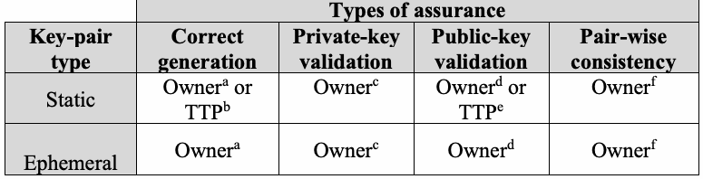
| 保証の種類 | ||||
| 鍵ペア | 適正な | 秘密鍵の | 公開鍵の | ペア単位の |
| 種類 | 生成 | 有効性確認 | 有効性確認 | 整合性 |
| 静的 | 所有者aまたはTTPb | 所有者c | 所有者dまたはTTPe | 所有者f |
| 所有者a | 所有者c | 所有者d | 所有者f | |
| 一時 |
a See Section 5.6.2.1.1, method a.
a 5.6.2.1.1節、方法aを参照。
未レビュー訳b See Section 5.6.2.1.1, method b
b 5.6.2.1.1節、方法bを参照。
未レビュー訳c See Section 5.6.2.1.2
c 5.6.2.1.2節を参照。
未レビュー訳d See Section 5.6.2.1.3, methods a and b.
d 5.6.2.1.3節、方法aおよびbを参照。
未レビュー訳e See Section 5.6.2.1.3, method c.
e 5.6.2.1.3節、方法cを参照。
未レビュー訳f See Section 5.6.2.1.4.
f 5.6.2.1.4節を参照。
未レビュー訳A static key-pair owner may optionally renew certain assurances regarding its key pair at any time. Table 3 indicates which of the assurances obtained by the owner of a static key pair can be renewed and indicates the sections of this document where further information is provided. Note that for ephemeral key pairs, only initial assurances are required; renewed assurance for ephemeral key pairs is not applicable, since ephemeral key pairs are short-lived. Also, note that assurance of the correct generation of a static key pair is not renewable since, after the fact, it is not feasible to verify that its private component was randomly selected.
静的鍵ペアの所有者は、自身の鍵ペアに関する一部の保証を、いつでも任意に更新してよい。Table 3 は、静的鍵ペアの所有者が得た保証のうちどれが更新できるかを示し、詳しい情報が記載されている本文書の節を示す。エフェメラル鍵ペアについては、初回の保証だけが要求されることに注意する。エフェメラル鍵ペアは短命であるため、保証の更新は該当しない。また、静的鍵ペアが正しく生成されたことの保証は更新できないことにも注意する。秘密鍵の部分がランダムに選択されたことを事後に検証することは、実行可能でないからである。
Table 3: Optional renewal of assurances by the key-pair owner
表3：鍵ペア所有者による保証の任意更新
| Types of assurance | ||||
| Key-pair | Correct | Private-key | Public-key | Pair-wise |
| type | generation | validation | validation | consistency |
| Static | Infeasible | Ownera | Ownerb | Ownerc |
原本PDFの抜粋画像
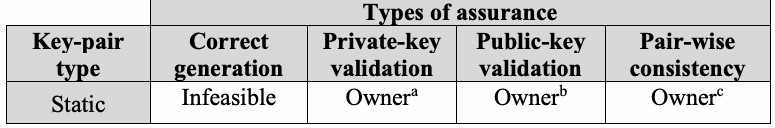
| 保証の種類 | ||||
| 鍵ペア | 適正な | 秘密鍵の | 公開鍵の | ペア単位の |
| 種類 | 生成 | 有効性確認 | 有効性確認 | 整合性 |
| 静的 | 実現不可能 | 所有者a | 所有者b | 所有者c |
a. See Section 5.6.2.1.2.
a. 5.6.2.1.2節を参照。
未レビュー訳b. See Section 5.6.2.1.3.
b. 5.6.2.1.3節を参照。
未レビュー訳c. See Section 5.6.2.1.4.
c. 5.6.2.1.4節を参照。
Note that the methods used to obtain the required assurances are not necessarily independent.
必要な保証を得るために使用する方法は、必ずしも相互に独立しているとは限らない。
For example, the key-pair owner may employ a key-generation routine that is consistent with the criteria of Section 5.6.1 and also incorporates the actions required to provide (initial)
例えば、鍵ペアの所有者は、Section 5.6.1 の基準に適合し、かつ次の保証（初回のもの）を与えるために必要な行為も組み込んだ鍵生成ルーチンを使用してよい。
assurance of the validity and consistency of the private and public components of the resulting key pair. As part of the proper implementation of this Recommendation, system users and/or agents trusted to act on their behalf should determine which of the methods above meet their security requirements. The application tasked with performing key establishment on behalf of a party should determine whether to proceed with a key-establishment transaction, based upon the perceived adequacy of the method(s) used to obtain the above assurances.
有効性と整合性の（初期）保証に必要な措置も組み込んだ鍵生成ルーチンを使用してよい。本勧告を適切に実装する一環として、システム利用者および／またはその代理として行動することを信頼されたエージェントは、上記の方法のどれが各自のセキュリティ要件を満たすか判断することが望ましい。ある当事者に代わって鍵確立を実行するアプリケーションは、上記保証を得るために使用した方法の妥当性に関する認識に基づき、鍵確立トランザクションを続行するか判断することが望ましい。
未レビュー訳5.6.2.1.1 Owner Assurance of Correct Generation
5.6.2.1.1 所有者による適正な生成の保証
Prior to the use of a key pair in a key-establishment transaction, the owner of a static or ephemeral key-establishment key pair shall obtain an initial assurance that the key pair has been correctly formed (in a manner that is consistent with the criteria of Section 5.6.1) using one of the following methods: a. For both a static and ephemeral key pair: The owner generates the key pair as
鍵確立トランザクションで鍵ペアを使用する前に、静的または一時鍵確立鍵ペアの所有者は、次のいずれかの方法を用いて、鍵ペアが適切に形成されたこと（5.6.1節の基準に適合する方法であること）の初期保証を得なければならない。a. 静的鍵ペアおよび一時鍵ペアの両方：所有者が
未レビュー訳specified in Section 5.6, or b. For a static key pair (only): A trusted third party (TTP) (trusted by the owner and any recipient of the public key) generates the key pair as specified in Section 5.6.1 and provides it to the owner. Note that, in this case, the TTP needs to be trusted by both the owner and any public-key recipient to generate the key pair as specified in Section
5.6節に規定されたとおりに鍵ペアを生成する。またはb. 静的鍵ペアのみ：信頼できる第三者（TTP）（公開鍵の所有者および受領者が信頼する者）が5.6.1節に規定されたとおりに鍵ペアを生成し、所有者に提供する。この場合、鍵ペアが5.6.1節に従って生成され、かつ所有者の秘密鍵を用いて所有者になりすまさないよう、TTPは所有者と公開鍵の受領者の両方から信頼される必要があることに留意。
未レビュー訳b. For a static key pair (only): A trusted third party (TTP) (trusted by the owner and any recipient of the public key) generates the key pair as specified in Section 5.6.1 and provides it to the owner. Note that, in this case, the TTP needs to be trusted by both the owner and any public-key recipient to generate the key pair as specified in Section 5.6.1 and not to use the owner’s private key to masquerade as the owner. This method is not appropriate for ephemeral key pairs, since the owner generates ephemeral keys.
b. 静的鍵ペアのみについて：信頼できる第三者（TTP）（所有者と公開鍵のすべての受領者から信頼されている者）がSection 5.6.1の規定どおりに鍵ペアを生成し、所有者に提供する。この場合、TTPは、Section 5.6.1の規定どおりに鍵ペアを生成すること、および所有者の秘密鍵を使って所有者になりすまさないことについて、所有者と公開鍵のすべての受領者の両方から信頼されている必要があることに注意する。エフェメラル鍵は所有者が生成するので、この方法はエフェメラル鍵ペアには適さない。
5.6.2.1.2 Owner Assurance of Private-Key Validity
5.6.2.1.2 所有者による秘密鍵有効性の保証
Prior to the use of a key pair in a key-establishment transaction, the owner of a static or ephemeral key-establishment key pair shall obtain an initial assurance that the private key is an integer in the correct interval, which depends on the type of domain parameters that are used to generate key pairs.
鍵確立トランザクションで鍵ペアを使用する前に、静的またはエフェメラルの鍵確立用鍵ペアの所有者は、秘密鍵が正しい区間内の整数であることの初期保証を得なければならない。この区間は、鍵ペアの生成に用いるドメインパラメータの種類によって決まる。
• When FFC domain parameters \((p, q, g\{, \mathit{SEED}, \mathit{counter}\})\) are used that conform to a FIPS 186-type FFC parameter-size set from Table 1, private keys are in the interval \([1, q - 1]\).
• FFCドメインパラメータ\((p, q, g\{, \mathit{SEED}, \mathit{counter}\})\)として、表1のFIPS 186型FFCパラメータサイズ集合に準拠するものを使用する場合、秘密鍵は区間\([1, q - 1]\)にある。
• When an approved safe-prime group is used (see Section 5.5.1.1), and the corresponding FFC domain parameters are \((p, q = (p - 1)/2, g = 2)\), the private keys are in the interval \([1, M - 1]\), where \(M = \min(2^{N}, q)\), and \(N\) is the agreed-upon (maximum) bit length, satisfying \(2s \le N \le \operatorname{len}(q)\), where \(s\) is the maximum security strength that can be supported by the safe-prime group, as specified in Appendix D.
• 承認済み安全素数群を使用し（5.5.1.1節を参照）、対応するFFCドメインパラメータが\((p, q = (p - 1)/2, g = 2)\)である場合、秘密鍵は区間\([1, M - 1]\)にある。ここで\(M = \min(2^{N}, q)\)であり、\(N\)は合意された（最大）ビット長で、\(2s \le N \le \operatorname{len}(q)\)を満たす。\(s\)は、付録Dに規定された、安全素数群がサポートできる最大セキュリティ強度である。
• When an approved elliptic-curve group is used, and the corresponding ECC domain parameters are \((q, \mathit{FR}, a, b\{, \mathit{SEED}\}, G, n, h)\), the private keys are in the interval \([1, n - 1]\).
• 承認済み楕円曲線群を使用し、対応するECCドメインパラメータが\((q, \mathit{FR}, a, b\{, \mathit{SEED}\}, G, n, h)\)である場合、秘密鍵は区間\([1, n - 1]\)にある。
The owner of a static or ephemeral key-establishment key pair shall obtain an initial assurance that the private key is an integer in the correct interval by using one of the following methods:
静的またはエフェメラルの鍵確立用鍵ペアの所有者は、次のいずれかの方法を用いて、秘密鍵が正しい区間内の整数であることの初期保証を得なければならない。
a. For both a static and ephemeral key pair: The owner generates the key pair as
a. 静的鍵ペアおよび一時鍵ペアの両方：所有者が
未レビュー訳specified in Section 5.6.1, or b. For a static key pair (only): After receiving a static key pair from a trusted third party (trusted by the owner), the owner performs a separate check to determine that the private key is in the correct interval. (While an entity can accept ownership of a static key pair that was generated by a TTP, an ephemeral key pair shall only be generated by its owner.)
5.6.1節に規定されたとおりに鍵ペアを生成する。またはb. 静的鍵ペアのみ：信頼できる第三者（所有者が信頼する者）から静的鍵ペアを受け取った後、所有者が秘密鍵が正しい範囲内にあることを別途確認する。（主体はTTPが生成した静的鍵ペアの所有権を受け入れてよいが、一時鍵ペアは所有者自身だけが生成しなければならない。）
未レビュー訳To renew this assurance for a static key pair (if desired), the owner shall perform a separate check to determine that the private key is in the correct interval as determined by the domain parameters.
静的鍵ペアについてこの保証を更新する場合（任意）、所有者は、ドメインパラメータによって定められた正しい範囲内に秘密鍵があることを別途確認しなければならない。
5.6.2.1.3 Owner Assurance of Public-Key Validity
5.6.2.1.3 所有者による公開鍵有効性の保証
Prior to a key-establishment transaction, the owner of a key pair shall obtain an initial assurance that the public key has the expected representation for a non-identity element of the correct cryptographic subgroup, as determined by the domain parameters, using one of the following methods: a. For either a static key pair or an ephemeral key pair: The owner generates the key pair as specified in Section 5.6.1 and performs a full public-key validation or an
鍵確立トランザクションの前に、鍵ペア所有者は、ドメインパラメータによって定められた正しい暗号部分群の非単位元について公開鍵が期待される形式であることの初期保証を、次のいずれかの方法で得なければならない。a. 静的鍵ペアまたは一時鍵ペアのいずれの場合も、所有者は5.6.1節の規定に従って鍵ペアを生成し、その生成過程の一部として完全な公開鍵検証または
未レビュー訳a. For either a static key pair or an ephemeral key pair: The owner generates the key pair as specified in Section 5.6.1 and performs a full public-key validation or an equivalent procedure as part of its generation process (see Section 5.6.2.3.1 for FFC, and Section 5.6.2.3.3 for ECC); or
a. 静的鍵ペアまたはエフェメラル鍵ペアのいずれについても：所有者がSection 5.6.1の規定どおりに鍵ペアを生成し、その生成プロセスの一部として、完全な公開鍵検証またはそれと同等の手順を実行する（FFCについてはSection 5.6.2.3.1、ECCについてはSection 5.6.2.3.3を参照）。または
b. For either a static key pair or an ephemeral key pair: The owner performs a full public-key validation as a separate process from the key-pair generation process (see Sections 5.6.2.3.1 and 5.6.2.3.3) (either the owner or a TTP could have generated a static key pair; only the owner can generate an ephemeral key pair); or
b. 静的鍵ペアまたはエフェメラル鍵ペアのいずれについても：所有者が、鍵ペア生成プロセスとは別のプロセスとして、完全な公開鍵検証を実行する（Sections 5.6.2.3.1および5.6.2.3.3を参照）（静的鍵ペアは所有者とTTPのどちらが生成したものでもよいが、エフェメラル鍵ペアを生成できるのは所有者だけである）。または
c. For a static key pair (only): A trusted third party (TTP) (trusted by the owner)
c. 静的鍵ペアのみ：所有者が信頼する信頼できる第三者（TTP）が
未レビュー訳performs a full public-key validation (see Sections 5.6.2.3.1 and 5.6.2.3.3) and provides the validation result to the owner. This TTP could, for example, be a binding authority (see Section 4.1) and/or a TTP that generated the key pair (see method b in Section 5.6.2.1.1). In the case of TTP generation, the TTP shall either employ a key-generation routine that performs a full public-key validation (or an equivalent procedure) as part of its key-pair generation process, or perform a full public-key validation as a separate process, following its key-pair generation process.
完全な公開鍵検証を実行し（Sections 5.6.2.3.1および5.6.2.3.3を参照）、その検証結果を所有者に提供する。このTTPは、例えば、バインディング機関（Section 4.1を参照）であっても、鍵ペアを生成したTTP（Section 5.6.2.1.1の方法bを参照）であっても、その両方であってもよい。TTPが鍵ペアを生成する場合、TTPは、鍵ペア生成プロセスの一部として完全な公開鍵検証（またはそれと同等の手順）を実行する鍵生成ルーチンを用いるか、鍵ペア生成プロセスの後に別のプロセスとして完全な公開鍵検証を実行するかのいずれかをしなければならない。
To renew this assurance for a static public key (if desired), the owner shall perform a successful full public-key validation (see Section 5.6.2.3.1 for FFC, and Section 5.6.2.3.3 for ECC). Note that renewed assurance of validity for an ephemeral public key is not applicable, since ephemeral key pairs are short-lived.
静的公開鍵についてこの保証を更新する場合（希望するとき）、所有者は、完全な公開鍵検証を実行して成功しなければならない（FFCについてはSection 5.6.2.3.1、ECCについてはSection 5.6.2.3.3を参照）。エフェメラル鍵ペアは短命なので、エフェメラル公開鍵の有効性の保証の更新は該当しないことに注意する。
5.6.2.1.4 Owner Assurance of Pair-wise Consistency
5.6.2.1.4 所有者によるペア単位整合性の保証
Prior to a key-establishment transaction, the owner of a key pair shall obtain an initial assurance that the private key and public key have the correct mathematical relationship to each other by using one of the following methods:
鍵確立トランザクションの前に、鍵ペアの所有者は、次のいずれかの方法を用いて、秘密鍵と公開鍵が互いに正しい数学的関係にあることの初期保証を得なければならない。
a. For either a static key pair or an ephemeral key pair: The owner generates the key
a. 静的鍵ペアまたは一時鍵ペアのいずれの場合も、所有者は鍵
未レビュー訳pair as specified in Section 5.6.1, or b. For a static key pair (only): Subsequent to the generation of a static key pair by the owner or a trusted third party as specified in Section 5.6.1, the owner performs one of the following consistency tests (as appropriate for the FFC or ECC domain parameters used during the generation process).
ペアを5.6.1節の規定に従って生成する。またはb. 静的鍵ペアのみ：所有者または信頼できる第三者が5.6.1節に従って静的鍵ペアを生成した後、所有者が、生成に使用したFFCまたはECCドメインパラメータに適した次の整合性試験のいずれかを行う。
未レビュー訳• For an FFC key pair \((x, y)\): Use the private key, \(x\), along with the generator \(g\) and prime modulus \(p\) included in the domain parameters associated with the key pair to compute \(g^{x} \bmod p\). Compare the result to the public key, \(y\). If \(g^{x} \bmod p\) is not equal to \(y\), then the pair-wise consistency test fails.
• FFC鍵ペア\((x, y)\)の場合：秘密鍵\(x\)を、その鍵ペアに関連付けられたドメインパラメータに含まれる生成元\(g\)および素数の法\(p\)とともに用いて、\(g^{x} \bmod p\)を計算する。その結果を公開鍵\(y\)と比較する。\(g^{x} \bmod p\)が\(y\)と等しくなければ、ペア単位整合性試験は失敗である。
• For an ECC key pair \((d, Q)\): Use the private key, \(d\), along with the generator \(G\) and other domain parameters associated with the key pair, to compute \(dG\) (according to the rules of elliptic-curve arithmetic). Compare the result to the public key, \(Q\). If \(dG\) is not equal to \(\mathrm{Q}\), then the pair-wise consistency test fails.
• ECC鍵ペア\((d, Q)\)の場合：秘密鍵\(d\)を、鍵ペアに関連する生成元\(G\)およびその他のドメインパラメータとともに用いて、（楕円曲線演算の規則に従って）\(dG\)を計算する。結果を公開鍵\(Q\)と比較する。\(dG\)が\(\mathrm{Q}\)と等しくなければ、ペア単位整合性試験は失敗する。
The static public key shall be successfully recomputed from the private key and the domain parameters to obtain assurance (via method b) that the private and public keys are consistent. If this pair-wise consistency test fails, the tested key pair shall not be used.
（方法bによる）秘密鍵と公開鍵の整合性の保証を得るには、静的公開鍵を秘密鍵とドメインパラメータから正常に再計算しなければならない。このペア単位整合性試験に失敗した場合、試験対象の鍵ペアを使用してはならない。
To renew assurance of pair-wise consistency for a static key pair (if desired), method b shall be employed by the owner. Note that renewed assurance for ephemeral key pairs is not applicable, since ephemeral key pairs are short-lived.
静的鍵ペアについてペア単位整合性の保証を更新する場合（望むなら）、所有者は方法bを使用しなければならない。なお、エフェメラル鍵ペアは短命であるため、エフェメラル鍵ペアについての保証の更新は該当しない。
5.6.2.1.5 Owner Assurance of Possession of the Private Key
5.6.2.1.5 所有者による秘密鍵保有の保証
Prior to a key-establishment transaction, the owner of a key pair shall obtain an initial assurance of possession of the private key using one of the following methods:
鍵確立トランザクションに先立ち、鍵ペアの所有者は、次のいずれかの方法を用いて、秘密鍵を保有していることの初期の保証を取得しなければならない。
a. For either a static key pair or an ephemeral key pair: The owner generates the key pair as specified in Section 5.6.1, or
a. 静的鍵ペアまたはエフェメラル鍵ペアのいずれの場合：所有者が Section 5.6.1 の規定に従って鍵ペアを生成する。または、
b. For a static key pair (only): When a trusted third party (trusted by the owner) generates a static key pair and provides it to the owner, the owner performs the appropriate pair-wise consistency test in method b of Section 5.6.2.1.4; if the pair-wise consistency test fails, the tested key pair shall not be used.
b. 静的鍵ペアの場合（のみ）：（所有者が信頼する）信頼できる第三者が静的鍵ペアを生成して所有者に提供するとき、所有者は Section 5.6.2.1.4 の方法bにある適切なペア単位整合性試験を実施する。ペア単位整合性試験に失敗した場合、試験した鍵ペアを使用してはならない。
To renew this assurance for a static private key (if desired), the appropriate pair-wise consistency tests in method b of Section 5.6.2.1.4 shall be employed by the owner. Note that renewed assurance of the possession of an ephemeral private key is not applicable, since ephemeral key pairs are short-lived.
静的秘密鍵についてこの保証を更新する場合（望むなら）、所有者は Section 5.6.2.1.4 の方法bにある適切なペア単位整合性試験を使用しなければならない。なお、エフェメラル鍵ペアは短命であるため、エフェメラル秘密鍵の保有についての保証の更新は該当しない。
5.6.2.2 Assurances Required by a Public Key Recipient
5.6.2.2 公開鍵受領者に必要な保証
To successfully employ any of the schemes specified in this Recommendation, each participant in a key-establishment transaction must receive at least one public key owned by the other participant. The public key(s) may be received during the transaction (which is usually the case for an ephemeral public key) or prior to the transaction (as is sometimes the case for a static public key). Regardless of the timing, a transaction participant is said to be acting as a “public-key recipient” when it receives the other participant's public key(s). Note that besides the participants (i.e., party U and party V), a binding authority (e.g., a CA) may be a public key recipient (e.g., when obtaining assurance of possession).
本勧告で規定するいずれの方式も、うまく使用するには、鍵確立トランザクションの各参加者が、他方の参加者が所有する公開鍵を少なくとも1つ受け取らなければならない。公開鍵は、トランザクションの最中に受け取る場合（エフェメラル公開鍵では通常こうなる）もあれば、トランザクションの前に受け取る場合（静的公開鍵ではこうなることがある）もある。受け取る時期にかかわらず、トランザクションの参加者は、他方の参加者の公開鍵を受け取るとき、「公開鍵受領者」として行動しているという。なお、参加者（すなわち当事者Uおよび当事者V）のほかに、バインディング機関（例えばCA）が公開鍵受領者となる場合もある（例えば保有の保証を取得するとき）。
acting as a “public-key recipient” when it receives the other participant's public key(s). Note that besides the participants (i.e., party U and party V), a binding authority (e.g., a CA) may be a public key recipient (e.g., when obtaining assurance of possession). Prior to or during a key-establishment transaction, the recipient of a public key shall obtain assurance of public-key validity and/or private-key possession as required below:
「公開鍵受領者」として行動しているという。参加者（当事者UおよびV）に加えて、バインディング機関（例えばCA）も公開鍵受領者となる場合がある（例えば保有保証を得る場合）。鍵確立トランザクションの前または最中に、公開鍵の受領者は以下に従って、公開鍵の有効性および／または秘密鍵の保有について必要な保証を得なければならない。
未レビュー訳•• Assurance of public-key validity – assurance that the public key of the other party (i.e., the claimed owner of the public key) has the (unique) correct representation for a non-identity element of the correct cryptographic subgroup, as determined by the domain parameters. Recipients of static public keys are required to obtain this assurance (see Section 5.6.2.2.1). Recipients of ephemeral public keys are also required to obtain this assurance.
•• 公開鍵の有効性の保証 – 他方の当事者（すなわち、公開鍵の名義上の所有者）の公開鍵が、ドメインパラメータによって定まる正しい暗号部分群の非単位元の（一意の）正しい表現になっているという保証。静的公開鍵の受領者は、この保証を取得することが求められる（Section 5.6.2.2.1 を参照）。エフェメラル公開鍵の受領者も、この保証を取得することが求められる。
•Assurance of private-key possession – assurance that the claimed owner of a public key-establishment key (i.e., the other party) actually has the (correct) private key associated with that public key. Recipients of static public keys are required to obtain this assurance (see Section 5.6.2.2.3). Recipients of ephemeral public keys are encouraged (but not required) to obtain this assurance; (optional) methods for obtaining this assurance are discussed in Section 5.6.2.2.4.
•秘密鍵保有の保証：公開鍵（鍵確立用）の名義上の所有者（すなわち他方の当事者）が、その公開鍵に対応する（正しい）秘密鍵を実際に保有することの保証である。静的公開鍵の受領者はこの保証を得なければならない（5.6.2.2.3節を参照）。一時公開鍵の受領者もこの保証を得ることが推奨されるが、必須ではない。この保証を得るための（任意の）方法は5.6.2.2.4節で説明する。
Table 4 summarizes the assurances required by a public-key recipient for both the static and ephemeral public keys of the other party, identifying the party that may perform the actions necessary for the recipient to obtain the assurance and indicating the sections in this document where further information is provided.
Table 4 は、他方の当事者の静的公開鍵およびエフェメラル公開鍵の両方について公開鍵受領者に求められる保証をまとめたものであり、受領者がその保証を取得するために必要な行為を実施できる当事者を特定し、さらに詳しい情報がある本文書の節を示している。
Table 4: Assurances required by a public-key recipient
表4：公開鍵受領者に必要な保証
| Type of assurance | ||
| Key-pair | Public-key | Private-key |
| type | validation | possession |
| Static | Recipienta or TTPb | Recipientd or TTPe |
| Ephemeral | Recipientc | Not Requiredf |
原本PDFの抜粋画像
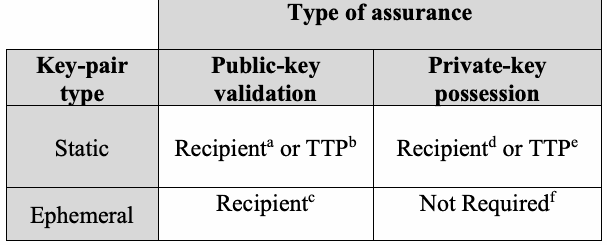
| 保証の種類 | ||
| 鍵ペア | 公開鍵の | 秘密鍵の |
| 種類 | 有効性確認 | 保有 |
| 静的 | 受領者aまたはTTPb | 受領者dまたはTTPe |
| 一時 | 受領者c | 不要f |
a See Section 5.6.2.2.1, method 1.
a 5.6.2.2.1節、方法1を参照。
未レビュー訳b See Section 5.6.2.2.1, method 2.
b 5.6.2.2.1節、方法2を参照。
未レビュー訳c See Section 5.6.2.2.2.
c 5.6.2.2.2節を参照。
未レビュー訳d. See Section 5.6.2.2.3.2.
d 5.6.2.2.3.2節を参照。
未レビュー訳e. See Section 5.6.2.2.3.1.
e 5.6.2.2.3.1節を参照。
未レビュー訳f However, see Section 5.6.2.2.4.
f ただし、5.6.2.2.4節を参照。
未レビュー訳As part of the proper implementation of this Recommendation, system users and/or agents trusted to act on their behalf should determine which of the indicated methods for obtaining the required (and/or desired) assurances meet their security requirements. The application tasked with performing key establishment on behalf of the recipient should determine whether to proceed with a key-establishment transaction, based upon the perceived adequacy of the method(s) used to obtain the assurances described above.
本勧告の適切な実装の一環として、システムの利用者および／または利用者に代わって行動することを信頼された代理者は、求められる（および／または望まれる）保証を取得するために示された方法のうち、どれが自らのセキュリティ要件を満たすかを判断すべきである。受領者に代わって鍵確立を実施する役割を担うアプリケーションは、上記の保証を取得するために用いられた方法が十分であると認められるかどうかに基づいて、鍵確立トランザクションを進めるかどうかを判断すべきである。
Once the necessary steps have been taken to provide the recipient of a static public key with assurance of its validity, the assurance obtained by the recipient may endure for a protracted period without the need to reconfirm the validity of that public key. The same may be true of assurance provided to the recipient that the owner of the static public key possesses the corresponding static private key. This could be the case, for example, when the source of the assurance is a trusted CA whose (valid) signature on a certificate containing the static public key indicates to the recipient that the arithmetic validity of the static public key has been confirmed by the CA and that the owner’s possession of the corresponding static private key has been established to the CA’s satisfaction. Alternatively, a party could maintain a record
静的公開鍵の受領者にその有効性の保証を与えるために必要な手順がひとたび実施されると、受領者が取得した保証は、その公開鍵の有効性を再確認する必要なしに、長期間にわたって持続する場合がある。静的公開鍵の所有者が対応する静的秘密鍵を保有しているという、受領者に与えられる保証についても、同じことがいえる場合がある。例えば、保証の出所が信頼できるCAであり、静的公開鍵を含む証明書に対するそのCAの（有効な）署名が、静的公開鍵の算術的な有効性をCAが確認したこと、および所有者が対応する静的秘密鍵を保有していることがCAの納得する形で立証されたことを、受領者に示す場合がこれに当たる。あるいは、当事者は、次のような記録を保持することもできる。
(i.e., an integrity-protected record) of previously received static public keys whose validity was confirmed and/or whose owners have provided assurance of private-key possession. On the other hand, the recipient of a static public key may choose to obtain renewed assurance of its validity and/or choose to obtain renewed assurance that the owner of the static public key (i.e., the other party) possesses the corresponding static private key. Deciding how often (if at all) to seek renewed assurance is a determination that should be made by the recipient (or an agent trusted to act on the recipient’s behalf), based on the recipient’s security needs. Renewed assurance of the validity of a received ephemeral public key and renewed assurance that the other party is in possession of the corresponding ephemeral private key are not addressed in this Recommendation, since ephemeral key pairs are short-lived.
すなわち、以前に受領し、有効性が確認された静的公開鍵、および／または所有者が秘密鍵保有の保証を提供した静的公開鍵の完全性保護された記録である。一方、静的公開鍵の受領者は、その有効性の保証を更新すること、および／またはその所有者（すなわち他方の当事者）が対応する静的秘密鍵を保有しているとの保証を改めて得ることを選んでもよい。保証を更新する頻度（または更新するかどうか）は、受領者（または受領者の代理として行動することを信頼されたエージェント）が、受領者のセキュリティ上の必要性に基づいて決定することが望ましい。受領した一時公開鍵の有効性に関する保証の更新、および他方の当事者が対応する一時秘密鍵を保有しているとの保証の更新は、一時鍵ペアの有効期間が短いため、本勧告では扱わない。
未レビュー訳5.6.2.2.1 Recipient Assurance of Static Public-Key Validity
5.6.2.2.1 受領者による静的公開鍵有効性の保証
The recipient of another party’s static public key shall obtain assurance of the validity of that public key in one or more of the following ways:
他の当事者の静的公開鍵の受領者は、次の方法の1つ以上によって、その公開鍵の有効性の保証を取得しなければならない。
1.The recipient performs a successful full public-key validation of the received public key
1.受領者が受領した公開鍵について完全な公開鍵検証を正常に実施する
未レビュー訳(see Sections 5.6.2.3.1 for FFC domain parameters and Section 5.6.2.3.3 for ECC domain parameters).
（FFCドメインパラメータについては Section 5.6.2.3.1 を、ECCドメインパラメータについては Section 5.6.2.3.3 を参照）。
2.2. The recipient receives assurance that a trusted third party (trusted by the recipient) has performed a successful full public-key validation of the received public key (see Sections
2.2. 受領者が、（受領者が信頼する）信頼できる第三者が、受け取った公開鍵の完全な公開鍵検証を成功裏に実施したという保証を受け取る（次の Section を参照
5.6.2.3.1 and 5.6.2.3.3). This TTP could, for example, be a binding authority, such as a CA (see Section 4.1).
5.6.2.3.1 および 5.6.2.3.3 を参照）。この TTP は、例えば CA などのバインディング機関であってよい（Section 4.1 を参照）。
5.6.2.2.2 Recipient Assurance of Ephemeral Public-Key Validity
5.6.2.2.2 受領者による一時公開鍵有効性の保証
The recipient of another party’s ephemeral public key shall obtain assurance of its validity by using one of the following methods:
他の当事者のエフェメラル公開鍵の受領者は、次のいずれかの方法を用いて、その鍵の有効性の保証を得なければならない。
1.1. When an approved FFC safe-prime group or an approved elliptic curve group is used by the key-establishment scheme:
1.1. 鍵確立方式が承認された FFC 安全素数群または承認された楕円曲線群を使用する場合：
•• The recipient performs a successful partial public-key validation on the received public key (see Section 5.6.2.3.2 for FFC domain parameters and Section
•• 受領者が、受け取った公開鍵に対する部分的な公開鍵検証を実行し、成功する（FFC ドメインパラメータについては Section 5.6.2.3.2 を、また Section
5.6.2.3.4 for ECC domain parameters)
ECCドメインパラメータの場合は5.6.2.3.4節）
(As part of the proper implementation of this Recommendation, system users and/or agents trusted to act on their behalf should determine whether a partial validation of ephemeral public keys is sufficient to meet their security requirements. If it is determined that partial public-key validation is insufficient, then full public-key validation shall be performed.)
（本勧告を適切に実装する一環として、システム利用者、およびその代理として行動することを信頼されたエージェントの両方またはいずれかは、エフェメラル公開鍵の部分的な検証が自らのセキュリティ要件を満たすのに十分かどうかを判断すべきである。部分的な公開鍵検証では不十分と判断した場合は、完全な公開鍵検証を実行しなければならない。）
•The recipient performs a successful full public-key validation on the received public key (see Section 5.6.2.3.1 for FFC domain parameters and Section 5.6.2.3.3 for ECC domain parameters).
•受領者は、受領した公開鍵について完全な公開鍵検証を正常に実施する（FFCドメインパラメータについては5.6.2.3.1節、ECCドメインパラメータについては5.6.2.3.3節を参照）。
未レビュー訳2.When FIPS 186-type FFC domain parameters are used in the key-establishment scheme: The recipient performs a successful full public-key validation on the received public key (see Section 5.6.2.3.1 for FFC domain parameters).
2.鍵確立方式でFIPS 186型FFCドメインパラメータを使用する場合：受領者は受領した公開鍵について完全な公開鍵検証を正常に実施する（FFCドメインパラメータについては5.6.2.3.1節を参照）。
5.6.2.2.3 Recipient Assurance of the Owner’s Possession of a Static Private Key
5.6.2.2.3 受領者による所有者の静的秘密鍵保有の保証
The recipient of another party’s static public key shall obtain an initial assurance that the other party (i.e., the claimed owner of the public key) possesses the associated private key, either prior to or concurrently with performing a key-agreement transaction with that other party. Assurance of the validity of the corresponding public key shall be obtained prior to obtaining this assurance (unless the assurance of public-key validity and assurance of private-key possession are obtained simultaneously from a trusted third party).
他の当事者の静的公開鍵の受領者は、その他方の当事者（すなわち公開鍵の名義上の所有者）が対応する秘密鍵を保有しているとの初期保証を、当該当事者との鍵共有トランザクションの前または同時に得なければならない。この保証を得る前に、対応する公開鍵が有効であるとの保証を得る（公開鍵の有効性と秘密鍵保有の保証を信頼できる第三者から同時に得る場合を除く）。
未レビュー訳As part of the proper implementation of this Recommendation, system users and/or agents trusted to act on their behalf should determine which of the methods for obtaining assurance of possession meet their security requirements. The application tasked with performing key establishment on behalf of a party should determine whether to proceed with a key-establishment transaction, based upon the perceived adequacy of the method(s) used. Such knowledge may be explicitly provided to the application in some manner, or may be implicitly provided by the operation of the application itself.
本勧告を適切に実装する一環として、システム利用者、およびその代理として行動することを信頼されたエージェントの両方またはいずれかは、保有の保証を得る方法のうち、どれが自らのセキュリティ要件を満たすかを判断すべきである。当事者に代わって鍵確立を実行するアプリケーションは、使用された方法が十分であるかどうかの認識に基づいて、鍵確立トランザクションを進めるかどうかを判断すべきである。そのような知識は、何らかの方法でアプリケーションに明示的に与えられてもよいし、アプリケーション自体の動作によって暗黙的に与えられてもよい。
A binding authority can be used to bind the key-pair owner’s identifier to his static public key. In this case, at the time of binding an owner’s identifier to his static public key, the binding authority (i.e., a trusted third party, such as a CA) shall obtain assurance that the owner is in possession of the correct static private key. This assurance shall either be obtained using one of the methods specified in Section 5.6.2.2.3.2 (e.g., with the binding authority acting as the public-key recipient) or (only if using the FIPS 186-type domain parameters or the approved ECC domain parameters) by using an approved alternative (see SP 800-57, Sections 5.2 and 8.1.5.1.1.2). Note that the use of the signature-based alternative described in SP 800-57 is not approved for the safe-prime domain parameters.
バインディング機関を用いて、鍵ペア所有者の識別子をその静的公開鍵に結び付けることができる。この場合、バインディング機関（すなわち、CA などの信頼できる第三者）は、所有者の識別子をその静的公開鍵に結び付ける時点で、所有者が正しい静的秘密鍵を保有していることの保証を得なければならない。この保証は、Section 5.6.2.2.3.2 に規定する方法のいずれかを用いて（例えば、バインディング機関が公開鍵の受領者として行動して）得るか、または（FIPS 186 型のドメインパラメータもしくは承認された ECC ドメインパラメータを使用する場合に限り）承認された代替方法（SP 800-57 の Section 5.2 および 8.1.5.1.1.2 を参照）を用いて得なければならない。SP 800-57 に記載された署名に基づく代替方法の使用は、安全素数ドメインパラメータに対しては承認されていないことに注意すること。
Recipients not acting in the role of a binding authority shall obtain this assurance – either through a trusted third party (see Section 5.6.2.2.3.1) or directly from the owner (i.e., the other party) (see Section 5.6.2.2.3.2) before using the derived keying material for purposes beyond those required during the key-agreement transaction itself. If the recipient chooses to obtain this assurance directly from the other party (i.e., the claimed owner of that public key), then to comply with this Recommendation, the recipient shall use one of the methods specified in Section 5.6.2.2.3.2.
バインディング機関の役割を担っていない受領者は、導出された鍵素材を、鍵共有トランザクション自体の中で必要となる目的を超える目的に使用する前に、信頼できる第三者を通じて（Section 5.6.2.2.3.1 を参照）、または所有者（すなわち、他方の当事者）から直接（Section 5.6.2.2.3.2 を参照）、この保証を得なければならない。受領者がこの保証を他方の当事者（すなわち、その公開鍵の名義上の所有者）から直接得ることを選ぶ場合、本勧告に準拠するためには、受領者は Section 5.6.2.2.3.2 に規定する方法のいずれかを使用しなければならない。
5.6.2.2.3.1 Recipient Obtains Assurance from a Trusted Third Party
5.6.2.2.3.1 受領者が信頼できる第三者から保証を取得する
The recipient of a static public key may receive assurance that its owner (i.e., the other party in the key-agreement transaction) is in possession of the correct static private key from a trusted third party (trusted by the recipient) either before or during a key-agreement transaction that makes use of that static public key. The methods used by a third party trusted by the recipient to obtain that assurance are beyond the scope of this Recommendation (however, see the discussion in Section 5.6.2.2.3 above).
静的公開鍵の受領者は、その静的公開鍵を使用する鍵共有トランザクションの前または最中に、所有者（すなわち鍵共有トランザクションの他方の当事者）が正しい静的秘密鍵を保有しているとの保証を、受領者が信頼する信頼できる第三者から得てもよい。受領者が信頼する第三者がその保証を得るために使用する方法は、本勧告の適用範囲外である（ただし、上記5.6.2.2.3節の説明を参照）。
5.6.2.2.3.2 Recipient Obtains Assurance Directly from the Claimed Owner (i.e., the Other
5.6.2.2.3.2 受領者が名義上の所有者（すなわち他方の
未レビュー訳Party)
当事者）から直接保証を取得する
未レビュー訳When two parties engage in a key-agreement transaction, there is (at least) an implicit claim of ownership made whenever a static public key is provided on behalf of a given party. That party is considered to be a claimed owner of the corresponding static key pair – as opposed to being a true owner – until adequate assurance can be obtained that the party is actually the one authorized to use the static private key. The claimed owner can provide such assurance by demonstrating its knowledge of that private key. If all the following conditions are met during a key-agreement transaction that incorporates key confirmation as specified in this Recommendation, then while establishing keying material, the recipient of a static public key may be able to directly obtain (initial or renewed)
2者が鍵共有トランザクションを行うとき、ある当事者のために静的公開鍵が提示されるたびに、少なくとも暗黙の所有権主張がなされる。その当事者は、静的秘密鍵の使用を実際に許可されている者であるとの適切な保証が得られるまでは、対応する静的鍵ペアの真の所有者ではなく、名義上の所有者とみなされる。名義上の所有者は、その秘密鍵を知っていることを実証することで保証を提供できる。本勧告で規定する鍵確認を組み込んだ鍵共有トランザクションで、以下の条件がすべて満たされる場合、鍵素材の確立中に静的公開鍵の受領者は、名義上の所有者（すなわち他方の当事者）が対応する静的秘密鍵を現在保有しているとの（初期または更新後の）
未レビュー訳assurance of the claimed owner’s (i.e., the other party’s) current possession of the corresponding static private key:
名義上の所有者（すなわち、他方の当事者）が、対応する静的秘密鍵を現在保有していることの保証：
1.1. The recipient of the static public key contributes an ephemeral public key to the key-agreement process, one that is intended to be arithmetically combined with the claimed owner’s (i.e., the other party’s) static private key in computations performed by the claimed owner. (If an appropriate key-agreement scheme is employed, the claimed owner will be challenged to demonstrate current knowledge of his static private key by successfully performing those computations during the transaction.)
1.1. 静的公開鍵の受領者は、鍵共有プロセスにエフェメラル公開鍵を提供する。このエフェメラル公開鍵は、名義上の所有者が行う計算において、名義上の所有者（すなわち、他方の当事者）の静的秘密鍵と算術的に組み合わされることを意図したものである。（適切な鍵共有方式を使用する場合、名義上の所有者は、トランザクション中にそれらの計算を正しく実行することによって、自身の静的秘密鍵を現時点で知っていることを実証するよう求められる。）
2.2. The recipient of the static public key is also a key-confirmation recipient, with the claimed owner (i.e., other party) serving as the key-confirmation provider. (By successfully providing key confirmation, the claimed owner can demonstrate ownership of the received static public key and current knowledge of the corresponding static private key.)
2.2. 静的公開鍵の受領者は鍵確認の受領者でもあり、名義上の所有者（すなわち、他方の当事者）が鍵確認の提供者を務める。（鍵確認を正しく提供することによって、名義上の所有者は、受領された静的公開鍵の所有者であること、および対応する静的秘密鍵を現時点で知っていることを実証できる。）
There are several key-agreement schemes specified in this Recommendation that can be used
本勧告には、上記の両条件を満たして使用できる鍵共有方式が複数規定されている。
未レビュー訳s ://d while satisfying both of the conditions above. To claim conformance with this o i.o Recommendation, the key-agreement transaction during which the recipient of a static public rg key seeks to obtain assurance of its owner’s current possession of the corresponding static /1 0 private key shall employ one of the following approved key-agreement schemes, .6 02 incorporating key confirmation as specified in the indicated sections, with the recipient of that 8 N/ static public key acting as party U and serving as a key-confirmation recipient: IS T
本勧告への適合を主張するには、静的公開鍵の受領者が、その所有者による対応する静的秘密鍵の現在の保有について保証を得ようとする鍵共有トランザクションにおいて、指定された節に定める鍵確認を組み込む次の承認済み鍵共有方式のいずれかを使用し、当該静的公開鍵の受領者が当事者Uかつ鍵確認受領者として行動しなければならない。
未レビュー訳•dhHybridOneFlow (see Section 6.2.1.1, and either Section 6.2.1.5.2 or Section
•dhHybridOneFlow（6.2.1.1節、および6.2.1.5.2節または
未レビュー訳6.2.1.5.3),
6.2.1.5.3節を参照）、
未レビュー訳•• (Cofactor) One-Pass Unified Model (see Section 6.2.1.2, and either Section 6.2.1.5.2 or Section 6.2.1.5.3),
•• （Cofactor）One-Pass Unified Model（Section 6.2.1.2、および Section 6.2.1.5.2 または Section 6.2.1.5.3 のいずれかを参照）、
•MQV1 (see Sections 6.2.1.3, and either Section 6.2.1.5.2 or Section 6.2.1.5.3),
•MQV1（6.2.1.3節、および6.2.1.5.2節または6.2.1.5.3節を参照）、
•One-Pass MQV (see Section 6.2.1.4, and either Section 6.2.1.5.2 or Section 6.2.1.5.3),
•One-Pass MQV（6.2.1.4節、および6.2.1.5.2節または6.2.1.5.3節を参照）、
•dhOneFlow (see Sections 6.2.2.1 and 6.2.2.3.1), or
•dhOneFlow（6.2.2.1節および6.2.2.3.1節を参照）、または
•(Cofactor) One-Pass Diffie-Hellman (see Sections 6.2.2.2 and 6.2.2.3.1).
•（コファクタ）One-Pass Diffie-Hellman（6.2.2.2節および6.2.2.3.1節を参照）。
5.6.2.2.4 Recipient Assurance of the Owner’s Possession of an Ephemeral Private
5.6.2.2.4 受領者による所有者の一時秘密
未レビュー訳Key
鍵保有の保証
未レビュー訳This Recommendation does not require the recipient of an ephemeral public key to obtain assurance of the possession of the corresponding ephemeral private key by its claimed owner (i.e., the other participant in a key-establishment transaction). However, such assurance may be desired by the recipient, insisted upon by the recipient’s organization, and/or required by an application. Assurance of the validity of the ephemeral public key shall be obtained prior to obtaining assurance of possession of the private key. Ephemeral key pairs are generated by their owner when needed, and their private components are destroyed shortly thereafter (see Section 5.6.3.3 for details). Thus, the opportunity for the recipient of an ephemeral public key to obtain assurance that its claimed owner is in
本勧告は、一時公開鍵の受領者に対し、名義上の所有者（すなわち鍵確立トランザクションの他方の参加者）が対応する一時秘密鍵を保有しているとの保証を得ることを要求しない。ただし、受領者がそのような保証を望む場合、受領者の組織が要求する場合、および／またはアプリケーションが要求する場合がある。秘密鍵保有の保証を得る前に、一時公開鍵が有効であるとの保証を得なければならない。一時鍵ペアは必要なときに所有者が生成し、その秘密鍵部分はまもなく破棄される（詳細は5.6.3.3節を参照）。したがって、一時公開鍵の受領者が、名義上の所有者が対応する一時秘密鍵を保有しているとの保証を得る機会は
未レビュー訳Ephemeral key pairs are generated by their owner when needed, and their private components are destroyed shortly thereafter (see Section 5.6.3.3 for details). Thus, the opportunity for the recipient of an ephemeral public key to obtain assurance that its claimed owner is in possession of the corresponding ephemeral private key is limited to the (single) key-establishment transaction during which it was received.
エフェメラル鍵ペアは、必要になったときに所有者が生成し、その秘密の構成要素はその後まもなく破棄される（詳細は Section 5.6.3.3 を参照）。したがって、エフェメラル公開鍵の受領者が、名義上の所有者が対応するエフェメラル秘密鍵を保有していることの保証を得る機会は、その公開鍵を受領した（1回の）鍵確立トランザクションに限られる。
If all the following conditions are met during a key-agreement transaction that incorporates key confirmation as specified in this Recommendation, then in the course of establishing keying material, the recipient of an ephemeral public key may be able to obtain assurance that the other participant (i.e., the claimed owner of that ephemeral public key) is in possession of the corresponding ephemeral private key:
本勧告で規定する鍵確認を組み込んだ鍵共有トランザクションにおいて次の条件がすべて満たされる場合、エフェメラル公開鍵の受領者は、鍵素材を確立する過程で、他方の参加者（すなわち、そのエフェメラル公開鍵の名義上の所有者）が対応するエフェメラル秘密鍵を保有していることの保証を得られることがある。
1.1. The recipient of the ephemeral public key also receives a static public key that is presumed to be owned by the other party and is used in the key-agreement transaction. (Therefore, the other party is the claimed owner of both the received static public key and the received ephemeral public key.)
1.1. エフェメラル公開鍵の受領者は、他方の当事者が所有すると推定され、鍵共有トランザクションで使用される静的公開鍵も受領する。（したがって、他方の当事者は、受領された静的公開鍵と受領されたエフェメラル公開鍵の両方の名義上の所有者である。）
2.The recipient of the static and ephemeral public keys contributes its own (distinct)
2.静的公開鍵と一時公開鍵の受領者は、自身の（別個の）
未レビュー訳ephemeral public key to the key-agreement process, one that is intended to be arithmetically combined with the private key corresponding to the received ephemeral public key in computations performed by the claimed owner of the received static and ephemeral public keys. (If an appropriate key-agreement scheme is employed, the claimed owner of the received public keys will be challenged to demonstrate current knowledge of his ephemeral private key by successfully performing those computations during the transaction.)
エフェメラル公開鍵を鍵共有プロセスに提供する。このエフェメラル公開鍵は、受領された静的公開鍵およびエフェメラル公開鍵の名義上の所有者が行う計算において、受領されたエフェメラル公開鍵に対応する秘密鍵と算術的に組み合わされることを意図したものである。（適切な鍵共有方式を使用する場合、受領された公開鍵の名義上の所有者は、トランザクション中にそれらの計算を正しく実行することによって、自身のエフェメラル秘密鍵を現時点で知っていることを実証するよう求められる。）
3.3. The recipient of the static and ephemeral public keys is also a key confirmation recipient, with the claimed owner of the received public keys serving as the key-confirmation provider. (By successfully providing key confirmation, the claimed owner of the received public keys can demonstrate that he is the owner of the received static public key and that he knows the ephemeral private key corresponding to the received ephemeral public key.)
3.3. 静的公開鍵およびエフェメラル公開鍵の受領者は鍵確認の受領者でもあり、受領された公開鍵の名義上の所有者が鍵確認の提供者を務める。（鍵確認を正しく提供することによって、受領された公開鍵の名義上の所有者は、自身が受領された静的公開鍵の所有者であること、および受領されたエフェメラル公開鍵に対応するエフェメラル秘密鍵を知っていることを実証できる。）
received ephemeral public key.) There are a limited number of key-agreement schemes specified in this Recommendation that can be used while satisfying all three of the conditions above. To claim conformance with this Recommendation, the key-agreement transaction during which the recipient of an ephemeral public key seeks to obtain assurance of the claimed owner’s possession of the corresponding ephemeral private key shall employ one of the following approved key-agreement schemes, incorporating key confirmation as specified in the indicated sections, with the recipient of the ephemeral public key serving as a key-confirmation recipient:
上記3条件を満たして使用できる鍵共有方式は、本勧告に規定されたもののうち限られている。本勧告への適合を主張するには、一時公開鍵の受領者が、名義上の所有者による対応する一時秘密鍵の保有について保証を得ようとする鍵共有トランザクションで、指定された節に規定された鍵確認を組み込む次の承認済み鍵共有方式のいずれかを使用し、一時公開鍵の受領者が鍵確認受領者として行動しなければならない。
未レビュー訳•dhHybrid1 (see Section 6.1.1.1 and Section 6.1.1.5) or
•dhHybrid1（6.1.1.1節および6.1.1.5節を参照）、または
•(Cofactor) Full Unified Model (see Section 6.1.1.2 and Section 6.1.1.5).
•（コファクタ）Full Unified Model（6.1.1.2節および6.1.1.5節を参照）。
Note: If key confirmation is provided in both directions in a key-agreement transaction employing one of the schemes above, then each party can obtain assurance of the other party’s possession of their ephemeral private key.
注：上記方式を用いた鍵共有トランザクションで双方向に鍵確認を行う場合、各当事者は他方当事者がその一時秘密鍵を保有しているとの保証を得られる。
5.6.2.3 Public Key Validation Routines
5.6.2.3 公開鍵検証ルーチン
Public-key validation refers to the process of checking the arithmetic properties of a candidate public key. Both full and partial validation routines are provided for public keys that are associated with either FFC or ECC domain parameters. Public-key validation does not require knowledge of the associated private key and so may be done at any time by anyone. However, these routines assume a prior validation of the domain parameters
公開鍵検証とは、候補となる公開鍵の算術的性質を確認する処理をいう。FFCまたはECCのドメインパラメータに関連付けられた公開鍵について、完全検証と部分検証の両方のルーチンを示す。公開鍵検証は、関連する秘密鍵の知識を必要としないため、いつでも誰でも実施できる。ただし、これらのルーチンは、ドメインパラメータが事前に検証されていることを前提とする
5.6.2.3.1 FFC Full Public-Key Validation Routine
5.6.2.3.1 FFC完全公開鍵検証ルーチン
FFC full public-key validation refers to the process of checking the arithmetic properties of a candidate FFC public key to ensure that it has the expected representation and is in the correct subgroup of the multiplicative group of the finite field specified by the associated FFC domain parameters.
FFC完全公開鍵検証とは、候補となるFFC公開鍵の算術的性質を確認し、その公開鍵が期待される表現を持ち、かつ関連するFFCドメインパラメータが指定する有限体の乗法群の正しい部分群に属することを確かめる処理をいう。
This routine shall be used when assurance of full public-key validity is required (or desired)
静的または一時FFC公開鍵の完全な有効性の保証が必要（または望ましい）な場合、このルーチンを
未レビュー訳for a static or ephemeral FFC public key.
使用しなければならない。
未レビュー訳Input:
入力：
1. \((p, q, g\{, \mathit{SEED}, \mathit{counter}\})\): A valid set of FFC domain parameters, and
1. \((p, q, g\{, \mathit{SEED}, \mathit{counter}\})\)：有効なFFCドメインパラメータ一式、および
2. \(y\): A candidate FFC public key.
2. \(y\)：候補FFC公開鍵。
Process:
処理：
1. Verify that \(2 \le y \le p - 2\).
1. \(2 \le y \le p - 2\)であることを検証する。
Success at this stage ensures that \(y\) has the expected representation for a nonzero field element (i.e., an integer in the interval \([1, p - 1]\)) and that \(y\) is in the proper range for a properly generated public key.
この段階の成功により、\(y\) が0でない体要素（すなわち区間 \([1, p - 1]\) の整数）として期待される表現を持ち、\(y\) が適正に生成された公開鍵として正しい範囲内にあることが保証される。
2. Verify22 that \(1 = y^q \bmod p\).
2. \(1 = y^q \bmod p\) であることを検証する22。
Success at this stage ensures that \(y\) has the correct order and thus, is a non-identity element in the correct subgroup of \(\mathit{GF}(p)^*\).
この段階の成功により、\(y\) の位数が正しく、したがって \(\mathit{GF}(p)^*\) の正しい部分群に属する非単位元であることが保証される。
Output: If any of the above verifications fail, immediately output an error indicator and exit without further processing. Otherwise, output an indication of successful validation.
出力：上記検証のいずれかが失敗した場合、エラー表示を直ちに出力し、以後の処理を行わず終了する。それ以外の場合、検証成功の表示を出力する。
22 When the FFC domain parameters correspond to a safe-prime group, \(1 = y^q \bmod p\) if and only if \(y\) is a (nonzero) quadratic residue modulo \(p\), which can be verified by computing the value of the Legendre symbol of \(y\) with respect to \(p\).
22 FFCドメインパラメータが安全素数群に対応する場合、\(1 = y^q \bmod p\) は \(y\) が \(p\) を法とする（非零）平方剰余であることと同値であり、\(y\) の \(p\) に対するルジャンドル記号の値を計算して検証できる。
5.6.2.3.2 FFC Partial Public-Key Validation Routine
5.6.2.3.2 FFC部分公開鍵検証ルーチン
FFC partial public-key validation refers to the process of performing only the first step of a full public-key validation, omitting the check that determines whether the candidate FFC public key is in the correct subgroup. This routine shall only be used with ephemeral FFC public keys generated using the approved safe-prime groups when assurance of the partial validity of such keys is to be obtained as specified in Section 5.6.2.2.2. Input:
FFC部分公開鍵検証とは、完全な公開鍵検証の最初の手順だけを実施し、候補FFC公開鍵が正しい部分群に属するかを判定する検査を省略する処理をいう。このルーチンは、5.6.2.2.2節に規定された部分的有効性の保証を得るために、承認済み安全素数群を用いて生成された一時FFC公開鍵に限り使用しなければならない。入力：
未レビュー訳1. \((p, q = (p - 1)/2, g = 2)\) A valid set of "safe" FFC domain parameters corresponding to a safe-prime group (see Section 5.5.1.1), and
1. \((p, q = (p - 1)/2, g = 2)\) 安全素数群に対応する「安全」FFCドメインパラメータの有効な一式（5.5.1.1節を参照）、および
2. \(y\): A candidate FFC public key.
2. \(y\)：候補FFC公開鍵。
Process:
処理：
Verify that \(2 \le y \le p - 2\).
\(2 \le y \le p - 2\) であることを検証する。
Success at this stage ensures that \(y\) has the expected representation for a nonzero field element (i.e., an integer in the interval \([1, p - 1]\)) and that \(y\) is in the proper range for a properly generated public key.
この段階の成功により、\(y\) が0でない体要素（すなわち区間 \([1, p - 1]\) の整数）として期待される表現を持ち、\(y\) が適正に生成された公開鍵として正しい範囲内にあることが保証される。
Output: If the above verification fails, output an error indicator. Otherwise, output an indication of successful validation.
出力：上記の検証に失敗した場合は、エラー表示を出力する。それ以外の場合は、検証に成功したことを示す表示を出力する。
5.6.2.3.3 ECC Full Public-Key Validation Routine
5.6.2.3.3 ECC完全公開鍵検証ルーチン
ECC full public-key validation refers to the process of checking all the arithmetic properties of a candidate ECC public key to ensure that it has the expected representation for a non-identity element of the correct subgroup of the appropriate elliptic-curve group, as specified by the associated ECC domain parameters.
ECC完全公開鍵検証とは、候補となるECC公開鍵の算術的性質をすべて確認し、その公開鍵が、関連するECCドメインパラメータが指定する適切な楕円曲線群の正しい部分群の非単位元として期待される表現を持つことを確かめる処理をいう。
This routine shall be used when assurance of full public-key validity is required (or desired)
静的または一時ECC公開鍵の完全な有効性の保証が必要（または望ましい）な場合、このルーチンを
未レビュー訳for a static or ephemeral ECC public key.
使用しなければならない。
未レビュー訳Input:
入力：
1. \((q, \mathit{FR}, a, b\{, \mathit{SEED}\}, G, n, h)\): A valid set of ECC domain parameters, and
1. \((q, \mathit{FR}, a, b\{, \mathit{SEED}\}, G, n, h)\)：有効なECCドメインパラメータ一式、および
2. \(Q = (x_Q, y_Q)\): A candidate ECC public key.
2. \(Q = (x_Q, y_Q)\)：候補ECC公開鍵。
Process:
処理：
1. Verify that \(Q\) is not the identity element \(\varnothing\).
1. \(Q\)が単位元\(\varnothing\)でないことを検証する。
Success at this stage ensures that \(Q\) is not the identity element of the elliptic-curve group (which would never be the value of a properly generated public key).
この段階の成功により、\(Q\) が楕円曲線群の単位元ではないことが保証される（適正に生成された公開鍵の値が単位元になることはない）。
2. Verify that \(x_Q\) and \(y_Q\) are integers in the interval \([0, p - 1]\) in the case that \(q\) is an odd prime \(p\), or that \(x_Q\) and \(y_Q\) are bit strings of length \(m\) bits in the case that \(q = 2^m\).
2. \(x_Q\) と \(y_Q\) が区間 \([0, p - 1]\) の整数であること（\(q\) が奇素数 \(p\) の場合）、または \(x_Q\) と \(y_Q\) が長さ \(m\) ビットのビット列であること（\(q = 2^m\) の場合）を検証する。
Success at this stage ensures that each coordinate of the public key has the expected representation for an element in the underlying field, \(\mathit{GF}(q)\).
この段階の成功により、公開鍵の各座標が基礎体 \(\mathit{GF}(q)\) の要素として期待される表現を持つことが保証される。
3. Verify that \(Q\) is on the curve. In particular,
3. \(Q\) が曲線上にあることを検証する。具体的には、
• If \(q\) is an odd prime \(p\), verify that \((y_Q)^2 = ((x_Q)^3 + ax_Q + b) \bmod p\).
• \(q\) が奇素数 \(p\) の場合、\((y_Q)^2 = ((x_Q)^3 + ax_Q + b) \bmod p\) であることを検証する。
• If \(q = 2^m\), verify that \((y_Q)^2 + x_Q y_Q = (x_Q)^3 + a(x_Q)^2 + b\) in \(\mathit{GF}(2^m)\), where the arithmetic is performed as dictated by the field representation parameter \(\mathit{FR}\).
• \(q = 2^m\) の場合、\((y_Q)^2 + x_Q y_Q = (x_Q)^3 + a(x_Q)^2 + b\) が \(\mathit{GF}(2^m)\) 上で成り立つことを検証する。演算は体表現パラメータ \(\mathit{FR}\) で定められたとおりに実行する。
Success at this stage ensures that the public key is a point on the correct elliptic curve.
この段階の成功により、公開鍵が正しい楕円曲線上の点であることが保証される。
4. Compute \(nQ\) (using elliptic curve arithmetic), and verify that \(nQ = \varnothing\).
4. \(nQ\)を（楕円曲線演算を用いて）計算し、\(nQ = \varnothing\)であることを検証する。
Success at this stage ensures that the public key has the correct order. Along with the successful verifications in the previous steps, this step ensures that the public key is in the correct elliptic-curve subgroup and is not the identity element.
この段階の成功により公開鍵の位数が正しいことが保証される。前段階の検証成功と併せて、公開鍵が正しい楕円曲線部分群に属し、単位元ではないことも保証される。
Output: If any of the above verifications fail, immediately output an error indicator and exit without further processing. Otherwise, output an indication of successful validation.
出力：上記の検証のいずれかに失敗した場合は、直ちにエラー表示を出力し、以後の処理を行わずに終了する。それ以外の場合は、検証に成功したことを示す表示を出力する。
5.6.2.3.4 ECC Partial Public-Key Validation Routine
5.6.2.3.4 ECC部分公開鍵検証ルーチン
ECC partial public-key validation refers to the process of checking some (but not all) of the arithmetic properties of a candidate ECC public key to ensure that it has the expected representation for a non-identity element of the correct elliptic-curve group, as specified by the associated ECC domain parameters. ECC partial public-key validation omits the validation of subgroup membership23, and therefore, is usually faster than ECC full public-key validation.
ECC部分公開鍵検証とは、候補となるECC公開鍵の算術的性質の一部（すべてではない）を確認し、その公開鍵が、関連するECCドメインパラメータが指定する正しい楕円曲線群の非単位元として期待される表現を持つことを確かめる処理をいう。ECC部分公開鍵検証は、部分群に属することの検証23を省略するため、通常はECC完全公開鍵検証より高速である。
This routine shall only be used when assurance of partial public-key validity is acceptable for an ephemeral ECC public key.
このルーチンを使用するのは、エフェメラルECC公開鍵について部分的な公開鍵有効性の保証で足りる場合に限らなければならない。
Input:
入力：
1. \((q, \mathit{FR}, a, b\{, \mathit{SEED}\}, G, n, h)\): A valid set of ECC domain parameters, and
1. \((q, \mathit{FR}, a, b\{, \mathit{SEED}\}, G, n, h)\)：有効なECCドメインパラメータ一式、および
2. \(Q = (x_Q, y_Q)\): A candidate ECC public key.
2. \(Q = (x_Q, y_Q)\)：候補ECC公開鍵。
Process:
処理：
1. Verify that \(Q\) is not the identity element \(\varnothing\).
1. \(Q\)が単位元\(\varnothing\)でないことを検証する。
Success at this stage ensures that \(Q\) is not the identity element of the elliptic-curve group (which would never be the value of a properly generated public key).
この段階の成功により、\(Q\)が楕円曲線群の単位元ではないことが保証される（適正に生成された公開鍵が単位元になることはない）。
2. Verify that \(x_Q\) and \(y_Q\) are integers in the interval \([0, p - 1]\) in the case that \(q\) is an odd prime \(p\), or that \(x_Q\) and \(y_Q\) are bit strings of length \(m\) bits in the case that \(q = 2^m\).
2. \(x_Q\)および\(y_Q\)が区間\([0, p - 1]\)の整数であることを検証する（\(q\)が奇素数\(p\)の場合）。または、\(x_Q\)および\(y_Q\)が長さ\(m\)ビットのビット列であることを検証する（\(q = 2^m\)の場合）。
Success at this stage ensures that each coordinate of the public key has the expected representation for an element in the underlying field, \(\mathit{GF}(q)\).
この段階の成功により、公開鍵の各座標が、基礎体\(\mathit{GF}(q)\)の要素として期待される表現を持つことが保証される。
3. Verify that \(Q\) is on the curve. In particular,
3. \(Q\)が曲線上にあることを検証する。具体的には、
• If \(q\) is an odd prime \(p\), verify that \((y_Q)^2 = ((x_Q)^3 + ax_Q + b) \bmod p\).
• \(q\)が奇素数\(p\)の場合、\((y_Q)^2 = ((x_Q)^3 + ax_Q + b) \bmod p\)であることを検証する。
• If \(q = 2^m\), verify that \((y_Q)^2 + x_Q y_Q = (x_Q)^3 + a(x_Q)^2 + b\) in \(\mathit{GF}(2^m)\), where the arithmetic is performed as dictated by the field representation parameter \(\mathit{FR}\).
• \(q = 2^m\)の場合、\((y_Q)^2 + x_Q y_Q = (x_Q)^3 + a(x_Q)^2 + b\)が\(\mathit{GF}(2^m)\)上で成り立つことを検証する。演算は体表現パラメータ\(\mathit{FR}\)で定められたとおりに実行する。
Together with the successful verifications in the previous steps, success at this stage ensures that the public key is a (finite) point on the correct elliptic curve.
前段階の検証成功と併せて、この段階の成功により公開鍵が正しい楕円曲線上の（有限）点であることが保証される。
(Note: Since its order is not verified, there is no check that the public key is in the correct elliptic curve subgroup. The cofactor multiplication employed by the ECC primitives used to compute a shared secret is intended to compensate for this omission.)
（注：位数は検証しないため、公開鍵が正しい楕円曲線部分群に属するかの検査は行われない。共有秘密の計算に用いるECCプリミティブのコファクタ乗算は、この省略を補うことを意図している。）
Output: If any of the above verifications fail, immediately output an error indicator and exit without further processing. Otherwise, output an indication of validation success.
出力：上記検証のいずれかが失敗した場合、エラー表示を直ちに出力し、以後の処理を行わず終了する。それ以外の場合、検証成功の表示を出力する。
5.6.3 Key Pair Management
5.6.3 鍵ペア管理
5.6.3.1 Common Requirements on Static and Ephemeral Key Pairs
5.6.3.1 静的鍵ペアおよび一時鍵ペアに共通する要件
The following are requirements on both static and ephemeral FFC and ECC key pairs:
以下は、静的および一時FFC/ECC鍵ペアの両方に適用される要件である。
1.1. Each private/public key pair shall be correctly associated with its corresponding specific set of domain parameters. A key pair shall not be used with more than one set of domain parameters.
1.1. 各秘密鍵／公開鍵ペアは、対応する特定のドメインパラメータの組と正しく関連付けられていなければならない。一つの鍵ペアを、二組以上のドメインパラメータとともに使用してはならない。
2.Each key pair shall be generated as specified in Section 5.6.1.
2.各鍵ペアは5.6.1節に規定されたとおりに生成しなければならない。
3.3. Private keys shall be protected from unauthorized access, disclosure, modification and substitution.
3.3. 秘密鍵は、権限のないアクセス、開示、改変および置換から保護しなければならない。
4.4. Public keys shall be protected from unauthorized modification and substitution. This is often accomplished for static public keys by using public-key certificates that have been signed by a Certification Authority (CA). Ephemeral public keys may be protected during communication using digital signatures or other protocol-specific methods.
4.4. 公開鍵は、権限のない改変および置換から保護しなければならない。静的公開鍵については、認証局（CA）が署名した公開鍵証明書を用いてこれを実現することが多い。エフェメラル公開鍵は、通信中、デジタル署名またはプロトコル固有の他の方法を用いて保護できる。
5.6.3.2 Specific Requirements on Static Key Pairs
5.6.3.2 静的鍵ペアに関する個別要件
The additional specific requirements for static key pairs are as follows:
静的鍵ペアに関する追加の個別要件は以下のとおりである。
1.1. The owner of a static key pair shall confirm the validity of the key pair by obtaining assurance of the correct generation of the key pair, private and public-key validity, and pair-wise consistency. The owner shall know the methods used to provide/obtain these assurances. See Section 5.6.2.1 for further details.
1.1. 静的鍵ペアの所有者は、鍵ペアの正しい生成、秘密鍵および公開鍵の有効性、ならびにペア単位の整合性について保証を得ることにより、その鍵ペアの有効性を確認しなければならない。所有者は、これらの保証を提供または取得するために用いられる方法を把握しなければならない。詳細はSection 5.6.2.1を参照。
2.2. A recipient of a static public key shall be assured of the integrity and correct association of (a) the public key, (b) the set of domain parameters for that key, and (c) an identifier for the entity that owns the key pair (that is, the party with whom the recipient intends to establish secret keying material). This assurance is often provided by verifying a public-key certificate that was signed by a trusted third party (for example, a CA), but may be provided by direct distribution of the keying material from the owner, provided that the recipient trusts the owner to do this. See Section 4.1.
2.2. 静的公開鍵の受領者は、(a) 公開鍵、(b) その鍵のドメインパラメータの組、および (c) 鍵ペアを所有する主体（すなわち、受領者が秘密の鍵素材を確立しようとする相手の当事者）の識別子について、完全性と正しい関連付けの保証を得なければならない。この保証は、信頼できる第三者（例えばCA）が署名した公開鍵証明書を検証することで与えられることが多いが、所有者がそれを行うことを受領者が信頼している場合には、所有者から鍵素材を直接配布することで与えてもよい。Section 4.1を参照。
3.A recipient of a static public key shall obtain assurance of the validity of the public key. This assurance may be provided, for example, through the use of a public-key certificate if the CA obtains sufficient assurance of public-key validity as part of its certification process. See Section 5.6.2.2.1.
3.静的公開鍵の受領者は公開鍵の有効性の保証を得なければならない。例えば、CAが認証プロセスの一部として公開鍵有効性について十分な保証を得ている場合、公開鍵証明書を用いてこの保証を提供してよい。5.6.2.2.1節を参照。
4.4. A recipient of a static public key shall have assurance of the owner’s possession of the corresponding private key (see Section 5.6.2.2.3). The recipient shall know the method used to provide assurance to the recipient of the owner’s possession of the private key. This assurance may be provided, for example, using a public-key certificate if the CA obtains sufficient assurance of possession as part of its certification process.
4.4. 静的公開鍵の受領者は、対応する秘密鍵を所有者が保有していることの保証を得なければならない（Section 5.6.2.2.3を参照）。受領者は、所有者が秘密鍵を保有していることの保証を受領者に与えるために用いられた方法を知っていなければならない。この保証は、例えば、CAがその認証プロセスの一部として保有について十分な保証を得ている場合には、公開鍵証明書を用いて与えてもよい。
5.5. A static key pair may be used in more than one key-establishment scheme. However, one static public/private key pair shall not be used for different purposes (for example, a digital-signature key pair is not to be used for key establishment or vice versa; key-usage restrictions could be enforced by a CA when generating certificates) with the following possible exception for ECC and FIPS 186-type FFC domain parameters: when requesting the (initial) certificate for a public static key-establishment key, the key-establishment private key associated with the public key may be used to sign the certificate request. See SP 800-57 on Key Usage for further information. A key-establishment key pair generated using safe-prime domain parameters shall not ever be used for the generation of a digital signature.
5.5. 静的鍵ペアは、複数の鍵確立方式で使用してもよい。ただし、1つの静的な公開鍵／秘密鍵ペアを異なる目的に使用してはならない（例えば、デジタル署名用の鍵ペアを鍵確立に使用してはならず、その逆も同様である。鍵用途の制限は、CAが証明書を生成する際に強制できる）。ECCおよびFIPS 186型のFFCドメインパラメータについては、次の例外があり得る。鍵確立用の静的公開鍵の（最初の）証明書を要求する際に、その公開鍵に対応する鍵確立用の秘密鍵を証明書要求への署名に使用してもよい。詳細は、SP 800-57の鍵用途（Key Usage）に関する記述を参照。安全素数ドメインパラメータを用いて生成した鍵確立用の鍵ペアは、デジタル署名の生成には決して使用してはならない。
5.6.3.3 Specific Requirements on Ephemeral Key Pairs
5.6.3.3 一時鍵ペアに関する個別要件
The additional specific requirements on ephemeral key pairs are as follows:
一時鍵ペアに関する追加の個別要件は以下のとおりである。
1.An ephemeral private key shall be used in exactly one key-establishment transaction.
1.一時秘密鍵は、鍵確立トランザクションでちょうど1回だけ使用しなければならない。
After its use, an ephemeral private key shall be destroyed as soon as possible. Until the private key is destroyed, its confidentiality shall be protected. An ephemeral private key shall not be backed up or archived.
エフェメラル秘密鍵は、使用後できるだけ速やかに破棄しなければならない。秘密鍵が破棄されるまでは、その機密性を保護しなければならない。エフェメラル秘密鍵をバックアップまたはアーカイブしてはならない。
2.An ephemeral key pair should be generated as close to its time of use as possible.
2.一時鍵ペアは、可能な限り使用時に近い時点で生成することが望ましい。
Ideally, an ephemeral key pair is generated just before the ephemeral public key is transmitted.
理想的には、エフェメラル鍵ペアは、エフェメラル公開鍵を送信する直前に生成する。
3.3. The owner of an ephemeral key pair shall confirm the validity of the key pair by obtaining assurance of correct generation, private- and public-key validity, and pair-wise consistency. The owner shall know the methods used to provide/obtain these assurances. These assurances can be obtained by the technique used by the owner to generate the ephemeral key pair. See Section 5.6.2.1 for further details.
3.3. エフェメラル鍵ペアの所有者は、正しい生成、秘密鍵と公開鍵の有効性、およびペアとしての整合性の保証を得ることによって、鍵ペアの有効性を確認しなければならない。所有者は、これらの保証を与える、または得るために用いられた方法を知っていなければならない。これらの保証は、所有者がエフェメラル鍵ペアを生成するために用いる技法によって得ることができる。詳細はSection 5.6.2.1を参照。
4.A recipient of an ephemeral public key shall have assurance of the full or partial validity of the public key as specified in Section 5.6.2.2.2.
4.一時公開鍵の受領者は、5.6.2.2.2節に規定するとおり、公開鍵の完全または部分的な有効性について保証を得なければならない。
5.5. If a recipient of an ephemeral public key requires assurance that the claimed owner of that public key has possession of the corresponding private key, then, to obtain that assurance in compliance with this Recommendation, such assurance shall be obtained as specified in Section 5.6.2.2.4. Although other methods are sometimes used to provide such assurance, this Recommendation makes no statement as to their adequacy.
5.5. エフェメラル公開鍵の受領者が、その公開鍵の所有者と主張される者が対応する秘密鍵を保有していることの保証を必要とする場合、本勧告に準拠してその保証を得るには、Section 5.6.2.2.4の規定どおりに保証を得なければならない。このような保証を与えるために他の方法が用いられることもあるが、本勧告はそれらの妥当性については何も述べない。
5.7 DLC Primitives
5.7 DLCプリミティブ
A primitive is a relatively simple operation that is defined to facilitate implementation in hardware or in a software subroutine. Each key-establishment scheme shall use exactly one DLC primitive. Each scheme in Section 6 shall use an appropriate primitive from the following list:
プリミティブとは、ハードウェアまたはソフトウェアのサブルーチンで実装しやすくするために定義された比較的単純な操作である。各鍵確立方式は、DLCプリミティブをちょうど1つ使用しなければならない。6節の各方式は、次のリストから適切なプリミティブを使用しなければならない。
1.1. The FFC DH primitive (see Section 5.7.1.1): This primitive shall be used by the dhHybrid1, dhEphem, dhHybridOneFlow, dhOneFlow and dhStatic schemes, which are based on finite field cryptography and the Diffie-Hellman algorithm.
1.1. FFC DHプリミティブ（Section 5.7.1.1を参照）：このプリミティブは、dhHybrid1、dhEphem、dhHybridOneFlow、dhOneFlowおよびdhStaticの各方式で使用しなければならない。これらの方式は、有限体暗号とDiffie-Hellmanアルゴリズムに基づく。
2.2. The ECC CDH primitive (called the Modified Diffie-Hellman primitive in ANS X9.63; see Section 5.7.1.2 below): This primitive shall be used by the Full Unified Model, Ephemeral Unified Model, One-Pass Unified Model, One-Pass Diffie-Hellman and Static Unified Model schemes, which are based on elliptic curve cryptography and the Diffie-Hellman algorithm.
2.2. ECC CDHプリミティブ（ANS X9.63ではModified Diffie-Hellmanプリミティブと呼ばれる。後述のSection 5.7.1.2を参照）：このプリミティブは、Full Unified Model、Ephemeral Unified Model、One-Pass Unified Model、One-Pass Diffie-HellmanおよびStatic Unified Modelの各方式で使用しなければならない。これらの方式は、楕円曲線暗号とDiffie-Hellmanアルゴリズムに基づく。
3.3. The FFC MQV primitive (see Section 5.7.2.1): This primitive shall be used by the MQV2 and MQV1 schemes, which are based on finite field cryptography and the MQV algorithm.
3.3. FFC MQVプリミティブ（Section 5.7.2.1を参照）：このプリミティブは、MQV2およびMQV1の各方式で使用しなければならない。これらの方式は、有限体暗号とMQVアルゴリズムに基づく。
4.4. The ECC MQV primitive (see Section 5.7.2.3): This primitive shall be used by the Full MQV and One-Pass MQV schemes, which are based on elliptic curve cryptography and the MQV algorithm.
4.4. ECC MQVプリミティブ（Section 5.7.2.3を参照）：このプリミティブは、Full MQVおよびOne-Pass MQVの各方式で使用しなければならない。これらの方式は、楕円曲線暗号とMQVアルゴリズムに基づく。
The shared secret output from these primitives shall be used as input to a key-derivation method (see Section 5.8).
これらのプリミティブが出力する共有秘密は、鍵導出方式への入力として使用しなければならない（Section 5.8を参照）。
5.7.1 Diffie-Hellman Primitives
5.7.1 Diffie-Hellmanプリミティブ
5.7.1.1 Finite Field Cryptography Diffie-Hellman (FFC DH) Primitive
5.7.1.1 有限体暗号Diffie-Hellman（FFC DH）プリミティブ
A shared secret \(Z\) is computed using the domain parameters \((p, q, g\{, \mathit{SEED}, \mathit{counter}\})\), the other party’s public key and one’s own private key. This primitive is used in Section 6 by the dhHybrid1, dhEphem, dhHybridOneFlow, dhOneFlow and dhStatic schemes. Assume that the party performing the computation is party A, and the other party is party B. Note that party A could be either party U or party V.
共有秘密\(Z\)は、ドメインパラメータ\((p, q, g\{, \mathit{SEED}, \mathit{counter}\})\)、相手方の公開鍵、および自身の秘密鍵を用いて計算する。このプリミティブは、Section 6のdhHybrid1、dhEphem、dhHybridOneFlow、dhOneFlowおよびdhStatic方式で使用する。計算を行う当事者を当事者A、相手方を当事者Bとする。なお、当事者Aは当事者Uと当事者Vのいずれでもあり得る。
party A could be either party U or party V. Input:
当事者Aは当事者Uまたは当事者Vのいずれでもよい。入力：
未レビュー訳1. \((p, q, g\{, \mathit{SEED}, \mathit{counter}\})\): Domain parameters,
1. \((p, q, g\{, \mathit{SEED}, \mathit{counter}\})\)：ドメインパラメータ、
2. \(x_A\) : One’s own private key, and
2. \(x_A\)：自身の秘密鍵、および
3. \(y_B\) : The other party’s public key.
3. \(y_B\)：相手方の公開鍵。
Process:
処理：
1. \(z = y_B^{x_A} \bmod p\).
1. \(z = y_B^{x_A} \bmod p\)。
2. If \(((z \le 1)\ \mathrm{OR}\ (z = p - 1))\), destroy all intermediate values used in the attempted computation of \(Z\) (including \(z\)), then output an error indicator, and exit this process without further processing.
2. \(((z \le 1)\ \mathrm{OR}\ (z = p - 1))\)の場合、\(Z\)の計算を試みる際に使用したすべての中間値（\(z\)を含む）を破棄し、エラー表示を出力して、それ以上の処理を行わずにこの処理を終了する。
3. Else, convert \(z\) to \(Z\) using the integer-to-byte-string conversion routine defined in Appendix C.1.
3. それ以外の場合、付録C.1に定義された整数からバイト列への変換ルーチンを用いて\(z\)を\(Z\)に変換する。
4. Destroy the results of all intermediate calculations used in the computation of \(Z\) (including \(z\)).
4. \(Z\)の計算で使用したすべての中間計算結果（\(z\)を含む）を破棄する。
5. Output \(Z\).
5. \(Z\)を出力する。
Output: The shared secret \(Z\) or an error indicator.
出力：共有秘密\(Z\)またはエラー表示。
5.7.1.2 Elliptic Curve Cryptography Cofactor Diffie-Hellman (ECC CDH)
5.7.1.2 楕円曲線暗号コファクタDiffie-Hellman（ECC CDH）
未レビュー訳Primitive
プリミティブ
未レビュー訳A shared secret \(Z\) is computed using the domain parameters \((q, \mathit{FR}, a, b\{, \mathit{SEED}\}, G, n, h)\), the other party’s public key, and one’s own private key. This primitive is used in Section 6 by the Full Unified Model, Ephemeral Unified Model, One-Pass Unified Model, One-Pass Diffie-Hellman and Static Unified Model schemes. Assume that the party performing the computation is party A, and the other party is party B. Note that party A could be either party U or party V.
共有秘密\(Z\)は、ドメインパラメータ\((q, \mathit{FR}, a, b\{, \mathit{SEED}\}, G, n, h)\)、相手方の公開鍵、および自身の秘密鍵を用いて計算する。このプリミティブは、6節のFull Unified Model、Ephemeral Unified Model、One-Pass Unified Model、One-Pass Diffie-HellmanおよびStatic Unified Model方式で使用する。計算を行う当事者を当事者A、相手方を当事者Bとする。なお、当事者Aは当事者Uまたは当事者Vのいずれでもよい。
Input:
入力：
1. \((q, \mathit{FR}, a, b\{, \mathit{SEED}\}, G, n, h)\): Domain parameters,
1. \((q, \mathit{FR}, a, b\{, \mathit{SEED}\}, G, n, h)\)：ドメインパラメータ、
2. \(d_A\) : One’s own private key, and
2. \(d_A\)：自身の秘密鍵、および
原文のみ
3. \(Q_B\) : The other party’s public key.
3. \(Q_B\)：相手方の公開鍵。
Process:
処理：
1. Compute the point \(P = hd_AQ_B\).
1. 点 \(P = hd_AQ_B\) を計算する。
2. If \(P = \varnothing\), destroy all intermediate values used in the attempted computation of \(P\), then output an error indicator, and exit this process without further processing.
2. \(P = \varnothing\) の場合、\(P\) の計算を試みる際に使用したすべての中間値を破棄し、エラー表示を出力して、それ以上の処理を行わずにこの処理を終了する。
3. Else, set \(z = x_P\), where \(x_P\) is the \(x\)-coordinate of \(P\), and convert \(z\) to \(Z\), using the field-element-to-byte string conversion routine defined in Appendix C.2.
3. それ以外の場合、\(z = x_P\) とし（\(x_P\) は \(x\) 座標で、点 \(P\) のものである）、付録C.2に定義された体要素からバイト列への変換ルーチンを用いて \(z\) を \(Z\) に変換する。
4. Destroy the results of all intermediate calculations used in the computation of \(Z\) (including \(P\) and \(z\)).
4. \(Z\) の計算で使用したすべての中間計算結果（\(P\) および \(z\) を含む）を破棄する。
5. Output \(Z\).
5. \(Z\) を出力する。
Output: The shared secret \(Z\) or an error indicator.
出力：共有秘密 \(Z\) またはエラー表示。
5.7.2 MQV Primitives
5.7.2 MQVプリミティブ
5.7.2.1 Finite Field Cryptography MQV (FFC MQV) Primitive
5.7.2.1 有限体暗号MQV（FFC MQV）プリミティブ
A shared secret \(Z\) is computed using the domain parameters \((p, q, g\{, \mathit{SEED}, \mathit{pgenCounter}\})\), the other party’s public keys and one’s own public and private keys. Assume that the party performing the computation is party A, and the other party is party B. Note that party A could be either party U or party V. Input:
共有秘密 \(Z\) は、ドメインパラメータ \((p, q, g\{, \mathit{SEED}, \mathit{pgenCounter}\})\)、相手方の公開鍵、および自身の公開鍵と秘密鍵を用いて計算する。計算を行う当事者を当事者A、相手方を当事者Bとする。なお、当事者Aは当事者Uまたは当事者Vのいずれでもよい。入力：
1. \((p, q, g\{, \mathit{SEED}, \mathit{counter}\})\): Domain parameters,
1. \((p, q, g\{, \mathit{SEED}, \mathit{counter}\})\)：ドメインパラメータ、
2. \(x_A\) : One’s own static private key,
2. \(x_A\)：自身の静的秘密鍵、
3. \(y_B\) : The other party’s static public key,
3. \(y_B\)：相手方の静的公開鍵、
4. \(r_A\) : One’s own second private key,24
4. \(r_A\)：自身の第2秘密鍵、24
5. \(t_A\) : One’s own second public key, and
5. \(t_A\)：自身の第2公開鍵、および
6. \(t_B\) : The other party’s second public key.
6. \(t_B\)：相手方の第2公開鍵。
Process:
処理：
1. \(w = \left\lceil \frac{1}{2}\log_2 q \right\rceil\).
1. \(w = \left\lceil \frac{1}{2}\log_2 q \right\rceil\)。
2. \(T_A = (t_A \bmod 2^w) + 2^w\).
2. \(T_A = (t_A \bmod 2^w) + 2^w\)。
3. \(S_A = (r_A + T_Ax_A) \bmod q\).
3. \(S_A = (r_A + T_Ax_A) \bmod q\)。
4. \(T_B = (t_B \bmod 2^w) + 2^w\).
4. \(T_B = (t_B \bmod 2^w) + 2^w\)。
5. \(z = ((t_B(y_B^{T_B}))^{S_A}) \bmod p\).
5. \(z = ((t_B(y_B^{T_B}))^{S_A}) \bmod p\)。
6. If ((\(z \le 1\)) OR (\(z = p - 1\))), destroy all intermediate values (including \(T_A\), \(S_A\), and \(T_B\)) used in the attempted computation of \(z\), then output an error indicator, and exit this process without further processing.
6. ((\(z \le 1\)) OR (\(z = p - 1\))) の場合、（\(T_A\)、\(S_A\)、\(T_B\)を含め）\(z\)の計算の試行に使用したすべての中間値を破棄し、エラー標識を出力して、それ以上の処理を行わずにこの処理を終了する。
7. Else, convert \(z\) to \(Z\) using the integer-to-byte-string conversion routine defined in Appendix C.1.
7. それ以外の場合、\(z\) を \(Z\) に変換する。変換には付録C.1に定義された整数からバイト列への変換ルーチンを用いる。
8. Destroy the results of all intermediate calculations used in the computation of \(Z\) (including \(T_A\), \(S_A\), \(T_B\), and \(z\)).
8. \(Z\) の計算で使用したすべての中間計算結果（\(T_A\)、\(S_A\)、\(T_B\)、および \(z\) を含む）を破棄する。
9. Output \(Z\).
9. \(Z\) を出力する。
Output: The shared secret \(Z\) or an error indicator.
出力：共有秘密 \(Z\) またはエラー表示。
5.7.2.1.1 MQV2 Form of the FFC MQV Primitive
5.7.2.1.1 FFC MQVプリミティブのMQV2形式
This form of invoking the FFC MQV primitive is used in Section 6.1.1.3 by the MQV2 scheme. In this form, each party uses both a static key pair and an ephemeral key pair. Assume that the party performing the computation is party A, and the other party is party B. Note that party A could be either party U or party V.
In this form, one’s own second private and public keys (items 4 and 5 of the input list in Section 5.7.2.1) are one’s own ephemeral private and public keys (\(r_A\) and \(t_A\)), and the other party’s second public key (item 6 in Section 5.7.2.1) is the other party’s ephemeral public key (\(t_B\)).
この形式のFFC MQVプリミティブ呼出しは、6.1.1.3節のMQV2方式で使用する。この形式では各当事者が静的鍵ペアと一時鍵ペアの両方を使用する。計算を行う当事者を当事者A、相手方を当事者Bとする。なお、当事者Aは当事者Uまたは当事者Vのいずれでもよい。
この形式では、自身の第2秘密鍵および公開鍵（5.7.2.1節の入力リストの項目4および5）は、自身の一時秘密鍵および公開鍵（\(r_A\) および \(t_A\)）であり、相手方の第2公開鍵（5.7.2.1節の項目6）は、相手方の一時公開鍵（\(t_B\)）である。
5.7.2.1.2 MQV1 Form of the FFC MQV Primitive
5.7.2.1.2 FFC MQVプリミティブのMQV1形式
This form of invoking the FFC MQV primitive is used in Section 6.2.1.3 by the MQV1 scheme. In this form, party U uses a static key pair and an ephemeral key pair, but party V uses only a static key pair. One-Pass MQV uses the MQV primitive with party V’s static key pair as the second key pair (as party V has no ephemeral key pair).
FFC MQVプリミティブのこの呼出し形式は、Section 6.2.1.3のMQV1方式で使用する。この形式では、当事者Uは静的鍵ペアとエフェメラル鍵ペアを使用するが、当事者Vは静的鍵ペアだけを使用する。One-Pass MQVは、当事者Vの静的鍵ペアを第2の鍵ペアとして、MQVプリミティブを使用する（当事者Vはエフェメラル鍵ペアを持たないためである）。
Party U uses party V’s static public key for the other party’s second public key; that is, when party U uses the algorithm in Section 5.7.2.1, item 6 of the input list is party V’s static public key (\(y_B\)).
当事者Uは、当事者Vの静的公開鍵を相手方の第2公開鍵として使用する。すなわち、当事者Uが5.7.2.1節のアルゴリズムを使用するとき、入力リストの項目6は当事者Vの静的公開鍵（\(y_B\)）である。
Party V uses his/her static private key for the second private key; that is, when party V uses the algorithm in Section 5.7.2.1, item 4 of the input list is party V’s static private key \(x_A\), and item 5 becomes his static public key (\(y_A\)).
当事者Vは、自身の静的秘密鍵を第2秘密鍵として使用する。すなわち、当事者Vが5.7.2.1節のアルゴリズムを使用するとき、入力リストの項目4は当事者Vの静的秘密鍵 \(x_A\) であり、項目5は当事者Vの静的公開鍵（\(y_A\)）となる。
5.7.2.2 ECC MQV Associate Value Function
5.7.2.2 ECC MQV関連値関数
The associate value function is used by the ECC MQV family of key-agreement schemes to compute an integer that is associated with an elliptic curve point. This Recommendation defines \(\operatorname{avf}(Q)\) to be the associate value function of a public key \(Q\) using the domain parameters \((q, \mathit{FR}, a, b\{, \mathit{SEED}\}, G, n, h)\).
関連値関数は、ECC MQVファミリーの鍵共有方式で、楕円曲線上の点に関連付けられる整数を計算するために使用する。本勧告では、\(\operatorname{avf}(Q)\) を、公開鍵 \(Q\) の関連値関数と定義する。この関数はドメインパラメータ \((q, \mathit{FR}, a, b\{, \mathit{SEED}\}, G, n, h)\) を用いる。
Input:
入力：
1. \((q, \mathit{FR}, a, b\{, \mathit{SEED}\}, G, n, h)\): Domain parameters, and
1. \((q, \mathit{FR}, a, b\{, \mathit{SEED}\}, G, n, h)\)：ドメインパラメータ、および
2. \(Q\): A public key (that is, \(Q\) is a point in the subgroup of order \(n\) and not equal to the identity element \(\textit{Ø}\)).
2. \(Q\)：公開鍵（すなわち、\(Q\) は位数 \(n\) の部分群に属する点であり、単位元 \(\textit{Ø}\) に等しくない）。
Process:
処理：
1. Convert \(x_Q\) to an integer \(\mathit{xqi}\) using the convention specified in Appendix C.3.
1. 付録C.3に規定された規約に従い、\(x_Q\) を整数 \(\mathit{xqi}\) に変換する。
2. Calculate
2. 次を計算する。
3. Calculate the associate value function
(See footnote25).
3. 関連値関数を計算する。
（脚注25を参照）。
25 Note that \(\operatorname{avf}(Q)\) can be computed using only bit operations.
25 \(\operatorname{avf}(Q)\) はビット演算のみで計算できることに注意。
Output: \(\operatorname{avf}(Q)\), the associate value of \(Q\).
出力： \(\operatorname{avf}(Q)\)、すなわち \(Q\) の関連値。
5.7.2.3 Elliptic Curve Cryptography MQV (ECC MQV) Primitive
5.7.2.3 楕円曲線暗号MQV（ECC MQV）プリミティブ
The ECC MQV primitive is computed using the domain parameters \((q, \mathit{FR}, a, b\{, \mathit{SEED}\}, G, n, h)\), the other party’s public keys, and one’s own public and private keys. Assume that the party performing the computation is party A, and the other party is party B. Note that party A could be either party U or party V.
Input:
ECC MQVプリミティブは、ドメインパラメータ \((q, \mathit{FR}, a, b\{, \mathit{SEED}\}, G, n, h)\)、相手方の公開鍵、および自身の公開鍵と秘密鍵を用いて計算する。計算を行う当事者を当事者A、相手方を当事者Bとする。なお、当事者Aは当事者Uまたは当事者Vのいずれでもよい。
入力：
1. \((q, \mathit{FR}, a, b\{, \mathit{SEED}\}, G, n, h)\): Domain parameters,
1. \((q, \mathit{FR}, a, b\{, \mathit{SEED}\}, G, n, h)\)：ドメインパラメータ、
2. \(d_{s,A}\) : One’s own static private key,
2. \(d_{s,A}\)：自身の静的秘密鍵、
3. \(Q_{s,B}\) : The other party’s static public key,
3. \(Q_{s,B}\)：相手方の静的公開鍵、
4. \(d_{e,A}\) : One’s own second private key,26
4. \(d_{e,A}\)：自身の第2秘密鍵、26
5. \(Q_{e,A}\) : One’s own second public key, and
5. \(Q_{e,A}\)：自身の第2公開鍵、および
6. \(Q_{e,B}\) : The other party’s second public key.
6. \(Q_{e,B}\)：相手方の第2公開鍵。
Process:
処理：
1. \(\mathit{implicitsig}_A = (d_{e,A} + \operatorname{avf}(Q_{e,A})d_{s,A}) \bmod n\).
1. \(\mathit{implicitsig}_A = (d_{e,A} + \operatorname{avf}(Q_{e,A})d_{s,A}) \bmod n\)。
2. \(P = h(\mathit{implicitsig}_A)(Q_{e,B} + \operatorname{avf}(Q_{e,B})Q_{s,B})\).
2. \(P = h(\mathit{implicitsig}_A)(Q_{e,B} + \operatorname{avf}(Q_{e,B})Q_{s,B})\)。
3. If \(P = \textit{Ø}\), destroy all intermediate values used in the attempted computation of \(P\), then output an error indicator, and exit this process without further processing.
3. \(P = \textit{Ø}\) の場合、\(P\) の計算を試みる際に使用したすべての中間値を破棄し、エラー表示を出力して、それ以上の処理を行わずにこの処理を終了する。
4. Else, set \(z = x_P\), where \(x_P\) is the \(x\)-coordinate of \(P\), and convert \(z\) to \(Z\), using the field-element-to-byte string conversion routine defined in Appendix C.2.
4. それ以外の場合、\(z = x_P\) とし（ここで \(x_P\) は \(x\) 座標であり、点 \(P\) のものである）、\(z\) を \(Z\) に、付録C.2に定義された体要素からバイト列への変換ルーチンを用いて変換する。
5. Destroy the results of all intermediate calculations used in the computation of \(Z\) (including \(P\) and \(z\)).
5. \(Z\) の計算で使用したすべての中間計算結果（\(P\) および \(z\) を含む）を破棄する。
6. Output \(Z\).
6. \(Z\) を出力する。
Output: The shared secret \(Z\) or an error indicator.
出力： 共有秘密 \(Z\) またはエラー表示。
5.7.2.3.1 Full MQV Form of the ECC MQV Primitive
5.7.2.3.1 ECC MQVプリミティブのFull MQV形式
This form of invoking the ECC MQV primitive is used in Section 6.1.1.4 by the Full MQV scheme. In this form, each party has both a static key pair and an ephemeral key pair. Assume that the party performing the computation is party A, and the other party is party B. Note that party A could be either party U or party V.
ECC MQVプリミティブのこの呼出し形式は、Section 6.1.1.4のFull MQV方式で使用する。この形式では、各当事者が静的鍵ペアとエフェメラル鍵ペアの両方を持つ。計算を行う当事者を当事者A、相手方を当事者Bとする。なお、当事者Aは当事者Uと当事者Vのいずれでもあり得る。
In this form, one’s own second private and public keys (item 4 and 5 of the input list in Section 5.7.2.3) are one’s own ephemeral private and public keys (\(d_{e,A}\) and \(Q_{e,A}\)), and the other party’s second public key (item 6 of the input list in Section 5.7.2.3) is the other party’s ephemeral public key (\(Q_{e,B}\)).
この形式では、自身の第2の秘密鍵および公開鍵（Section 5.7.2.3の入力リストの項目4および5）は、自身のエフェメラル秘密鍵およびエフェメラル公開鍵（\(d_{e,A}\)および\(Q_{e,A}\)）であり、相手方の第2の公開鍵（Section 5.7.2.3の入力リストの項目6）は、相手方のエフェメラル公開鍵（\(Q_{e,B}\)）である。
5.7.2.3.2 One-Pass Form of the ECC MQV Primitive
5.7.2.3.2 ECC MQVプリミティブのOne-Pass形式
This form of invoking the ECC MQV primitive is used in Section 6.2.1.4 by the One-Pass MQV scheme. In this form, party U has a static key pair and an ephemeral key pair, but party V has only a static key pair. One-Pass MQV uses the MQV primitive with party V’s static key pair as the second key pair (as party V has no ephemeral keys). Party U uses party V’s static public key as the other party’s second public key. When party U uses the algorithm in Section 5.7.2.3, item 6 of the input list is party V’s static public key (\(Q_{s,B}\)).
この形式のECC MQVプリミティブ呼出しは、6.2.1.4節のOne-Pass MQV方式で使用する。この形式では当事者Uは静的鍵ペアと一時鍵ペアを持つが、当事者Vは静的鍵ペアのみを持つ。One-Pass MQVは、当事者Vの静的鍵ペアを第2の鍵ペアとしてMQVプリミティブで使用する（当事者Vには一時鍵ペアがない）。当事者Uは、当事者Vの静的公開鍵を相手方の第2公開鍵として使用する。当事者Uが5.7.2.3節のアルゴリズムを用いる場合、入力項目6は当事者Vの静的公開鍵（\(Q_{s,B}\)）である。
Party V uses his static private key as his second private key. When party V uses the algorithm in Section 5.7.2.3, item 4 of the input list is V’s static private key \(d_{s,A}\), and item 5 is his static public key (\(Q_{s,A}\)).
当事者Vは、自身の静的秘密鍵を第2秘密鍵として使用する。当事者Vが5.7.2.3節のアルゴリズムを用いる場合、入力項目4は当事者Vの静的秘密鍵 \(d_{s,A}\) であり、入力項目5は当事者Vの静的公開鍵（\(Q_{s,A}\)）である。
5.8 Key-Derivation Methods for Key-Agreement Schemes
5.8 鍵共有方式の鍵導出方法
An approved key-derivation method shall be used to derive keying material from the shared secret, \(Z\), that is computed during the execution of a key-agreement scheme specified in this Recommendation. The shared secret shall be used only by an approved key-derivation method (as specified in SP 800-56C) and shall not be used for any other purpose.
承認された鍵導出方式を用いて、本勧告に規定する鍵共有方式の実行中に計算される共有秘密\(Z\)から鍵素材を導出しなければならない。共有秘密は、承認された鍵導出方式（SP 800-56Cに規定）でのみ使用しなければならず、それ以外の目的に使用してはならない。
When employed during the execution of a key-agreement scheme as specified in this Recommendation, the agreed-upon key-derivation method uses input that includes a freshly computed shared secret \(Z\), along with other information. The derived keying material shall be computed in its entirety before outputting any portion of it, and (each copy of) \(Z\) shall be treated as a critical security parameter in a cryptographic module and destroyed immediately following its use.
本勧告の規定に従って鍵共有方式の実行中に用いる場合、合意された鍵導出方式は、新たに計算した共有秘密\(Z\)を含む入力を、他の情報とともに使用する。導出される鍵素材は、その一部を出力する前に全体を計算しなければならない。また、\(Z\)（の各コピー）は、暗号モジュール内でクリティカルセキュリティパラメータとして扱い、使用後直ちに破棄しなければならない。
The output produced by a key-derivation method using input that includes the shared secret computed during the execution of any key-agreement scheme specified in this Recommendation shall only be used as secret keying material – such as a symmetric key used for data encryption or message integrity, a secret initialization vector, or, perhaps, a key-derivation key that will be used to generate additional keying material (possibly using a different process – see SP 800-10827). The derived keying material shall not be used as a key stream for a stream cipher. Non-secret keying material (such as a non-secret initialization vector) shall not be generated using a key-derivation method that includes the shared secret, \(Z\), as input (this restriction applies to all one-step and two-step key-derivation methods).
本勧告に規定するいずれかの鍵共有方式の実行中に計算した共有秘密を含む入力を用いて、鍵導出方式が生成する出力は、秘密の鍵素材としてだけ使用しなければならない。例えば、データ暗号化またはメッセージ完全性に用いる対称鍵、秘密の初期化ベクトル、あるいは、追加の鍵素材を生成するために用いる鍵導出鍵（別の処理を用いることもある。SP 800-10827を参照）である。導出した鍵素材を、ストリーム暗号の鍵ストリームとして使用してはならない。秘密でない鍵素材（秘密でない初期化ベクトルなど）を、共有秘密\(Z\)を入力に含む鍵導出方式を用いて生成してはならない（この制限は、すべての1ステップおよび2ステップの鍵導出方式に適用する）。
5.8.1 Performing the Key Derivation
5.8.1 鍵導出の実行
Approved methods for key derivation from a shared secret are specified in SP 800-56C28.
共有秘密から鍵を導出する承認済みの方法はSP 800-56C28に規定されている。
未レビュー訳These methods can be accessed using the following call:
これらの方法は、次の呼出し形式で利用できる。
where
ここで、
未レビュー訳1. \(Z\) is a byte string that represents the shared secret,
1. \(Z\)は共有秘密を表すバイト列である。
2. \(\mathit{OtherInput}\) consists of additional input information that may be required by a given key-derivation method, for example:
2. \(\mathit{OtherInput}\)は、特定の鍵導出方法で必要となり得る追加の入力情報から構成される。例えば次のものである。
• \(L\) − an integer that indicates the length (in bits) of the secret keying material to be derived.
• \(L\) − 導出する秘密鍵素材の長さ（ビット単位）を示す整数。
• \(\mathit{salt}\) − a byte string.
• \(\mathit{salt}\) − バイト列。
• \(\mathit{IV}\) – a bit string used as an initialization value.
• \(\mathit{IV}\) – 初期化値として使用するビット列。
• \(\mathit{FixedInfo}\) – a bit sting of context-specific data (see Section 5.8.2).
• \(\mathit{FixedInfo}\) – コンテキスト固有データのビット列（5.8.2節を参照）。
See SP 800-56C for details concerning the appropriate form of \(\mathit{OtherInput}\).
\(\mathit{OtherInput}\)の適切な形式の詳細はSP 800-56Cを参照。
5.8.2 FixedInfo
5.8.2 FixedInfo
The bit string \(\mathit{FixedInfo}\) should be used to ensure that the derived keying material is adequately “bound” to the context of the key-agreement transaction. Although other methods may be used to bind keying material to the transaction context, this Recommendation makes no statement as to the adequacy of these other methods. Failure to adequately bind the derived keying material to the transaction context could adversely affect the types of assurance that can be provided by certain key-agreement schemes.
導出される鍵素材を鍵共有トランザクションのコンテキストに十分に「結び付ける」ために、ビット列\(\mathit{FixedInfo}\)を使用すべきである。鍵素材をトランザクションのコンテキストに結び付けるために他の方法を用いてもよいが、本勧告は、それらの方法が十分であるかどうかについては何も述べない。導出される鍵素材をトランザクションのコンテキストに十分に結び付けないと、特定の鍵共有方式が提供できる保証の種類に悪影響が及ぶおそれがある。
Context-specific information that may be appropriate for inclusion in \(\mathit{FixedInfo}\):
\(\mathit{FixedInfo}\)に含めるのが適切な場合があるコンテキスト固有情報：
•Public information about parties U and V, such as their identifiers.
•当事者UおよびVに関する公開情報（識別子など）。
•• The public keys contributed by each party to the key-agreement transaction. (In the case of a static public key, one could include a certificate that contains the public key.)
•• 各当事者が鍵共有トランザクションに提供した公開鍵。（静的公開鍵の場合は、その公開鍵を含む証明書を含めることもできる。）
•• Other public and/or private information shared between parties U and V before or during the transaction, such as nonces or pre-shared secrets.
•• トランザクションの前またはトランザクション中に当事者Uと当事者Vが共有した、その他の公開情報および／または秘密情報（ノンスや事前共有秘密など）。
•An indication of the protocol or application employing the key-derivation method.
•鍵導出方法を使用するプロトコルまたはアプリケーションの識別情報。
•Protocol-related information, such as a label or session identifier.
•ラベルまたはセッション識別子などのプロトコル関連情報。
• Agreed-upon encodings (as bit strings) of the values of one or more of the other parameters used as additional input to the KDM (e.g., \(L\), \(\mathit{salt}\), and/or \(\mathit{IV}\)).
• KDMへの追加入力として用いるその他のパラメータ（例：\(L\)、\(\mathit{salt}\)、および／または\(\mathit{IV}\)）の1つ以上の値について合意した（ビット文字列としての）符号化。
•An indication of the key-agreement scheme and/or key-derivation method used.
•使用する鍵共有方式および／または鍵導出方法の識別情報。
•• An indication of the domain parameters associated with the asymmetric key pairs employed for key establishment.
•• 鍵確立に用いる非対称鍵ペアに関連付けられたドメインパラメータを示す情報。
•An indication of other parameter or primitive choices (e.g., the agreed-upon hash/MAC algorithms, the bit lengths of any MAC tags used for key confirmation, etc.).
•その他のパラメータまたはプリミティブの選択（例：合意されたハッシュ／MACアルゴリズム、鍵確認に用いるMACタグのビット長など）を示す情報。
•An indication of how the derived keying material should be parsed, including an indication of which algorithm(s) will use the (parsed) keying material.
•導出された鍵素材をどのように解析（分割）すべきかを示す情報。これには、その（解析後の）鍵素材をどのアルゴリズムが使用するかの情報を含む。
For rationale in support of including entity identifiers, scheme identifiers, and/or other information in \(\mathit{FixedInfo}\), see Appendix B.
When \(\mathit{FixedInfo}\) is used, the meaning of each information item and each item’s position within the \(\mathit{FixedInfo}\) bit string shall be specified. In addition, each item of information included in \(\mathit{FixedInfo}\) shall be unambiguously represented. For example, each item of information could take the form of a fixed-length bit string, or, if greater flexibility is needed, an item of information could be represented in a \(\mathit{Datalen} \parallel \mathit{Data}\) format, where \(\mathit{Data}\) is a variable-length string of zero or more (eight-bit) bytes, and \(\mathit{Datalen}\) is a fixed-length, big-endian counter that indicates the length (in bytes) of \(\mathit{Data}\). These requirements can be satisfied, for example, by using ASN.1 DER encoding for \(\mathit{FixedInfo}\), as specified in Section 5.8.2.1.2.
\(\mathit{FixedInfo}\)にエンティティ識別子、方式識別子、および／または他の情報を含める根拠は、付録Bを参照。
\(\mathit{FixedInfo}\)を使用する場合、各情報項目の意味および\(\mathit{FixedInfo}\)ビット文字列内での各項目の位置を規定しなければならない。加えて、\(\mathit{FixedInfo}\)に含める各情報項目は、曖昧さなく表現しなければならない。例えば、各情報項目を固定長のビット文字列の形式としてもよいし、より高い柔軟性が必要な場合は、情報項目を\(\mathit{Datalen} \parallel \mathit{Data}\)形式で表現してもよい。ここで\(\mathit{Data}\)は0個以上の（8ビットの）バイトからなる可変長の文字列であり、\(\mathit{Datalen}\)は\(\mathit{Data}\)の長さ（バイト単位）を示す固定長のビッグエンディアンのカウンタである。これらの要件は、例えば5.8.2.1.2節に規定するとおり、\(\mathit{FixedInfo}\)にASN.1 DER符号化を用いることで満たせる。
SP 800-56C specifies both one-step key-derivation methods (i.e., key-derivation functions) and two-step key-derivation methods (i.e., key-derivation procedures). The following subsections discuss possibilities for the form and format of \(\mathit{FixedInfo}\) when it is used by those approved key-derivation methods.
SP 800-56Cは、一段階鍵導出方法（すなわち鍵導出関数）と二段階鍵導出方法（すなわち鍵導出手順）の両方を規定する。以下の小節では、それらの承認済み鍵導出方法で使用する場合の\(\mathit{FixedInfo}\)の形式およびフォーマットの選択肢について論じる。
5.8.2.1 One-step Key Derivation
5.8.2.1 一段階鍵導出
Recommended formats for \(\mathit{FixedInfo}\) when used by a one-step key-derivation method are specified in Sections 5.8.2.1.1 and 5.8.2.1.2. One of those two formats should be used by a one-step key-derivation method specified in SP 800-56C when the auxiliary function employed is \(\mathrm{H} = \mathit{hash}\).
一段階鍵導出方法で使用する場合の\(\mathit{FixedInfo}\)の推奨フォーマットは、5.8.2.1.1節および5.8.2.1.2節に規定する。使用する補助関数が\(\mathrm{H} = \mathit{hash}\)である場合、SP 800-56Cで規定する一段階鍵導出方法は、この2種類のフォーマットのいずれかを使用することが望ましい。
When \(\mathit{FixedInfo}\) is included during the key-derivation process, and the recommended formats are used, the included items of information shall be divided into (three, four, or five) subfields as defined below.
鍵導出処理に\(\mathit{FixedInfo}\)を含め、推奨フォーマットを使用する場合、含める情報項目を以下に定義する（3つ、4つ、または5つの）サブフィールドに分割しなければならない。
\(\mathit{AlgorithmID}\): A required non-null subfield that indicates how the derived keying material will be parsed and for which algorithm(s) the derived secret keying material will be used. For example, \(\mathit{AlgorithmID}\) might indicate that bits 1-112 are to be used as a 112-bit HMAC key and that bits 113-240 are to be used as a 128-bit AES key.
\(\mathit{AlgorithmID}\)：導出された鍵素材の分割方法と、導出された秘密鍵素材を使用するアルゴリズムを示す、必須かつ空でないサブフィールド。例えば、\(\mathit{AlgorithmID}\)は、ビット1～112を112ビットのHMAC鍵として、ビット113～240を128ビットのAES鍵として使用することを示してよい。
\(\mathit{PartyUInfo}\): A required non-null subfield containing public information about party U. At a minimum, \(\mathit{PartyUInfo}\) shall include \(\mathit{ID}_U\), an identifier for party U, as a distinct item of information. This subfield could also include information about the public key(s) contributed to the key-agreement transaction by party U. The nonce provided by party U as required in a C(0e, 2s) scheme (see Section 6.3) shall be included in this subfield.
\(\mathit{PartyUInfo}\)：当事者Uに関する公開情報を含む、必須かつ空でないサブフィールド。少なくとも、\(\mathit{PartyUInfo}\)は当事者Uの識別子である\(\mathit{ID}_U\)を、独立した情報項目として含めなければならない。このサブフィールドには、当事者Uが鍵合意トランザクションに提供した公開鍵に関する情報も含めてよい。C(0e, 2s)方式（6.3節を参照）で必要とされる、当事者Uが提供するノンスは、このサブフィールドに含めなければならない。
\(\mathit{PartyVInfo}\): A required non-null subfield containing public information about party V. At a minimum, \(\mathit{PartyVInfo}\) shall include \(\mathit{ID}_V\), an identifier for party V, as a distinct item of information. This subfield could also include information about the public key(s) contributed to the key-agreement transaction by party V. The nonce provided by party V when acting as a key-confirmation recipient in a C(1e, 2s) scheme or a C(0e, 2s) scheme shall be included in this field (see Sections 6.2.1.5 and 6.3.3).
\(\mathit{PartyVInfo}\)：当事者Vに関する公開情報を含む、必須かつ空でないサブフィールド。少なくとも、\(\mathit{PartyVInfo}\)は当事者Vの識別子である\(\mathit{ID}_V\)を、独立した情報項目として含めなければならない。このサブフィールドには、当事者Vが鍵合意トランザクションに提供した公開鍵に関する情報も含めてよい。C(1e, 2s)方式またはC(0e, 2s)方式で鍵確認の受信者として動作する当事者Vが提供するノンスは、このフィールドに含めなければならない（6.2.1.5節および6.3.3節を参照）。
\(\mathit{SuppPubInfo}\): An optional subfield that contains additional, mutually known public information (e.g., \(L\), the domain parameters associated with the keys used to derive the shared secret, an identifier for the particular key-agreement scheme that was used to form \(Z\), an indication of the protocol or application employing that scheme, a session identifier, etc.; this is particularly useful if these aspects of the key-agreement transaction can vary – see Appendix B for further discussion). While an implementation may be capable of including this subfield, the subfield may be \(\mathit{Null}\) for a given transaction.
\(\mathit{SuppPubInfo}\)：相互に既知の追加の公開情報を含む任意のサブフィールド（例：\(L\)、共有秘密の導出に用いる鍵に関連付けられたドメインパラメータ、\(Z\)の形成に用いた特定の鍵共有方式の識別子、その方式を用いるプロトコルまたはアプリケーションの表示、セッション識別子など。これは、鍵共有トランザクションのこれらの側面が変わり得る場合に特に有用である。詳細は付録Bを参照）。実装がこのサブフィールドを含められる場合でも、特定のトランザクションではこのサブフィールドを\(\mathit{Null}\)としてよい。
\(\mathit{SuppPrivInfo}\): An optional subfield that contains additional, mutually known private information (e.g., a shared symmetric key that has been communicated through a separate channel or established by other means). While an implementation may be capable of including this subfield, the subfield may be \(\mathit{Null}\) for a given transaction.
\(\mathit{SuppPrivInfo}\)：追加の相互に既知の秘密情報を含む任意のサブフィールド（例：別経路で通信された、または他の手段で確立された共有対称鍵）。実装がこのサブフィールドを含める能力を持つ場合でも、特定のトランザクションではこのサブフィールドを\(\mathit{Null}\)としてよい。
5.8.2.1.1 The Concatenation Format for \(\mathit{FixedInfo}\)
5.8.2.1.1 \(\mathit{FixedInfo}\)の連結フォーマット
This section specifies the concatenation format for \(\mathit{FixedInfo}\). This format has been designed to provide a simple means of binding the derived keying material to the context of the key-agreement transaction, independent of other actions taken by the relying application. Note: When the one-step key-derivation method specified in SP 800-56C is used with \(\mathrm{H} = \mathit{hash}\) as the auxiliary function and this concatenation format for \(\mathit{FixedInfo}\), the resulting key-derivation method is the Concatenation Key-Derivation Function specified in the original version of SP 800-56A.
この節では、\(\mathit{FixedInfo}\)の連結フォーマットを規定する。このフォーマットは、依拠するアプリケーションが行う他の処理とは独立に、導出された鍵素材を鍵共有トランザクションのコンテキストに結び付ける簡便な手段となるよう設計されている。注：SP 800-56Cで規定されるワンステップ鍵導出方式を、補助関数として\(\mathrm{H} = \mathit{hash}\)を用い、\(\mathit{FixedInfo}\)にこの連結フォーマットを用いて使用する場合、得られる鍵導出方式は、SP 800-56Aの初版で規定された連結鍵導出関数（Concatenation Key-Derivation Function）である。
For this format, \(\mathit{FixedInfo}\) is a bit string equal to the following concatenation:
このフォーマットでは、\(\mathit{FixedInfo}\) は次の連結に等しいビット文字列である。
where the five subfields are bit strings comprised of items of information as described in Section 5.8.2.
ここで、5つのサブフィールドは、Section 5.8.2で述べる情報項目から構成されるビット列である。
Each of the three required subfields \(\mathit{AlgorithmID}\), \(\mathit{PartyUInfo}\), and \(\mathit{PartyVInfo}\) shall be the concatenation of a pre-determined sequence of substrings in which each substring represents a distinct item of information. Each such substring shall have one of these two formats: either it is a fixed-length bit string, or it has the form \(\mathit{Datalen} \parallel \mathit{Data}\) – where \(\mathit{Data}\) is a variable-length string of zero or more (eight-bit) bytes, and \(\mathit{Datalen}\) is a fixed-length, big-endian counter that indicates the length (in bytes) of \(\mathit{Data}\). (In this variable-length format, a null string of data shall be represented by a zero value for \(\mathit{Datalen}\), indicating the absence of following data.) A protocol using this format for \(\mathit{FixedInfo}\) shall specify the number, ordering and meaning of the information-bearing substrings that are included in each of the subfields \(\mathit{AlgorithmID}\), \(\mathit{PartyUInfo}\), and \(\mathit{PartyVInfo}\), and shall also specify which of the two formats (fixed-length or variable-length) is used by each such substring to represent its distinct item of information. The protocol shall specify the lengths for all fixed-length quantities, including the \(\mathit{Datalen}\) counters.
必須の3つのサブフィールド \(\mathit{AlgorithmID}\)、\(\mathit{PartyUInfo}\) および \(\mathit{PartyVInfo}\) は、それぞれ、あらかじめ定めた順序に並べた部分文字列の連結でなければならず、各部分文字列は異なる情報項目を表す。そのような各部分文字列は、次の2つの形式のいずれかをとらなければならない。すなわち、固定長ビット文字列であるか、または \(\mathit{Datalen} \parallel \mathit{Data}\) の形式である。ここで、\(\mathit{Data}\) は0個以上の（8ビット）バイトからなる可変長文字列であり、\(\mathit{Datalen}\) は \(\mathit{Data}\) の長さ（バイト単位）を示す固定長のビッグエンディアンカウンタである。（この可変長形式では、空のデータ文字列は、後続データが存在しないことを示す \(\mathit{Datalen}\) の値0で表さなければならない。）\(\mathit{FixedInfo}\) にこのフォーマットを用いるプロトコルは、サブフィールド \(\mathit{AlgorithmID}\)、\(\mathit{PartyUInfo}\) および \(\mathit{PartyVInfo}\) のそれぞれに含める、情報を担う部分文字列の数、順序および意味を指定しなければならず、また、そのような各部分文字列が自身の情報項目を表すのに2つの形式（固定長または可変長）のどちらを用いるかも指定しなければならない。プロトコルは、\(\mathit{Datalen}\) カウンタを含むすべての固定長の量の長さを指定しなければならない。
Each of the optional subfields \(\mathit{SuppPrivInfo}\) and \(\mathit{SuppPubInfo}\) (when allowed by the protocol employing the one-step key-derivation method) shall be the concatenation of a pre-determined sequence of substrings representing additional items of information that may be used during key derivation upon mutual agreement of parties U and V. Each substring representing an item of information shall be of the form \(\mathit{Datalen} \parallel \mathit{Data}\), where \(\mathit{Data}\) is a variable-length string of zero or more (eight-bit) bytes and \(\mathit{Datalen}\) is a fixed-length, big-endian value that indicates the length (in bytes) of \(\mathit{Data}\); the use of this form for the information allows parties U and V to omit an information item without confusion about the meaning of the other information that is provided in the \(\mathit{SuppPrivInfo}\) or \(\mathit{SuppPubInfo}\) subfield. The substrings representing items of information that parties U and V choose not to contribute are set equal to \(\mathit{Null}\), and are represented in this variable-length format by setting \(\mathit{Datalen}\) equal to zero. If a protocol allows the use of the \(\mathit{SuppPrivInfo}\) and/or \(\mathit{SuppPubInfo}\) subfield(s), then the protocol shall specify the number, ordering and meaning of additional items of information that may be used in the allowed subfield(s) and shall specify the fixed-length of the \(\mathit{Datalen}\) values.
任意のサブフィールド\(\mathit{SuppPrivInfo}\)および\(\mathit{SuppPubInfo}\)（ワンステップ鍵導出方式を用いるプロトコルが許可する場合）はそれぞれ、当事者UとVの相互の合意に基づいて鍵導出で使用できる追加の情報項目を表す部分文字列を、あらかじめ定めた順序で連結したものとしなければならない。情報項目を表す各部分文字列は\(\mathit{Datalen} \parallel \mathit{Data}\)の形式としなければならない。ここで、\(\mathit{Data}\)は0個以上の（8ビットの）バイトからなる可変長の文字列であり、\(\mathit{Datalen}\)は\(\mathit{Data}\)の長さ（バイト単位）を示す固定長のビッグエンディアン値である。情報をこの形式で表すことにより、当事者UとVは、\(\mathit{SuppPrivInfo}\)または\(\mathit{SuppPubInfo}\)サブフィールドで提供される他の情報の意味を取り違えることなく、情報項目を省略できる。当事者UとVが提供しないことを選んだ情報項目を表す部分文字列は\(\mathit{Null}\)に等しく設定し、この可変長フォーマットでは\(\mathit{Datalen}\)を0に設定して表す。プロトコルが\(\mathit{SuppPrivInfo}\)および／または\(\mathit{SuppPubInfo}\)サブフィールドの使用を許可する場合、そのプロトコルは、許可するサブフィールドで使用できる追加の情報項目の数、順序および意味を規定しなければならず、\(\mathit{Datalen}\)の値の固定長も規定しなければならない。
5.8.2.1.2 The ASN.1 Format for \(\mathit{FixedInfo}\)
5.8.2.1.2 \(\mathit{FixedInfo}\) のASN.1フォーマット
The ASN.1 format for \(\mathit{FixedInfo}\) provides an alternative means of binding the derived keying material to the context of the key-agreement transaction, independent of other actions taken by the relying application. Note: When the one-step key-derivation method specified in SP 800-56C is used with \(\mathrm{H} = \mathit{hash}\) as the auxiliary function and this ASN.1 format for \(\mathit{FixedInfo}\), the resulting key-derivation method is the ASN.1 Key-Derivation Function specified in the original version of SP 800-56A.
\(\mathit{FixedInfo}\) のASN.1フォーマットは、依拠するアプリケーションが他に講じる措置とは独立して、導出された鍵素材を鍵合意トランザクションのコンテキストに結び付ける別の方法を提供する。注：SP 800-56Cで規定する一段階鍵導出方法を、補助関数として \(\mathrm{H} = \mathit{hash}\) を用い、かつ \(\mathit{FixedInfo}\) にこのASN.1フォーマットを用いて使用した場合、得られる鍵導出方法は、SP 800-56Aの初版で規定されたASN.1鍵導出関数となる。
For the ASN.1 format, \(\mathit{FixedInfo}\) is a bit string resulting from the ASN.1 DER encoding (see ISO/IEC 8825-1) of a data structure comprised of a sequence of three required subfields \(\mathit{AlgorithmID}\), \(\mathit{PartyUInfo}\), and \(\mathit{PartyVInfo}\), and, optionally, a \(\mathit{SuppPubInfo}\) subfield and/or a \(\mathit{SuppPrivInfo}\) subfield – as described in Section 5.8.2. A protocol using this format for \(\mathit{FixedInfo}\) shall specify the type, ordering and number of distinct items of information included in each of the (three, four, or five) subfields employed.
ASN.1フォーマットでは、\(\mathit{FixedInfo}\) は、データ構造をASN.1 DER符号化（ISO/IEC 8825-1を参照）して得られるビット文字列である。このデータ構造は、必須の3つのサブフィールド \(\mathit{AlgorithmID}\)、\(\mathit{PartyUInfo}\) および \(\mathit{PartyVInfo}\)、ならびに任意で \(\mathit{SuppPubInfo}\) サブフィールドおよび／または \(\mathit{SuppPrivInfo}\) サブフィールドの列から成る（5.8.2節を参照）。\(\mathit{FixedInfo}\) にこのフォーマットを用いるプロトコルは、使用する（3つ、4つ、または5つの）サブフィールドそれぞれに含まれる異なる情報項目の型、順序および数を指定しなければならない。
5.8.2.2 Two-step Key-Derivation (Extraction-then-Expansion)
5.8.2.2 二段階鍵導出（抽出後に展開）
For the two-step key-derivation method specified in SP 800-56C, \(\mathit{FixedInfo}\) is a bit string that contains component data fields such as a \(\mathit{Label}\), \(\mathit{Context}\) information, and \([L]_2\), where:
SP 800-56Cで規定する二段階鍵導出方法では、\(\mathit{FixedInfo}\) は、\(\mathit{Label}\)、\(\mathit{Context}\) 情報および \([L]_2\) などの構成データフィールドを含むビット文字列である。ここで、
• \(\mathit{Label}\) is a binary string that identifies the purpose of the derived keying material. The encoding method for the label is defined in a larger context, for example, in a protocol using the key-derivation method.
• \(\mathit{Label}\) は、導出された鍵素材の目的を識別するバイナリ文字列である。ラベルの符号化方法は、例えば鍵導出方法を用いるプロトコルなど、より大きなコンテキストで定義される。
• \(\mathit{Context}\) is a binary string containing information relating to the derived keying material. Section 5.8.2 provides a list of context-specific information that may be appropriate for the inclusion in this string.
• \(\mathit{Context}\) は、導出された鍵素材に関連する情報を含むバイナリ文字列である。5.8.2節には、この文字列に含めるのが適切な場合があるコンテキスト固有情報の一覧がある。
• \([L]_2\)
• \([L]_2\)
\([L]_2\) is a binary string that specifies the length (in bits) of the keying material to be derived.
\([L]_2\) は、導出する鍵素材の長さ（ビット単位）を指定するバイナリ文字列である。
Different orderings of the component data fields of \(\mathit{FixedInfo}\) may be used, and one or more of the data fields may be combined (or omitted under certain circumstances). See Section 5 in SP 800-56C, and Sections 5, 7.4, 7.5 and 7.6 in SP 800-108 for details
\(\mathit{FixedInfo}\) の構成データフィールドは異なる順序で配置してよく、1つ以上のデータフィールドを結合してもよい（または特定の状況下では省略してもよい）。詳細は SP 800-56C の5節、および SP 800-108 の5節、7.4節、7.5節、7.6節を参照。
5.8.2.3 Other Formats for \(\mathit{FixedInfo}\)
5.8.2.3 \(\mathit{FixedInfo}\) のその他の形式
Formats other than those provided in Sections 5.8.2.1 and 5.8.2.2 (e.g., those providing the items of information in a different arrangement) may be used for \(\mathit{FixedInfo}\), but context-specific information should be included (see the discussion in Section 5.8.2). This Recommendation makes no statement as to the adequacy of other formats.
5.8.2.1節および5.8.2.2節の形式以外の形式（例：情報項目を異なる配置で示す形式）も \(\mathit{FixedInfo}\) に使用してよいが、コンテキスト固有情報を含めることが望ましい（5.8.2節の説明を参照）。本勧告は、これ以外の形式の妥当性について述べない。
5.9 Key Confirmation
5.9 鍵確認
The term key confirmation (KC) refers to actions taken to provide assurance to one party (the key-confirmation recipient) that another party (the key-confirmation provider) is in possession of a (supposedly) shared secret and/or confirm that the other party has the correct version of keying material that was derived during a key-establishment transaction. (Correct, that is, from the perspective of the key-confirmation recipient.) Such actions are said to provide unilateral key confirmation when they provide this assurance to only one of the participants in the key-establishment transaction; the actions are said to provide bilateral key confirmation when this assurance is provided to both participants (i.e., when unilateral key confirmation is provided in both directions). Oftentimes, key confirmation is obtained (at least implicitly) by some means external to the
鍵確認（KC）とは、ある当事者（鍵確認受領者）に対し、別の当事者（鍵確認提供者）が（共有されていると想定される）秘密を保有しているとの保証を与える、および／または相手方がトランザクションで用いた鍵確立方式に対応する正しい鍵素材を保有していることを確認する措置をいう。（これは鍵確認受領者の視点での正しさを指す。）鍵確立トランザクションの参加者の一方だけに保証を与える場合、その措置は一方的鍵確認と呼ばれる。両参加者に保証が与えられる場合、すなわち両方向に一方的鍵確認を行う場合は、双方向鍵確認と呼ばれる。多くの場合、鍵確認は少なくとも暗黙的には、トランザクションで用いる鍵確立方式の外部の手段で得られる。例えば、
未レビュー訳Oftentimes, key confirmation is obtained (at least implicitly) by some means external to the key-establishment scheme employed during a transaction (e.g., by using a symmetric key that was established during the transaction to decrypt an encrypted message sent later by the key-confirmation provider), but this is not always the case. In some circumstances, it may be appropriate to incorporate the exchange of explicit key-confirmation information as an integral part of the key-establishment scheme itself. The inclusion of key confirmation may enhance the security services that can be offered by a key-establishment scheme. For example, when certain key-agreement schemes incorporate key confirmation (as described in this Recommendation), they can be used to provide the recipient with assurance that the provider is in possession of the private key corresponding to a particular public key, from which the recipient may infer that the provider is the owner of that key pair (see Sections
多くの場合、鍵確認は、トランザクションで用いる鍵確立方式の外部にある何らかの手段によって（少なくとも暗黙的に）得られる（例えば、トランザクション中に確立した対称鍵を使って、鍵確認の提供者が後から送ってきた暗号化メッセージを復号する）。しかし、常にそうであるとは限らない。状況によっては、明示的な鍵確認情報の交換を、鍵確立方式そのものの不可欠な一部として組み込むのが適切な場合がある。鍵確認を含めると、鍵確立方式が提供できるセキュリティサービスを強化できることがある。例えば、ある種の鍵共有方式に（本勧告で述べる）鍵確認を組み込むと、提供者が特定の公開鍵に対応する秘密鍵を保有しているという保証を受領者に与えるために使うことができ、受領者はそこから、提供者がその鍵ペアの所有者であると推論できる（Sections
5.6.2.2.3 and 5.6.2.2.4).
5.6.2.2.3節および5.6.2.2.4節を参照）。
For key confirmation to comply with this Recommendation, key confirmation shall be incorporated into an approved key-establishment scheme as specified in Sections 5.9.1 and
鍵確認が本勧告に準拠するためには、鍵確認を承認された鍵確立方式に組み込まなければならない。組み込み方は次の規定による：Sections 5.9.1 および
5.9.2 for keying material derived during the execution of a key-agreement scheme.
5.9.2節（鍵合意方式の実行中に導出される鍵素材に関する規定）。
5.9.1 Unilateral Key Confirmation for Key-Agreement Schemes
5.9.1 鍵合意方式における一方的鍵確認
As specified in this Recommendation, unilateral key confirmation occurs when one participant in the execution of a key-agreement scheme (the key-confirmation “provider”)
本勧告の規定では、一方的鍵確認は、鍵共有方式の実行における一方の参加者（鍵確認の「提供者」）が、
demonstrates to the satisfaction of the other participant (the key-confirmation “recipient”)
他方の参加者（鍵確認「受領者」）を納得させる形で、
未レビュー訳that both the provider and the recipient have possession of the same secret \(\mathit{MacKey}\).
提供者および受領者の双方が同じ秘密 \(\mathit{MacKey}\) を保有していることを実証する。
\(\mathit{MacKey}\) is a symmetric key derived using the (shared) secret \(Z\) that was computed by each party during that particular execution of the key-agreement scheme (see Section 5.8 about key-derivation methods). \(\mathit{MacKey}\) and certain context-specific \(\mathit{MacData}\) (see step 2 below) are used by the provider as input to an approved MAC algorithm to obtain a \(\mathit{MacTag}\) that is sent to the recipient. The recipient performs an independent computation of the \(\mathit{MacTag}\). If the \(\mathit{MacTag}\) value computed by the key-confirmation recipient matches the \(\mathit{MacTag}\) value received from the key-confirmation provider, then key confirmation is successful. See Section 5.2 for \(\mathit{MacTag}\) generation and verification, and Section 5.9.3 for a \(\mathit{MacTag}\) security discussion.
\(\mathit{MacKey}\) は、当該鍵合意方式の実行中に各当事者が計算した（共有）秘密 \(Z\) を用いて導出される対称鍵である（鍵導出方法は5.8節を参照）。\(\mathit{MacKey}\) および特定のコンテキスト固有の \(\mathit{MacData}\)（下記のステップ2を参照）は、提供者が承認済みMACアルゴリズムへの入力として用い、受領者に送信する \(\mathit{MacTag}\) を得る。受領者は \(\mathit{MacTag}\) を独立に計算する。鍵確認受領者が計算した \(\mathit{MacTag}\) の値が鍵確認提供者から受信した \(\mathit{MacTag}\) の値と一致すれば、鍵確認は成功である。\(\mathit{MacTag}\) の生成と検証は5.2節を、\(\mathit{MacTag}\) の安全性に関する考察は5.9.3節を参照。
Successful key confirmation provides assurance to the recipient that the same \(Z\) value has been computed by both parties and that the two parties have used \(Z\) in the same way to derive shared keying material.
鍵確認が成功すると、同じ \(Z\) の値が両当事者によって計算され、双方が \(Z\) を同じ方法で用いて共有鍵素材を導出したとの保証が受領者に与えられる。
Unilateral key confirmation is an optional feature that can be incorporated into any key-agreement scheme in which the key-confirmation provider is required to own a static key-establishment key pair that is used in the key-establishment process. If the intended key-confirmation recipient is not required to contribute an ephemeral public key to the key-establishment process, then the recipient shall instead contribute a nonce that is used as part of the input to the key-derivation method employed by the scheme. Each party shall have an identifier, chosen in accordance with the assumptions stated for the key-agreement scheme.
To include unilateral key confirmation from a provider (who has a static key pair) to a recipient, the following steps shall be incorporated into the scheme. Additional details will be provided for each scheme in the appropriate subsections of Section 6. In the discussion that follows, the key-confirmation provider, P, may be either party U or party V, as long as P has a static key pair. The key-confirmation recipient, R, is the other party.
一方向鍵確認は任意の機能であり、鍵確認の提供者が、鍵確立プロセスで使用する静的な鍵確立鍵ペアを所有することを要求される鍵合意方式であれば、どの方式にも組み込める。鍵確認の受領者となる側が鍵確立プロセスにエフェメラル公開鍵を提供することを要求されない場合、受領者は、代わりに、その方式が用いる鍵導出方法への入力の一部として使用されるノンスを提供しなければならない。各当事者は、その鍵合意方式について述べられた前提に従って選ばれた識別子を持たなければならない。
（静的鍵ペアを持つ）提供者から受領者への一方向鍵確認を含めるには、次の手順を方式に組み込まなければならない。各方式についての詳細は、Section 6の該当する小節で示す。以下の説明では、鍵確認の提供者Pは、静的鍵ペアを持っている限り、当事者Uと当事者Vのどちらでもよい。鍵確認の受領者Rは、もう一方の当事者である。
1. If the recipient, R, is not required to generate an ephemeral key pair as part of the key-agreement scheme, then R shall contribute a nonce to be used (in addition to the shared secret \(Z\)) as input to the key-derivation method employed by the scheme; that nonce will also be used as part of the ephemeral data input to the MAC tag computations performed during key conformation. See Section 5.4 for a discussion of the length and security strength required for the nonce.
1. 受領者Rが鍵共有方式の一部としてエフェメラル鍵ペアを生成する必要がない場合、Rは、方式が用いる鍵導出方式への入力として（共有秘密 \(Z\) に加えて）使用するノンスを提供しなければならない。このノンスは、鍵確認中に行うMACタグ計算へのエフェメラルデータ入力の一部としても使用する。ノンスに求められる長さとセキュリティ強度については、Section 5.4を参照。
2.The provider, P, computes
2.提供者Pは、次を計算する。
未レビュー訳where
ここで、
未レビュー訳– \(\mathit{message\_string}_P\) is a six byte string with a value of “KC_1_U” when party U is providing the \(\mathit{MacTag}\), or “KC_1_V” when party V is providing the \(\mathit{MacTag}\). (Note that these values will be changed for bilateral key confirmation, as specified in Section 5.9.2.)
– \(\mathit{message\_string}_P\) は6バイトの文字列であり、当事者Uが \(\mathit{MacTag}\) を提供する場合は「KC_1_U」、当事者Vが \(\mathit{MacTag}\) を提供する場合は「KC_1_V」の値をとる。（双方向鍵確認では、5.9.2節に規定するとおり、これらの値は変更される。）
– \(\mathit{ID}_P\) is the identifier used to label the key-confirmation provider.
– \(\mathit{ID}_P\) は、鍵確認提供者を示すために用いる識別子である。
– \(\mathit{ID}_R\) is the identifier used to label the key-confirmation recipient.
– \(\mathit{ID}_R\)は、鍵確認受領者を識別するために用いる識別子である。
– \(\mathit{EphemData}_P\) and \(\mathit{EphemData}_R\) are ephemeral values (corresponding to ephemeral public keys or nonces) contributed by the provider and recipient, respectively.
– \(\mathit{EphemData}_P\)と\(\mathit{EphemData}_R\)は、それぞれ提供者と受領者が提供する一時値（一時公開鍵またはノンスに対応する）である。
The ephemeral data is specified in the subsections of Section 6 that describe how key confirmation can be incorporated into the particular schemes included in this Recommendation.
エフェメラルデータは、本勧告に含まれる個々の方式に鍵確認を組み込む方法を述べたSection 6の各小節で規定する。
○ \(\mathit{EphemData}_P\) is \(\mathit{Null}\) only in the case that the provider has contributed neither an ephemeral public key nor a nonce during the scheme. For example, in a C(1e, 2s) scheme with unilateral key confirmation from party V to party U as introduced in Section 6.2.1.5.2, party V only contributes a static key pair; in this case, \(\mathit{EphemData}_V\) can be \(\mathit{Null}\).
○ \(\mathit{EphemData}_P\)が\(\mathit{Null}\)となるのは、提供者が方式中に一時公開鍵もノンスも提供しない場合に限る。例えば、6.2.1.5.2節で導入する、当事者Vから当事者Uへの一方的鍵確認を伴うC(1e, 2s)方式では、当事者Vは静的鍵ペアだけを提供する。この場合、\(\mathit{EphemData}_V\)は\(\mathit{Null}\)でよい。
○ When \(\mathit{EphemData}_i\), (where \(i\) is \(P\) or \(R\)) is an ephemeral public key, the public key \(\mathit{EphemPubKey}_i\) is a byte string determined as follows:
○ \(\mathit{EphemData}_i\)（\(i\)は\(P\)または\(R\)）が一時公開鍵である場合、公開鍵\(\mathit{EphemPubKey}_i\)は次のとおり決定するバイト文字列である。
For FFC schemes, \(i\)’s ephemeral public key, \(t_i\), is converted from a field element in \(\mathrm{GF}(p)\) to a byte string by representing the field element as an integer in the interval \([2, p - 2]\), and then converting the integer to a byte string as specified in Appendix C.1.
FFC方式では、\(i\)の一時公開鍵\(t_i\)を、体\(\mathrm{GF}(p)\)の要素からバイト文字列に変換する。その際、体要素を区間\([2, p - 2]\)の整数で表し、その後、付録C.1に従い整数をバイト文字列に変換する。
For ECC schemes, the coordinates of \(i\)’s ephemeral public key, \(Q_{e,i}\), are converted from field elements to byte strings as specified in Appendix C.2 and concatenated (with the \(x\) coordinate first) to form a single byte string.
ECC方式では、\(i\)の一時公開鍵\(Q_{e,i}\)の座標を、付録C.2に従い体要素からバイト文字列に変換し、（\(x\)座標を先頭にして）連結して1つのバイト文字列を作る。
– \(\mathit{Text}_P\) is an optional byte string that may be used during key confirmation and that is known by both parties.
– \(\mathit{Text}_P\)は、鍵確認中に使用してよい、両当事者が知っている任意のバイト文字列である。
The content of each of the components that are concatenated to form \(\mathit{MacData}_P\) shall be precisely defined and unambiguously represented. A component’s content may be represented, for example, as a fixed-length bit string or in the form \(\mathit{Datalen} \parallel \mathit{Data}\), where \(\mathit{Data}\) is a variable-length string of zero or more (eight-bit) bytes, and \(\mathit{Datalen}\) is a fixed-length, big-endian counter that indicates the length (in bytes) of \(\mathit{Data}\). These requirements could also be satisfied by using a specific ASN.1 DER encoding of each component. It is imperative that the provider and recipient have agreed upon the content and format that will be used for each component of \(\mathit{MacData}_P\).
連結して\(\mathit{MacData}_P\)を構成する各要素の内容は、正確に定義され、曖昧さなく表現されなければならない。要素の内容は、例えば固定長ビット文字列、または\(\mathit{Datalen} \parallel \mathit{Data}\)の形式で表現してよい。ここで、\(\mathit{Data}\)は0個以上の（8ビット）バイトからなる可変長文字列であり、\(\mathit{Datalen}\)は\(\mathit{Data}\)の長さ（バイト単位）を示す固定長のビッグエンディアンカウンタである。これらの要件は、各要素に特定のASN.1 DER符号化を用いることでも満たせる。提供者と受領者は、\(\mathit{MacData}_P\)の各要素に用いる内容と形式について合意していることが不可欠である。
3. After computing the shared secret \(Z\) and applying the key-derivation method to obtain \(\mathit{DerivedKeyingMaterial}\) (see Section 5.8 and SP 800-56C), the provider uses agreed-upon bit lengths to parse \(\mathit{DerivedKeyingMaterial}\) into two parts, \(\mathit{MacKey}\) and \(\mathit{KeyData}\), of the pre-agreed lengths:
3. 共有秘密\(Z\)を計算し、鍵導出方法を適用して\(\mathit{DerivedKeyingMaterial}\)（5.8節およびSP 800-56Cを参照）を得た後、提供者は合意済みのビット長を用いて、\(\mathit{DerivedKeyingMaterial}\)を、事前に合意した長さの2つの部分\(\mathit{MacKey}\)と\(\mathit{KeyData}\)に分割する。
4. Using an agreed-upon bit length for \(\mathit{MacTagBits}\), the provider computes \(\mathit{MacTag}_P\) (see Sections 5.2.1 and 5.9.3):
4. \(\mathit{MacTagBits}\)の合意済みビット長を用いて、提供者は\(\mathit{MacTag}_P\)を計算し（5.2.1節および5.9.3節を参照）、
and sends it to the recipient.
これを受領者に送信する。
未レビュー訳5. The recipient forms \(\mathit{MacData}_P\), determines \(\mathit{MacKey}\), computes \(\mathit{MacTag}_P\) in the same manner as the provider, and then verifies that the computed \(\mathit{MacTag}_P\) is equal to the value received from the provider. If the values are equal, then the recipient is assured that the provider has derived the same value for \(\mathit{MacKey}\) and that the provider shares the recipient’s value of \(\mathit{MacData}_P\). The assurance of a shared value for \(\mathit{MacKey}\) provides assurance to the recipient that the provider also shares the secret value (\(Z\)) from which \(\mathit{MacKey}\) and \(\mathit{KeyData}\) are derived. Thus, the recipient also has assurance that the provider could compute \(\mathit{KeyData}\) correctly.
5. 受領者は、提供者と同じ方法で\(\mathit{MacData}_P\)を構成し、\(\mathit{MacKey}\)を求め、\(\mathit{MacTag}_P\)を計算したうえで、計算した\(\mathit{MacTag}_P\)が提供者から受け取った値と等しいことを検証する。値が等しければ、受領者は、提供者が\(\mathit{MacKey}\)として同じ値を導出したこと、および提供者が受領者の\(\mathit{MacData}_P\)の値を共有していることについて保証を得る。\(\mathit{MacKey}\)の値を共有しているという保証は、提供者が秘密の値（\(Z\)）も共有しているという保証を受領者に与える。\(\mathit{MacKey}\)と\(\mathit{KeyData}\)はこの値から導出される。したがって、受領者は、提供者が\(\mathit{KeyData}\)を正しく計算できたという保証も得る。
Both parties shall destroy the \(\mathit{MacKey}\) once it is no longer needed to provide or obtain key confirmation.
If, during a key-agreement transaction, it happens that \(\mathit{MacTag}_{P}\) cannot be verified by the
両当事者は、鍵確認の提供または取得に\(\mathit{MacKey}\)が不要になった時点でこれを破棄しなければならない。
鍵合意トランザクション中に、\(\mathit{MacTag}_{P}\)を検証できない事態が生じた場合、
recipient, then key confirmation has failed, and all of the derived keying material (MacKey and KeyData) shall be destroyed by each participant. In particular, DerivedKeyingMaterial shall not be revealed by either participant to any other party (not even to the other participant), and the derived keying material shall not be used for any further purpose. In the case of a key-confirmation failure, the key-agreement transaction shall be discontinued. Unilateral key confirmation may be added in either direction to any of the C(2e, 2s), C(1e, 2s) and C(0e, 2s) schemes; it may also be added to the C(1e, 1s) schemes, but only when party V (the party contributing the static key pair) is the key-confirmation provider, and party U is the key-confirmation recipient. See the relevant subsections of Section 6.
鍵確認は失敗であり、各参加者は導出されたすべての鍵素材（MacKeyおよびKeyData）を破棄しなければならない。特に、DerivedKeyingMaterialをいずれの参加者も他の当事者（相手方を含む）に明かしてはならず、導出した鍵素材を他の目的に使用してはならない。鍵確認に失敗した場合、鍵合意トランザクションを中止しなければならない。一方的鍵確認はC(2e, 2s)、C(1e, 2s)、C(0e, 2s)方式のいずれにも双方向のどちらかで追加できる。またC(1e, 1s)方式にも追加できるが、静的鍵ペアを提供する当事者Vが鍵確認提供者で、当事者Uが鍵確認受領者である場合に限る。6節の該当小節を参照。
未レビュー訳5.9.2 Bilateral Key Confirmation for Key-Agreement Schemes
5.9.2 鍵合意方式における双方向鍵確認
未レビュー訳Bilateral key confirmation is an optional feature that can be incorporated into any key-agreement scheme in which each party is required to own a static key-establishment key pair that is used in the key-establishment process. Bilateral key confirmation is accomplished by performing unilateral key confirmation in both directions (with party U providing \(\mathit{MacTag}_{U}\) to recipient party V, and party V providing \(\mathit{MacTag}_{V}\) to recipient party U) during the same key-agreement transaction. If a party is not also required to contribute an ephemeral public key to the key-establishment process, then that party shall instead contribute a nonce that is used as part of the input to the key-derivation method employed by the scheme; the nonce will also be used as part of the ephemeral data input to the MAC tag computations performed during key conformation. See Section 5.4 for a discussion of the length and security strength required for the nonce. Each party shall have an identifier, chosen in accordance with the assumptions stated for the key-agreement scheme.
双方向鍵確認は任意の機能であり、鍵確立プロセスで使用する静的な鍵確立用鍵ペアを各当事者が所有することを要求する鍵共有方式であれば、どの方式にも組み込める。双方向鍵確認は、同じ鍵共有トランザクションの中で一方的鍵確認を両方向に行うことで実現する（当事者Uが受領者である当事者Vに\(\mathit{MacTag}_{U}\)を提供し、当事者Vが受領者である当事者Uに\(\mathit{MacTag}_{V}\)を提供する）。当事者が鍵確立プロセスにエフェメラル公開鍵も提供することを要求されない場合、その当事者は代わりに、方式が用いる鍵導出方式への入力の一部として使用されるノンスを提供しなければならない。このノンスは、鍵確認の際に行うMACタグ計算に入力するエフェメラルデータの一部としても使用される。ノンスに必要な長さとセキュリティ強度については、Section 5.4を参照。各当事者は、鍵共有方式について述べた前提に従って選ばれた識別子を持たなければならない。
To include bilateral key confirmation, two instances of unilateral key confirmation (as specified in Section 5.9.1, subject to the modifications listed below) shall be incorporated into the scheme, once with party U as the key-confirmation provider (i.e., \(\mathrm{P} = \mathrm{U}\) and \(\mathrm{R} = \mathrm{V}\)) and once with party V as the provider (i.e., \(\mathrm{P} = \mathrm{V}\) and \(\mathrm{R} = \mathrm{U}\)). Additional details will be provided for each scheme in the appropriate subsections of Section 6.
双方向鍵確認を含めるには、（Section 5.9.1の規定に以下の変更を加えた）一方的鍵確認を2回、方式に組み込まなければならない。1回は当事者Uを鍵確認の提供者とし（すなわち、\(\mathrm{P} = \mathrm{U}\)かつ\(\mathrm{R} = \mathrm{V}\)）、もう1回は当事者Vを提供者とする（すなわち、\(\mathrm{P} = \mathrm{V}\)かつ\(\mathrm{R} = \mathrm{U}\)）。各方式についての詳細は、Section 6の該当する小節で示す。
In addition to setting \(\mathrm{P} = \mathrm{U}\) and \(\mathrm{R} = \mathrm{V}\) in one instance of the unilateral key-confirmation procedure described in Section 5.9.1 and setting \(\mathrm{P} = \mathrm{V}\) and \(\mathrm{R} = \mathrm{U}\) in a second instance, the following changes/clarifications apply when using the procedure for bilateral key confirmation:
5.9.1節に記述する一方的鍵確認手順の一方のインスタンスで\(\mathrm{P} = \mathrm{U}\)かつ\(\mathrm{R} = \mathrm{V}\)とし、もう一方のインスタンスで\(\mathrm{P} = \mathrm{V}\)かつ\(\mathrm{R} = \mathrm{U}\)とすることに加えて、双方向鍵確認にこの手順を使う場合は、以下の変更および明確化を適用する。
1. When computing \(\mathit{MacTag}_{U}\), the value of the six-byte \(\mathit{message\_string}_{U}\) that forms the initial segment of \(\mathit{MacData}_{U}\) is “KC_2_U”.
1. \(\mathit{MacTag}_{U}\)を計算するとき、6バイトの\(\mathit{message\_string}_{U}\)（\(\mathit{MacData}_{U}\)の先頭部分を構成する）の値は「KC_2_U」である。
2. When computing \(\mathit{MacTag}_{V}\), the value of the six-byte \(\mathit{message\_string}_{V}\) that forms the initial segment of \(\mathit{MacData}_{V}\) is “KC_2_V”.
2. \(\mathit{MacTag}_{V}\)を計算するとき、6バイトの\(\mathit{message\_string}_{V}\)（\(\mathit{MacData}_{V}\)の先頭部分を構成する）の値は「KC_2_V」である。
3. If used at all, the value of the (optional) byte string \(\mathit{Text}_{U}\) used to form the final segment of \(\mathit{MacData}_{U}\) can be different than the value of the (optional) byte string
3. （任意の）バイト文字列\(\mathit{Text}_{U}\)を使う場合、\(\mathit{MacData}_{U}\)の最終部分を構成するその値は、（任意の）バイト文字列
\(\mathit{Text}_V\) used to form the final segment of \(\mathit{MacData}_V\), provided that both parties are aware of the value(s) used.
\(\mathit{Text}_V\)（\(\mathit{MacData}_V\)の最終部分を構成するために使う）の値と異なってもよい。ただし、両当事者は使用した値を認識していなければならない。
Bilateral key confirmation may be added to the C(2e, 2s), C(1e, 2s) and C(0e, 2s) schemes, as specified in the relevant subsections of Section 6.
6節の該当小節に規定するとおり、双方向鍵確認はC(2e, 2s)、C(1e, 2s)およびC(0e, 2s)方式に追加してよい。
未レビュー訳5.9.3 Selecting the MAC and Other Key-Confirmation Parameters
5.9.3 MACおよびその他の鍵確認パラメータの選択
Key confirmation as specified in this Recommendation requires that a \(\mathit{MacKey}\) of an appropriate length be generated as part of the derived keying material (see Section 5.9.1). The \(\mathit{MacKey}\) is then used with a MAC algorithm to generate a MAC; the length of the MAC output by the MAC algorithm is \(\mathit{MacOutputBits}\). The MAC is subsequently used to form a MAC tag (see Section 5.9.1 for the generation of the MAC and Section 5.2.1 for the formation of the MAC tag from the MAC). Table 5 provides a list of approved MAC algorithms for key confirmation and the security strengths that each can support, along with the corresponding value of \(\mathit{MacOutputBits}\) and permissible \(\mathit{MacKey}\) lengths for each MAC algorithm. Table 5: Approved MAC algorithms for key confirmation.
本勧告に規定する鍵確認では、適切な長さの\(\mathit{MacKey}\)を導出鍵素材の一部として生成する必要がある（5.9.1節を参照）。次に\(\mathit{MacKey}\)をMACアルゴリズムとともに用いてMACを生成する。MACアルゴリズムが出力するMACの長さを\(\mathit{MacOutputBits}\)という。その後、MACを用いてMACタグを作る（MACの生成については5.9.1節、MACからMACタグを作る方法については5.2.1節を参照）。表5に、鍵確認用の承認済みMACアルゴリズム、それぞれがサポートできるセキュリティ強度、対応する\(\mathit{MacOutputBits}\)の値、および各MACアルゴリズムで許容される\(\mathit{MacKey}\)長を示す。表5：鍵確認用の承認済みMACアルゴリズム。
| MAC Algorithm | \(\mathit{MacOutputBits}\) | Permissable \(\mathit{MacKey}\) Lengths (\(\mu\) bits) | Supported Security Strengths for Key Confirmation (\(s\) bits) |
|---|---|---|---|
| HMAC_SHA-1 | 160 | \(s \le \mu \le 512\) | \(112 \le s \le 256\) |
| HMAC_SHA-224 | 224 | ||
| HMAC_SHA-512/224 | 224 | ||
| HMAC_SHA-256 | 256 | ||
| HMAC_SHA-512/256 | 256 | ||
| HMAC_SHA-384 | 384 | ||
| HMAC_SHA-512 | 512 | ||
| HMAC_SHA3-224 | 224 | ||
| HMAC_SHA3-256 | 256 | ||
| HMAC_SHA3-384 | 384 | ||
| HMAC_SHA3-512 | 512 | ||
| KMAC128 | \(\le 2^{2040} - 1\) (see * below) | \(112 \le s \le 128\) | |
| KMAC256 | \(112 \le s \le 256\) | ||
| AES-128-CMAC | 128 | \(\mu = 128\) | \(112 \le s \le 128\) |
| AES-192-CMAC | 128 | \(\mu = 192\) | \(112 \le s \le 192\) |
| AES-256-CMAC | 128 | \(\mu = 256\) | \(112 \le s \le 256\) |
| MACアルゴリズム | \(\mathit{MacOutputBits}\) | 許容される \(\mathit{MacKey}\) の長さ（\(\mu\) ビット） | 鍵確認でサポートされるセキュリティ強度（\(s\) ビット） |
|---|---|---|---|
| HMAC_SHA-1 | 160 | \(s \le \mu \le 512\) | \(112 \le s \le 256\) |
| HMAC_SHA-224 | 224 | ||
| HMAC_SHA-512/224 | 224 | ||
| HMAC_SHA-256 | 256 | ||
| HMAC_SHA-512/256 | 256 | ||
| HMAC_SHA-384 | 384 | ||
| HMAC_SHA-512 | 512 | ||
| HMAC_SHA3-224 | 224 | ||
| HMAC_SHA3-256 | 256 | ||
| HMAC_SHA3-384 | 384 | ||
| HMAC_SHA3-512 | 512 | ||
| KMAC128 | \(\le 2^{2040} - 1\) （下記*を参照） | \(112 \le s \le 128\) | |
| KMAC256 | \(112 \le s \le 256\) | ||
| AES-128-CMAC | 128 | \(\mu = 128\) | \(112 \le s \le 128\) |
| AES-192-CMAC | 128 | \(\mu = 192\) | \(112 \le s \le 192\) |
| AES-256-CMAC | 128 | \(\mu = 256\) | \(112 \le s \le 256\) |
* Although KMAC128 and KMAC256 can accommodate values as large as \(2^{2040} - 1\) for \(\mathit{MacOutputBits}\), practical considerations dictate that the lengths of transmitted MAC tags be limited to sizes that are more realistic and commensurate with the actual performance/security requirements of the relying applications.
* KMAC128およびKMAC256は、最大\(2^{2040} - 1\)までの値を\(\mathit{MacOutputBits}\)として扱えるが、実用上の考慮から、送信するMACタグの長さは、より現実的で、依拠するアプリケーションの実際の性能／セキュリティ要件に見合った大きさに制限することになる。
The MAC algorithm used to compute a key-confirmation MAC tag in compliance with this Recommendation shall be selected from among the approved MAC algorithms capable of supporting a security strength \(s\) that is at least as large as the targeted security strength of the key-establishment scheme (as indicated in Table 5 above).
Note that when an HMAC or KMAC algorithm is used for key confirmation as specified in this Recommendation, \(\mathit{MacKey}\) lengths can be no greater than 512 bits (an upper bound that is at least twice the maximum supported security strength). This upper bound is smaller than any of the upper bounds imposed in the HMAC or KMAC algorithm specifications, but is sufficient for this application. In the case of HMAC, the 512-bit upper bound has the advantage of being less than the input block length of whatever hash function is used in the algorithm’s implementation. If \(\mathit{MacKey}\) were allowed to be longer than the input block length, it would be hashed down to a string of length \(\mathit{MacOutputBits}\) during the HMAC computation (see step 2 in Table 1 of FIPS 198); allowing \(\mathit{MacKey}\) to be longer than the input block length would not be an efficient use of keying material.
The length of the MAC tag for key confirmation also needs to be selected. Note that in many cases, the length of the MAC tag (\(\mathit{MacTagBits}\)) has been selected by the protocol in which the key-establishment is conducted. \(\mathit{MacTagBits}\) shall be at least 64 bits, and its maximum length shall be no more than the \(\mathit{MacOutputBits}\) for the MAC algorithm selected for key confirmation. The 64-bit minimum for the MAC tag length assumes that the protocol imposes a limit on the number of retries for key confirmation.
本勧告に準拠して鍵確認用のMACタグを計算するために使用するMACアルゴリズムは、鍵確立方式の目標セキュリティ強度以上のセキュリティ強度\(s\)をサポートできる承認されたMACアルゴリズムの中から選択しなければならない（上記のTable 5に示すとおり）。
なお、本勧告の規定に従ってHMACまたはKMACアルゴリズムを鍵確認に使用する場合、\(\mathit{MacKey}\)の長さは512ビットを超えることができない（この上限は、サポートされる最大のセキュリティ強度の少なくとも2倍である）。この上限は、HMACまたはKMACアルゴリズムの仕様が課すどの上限よりも小さいが、この用途には十分である。HMACの場合、512ビットという上限には、アルゴリズムの実装に使用されるハッシュ関数が何であっても、その入力ブロック長より小さいという利点がある。仮に\(\mathit{MacKey}\)が入力ブロック長より長いことを許すと、HMACの計算中に長さ\(\mathit{MacOutputBits}\)の列へとハッシュされて縮められることになる（FIPS 198のTable 1のステップ2を参照）。したがって、\(\mathit{MacKey}\)が入力ブロック長より長いことを許しても、鍵素材の効率的な利用にはならない。
鍵確認用のMACタグの長さも選択する必要がある。なお、多くの場合、MACタグの長さ（\(\mathit{MacTagBits}\)）は、鍵確立を行うプロトコルによって既に選択されている。\(\mathit{MacTagBits}\)は64ビット以上でなければならず、その最大長は、鍵確認用に選択したMACアルゴリズムの\(\mathit{MacOutputBits}\)を超えてはならない。MACタグの長さの最小値を64ビットとすることは、プロトコルが鍵確認の再試行回数に上限を課すことを前提としている。
6. Key Agreement Schemes
6. 鍵合意方式
未レビュー訳This Recommendation provides three categories of key-agreement schemes (see Table 6). The classification of the categories is based on the number of ephemeral keys used by the two parties to the key-agreement process, parties U and V. In category \(\mathrm{C}(i\mathrm{e})\), parties U and V have a total of \(i\) ephemeral key pairs. The first category, C(2e), consists of schemes requiring the generation of ephemeral key pairs by both parties; a C(2e) scheme is suitable for an interactive key-establishment protocol. The second category, C(1e), consists of schemes requiring the generation of an ephemeral key pair by only one party; a C(1e) scheme is suitable for a store-and-forward scenario, but may also be used in an interactive key-establishment protocol. The third category, C(0e), consists of schemes that do not use ephemeral keys.
本勧告は、3種類の鍵共有方式のカテゴリを示す（表6を参照）。カテゴリ分類は、鍵共有プロセスにおける2つの当事者UおよびVが使用するエフェメラル鍵の数に基づく。カテゴリ\(\mathrm{C}(i\mathrm{e})\)では、当事者UおよびVが合計\(i\)個のエフェメラル鍵ペアを持つ。第1カテゴリC(2e)は、両当事者によるエフェメラル鍵ペアの生成を必要とする方式から成り、C(2e)方式は対話型鍵確立プロトコルに適している。第2カテゴリC(1e)は、一方の当事者のみによるエフェメラル鍵ペアの生成を必要とする方式から成り、C(1e)方式はストア・アンド・フォワードのシナリオに適するが、対話型鍵確立プロトコルでも使用してよい。第3カテゴリC(0e)は、エフェメラル鍵を使用しない方式から成る。
Key confirmation may be added to many of these schemes to provide assurance that the participants share the same keying material; see Section 5.9 for details on key confirmation. Each party should have such assurance. Although other methods are often used to provide this assurance, this Recommendation makes no statement as to the adequacy of these other methods.
これらの方式の多くには、参加者が同じ鍵素材を共有しているという保証を与えるために、鍵確認を追加してもよい。鍵確認の詳細はSection 5.9を参照。各当事者は、そのような保証を得るべきである。この保証を与えるために他の方法が用いられることも多いが、本勧告は、それら他の方法の妥当性については何も述べない。
Table 6: Key-agreement scheme categories.
表6：鍵合意スキームのカテゴリ。
| Category | Comment |
| C(2e): Two ephemeral key pairs | Each party generates an ephemeral key pair. |
| C(1e): One ephemeral key pair | Only party U generates an ephemeral key pair. |
| C(0e): Zero ephemeral key pairs | No ephemeral keys are used. |
原本PDFの抜粋画像
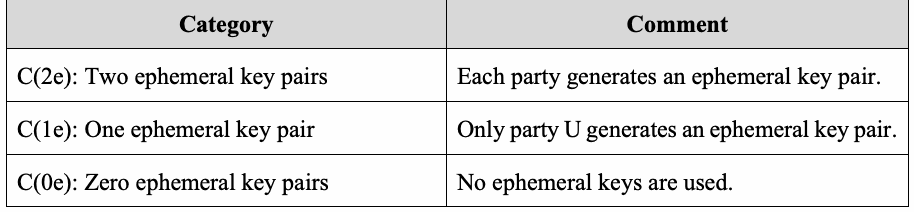
| カテゴリ | 説明 |
| C(2e)：2つの一時鍵ペア | 各当事者が一時鍵ペアを生成する。 |
| C(1e)：1つの一時鍵ペア | 当事者Uだけが一時鍵ペアを生成する。 |
| C(0e)：一時鍵ペアなし | 一時鍵を使用しない。 |
Each category is comprised of one or more subcategories that are classified by the use of static keys by the parties (see Table 7). In subcategory \(\mathrm{C}(i\mathrm{e}, j\mathrm{s})\), parties U and V have a total of \(i\) ephemeral key pairs and \(j\) static key pairs. The suitability for interactive or store-and-forward protocols of each subcategory is discussed in Section 7.
各カテゴリは、当事者による静的鍵の使用によって分類される1つ以上のサブカテゴリから構成される（表7を参照）。サブカテゴリ\(\mathrm{C}(i\mathrm{e}, j\mathrm{s})\)では、当事者UおよびVは合計\(i\)個のエフェメラル鍵ペアと\(j\)個の静的鍵ペアを持つ。各サブカテゴリが対話型プロトコルまたはストア・アンド・フォワード型プロトコルに適するかどうかは、7節で説明する。
Table 7: Key-agreement scheme subcategories.
表7：鍵合意スキームのサブカテゴリ。
| Category | Subcategory |
| C(2e): Two ephemeral key pairs | C(2e, 2s): Each party generates an ephemeral key pair and uses a static key pair. |
| C(2e, 0s): Each party generates an ephemeral key pair; no static key pairs are used. | |
| C(1e): One ephemeral key pair | C(1e, 2s): Party U generates an ephemeral key pair and uses a static key pair; party V uses only a static key pair. |
原本PDFの抜粋画像
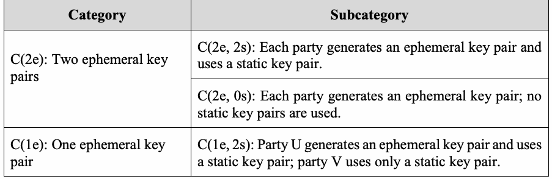
| カテゴリ | サブカテゴリ |
| C(2e)：2つのエフェメラル鍵ペア | C(2e, 2s)：各当事者がエフェメラル鍵ペアを生成し、静的鍵ペアを使用する。 |
| C(2e, 0s)：各当事者がエフェメラル鍵ペアを生成し、静的鍵ペアは使用しない。 | |
| C(1e)：1つのエフェメラル鍵ペア | C(1e, 2s)：当事者Uはエフェメラル鍵ペアを生成し静的鍵ペアを使用する。当事者Vは静的鍵ペアのみを使用する。 |
| Category | Subcategory |
| C(1e, 1s): Party U generates an ephemeral key pair, but uses no static key pair; party V uses only a static key pair. | |
| C(0e): Zero ephemeral key pairs | C(0e, 2s): Each party uses only a static key pair. |
原本PDFの抜粋画像
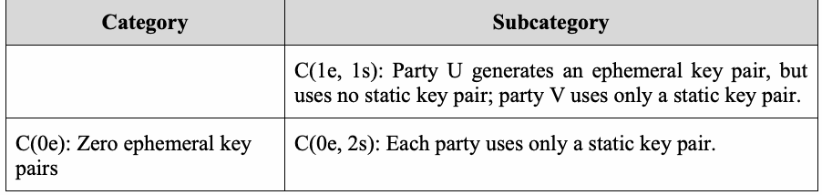
| カテゴリ | サブカテゴリ |
| C(1e, 1s)：当事者Uはエフェメラル鍵ペアを生成するが静的鍵ペアは使用せず、当事者Vは静的鍵ペアのみを使用する。 | |
| C(0e)：エフェメラル鍵ペアなし | C(0e, 2s)：各当事者は静的鍵ペアのみを使用する。 |
The schemes may be further classified by whether they use finite field cryptography (FFC) or elliptic curve cryptography (ECC). A scheme may use either Diffie-Hellman or MQV primitives (see Section 5.7). Thus, for example, notation C(2e, 2s, FFC DH) completely classifies the dhHybrid1 scheme of Section 6.1.1.1 as a scheme with two ephemeral keys and two static keys that uses finite field cryptography and a Diffie-Hellman primitive (see Table 8). The names of these schemes are taken from ANS X9.42 and ANS X9.63.
これらの方式は、有限体暗号（FFC）と楕円曲線暗号（ECC）のどちらを使用するかによって、さらに分類できる。方式は、Diffie-HellmanプリミティブとMQVプリミティブのいずれかを使用する（Section 5.7を参照）。したがって、例えばC(2e, 2s, FFC DH)という表記は、Section 6.1.1.1のdhHybrid1方式を、2つのエフェメラル鍵と2つの静的鍵を持ち、有限体暗号とDiffie-Hellmanプリミティブを使用する方式として完全に分類する（Table 8を参照）。これらの方式の名称は、ANS X9.42およびANS X9.63から採っている。
Table 8: Key-agreement schemes.
表8：鍵合意スキーム。
| Category | Subcategory | Primitive | Scheme | Notation |
| C(2e) | C(2e, 2s) | FFC DH | dhHybrid1 | C(2e, 2s, FFC DH) |
| C(2e) | C(2e, 2s) | ECC CDH | (Cofactor) Full Unified Model | C(2e, 2s, ECC CDH) |
| C(2e) | C(2e, 2s) | FFC MQV | MQV2 | C(2e, 2s, FFC MQV) |
| C(2e) | C(2e, 2s) | ECC MQV | Full MQV | C(2e, 2s, ECC MQV) |
| C(2e) | C(2e, 0s) | FFC DH | dhEphem | C(2e, 0s, FFC DH) |
| C(2e) | C(2e, 0s) | ECC CDH | (Cofactor) Ephemeral Unified Model | C(2e, 0s, ECC CDH) |
| C(1e) | C(1e, 2s) | FFC DH | dhHybridOneFlow | C(1e, 2s, FFC DH) |
| C(1e) | C(1e, 2s) | ECC CDH | (Cofactor) One-Pass Unified Model | C(1e, 2s, ECC CDH) |
| C(1e) | C(1e, 2s) | FFC MQV | MQV1 | C(1e, 2s, FFC MQV) |
| C(1e) | C(1e, 2s) | ECC MQV | One-Pass MQV | C(1e, 2s, ECC MQV) |
| C(1e) | C(1e, 1s) | FFC DH | dhOneFlow | C(1e, 1s, FFC DH) |
原本PDFの抜粋画像
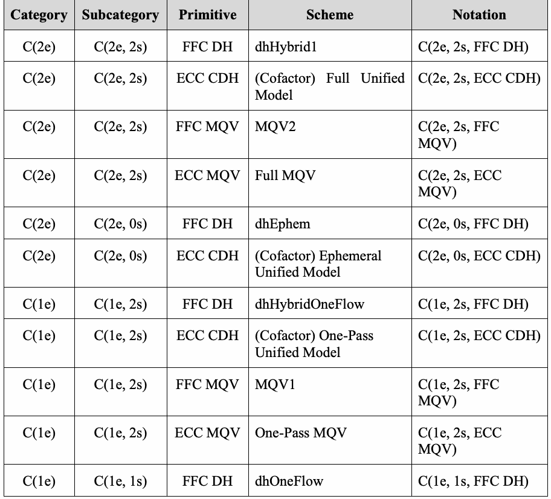
| カテゴリ | サブカテゴリ | プリミティブ | スキーム | 表記 |
| C(2e) | C(2e, 2s) | FFC DH | dhHybrid1 | C(2e, 2s, FFC DH) |
| C(2e) | C(2e, 2s) | ECC CDH | （コファクタ）Full Unified Model | C(2e, 2s, ECC CDH) |
| C(2e) | C(2e, 2s) | FFC MQV | MQV2 | C(2e, 2s, FFC MQV) |
| C(2e) | C(2e, 2s) | ECC MQV | Full MQV | C(2e, 2s, ECC MQV) |
| C(2e) | C(2e, 0s) | FFC DH | dhEphem | C(2e, 0s, FFC DH) |
| C(2e) | C(2e, 0s) | ECC CDH | （コファクタ）Ephemeral Unified Model | C(2e, 0s, ECC CDH) |
| C(1e) | C(1e, 2s) | FFC DH | dhHybridOneFlow | C(1e, 2s, FFC DH) |
| C(1e) | C(1e, 2s) | ECC CDH | （コファクタ）One-Pass Unified Model | C(1e, 2s, ECC CDH) |
| C(1e) | C(1e, 2s) | FFC MQV | MQV1 | C(1e, 2s, FFC MQV) |
| C(1e) | C(1e, 2s) | ECC MQV | One-Pass MQV | C(1e, 2s, ECC MQV) |
| C(1e) | C(1e, 1s) | FFC DH | dhOneFlow | C(1e, 1s, FFC DH) |
| Category | Subcategory | Primitive | Scheme | Notation |
| C(1e) | C(1e, 1s) | ECC CDH | (Cofactor) One-Pass Diffie-Hellman | C(1e, 1s, ECC CDH) |
| C(0e) | C(0e, 2s) | FFC DH | dhStatic | C(0e, 2s, FFC DH) |
| C(0e) | C(0e, 2s) | ECC CDH | (Cofactor) Static Unified Model | C(0e, 2s, ECC CDH) |
原本PDFの抜粋画像
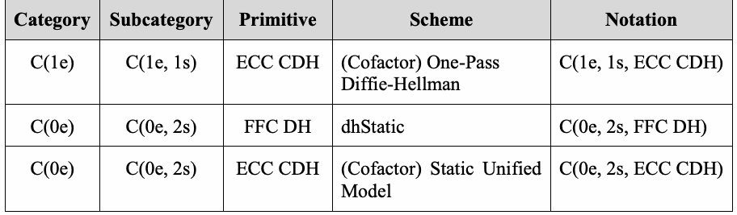
| カテゴリ | サブカテゴリ | プリミティブ | スキーム | 表記 |
| C(1e) | C(1e, 1s) | ECC CDH | （コファクタ）One-Pass Diffie-Hellman | C(1e, 1s, ECC CDH) |
| C(0e) | C(0e, 2s) | FFC DH | dhStatic | C(0e, 2s, FFC DH) |
| C(0e) | C(0e, 2s) | ECC CDH | （コファクタ）Static Unified Model | C(0e, 2s, ECC CDH) |
Each party in a key-agreement process shall use the same set of valid domain parameters. These parameters shall be established, and assurance of their validity shall be obtained prior to the generation of key pairs and the initiation of the key-agreement process. See Section
鍵共有プロセスの各当事者は、同一の有効なドメインパラメータの組を使用しなければならない。これらのパラメータは、鍵ペアの生成および鍵共有プロセスの開始に先立って確立しなければならず、その有効性の保証も、それに先立って得なければならない。Sectionを参照。
5.5 for a discussion of domain parameters.
5.5節（ドメインパラメータに関する議論）。
If party U uses a static key pair in a key-agreement transaction, then party U shall have an identifier, \(\mathit{ID}_U\), that has an association with the static key pair that is known (or discoverable) and trusted by party V (i.e., there shall be a trusted association between \(\mathit{ID}_U\) and party U’s static public key). If party U does not contribute a static public key as part of a key-agreement transaction, then \(\mathit{ID}_U\) (if required for that transaction) is a non-null identifier selected in
当事者Uが鍵共有トランザクションで静的鍵ペアを使用する場合、当事者Uは識別子\(\mathit{ID}_U\)を持たなければならない。この識別子は静的鍵ペアと関連付けられ、その関連付けは当事者Vに知られており（または発見可能であり）、当事者Vから信頼されているものとする（すなわち、\(\mathit{ID}_U\)と当事者Uの静的公開鍵との間に信頼できる関連付けがなければならない）。当事者Uが鍵共有トランザクションの一部として静的公開鍵を提供しない場合、\(\mathit{ID}_U\)（そのトランザクションで必要な場合）は、
accordance with the relying application/protocol. Similar rules apply to Party V’s identifier, \(\mathit{ID}_V\).
依拠するアプリケーション／プロトコルに従って選択された非NULLの識別子である。同様の規則が当事者Vの識別子 \(\mathit{ID}_V\) に適用される。
A general flow diagram is provided for each subcategory of schemes. The dotted-line arrows represent the distribution of static public keys that may be distributed by the parties themselves or by a third party, such as a Certification Authority (CA). The solid-line arrows represent the distribution of ephemeral public keys or nonces that occur during the key-agreement or key-confirmation process. Note that the flow diagrams in this Recommendation omit explicit mention of various validation checks that are required. The flow diagrams and descriptions in this Recommendation assume a successful completion of the key-establishment process. The error conditions are handled in the process text.
方式の各サブカテゴリについて、一般的なフロー図を示す。点線の矢印は、静的公開鍵の配布を表す。静的公開鍵は、当事者自身が配布することも、認証局（CA）などの第三者が配布することもある。実線の矢印は、鍵共有または鍵確認のプロセス中に行われるエフェメラル公開鍵またはノンスの配布を表す。なお、本勧告のフロー図では、要求されている各種の検証チェックを明示していない。本勧告のフロー図および説明は、鍵確立プロセスが正常に完了することを前提としている。エラー条件は、プロセスの説明文で扱う。
For each scheme, there are conditions that must be satisfied to enable proper use of that scheme. These conditions are listed as the assumptions. Failure to meet all such conditions could yield undesirable results, such as the inability to communicate or the loss of security. As part of the proper implementation of this Recommendation, system users and/or agents trusted to act on their behalf (including application developers, system installers, and system administrators) are responsible for ensuring that all assumptions are satisfied at the time a key-establishment transaction takes place.
各方式には、その方式を適切に使用できるようにするために満たさなければならない条件がある。これらの条件は前提条件として列挙する。これらの条件をすべて満たさないと、通信ができなくなる、セキュリティが失われるなど、望ましくない結果を招くおそれがある。本勧告を適切に実装することの一環として、システムの利用者、および／または利用者に代わって行動することを信頼された代理人（アプリケーション開発者、システムの導入担当者、システム管理者を含む）は、鍵確立トランザクションを行う時点ですべての前提条件が満たされているようにする責任を負う。
6.1 Schemes Using Two Ephemeral Key Pairs, C(2e)
6.1 2つのエフェメラル鍵ペアを使用するスキーム C(2e)
In this category, each party generates an ephemeral key pair and sends the ephemeral public key to the other party. This category consists of two subcategories that are determined by the static keys used by the parties. In the first subcategory, each party contributes both static and ephemeral keys to the key-agreement computations (see Section 6.1.1), while in the second subcategory, each party contributes only ephemeral keys (see Section 6.1.2).
このカテゴリでは、各当事者がエフェメラル鍵ペアを生成し、そのエフェメラル公開鍵を相手方に送信する。このカテゴリは、当事者が使用する静的鍵によって決まる2つのサブカテゴリから成る。最初のサブカテゴリでは、各当事者が静的鍵とエフェメラル鍵の両方を鍵共有計算に提供する（Section 6.1.1参照）。2番目では、各当事者がエフェメラル鍵のみを提供する（Section 6.1.2参照）。
6.1.1 C(2e, 2s) Schemes
6.1.1 C(2e, 2s)スキーム
未レビュー訳Figure_3 depicts a typical flow for a C(2e, 2s) scheme. For these schemes, each party (U and V) contributes a static key pair and generates an ephemeral key pair during the key-agreement process. All key pairs shall be generated using the same domain parameters. Party U and party V obtain each other’s static public keys, which have been generated prior to the key-establishment process. Both parties generate ephemeral private/public key pairs and exchange the ephemeral public keys. Using the static and ephemeral keys, both parties generate a shared secret. The secret keying material is derived from the shared secret.
図3は、C(2e, 2s)スキームの典型的なフローを示す。これらのスキームでは、各当事者（UおよびV）が静的鍵ペアを提供し、鍵共有プロセス中にエフェメラル鍵ペアを生成する。すべての鍵ペアは同じドメインパラメータを用いて生成しなければならない。当事者UとVは、鍵確立プロセスより前に生成された互いの静的公開鍵を取得する。両当事者はエフェメラル秘密鍵／公開鍵ペアを生成し、エフェメラル公開鍵を交換する。静的鍵とエフェメラル鍵を用いて、両当事者は共有秘密を生成する。共有秘密から秘密鍵素材を導出する。
未レビュー訳U
未レビュー訳V
未レビュー訳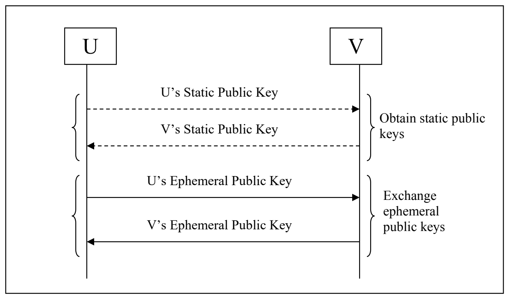
Figure 3: C(2e, 2s) schemes: each party contributes a static and an ephemeral key
図3：C(2e, 2s)スキーム：各当事者が静的鍵ペアとエフェメラル鍵
未レビュー訳pair
ペアを提供する
未レビュー訳Assumptions: In order to execute a C(2e, 2s) key-establishment scheme in compliance with this Recommendation, the following assumptions shall be true.
前提条件：本勧告に準拠してC(2e, 2s)鍵確立方式を実行するためには、以下の前提条件が成り立っていなければならない。
1. Each party has an authentic copy of the same set of domain parameters, \(D\), that are approved for use (see Section 5.5.1). For FFC schemes, \(D = (p, q, g\{, \mathit{SEED}, \mathit{counter}\})\); for ECC schemes, \(D = (q, \mathit{FR}, a, b\{, \mathit{SEED}\}, G, n, h)\). Furthermore, each party has obtained assurance of the validity of these domain parameters as specified in Section 5.5.2.
1. 各当事者は、使用が承認された同一のドメインパラメータの組\(D\)の真正なコピーを持っている（Section 5.5.1を参照）。FFC方式では\(D = (p, q, g\{, \mathit{SEED}, \mathit{counter}\})\)であり、ECC方式では\(D = (q, \mathit{FR}, a, b\{, \mathit{SEED}\}, G, n, h)\)である。さらに、各当事者は、Section 5.5.2の規定に従って、これらのドメインパラメータの有効性の保証を得ている。
2. Each party has been designated as the owner of a static key pair that was generated as specified in Section 5.6.1 using the set of domain parameters, \(D\). For FFC schemes, the static key pair is \((x, y)\); for ECC schemes, the static key pair is \((d_s, Q_s)\). Each party has obtained assurance of the validity of its own static public key as specified in Section 5.6.2.1.3 and has obtained assurance of its possession of the correct value for its own private key as specified in Section 5.6.2.1.5.
2. 各当事者は、ドメインパラメータ集合 \(D\) を用いてSection 5.6.1に従い生成された静的鍵ペアの所有者として指定されている。FFCスキームでは静的鍵ペアは \((x, y)\)、ECCスキームでは \((d_s, Q_s)\) である。各当事者はSection 5.6.2.1.3に従って自身の静的公開鍵の有効性保証を取得し、Section 5.6.2.1.5に従って自身の秘密鍵の正しい値を保有している保証を得ている。
3.The parties have agreed upon an approved key-derivation method, as well as an approved algorithm to be used with that method (e.g., a hash function) and other associated parameters to be used for key derivation (see Section 5.8).
3.当事者は、承認済みの鍵導出方式、およびその方式で使用する承認済みアルゴリズム（例：ハッシュ関数）と鍵導出に用いるその他の関連パラメータについて合意している（Section 5.8参照）。
未レビュー訳4. If key confirmation is used, the parties have also agreed upon an approved MAC and associated parameters, including the lengths of \(\mathit{MacKey}\) and \(\mathit{MacTag}\), as specified in Section 5.9.3).
4. 鍵確認を使用する場合、当事者はSection 5.9.3に規定されたとおり、\(\mathit{MacKey}\) および \(\mathit{MacTag}\) の長さを含め、承認済みMACと関連パラメータについても合意している。
5.Prior to or during the key-agreement process, each party receives the other party’s static public key in a trusted manner (e.g., from a certificate signed by a trusted CA or directly from the other party, who is trusted by the recipient). Each party has obtained assurance of the validity of the other party’s static public key as specified in Section 5.6.2.2.
5.鍵共有プロセスの前または実行中に、各当事者は信頼できる方法（例：信頼されたCAが署名した証明書、または受信者が信頼する相手方から直接受け取る方法）で相手方の静的公開鍵を受信する。各当事者はSection 5.6.2.2に従って相手方の静的公開鍵の有効性保証を得ている。
6.The recipient of a static public key has obtained assurance that its (claimed) owner is (or was) in possession of the corresponding static private key, as specified in Section 5.6.2.2.3.
6.静的公開鍵の受信者は、（主張された）所有者が対応する静的秘密鍵を保有している（または保有していた）という保証を、Section 5.6.2.2.3に従って得ている。
7.7. When an identifier is used to label a party during the key-agreement process, that identifier has a trusted association to that party’s static public key. (In other words, whenever both the identifier and static public key of one participant are employed in the key-agreement process, they are associated in a manner that is trusted by the other participant.) When an identifier is used to label a party during the key-agreement process, both parties are aware of the identifier employed for that purpose.
7.7. 鍵共有プロセス中に当事者を示すラベルとして識別子を使用する場合、その識別子は、その当事者の静的公開鍵と信頼できる形で関連付けられている。（言い換えると、鍵共有プロセスで一方の参加者の識別子と静的公開鍵の両方を用いるときは常に、それらは他方の参加者が信頼する方法で関連付けられている。）鍵共有プロセス中に当事者を示すラベルとして識別子を使用する場合、両当事者は、その目的で用いられる識別子を知っている。
6.1.1.1 dhHybrid1, C(2e, 2s, FFC DH) Scheme
6.1.1.1 dhHybrid1、C(2e, 2s, FFC DH)スキーム
This section describes the dhHybrid1 scheme. Assurance of secure key establishment using this scheme can only be obtained when the assumptions in Section 6.1.1 are true. In particular, it is assumed that party U has obtained the static public key \(y_V\) of party V, and party V has obtained the static public key \(y_U\) of party U.
この節ではdhHybrid1方式を説明する。この方式を用いた安全な鍵確立の保証は、Section 6.1.1の前提が成り立つ場合にのみ得られる。特に、当事者Uは当事者Vの静的公開鍵\(y_V\)を取得しており、当事者Vは当事者Uの静的公開鍵\(y_U\)を取得していると仮定する。
With the exception of key derivation, the dhHybrid1 scheme is “symmetric” in the actions of parties U and V. Only the actions performed by party U are specified here; a specification of the actions performed by party V may be obtained by systematically replacing the letter “U” by “V” (and vice versa) in the actions listed below. Note, however, that parties U and V must use identical orderings of the bit strings that are input to the key-derivation method.
鍵導出を除き、dhHybrid1方式は当事者UとVの動作に関して「対称」である。ここでは当事者Uが実行する動作のみを規定する。当事者Vが実行する動作の規定は、以下に列挙する動作の中の文字「U」を「V」に（およびその逆に）一貫して置き換えることで得られる。ただし、当事者UとVは、鍵導出方式に入力するビット列の順序を同一にしなければならないことに注意する。
Party U shall execute the following actions to a) establish a shared secret value \(Z\) with party V, and b) derive secret keying material from \(Z\).
当事者Uは、a) 当事者Vとの共有秘密値 \(Z\) を確立し、b) \(Z\) から秘密鍵素材を導出するため、以下の動作を実行しなければならない。
Actions: Party U generates a shared secret and derives secret keying material as follows:
動作：当事者Uは、次のように共有秘密を生成し、秘密鍵素材を導出する。
1. Generate an ephemeral key pair \((r_U, t_U)\) from the domain parameters \(D\) as specified in Section 5.6.1.1. Send the public key \(t_U\) to party V. Receive an ephemeral public key \(t_V\) (purportedly) from party V. If \(t_V\) is not received, destroy the ephemeral private key \(r_U\), then output an error indicator, and exit this process without performing the remaining actions.
1. エフェメラル鍵ペア \((r_U, t_U)\) を、ドメインパラメータ \(D\) からSection 5.6.1.1に従って生成する。公開鍵 \(t_U\) を当事者Vに送信する。当事者Vからエフェメラル公開鍵 \(t_V\)（とされるもの）を受信する。\(t_V\) を受信しなかった場合、エフェメラル秘密鍵 \(r_U\) を破棄し、エラー標識を出力して、残りの動作を実行せずにこのプロセスを終了する。
2. Verify that \(t_V\) is a valid ephemeral public key for the parameters \(D\) as specified in Section 5.6.2.3. If assurance of public key validity cannot be obtained, destroy the ephemeral private key \(r_U\); then, output an error indicator, and exit this process without performing the remaining actions.
2. \(t_V\) がパラメータ \(D\) に対する有効なエフェメラル公開鍵であることを、Section 5.6.2.3に従って検証する。公開鍵の有効性の保証を得られない場合、エフェメラル秘密鍵 \(r_U\) を破棄し、続いてエラー標識を出力して、残りの動作を実行せずにこのプロセスを終了する。
3. Use the FFC DH primitive in Section 5.7.1.1 to derive a shared secret \(Z_s\) from the set of domain parameters \(D\), party U’s static private key \(x_U\), and party V’s static public key \(y_V\). If the call to the FFC DH primitive outputs an error indicator, destroy the ephemeral private key \(r_U\), and destroy the results of all intermediate calculations used in the attempted computation of \(Z_s\); then output an error indicator, and exit this process without performing the remaining actions.
3. Section 5.7.1.1のFFC DHプリミティブを用いて、共有秘密 \(Z_s\) を、ドメインパラメータの集合 \(D\)、当事者Uの静的秘密鍵 \(x_U\)、および当事者Vの静的公開鍵 \(y_V\) から導出する。FFC DHプリミティブの呼び出しがエラー標識を出力した場合、エフェメラル秘密鍵 \(r_U\) を破棄し、\(Z_s\) の計算の試行で使用したすべての中間計算結果を破棄する。続いてエラー標識を出力して、残りの動作を実行せずにこのプロセスを終了する。
4. Use the FFC DH primitive to derive a shared secret \(Z_e\) from the set of domain parameters \(D\), party U’s ephemeral private key \(r_U\), and party V’s ephemeral public key \(t_V\). If this call to the FFC DH primitive outputs an error indicator, destroy \(Z_s\) and the ephemeral private key \(r_U\), and destroy the results of all intermediate calculations used in the attempted computation of \(Z_e\); then, output an error indicator, and exit this process without performing the remaining actions.
4. FFC DHプリミティブを用いて、共有秘密 \(Z_e\) を、ドメインパラメータの集合 \(D\)、当事者Uのエフェメラル秘密鍵 \(r_U\)、および当事者Vのエフェメラル公開鍵 \(t_V\) から導出する。FFC DHプリミティブのこの呼び出しがエラー標識を出力した場合、\(Z_s\) とエフェメラル秘密鍵 \(r_U\) を破棄し、\(Z_e\) の計算の試行で使用したすべての中間計算結果を破棄する。続いてエラー標識を出力して、残りの動作を実行せずにこのプロセスを終了する。
5. Compute the shared secret \(Z = Z_e \parallel Z_s\). Destroy \(Z_e\) and \(Z_s\).
5. 共有秘密 \(Z = Z_e \parallel Z_s\) を計算する。\(Z_e\) および \(Z_s\) を破棄する。
6. Use the agreed-upon key-derivation method to derive secret keying material with the specified length from the shared secret value \(Z\) and other input (see Section 5.8). If the key-derivation method outputs an error indicator, destroy all copies of \(Z\) and the ephemeral private key \(r_U\), then output an error indicator, and exit this process without performing the remaining actions.
6. 合意済みの鍵導出方式を用いて、指定された長さの秘密鍵素材を共有秘密値 \(Z\) およびその他の入力から導出する（Section 5.8参照）。鍵導出方式がエラー標識を出力した場合、\(Z\) のすべての複製とエフェメラル秘密鍵 \(r_U\) を破棄し、エラー標識を出力して、残りの動作を実行せずにこのプロセスを終了する。
7. Destroy \(r_U\) and all copies of the shared secret \(Z\).
7. \(r_U\) および共有秘密 \(Z\) のすべての複製を破棄する。
8.Output the derived keying material.
8.導出した鍵素材を出力する。
未レビュー訳Output: The derived keying material or an error indicator.
出力：導出された鍵素材またはエラー標識。
未レビュー訳Note: Key confirmation can be incorporated into this scheme. See Section 6.1.1.5 for details.
注：このスキームには鍵確認を組み込むことができる。詳細はSection 6.1.1.5を参照。
未レビュー訳dhHybrid1 is summarized in Table 9.
dhHybrid1を表9に要約する。
未レビュー訳Table 9: dhHybrid1 key-agreement scheme summary
表9：dhHybrid1鍵共有スキームの要約
未レビュー訳| Party U | Party V | |
| Domain | \(D = (p, q, g\{, \mathit{SEED}, \mathit{counter}\})\) | \(D = (p, q, g\{, \mathit{SEED}, \mathit{counter}\})\) |
| parameters | ||
| Static Data | Static private key \(x_U\) Static public key \(y_U\) | Static private key \(x_V\) Static public key \(y_V\) |
| Ephemeral Data | Ephemeral private key \(r_U\) Ephemeral public key \(t_U\) | Ephemeral private key \(r_V\) Ephemeral public key \(t_V\) |
| Computation | 1. Compute \(Z_s\) by calling FFC DH using \(x_U\) and \(y_V\) 2. Compute \(Z_e\) by calling FFC DH using \(r_U\) and \(t_V\) 3. Compute \(Z = Z_e \parallel Z_s\) | 1. Compute \(Z_s\) by calling FFC DH using \(x_V\) and \(y_U\) 2. Compute \(Z_e\) by calling FFC DH using \(r_V\) and \(t_U\) 3. Compute \(Z = Z_e \parallel Z_s\) |
| 当事者U | 当事者V | |
| ドメイン | \(D = (p, q, g\{, \mathit{SEED}, \mathit{counter}\})\) | \(D = (p, q, g\{, \mathit{SEED}, \mathit{counter}\})\) |
| パラメータ | ||
| 静的データ | 静的秘密鍵 \(x_U\) 静的公開鍵 \(y_U\) | 静的秘密鍵 \(x_V\) 静的公開鍵 \(y_V\) |
| エフェメラルデータ | エフェメラル秘密鍵 \(r_U\) エフェメラル公開鍵 \(t_U\) | エフェメラル秘密鍵 \(r_V\) エフェメラル公開鍵 \(t_V\) |
| 計算 | 1. \(Z_s\) を、\(x_U\) と \(y_V\) を用いてFFC DHを呼び出して計算する 2. \(Z_e\) を、\(r_U\) と \(t_V\) を用いてFFC DHを呼び出して計算する 3. \(Z = Z_e \parallel Z_s\) を計算する | 1. \(Z_s\) を、\(x_V\) と \(y_U\) を用いてFFC DHを呼び出して計算する 2. \(Z_e\) を、\(r_V\) と \(t_U\) を用いてFFC DHを呼び出して計算する 3. \(Z = Z_e \parallel Z_s\) を計算する |
| Derive Secret Keying Material | 1. Compute \(\mathit{DerivedKeyingMaterial}\) 2. Destroy \(Z\) | 1. Compute \(\mathit{DerivedKeyingMaterial}\) 2. Destroy \(Z\) |
| 秘密鍵素材の導出 | 1. \(\mathit{DerivedKeyingMaterial}\) を計算する 2. \(Z\) を破棄する | 1. \(\mathit{DerivedKeyingMaterial}\) を計算する 2. \(Z\) を破棄する |
6.1.1.2 (Cofactor) Full Unified Model, C(2e, 2s, ECC CDH) Scheme
6.1.1.2（コファクタ）Full Unified Model、C(2e, 2s, ECC CDH)スキーム
未レビュー訳This section describes the Full Unified Model scheme. Assurance of secure key establishment using this scheme can only be obtained when the assumptions in Section 6.1.1 are true. In particular, it is assumed that party U has obtained the static public key \(Q_{s,V}\) of party V, and party V has obtained the static public key \(Q_{s,U}\) of party U.
この節ではFull Unified Modelスキームを説明する。このスキームを用いた安全な鍵確立の保証が得られるのは、Section 6.1.1の前提が成り立つ場合に限られる。特に、当事者Uは当事者Vの静的公開鍵 \(Q_{s,V}\) を取得しており、当事者Vは当事者Uの静的公開鍵 \(Q_{s,U}\) を取得していると仮定する。
With the exception of key derivation, the Full Unified Model scheme is “symmetric” in the actions of parties U and V. Only the actions performed by party U are specified here; a specification of the actions performed by party V may be obtained by systematically replacing the letter “U” by “V” (and vice versa) in the actions listed below. Note, however, that parties U and V must use identical orderings of the bit strings that are input to the key-derivation method.
鍵導出を除き、Full Unified Model方式は当事者UとVの動作に関して「対称」である。ここでは当事者Uが実行する動作のみを規定する。当事者Vが実行する動作の規定は、以下に列挙する動作の中の文字「U」を「V」に（およびその逆に）一貫して置き換えることで得られる。ただし、当事者UとVは、鍵導出方式に入力するビット列の順序を同一にしなければならないことに注意する。
Party U shall execute the following actions to a) establish a shared secret value \(Z\) with party V, and b) derive secret keying material from \(Z\).
当事者Uは、a) 当事者Vとの共有秘密値\(Z\)を確立し、b) \(Z\)から秘密鍵素材を導出するため、以下の動作を実行しなければならない。
Actions: Party U generates a shared secret and derives secret keying material as follows:
動作：当事者Uは、次のように共有秘密を生成し、秘密鍵素材を導出する。
未レビュー訳1. Generate an ephemeral key pair \((d_{e,U}, Q_{e,U})\) from the domain parameters \(D\) as specified in Section 5.6.1.2. Send the public key \(Q_{e,U}\) to party V. Receive an ephemeral public key \(Q_{e,V}\) (purportedly) from party V. If \(Q_{e,V}\) is not received, destroy the ephemeral private key \(d_{e,U}\); then output an error indicator, and exit this process without performing the remaining actions.
1. エフェメラル鍵ペア\((d_{e,U}, Q_{e,U})\)を、ドメインパラメータ\(D\)からSection 5.6.1.2の規定に従って生成する。公開鍵\(Q_{e,U}\)を当事者Vに送信する。当事者Vから（とされる）エフェメラル公開鍵\(Q_{e,V}\)を受信する。\(Q_{e,V}\)を受信しなかった場合、エフェメラル秘密鍵\(d_{e,U}\)を破棄する。続いてエラー標識を出力し、残りの動作を実行せずにこのプロセスを終了する。
2. Verify that \(Q_{e,V}\) is a valid ephemeral public key for the parameters \(D\) as specified in Section 5.6.2.3. If assurance of public key validity cannot be obtained, destroy the ephemeral private key \(d_{e,U}\), then output an error indicator, and exit this process without performing the remaining actions.
2. Section 5.6.2.3の規定に従って、\(Q_{e,V}\)がパラメータ\(D\)に対する有効なエフェメラル公開鍵であることを検証する。公開鍵の有効性の保証を得られない場合、エフェメラル秘密鍵\(d_{e,U}\)を破棄し、続いてエラー標識を出力し、残りの動作を実行せずにこのプロセスを終了する。
3. Use the ECC CDH primitive in Section 5.7.1.2 to derive a shared secret \(Z_s\) from the set of domain parameters \(D\), party U’s static private key \(d_{s,U}\), and party V’s static public key \(Q_{s,V}\). If the call to the ECC CDH primitive outputs an error indicator, destroy the ephemeral private key \(d_{e,U}\), and destroy the results of all intermediate calculations used in the attempted computation of \(Z_s\); then output an error indicator, and exit this process without performing the remaining actions.
3. Section 5.7.1.2のECC CDHプリミティブを用いて、共有秘密\(Z_s\)を、ドメインパラメータ集合\(D\)、当事者Uの静的秘密鍵\(d_{s,U}\)、および当事者Vの静的公開鍵\(Q_{s,V}\)から導出する。ECC CDHプリミティブの呼び出しがエラー標識を出力した場合、エフェメラル秘密鍵\(d_{e,U}\)を破棄し、\(Z_s\)の計算試行に使用したすべての中間計算の結果を破棄する。続いてエラー標識を出力し、残りの動作を実行せずにこのプロセスを終了する。
4. Use the ECC CDH primitive to derive a shared secret \(Z_e\) from the set of domain parameters \(D\), party U’s ephemeral private key \(d_{e,U}\), and party V’s ephemeral public key \(Q_{e,V}\). If this call to the ECC CDH primitive outputs an error indicator, destroy \(Z_s\) and the ephemeral private key \(d_{e,U}\), and destroy the results of all intermediate calculations used in the attempted computation of \(Z_e\); then output an error indicator, and exit this process without performing the remaining actions.
4. ECC CDHプリミティブを用いて、共有秘密\(Z_e\)を、ドメインパラメータ集合\(D\)、当事者Uのエフェメラル秘密鍵\(d_{e,U}\)、および当事者Vのエフェメラル公開鍵\(Q_{e,V}\)から導出する。このECC CDHプリミティブの呼び出しがエラー標識を出力した場合、\(Z_s\)とエフェメラル秘密鍵\(d_{e,U}\)を破棄し、\(Z_e\)の計算試行に使用したすべての中間計算の結果を破棄する。続いてエラー標識を出力し、残りの動作を実行せずにこのプロセスを終了する。
5. Compute the shared secret \(Z = Z_e \parallel Z_s\). Destroy \(Z_e\) and \(Z_s\).
5. 共有秘密\(Z = Z_e \parallel Z_s\)を計算する。\(Z_e\)および\(Z_s\)を破棄する。
6. Use the agreed-upon key-derivation method to derive secret keying material with the specified length from the shared secret value \(Z\) and other input (see Section 5.8). If the key-derivation method outputs an error indicator, destroy all copies of \(Z\) and the ephemeral private key \(d_{e,U}\); then output an error indicator, and exit this process without performing the remaining actions.
6. 合意済みの鍵導出方式を用いて、共有秘密値\(Z\)およびその他の入力から、指定された長さの秘密鍵素材を導出する（Section 5.8参照）。鍵導出方式がエラー標識を出力した場合、\(Z\)のすべての複製とエフェメラル秘密鍵\(d_{e,U}\)を破棄する。続いてエラー標識を出力し、残りの動作を実行せずにこのプロセスを終了する。
7. Destroy \(d_{e,U}\) and all copies of the shared secret \(Z\).
7. \(d_{e,U}\)および共有秘密\(Z\)のすべての複製を破棄する。
8.Output the derived keying material.
8.導出した鍵素材を出力する。
Output: The derived keying material or an error indicator. Note: Key confirmation can be incorporated into this scheme. See Section 6.1.1.5 for details. The Full Unified Model is summarized in Table 10.
出力：導出された鍵素材またはエラー標識。注：このスキームには鍵確認を組み込むことができる。詳細はSection 6.1.1.5を参照。Full Unified Modelを表10に要約する。
Table 10: Full unified model key-agreement scheme summary
表10：Full Unified Model鍵共有スキームの要約
未レビュー訳| Party U | Party V | |
| Domain | \(D = (q, \mathit{FR}, a, b\{, \mathit{SEED}\}, G, n, h)\) | \(D = (q, \mathit{FR}, a, b\{, \mathit{SEED}\}, G, n, h)\) |
| parameters | ||
| Static data | Static private key \(d_{s,U}\) Static public key \(Q_{s,U}\) | Static private key \(d_{s,V}\) Static public key \(Q_{s,V}\) |
| Ephemeral data | Ephemeral private key \(d_{e,U}\) Ephemeral public key \(Q_{e,U}\) | Ephemeral private key \(d_{e,V}\) Ephemeral public key \(Q_{e,V}\) |
| Computation | 1. Compute \(Z_s\) by calling ECC CDH using \(d_{s,U}\) and \(Q_{s,V}\) 2. Compute \(Z_e\) by calling ECC CDH using \(d_{e,U}\) and \(Q_{e,V}\) 3. Compute \(Z = Z_e \parallel Z_s\) | 1. Compute \(Z_s\) by calling ECC CDH using \(d_{s,V}\) and \(Q_{s,U}\) 2. Compute \(Z_e\) by calling ECC CDH using \(d_{e,V}\) and \(Q_{e,U}\) 3. Compute \(Z = Z_e \parallel Z_s\) |
| Derive secret keying material | 1. Compute \(\mathit{DerivedKeyingMaterial}\) 2. Destroy \(Z\) | 1. Compute \(\mathit{DerivedKeyingMaterial}\) 2. Destroy \(Z\) |
| 当事者U | 当事者V | |
| ドメイン | \(D = (q, \mathit{FR}, a, b\{, \mathit{SEED}\}, G, n, h)\) | \(D = (q, \mathit{FR}, a, b\{, \mathit{SEED}\}, G, n, h)\) |
| パラメータ | ||
| 静的データ | 静的秘密鍵 \(d_{s,U}\) 静的公開鍵 \(Q_{s,U}\) | 静的秘密鍵 \(d_{s,V}\) 静的公開鍵 \(Q_{s,V}\) |
| エフェメラルデータ | エフェメラル秘密鍵 \(d_{e,U}\) エフェメラル公開鍵 \(Q_{e,U}\) | エフェメラル秘密鍵 \(d_{e,V}\) エフェメラル公開鍵 \(Q_{e,V}\) |
| 計算 | 1. \(Z_s\)を、\(d_{s,U}\)と\(Q_{s,V}\)を用いてECC CDHを呼び出して計算する 2. \(Z_e\)を、\(d_{e,U}\)と\(Q_{e,V}\)を用いてECC CDHを呼び出して計算する 3. \(Z = Z_e \parallel Z_s\)を計算する | 1. \(Z_s\)を、\(d_{s,V}\)と\(Q_{s,U}\)を用いてECC CDHを呼び出して計算する 2. \(Z_e\)を、\(d_{e,V}\)と\(Q_{e,U}\)を用いてECC CDHを呼び出して計算する 3. \(Z = Z_e \parallel Z_s\)を計算する |
| 秘密鍵素材の導出 | 1. \(\mathit{DerivedKeyingMaterial}\)を計算する 2. \(Z\)を破棄する | 1. \(\mathit{DerivedKeyingMaterial}\)を計算する 2. \(Z\)を破棄する |
6.1.1.3 MQV2, \(\mathrm{C(2e, 2s, FFC\ MQV)}\) Scheme
6.1.1.3 MQV2、\(\mathrm{C(2e, 2s, FFC\ MQV)}\)スキーム
This section describes the MQV2 scheme. Assurance of secure key establishment using this scheme can only be obtained when the assumptions in Section 6.1.1 are true. In particular, it is assumed that party U has obtained the static public key \(y_V\) of party V, and party V has obtained the static public key \(y_U\) of party U.
この節ではMQV2スキームを説明する。このスキームを用いた安全な鍵確立の保証が得られるのは、Section 6.1.1の前提条件が満たされる場合に限られる。特に、当事者Uは当事者Vの静的公開鍵\(y_V\)を取得しており、当事者Vは当事者Uの静的公開鍵\(y_U\)を取得していると仮定する。
With the exception of key derivation, MQV2 is “symmetric” in the actions of parties U and V. Only the actions performed by party U are specified here; a specification of the actions performed by party V may be obtained by systematically replacing the letter “U” by “V” (and vice versa) in the actions listed below. Note, however, that parties U and V must use identical orderings of the bit strings that are input to the key-derivation method. Party U shall execute the following actions to a) establish a shared secret value Z with party V, and b) derive secret keying material from Z. Actions: Party U generates a shared secret and derives secret keying material as follows:
鍵導出を除き、MQV2の当事者UとVの動作は「対称」である。ここでは当事者Uの動作のみを規定する。当事者Vの動作は、以下に列挙する動作の文字「U」を「V」に（およびその逆に）体系的に置き換えることで得られる。ただし、当事者UとVは鍵導出方式へのビット列入力の順序を同一にしなければならない。当事者Uは、a) 当事者Vとの共有秘密値Zを確立し、b) Zから秘密鍵素材を導出するため、以下の動作を実行しなければならない。動作：当事者Uは次のように共有秘密を生成し、秘密鍵素材を導出する。
未レビュー訳1. Generate an ephemeral key pair \((r_U, t_U)\) from the domain parameters \(D\) as specified in Section 5.6.1.1. Send the public key \(t_U\) to party V. Receive an ephemeral public key \(t_V\) (purportedly) from party V. If \(t_V\) is not received, destroy the ephemeral private key \(r_U\); then output an error indicator, and exit this process without performing the remaining actions.
1. エフェメラル鍵ペア\((r_U, t_U)\)を、ドメインパラメータ\(D\)からSection 5.6.1.1に従って生成する。公開鍵\(t_U\)を当事者Vに送信する。当事者Vからエフェメラル公開鍵\(t_V\)（とされるもの）を受信する。\(t_V\)を受信しなかった場合、エフェメラル秘密鍵\(r_U\)を破棄し、エラー標識を出力して、残りの動作を実行せずにこのプロセスを終了する。
2. Verify that \(t_V\) is a valid ephemeral public key for the parameters \(D\) as specified in Section 5.6.2.3. If assurance of public key validity cannot be obtained, destroy the ephemeral private key \(r_U\); then output an error indicator, and exit this process without performing the remaining actions.
2. Section 5.6.2.3に従って、\(t_V\)がパラメータ\(D\)に対する有効なエフェメラル公開鍵であることを検証する。公開鍵の有効性の保証を得られない場合、エフェメラル秘密鍵\(r_U\)を破棄し、エラー標識を出力して、残りの動作を実行せずにこのプロセスを終了する。
3. Use the MQV2 form of the FFC MQV primitive in Section 5.7.2.1 to derive a shared secret \(Z\) from the set of domain parameters \(D\), party U’s static private key \(x_U\), party V’s static public key \(y_V\), party U’s ephemeral private key \(r_U\), party U’s ephemeral public key \(t_U\), and party V’s ephemeral public key \(t_V\). If the call to the FFC MQV primitive outputs an error indicator, destroy the ephemeral private key \(r_U\), and destroy the results of all intermediate calculations used in the attempted computation of \(Z\); then output an error indicator, and exit this process without performing the remaining actions.
3. Section 5.7.2.1のFFC MQVプリミティブのMQV2形式を用いて、共有秘密\(Z\)を、ドメインパラメータ集合\(D\)、当事者Uの静的秘密鍵\(x_U\)、当事者Vの静的公開鍵\(y_V\)、当事者Uのエフェメラル秘密鍵\(r_U\)、当事者Uのエフェメラル公開鍵\(t_U\)、および当事者Vのエフェメラル公開鍵\(t_V\)から導出する。FFC MQVプリミティブの呼び出しがエラー標識を出力した場合、エフェメラル秘密鍵\(r_U\)を破棄し、\(Z\)の計算試行に用いたすべての中間計算結果も破棄する。その後、エラー標識を出力して、残りの動作を実行せずにこのプロセスを終了する。
actions.
終了する。
未レビュー訳4. Use the agreed-upon key-derivation method to derive secret keying material with the specified length from the shared secret value \(Z\) and other input (see Section 5.8). If the key-derivation method outputs an error indicator, destroy all copies of \(Z\) and the ephemeral private key \(r_U\); then output an error indicator, and exit this process without performing the remaining actions.
4. 合意済みの鍵導出方式を用いて、共有秘密値\(Z\)およびその他の入力から、指定された長さの秘密鍵素材を導出する（Section 5.8参照）。鍵導出方式がエラー標識を出力した場合、\(Z\)のすべての複製とエフェメラル秘密鍵\(r_U\)を破棄し、エラー標識を出力して、残りの動作を実行せずにこのプロセスを終了する。
5. Destroy \(r_U\) and all copies of the shared secret \(Z\).
5. \(r_U\)および共有秘密\(Z\)のすべての複製を破棄する。
6.Output the derived keying material.
6.導出した鍵素材を出力する。
未レビュー訳Output: The derived keying material or an error indicator.
出力：導出された鍵素材またはエラー標識。
未レビュー訳Note: Key confirmation can be incorporated into this scheme. See Section 6.1.1.5 for details.
注：このスキームには鍵確認を組み込むことができる。詳細はSection 6.1.1.5を参照。
未レビュー訳MQV2 is summarized in Table 11.
MQV2を表11に要約する。
未レビュー訳Table 11: MQV2 key-agreement scheme summary
表11：MQV2鍵共有スキームの要約
未レビュー訳| Party U | Party V | |
| Domain | \(D = (p, q, g\{, \mathit{SEED}, \mathit{counter}\})\) | \(D = (p, q, g\{, \mathit{SEED}, \mathit{counter}\})\) |
| parameters |
| 当事者U | 当事者V | |
| ドメイン | \(D = (p, q, g\{, \mathit{SEED}, \mathit{counter}\})\) | \(D = (p, q, g\{, \mathit{SEED}, \mathit{counter}\})\) |
| パラメータ |
| Static data | Static private key \(x_U\) Static public key \(y_U\) | Static private key \(x_V\) Static public key \(y_V\) |
| Ephemeral | Ephemeral private key \(r_U\) Ephemeral public key \(t_U\) | Ephemeral private key \(r_V\) Ephemeral public key \(t_V\) |
| data | ||
| Computation | Compute \(Z\) by calling FFC MQV using \(x_U\), \(y_V\), \(r_U\), \(t_U\), and \(t_V\) | Compute \(Z\) by calling FFC MQV using \(x_V\), \(y_U\), \(r_V\), \(t_V\), and \(t_U\) |
| Derive secret | 1. Compute \(\mathit{DerivedKeyingMaterial}\) 2. Destroy \(Z\) | 1. Compute \(\mathit{DerivedKeyingMaterial}\) 2. Destroy \(Z\) |
| keying | ||
| material |
| 静的データ | 静的秘密鍵 \(x_U\) 静的公開鍵 \(y_U\) | 静的秘密鍵 \(x_V\) 静的公開鍵 \(y_V\) |
| エフェメラル | エフェメラル秘密鍵 \(r_U\) エフェメラル公開鍵 \(t_U\) | エフェメラル秘密鍵 \(r_V\) エフェメラル公開鍵 \(t_V\) |
| データ | ||
| 計算 | FFC MQVを呼び出して\(Z\)を計算する。使用する値は \(x_U\)、\(y_V\)、\(r_U\)、\(t_U\)、および \(t_V\) | FFC MQVを呼び出して\(Z\)を計算する。使用する値は \(x_V\)、\(y_U\)、\(r_V\)、\(t_V\)、および \(t_U\) |
| 秘密 | 1. \(\mathit{DerivedKeyingMaterial}\) を計算する 2. \(Z\) を破棄する | 1. \(\mathit{DerivedKeyingMaterial}\) を計算する 2. \(Z\) を破棄する |
| 鍵 | ||
| 素材の導出 |
6.1.1.4 Full MQV, C(2e, 2s, ECC MQV) Scheme
6.1.1.4 Full MQV、C(2e, 2s, ECC MQV)スキーム
This section describes the Full MQV scheme. Assurance of secure key establishment using this scheme can only be obtained when the assumptions in Section 6.1.1 are true. In particular, it is assumed that party U has obtained the static public key \(Q_{s,V}\) of party V, and party V has obtained the static public key \(Q_{s,U}\) of party U.
この節ではFull MQV方式を説明する。この方式を用いた安全な鍵確立の保証は、Section 6.1.1の前提が成り立つ場合にのみ得られる。特に、当事者Uは当事者Vの静的公開鍵\(Q_{s,V}\)を取得しており、当事者Vは当事者Uの静的公開鍵\(Q_{s,U}\)を取得していると仮定する。
With the exception of key derivation, the Full MQV scheme is “symmetric” in the actions of parties U and V. Only the actions performed by party U are specified here; a specification of the actions performed by party V may be obtained by systematically replacing the letter “U” by “V” (and vice versa) in the actions listed below. Note, however, that parties U and V must use identical orderings of the bit strings that are input to the key-derivation method.
鍵導出を除き、Full MQV方式は当事者UとVの動作に関して「対称」である。ここでは当事者Uが実行する動作のみを規定する。当事者Vが実行する動作の規定は、以下に列挙する動作の中の文字「U」を「V」に（およびその逆に）一貫して置き換えることで得られる。ただし、当事者UとVは、鍵導出方式に入力するビット列の順序を同一にしなければならないことに注意する。
Party U shall execute the following actions to a) establish a shared secret value \(Z\) with party V, and b) derive secret keying material from \(Z\).
当事者Uは、a) 当事者Vとの間で共有秘密値\(Z\)を確立し、b) \(Z\)から秘密の鍵素材を導出するために、以下の動作を実行しなければならない。
Actions: Party U generates a shared secret and derives secret keying material as follows:
動作：当事者Uは次のように共有秘密を生成し、秘密鍵素材を導出する。
1. Generate an ephemeral key pair \((d_{e,U}, Q_{e,U})\) from the domain parameters \(D\) as specified
1. エフェメラル鍵ペア\((d_{e,U}, Q_{e,U})\)をドメインパラメータ\(D\)から生成する。生成は
in Section 5.6.1.2. Send the public key \(Q_{e,U}\) to party V. Receive an ephemeral public key \(Q_{e,V}\) (purportedly) from party V. If \(Q_{e,V}\) is not received, destroy the ephemeral private key \(d_{e,U}\); then output an error indicator, and exit this process without performing the remaining actions.
Section 5.6.1.2の規定に従う。公開鍵\(Q_{e,U}\)を当事者Vに送信する。当事者Vから（送られたとされる）エフェメラル公開鍵\(Q_{e,V}\)を受信する。\(Q_{e,V}\)を受信しなかった場合は、エフェメラル秘密鍵\(d_{e,U}\)を破棄し、その後エラー標識を出力して、残りの動作を実行せずにこのプロセスを終了する。
2. Verify that \(Q_{e,V}\) is a valid ephemeral public key for the parameters \(D\) as specified in
2. \(Q_{e,V}\)がパラメータ\(D\)に対する有効なエフェメラル公開鍵であることを、次の規定に従って検証する：
Section 5.6.2.3. If assurance of public key validity cannot be obtained, destroy the ephemeral private key \(d_{e,U}\); then output an error indicator, and exit this process without performing the remaining actions.
Section 5.6.2.3の規定に従う。公開鍵の有効性の保証が得られない場合は、エフェメラル秘密鍵\(d_{e,U}\)を破棄し、その後エラー標識を出力して、残りの動作を実行せずにこのプロセスを終了する。
3. Use the Full MQV form of the ECC MQV primitive in Section 5.7.2.3.1 to derive a shared secret value \(Z\) from the set of domain parameters \(D\), party U’s static private key \(d_{s,U}\), party V’s static public key \(Q_{s,V}\), party U’s ephemeral private key \(d_{e,U}\), party U’s ephemeral public key \(Q_{e,U}\), and party V’s ephemeral public key \(Q_{e,V}\). If the call to the ECC MQV primitive outputs an error indicator, destroy the ephemeral private key \(d_{e,U}\), and destroy the results of all intermediate calculations used in the attempted computation of \(Z\); then output an error indicator, and exit this process without performing the remaining actions.
3. Section 5.7.2.3.1のECC MQVプリミティブのFull MQV形式を用いて、共有秘密値\(Z\)を、ドメインパラメータの集合\(D\)、当事者Uの静的秘密鍵\(d_{s,U}\)、当事者Vの静的公開鍵\(Q_{s,V}\)、当事者Uのエフェメラル秘密鍵\(d_{e,U}\)、当事者Uのエフェメラル公開鍵\(Q_{e,U}\)、および当事者Vのエフェメラル公開鍵\(Q_{e,V}\)から導出する。ECC MQVプリミティブの呼び出しがエラー標識を出力した場合は、エフェメラル秘密鍵\(d_{e,U}\)を破棄するとともに、試みた\(Z\)の計算で用いたすべての中間計算の結果を破棄し、その後エラー標識を出力して、残りの動作を実行せずにこのプロセスを終了する。
4. Use the agreed-upon key-derivation method to derive secret keying material with the specified length from the shared secret value \(Z\) and other input (see Section 5.8). If the key-derivation method outputs an error indicator, destroy all copies of \(Z\) and the ephemeral private key \(d_{e,U}\); then output an error indicator, and exit this process without performing the remaining actions.
4. 合意済みの鍵導出方式を用い、共有秘密値\(Z\)およびその他の入力から指定された長さの秘密鍵素材を導出する（Section 5.8参照）。鍵導出方式がエラー標識を出力した場合、\(Z\)のすべての複製とエフェメラル秘密鍵\(d_{e,U}\)を破棄し、続いてエラー標識を出力して、残りの動作を実行せずにこのプロセスを終了する。
5. Destroy \(d_{e,U}\) and all copies of the shared secret \(Z\).
5. \(d_{e,U}\)および共有秘密\(Z\)のすべての複製を破棄する。
6.Output the derived keying material.
6.導出した鍵素材を出力する。
Output: The derived keying material or an error indicator.
出力：導出された鍵素材またはエラー標識。
Note: Key confirmation can be incorporated into this scheme. See Section 6.1.1.5 for details.
注：このスキームには鍵確認を組み込むことができる。詳細はSection 6.1.1.5を参照。
The Full MQV is summarized in Table 12.
Full MQVを表12に要約する。
Table 12: Full MQV key-agreement scheme summary
表12：Full MQV鍵共有スキームの要約
未レビュー訳| Party U | Party V | |
| Domain | \(D = (q, \mathit{FR}, a, b\{, \mathit{SEED}\}, G, n, h)\) | \(D = (q, \mathit{FR}, a, b\{, \mathit{SEED}\}, G, n, h)\) |
| parameters | ||
| Static data | 1. Static private key \(d_{s,U}\) 2. Static public key \(Q_{s,U}\) | 1. Static private key \(d_{s,V}\) 2. Static public key \(Q_{s,V}\) |
| Ephemeral data | 1. Ephemeral private key \(d_{e,U}\) 2. Ephemeral public key \(Q_{e,U}\) | 1. Ephemeral private key \(d_{e,V}\) 2. Ephemeral public key \(Q_{e,V}\) |
| Computation | Compute \(Z\) by calling ECC MQV using \(d_{s,U}\), \(Q_{s,V}\), \(d_{e,U}\), \(Q_{e,U}\), and \(Q_{e,V}\) | Compute \(Z\) by calling ECC MQV using \(d_{s,V}\), \(Q_{s,U}\), \(d_{e,V}\), \(Q_{e,V}\), and \(Q_{e,U}\) |
| Derive secret keying material | 1. Compute \(\mathit{DerivedKeyingMaterial}\) 2. Destroy \(Z\) | 1. Compute \(\mathit{DerivedKeyingMaterial}\) 2. Destroy \(Z\) |
| 当事者U | 当事者V | |
| ドメイン | \(D = (q, \mathit{FR}, a, b\{, \mathit{SEED}\}, G, n, h)\) | \(D = (q, \mathit{FR}, a, b\{, \mathit{SEED}\}, G, n, h)\) |
| パラメータ | ||
| 静的データ | 1. 静的秘密鍵 \(d_{s,U}\) 2. 静的公開鍵 \(Q_{s,U}\) | 1. 静的秘密鍵 \(d_{s,V}\) 2. 静的公開鍵 \(Q_{s,V}\) |
| エフェメラルデータ | 1. エフェメラル秘密鍵 \(d_{e,U}\) 2. エフェメラル公開鍵 \(Q_{e,U}\) | 1. エフェメラル秘密鍵 \(d_{e,V}\) 2. エフェメラル公開鍵 \(Q_{e,V}\) |
| 計算 | ECC MQVを呼び出して\(Z\)を計算する。使用する値は \(d_{s,U}\)、\(Q_{s,V}\)、\(d_{e,U}\)、\(Q_{e,U}\)、および \(Q_{e,V}\) | ECC MQVを呼び出して\(Z\)を計算する。使用する値は \(d_{s,V}\)、\(Q_{s,U}\)、\(d_{e,V}\)、\(Q_{e,V}\)、および \(Q_{e,U}\) |
| 秘密鍵素材の導出 | 1. \(\mathit{DerivedKeyingMaterial}\) を計算する 2. \(Z\) を破棄する | 1. \(\mathit{DerivedKeyingMaterial}\) を計算する 2. \(Z\) を破棄する |
原本PDFの抜粋画像
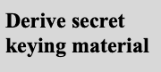
6.1.1.5 Incorporating Key Confirmation into a C(2e, 2s) Scheme
6.1.1.5 C(2e, 2s)スキームへの鍵確認の組み込み
The subsections that follow illustrate how to incorporate key confirmation (as described in Section 5.9) into the C(2e, 2s) key-agreement schemes described above. The flow depictions separate the key-establishment flow from the key-confirmation flow. The depictions and accompanying discussions presume that the assumptions of the scheme have been satisfied, that the key-agreement transaction has proceeded successfully through key derivation, and that the received \(\mathit{MacTags}\) are successfully verified as specified in Section 5.2.2.
以下の各節では、前述のC(2e, 2s)鍵共有スキームに、Section 5.9で説明する鍵確認を組み込む方法を示す。フロー図では鍵確立の流れと鍵確認の流れを分けている。図と付随する説明は、スキームの前提条件が満たされ、鍵共有トランザクションが鍵導出まで正常に進み、受信した\(\mathit{MacTags}\)がSection 5.2.2に従って正常に検証されることを前提とする。
6.1.1.5.1 \(\mathrm{C}(2\mathrm{e}, 2\mathrm{s})\) Scheme with Unilateral Key Confirmation Provided by Party U to Party V
6.1.1.5.1 当事者Uから当事者Vへの一方向鍵確認を伴う\(\mathrm{C}(2\mathrm{e}, 2\mathrm{s})\)スキーム
Figure_4 depicts a typical flow for a \(\mathrm{C}(2\mathrm{e}, 2\mathrm{s})\) scheme with unilateral key confirmation from party U to party V. In this scenario, party U and party V assume the roles of key-confirmation provider and recipient, respectively. The successful completion of this process provides party V with a) assurance that party U has derived the same secret \(Z\) value, and b) assurance that party U has actively participated in the process.
図4は、当事者Uから当事者Vへの一方向鍵確認を伴う\(\mathrm{C}(2\mathrm{e}, 2\mathrm{s})\)スキームの典型的なフローを示す。この場合、当事者UとVはそれぞれ鍵確認提供者および受信者の役割を担う。このプロセスが正常に完了すると、当事者Vは、a) 当事者Uが同じ秘密値\(Z\)を導出したこと、およびb) 当事者Uがプロセスに能動的に参加したことの保証を得る。
U
未レビュー訳V
未レビュー訳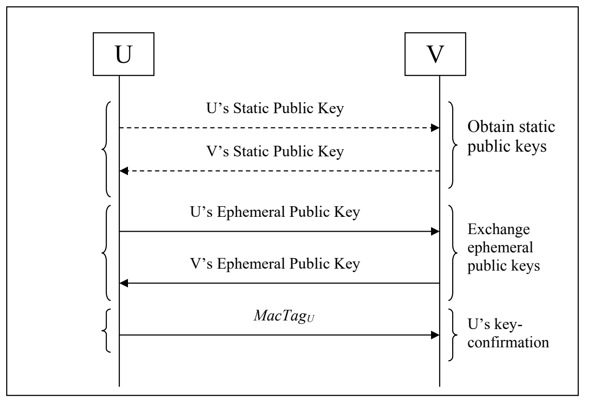
Figure 4: \(\mathrm{C}(2\mathrm{e}, 2\mathrm{s})\) scheme with unilateral key confirmation from party U to party V
図4：当事者Uから当事者Vへの一方向鍵確認を伴う\(\mathrm{C}(2\mathrm{e}, 2\mathrm{s})\)スキーム
To provide (and receive) key confirmation (as described in Section 5.9.1), party U (and party V) set
Section 5.9.1で説明する鍵確認を提供（および受信）するため、当事者U（および当事者V）は次のように設定する。
Party U provides \(\mathit{MacTag}_U\) to party V (as specified in Section 5.9.1, with \(P = U\) and \(R = V\)), where \(\mathit{MacTag}_U\) is computed (as specified in Section 5.2.1) using
当事者Uは、\(\mathit{MacTag}_U\)を当事者Vに提供する（Section 5.9.1の規定による。\(P = U\)、\(R = V\)とする）。\(\mathit{MacTag}_U\)は、以下を用いて計算する（Section 5.2.1の規定による）。
Party V (the key-confirmation recipient) uses the same format for \(\mathit{MacData}_U\) to compute its own version of \(\mathit{MacTag}_U\), and then verifies that the newly computed \(\mathit{MacTag}_U\) matches the value provided by party U.
当事者V（鍵確認の受信者）は\(\mathit{MacData}_U\)に同じ形式を使用して\(\mathit{MacTag}_U\)の自身の値を計算し、新たに計算した\(\mathit{MacTag}_U\)が当事者Uから提供された値と一致することを検証する。
Party U shall destroy its copy of \(\mathit{MacKey}\) immediately after computing \(\mathit{MacTag}_U\). Party V shall immediately destroy its copy of \(\mathit{MacKey}\) after determining whether or not the received and newly computed \(\mathit{MacTag}_U\) values match. If they do not match, then party V shall also destroy the \(\mathit{KeyData}\) portion of the \(\mathit{DerivedKeyingMaterial}\) (see Section 5.9.1) and notify party U that \(\mathit{MacTag}_U\) could not be verified. In this case, party U shall also destroy the \(\mathit{KeyData}\) portion of the \(\mathit{DerivedKeyingMaterial}\).
当事者Uは、\(\mathit{MacKey}\)の複製を、\(\mathit{MacTag}_U\)を計算した直後に破棄しなければならない。当事者Vは、\(\mathit{MacKey}\)の複製を、受信した\(\mathit{MacTag}_U\)の値と新たに計算した値が一致するかを判定した後、直ちに破棄しなければならない。一致しない場合、当事者Vはさらに\(\mathit{KeyData}\)部分（\(\mathit{DerivedKeyingMaterial}\)の一部。Section 5.9.1参照）を破棄し、\(\mathit{MacTag}_U\)を検証できなかったことを当事者Uに通知しなければならない。この場合、当事者Uも\(\mathit{KeyData}\)部分（\(\mathit{DerivedKeyingMaterial}\)の一部）を破棄しなければならない。
U destroy the KeyData portion of the DerivedKeyingMaterial (see Section 5.9.1) and notify party U that MacTag could not be verified. In this case, party U shall also destroy the
MacTag_U
未レビュー訳6.1.1.5.2 \(\mathrm{C}(2\mathrm{e}, 2\mathrm{s})\) Scheme with Unilateral Key Confirmation Provided by Party V to Party U
6.1.1.5.2 当事者Vから当事者Uへの一方向鍵確認を伴う\(\mathrm{C}(2\mathrm{e}, 2\mathrm{s})\)スキーム
Figure_5 depicts a typical flow for a \(\mathrm{C}(2\mathrm{e}, 2\mathrm{s})\) scheme with unilateral key confirmation from party V to party U. In this scenario, party V and party U assume the roles of key-confirmation provider and recipient, respectively. The successful completion of the key-confirmation process provides party U with a) assurance that party V has derived the same secret \(Z\) value, and b) assurance that party V has actively participated in the process.
図5は、当事者Vから当事者Uへの一方向鍵確認を伴う\(\mathrm{C}(2\mathrm{e}, 2\mathrm{s})\)スキームの典型的なフローを示す。この場合、当事者VとUはそれぞれ鍵確認提供者および受信者の役割を担う。鍵確認プロセスが正常に完了すると、当事者Uは、a) 当事者Vが同じ秘密値\(Z\)を導出したこと、およびb) 当事者Vがプロセスに能動的に参加したことの保証を得る。
U
未レビュー訳V
未レビュー訳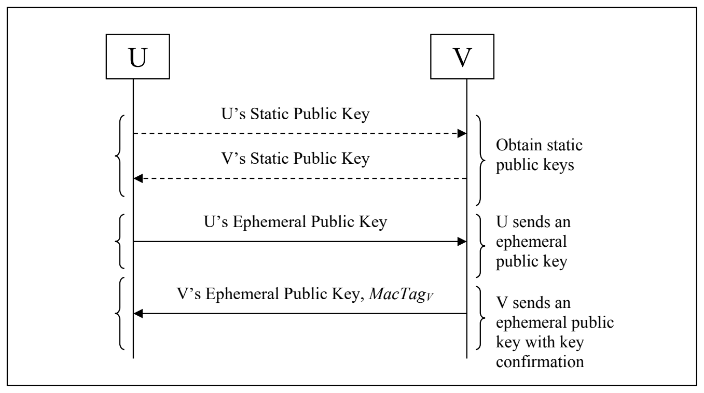
Figure 5: \(\mathrm{C}(2\mathrm{e}, 2\mathrm{s})\) scheme with unilateral key confirmation from party V to party U
図5：当事者Vから当事者Uへの一方向鍵確認を伴う\(\mathrm{C}(2\mathrm{e}, 2\mathrm{s})\)スキーム
To provide (and receive) key confirmation (as described in Section 5.9.1), party V (and party U) set
（Section 5.9.1で説明する）鍵確認を提供する（および受け取る）ために、当事者V（および当事者U）は次のように設定する。
Party V provides \(\mathit{MacTag}_V\) to party U (as specified in Section 5.9.1, with \(P = V\) and \(R = U\)), where \(\mathit{MacTag}_V\) is computed (as specified in Section 5.2.1) using
当事者Vは\(\mathit{MacTag}_V\)を当事者Uに提供する（Section 5.9.1の規定による。\(P = V\)、\(R = U\)とする）。ここで\(\mathit{MacTag}_V\)は、次を用いて計算する（Section 5.2.1の規定による）。
Party U (the key-confirmation recipient) uses the same format for \(\mathit{MacData}_V\) to compute its own version of \(\mathit{MacTag}_V\) and then verifies that the newly computed \(\mathit{MacTag}_V\) matches the value provided by party V.
当事者U（鍵確認の受信者）は、\(\mathit{MacData}_V\)に同じ形式を用いて自身の\(\mathit{MacTag}_V\)を計算し、新たに計算した\(\mathit{MacTag}_V\)が当事者Vから提供された値と一致することを検証する。
Note that in Figure_5, party V’s ephemeral public key (\(\mathit{EphemPubKey}_V\)) and the \(\mathit{MacTag}\) (\(\mathit{MacTag}_V\)) are depicted as being sent in the same message (to reduce the number of passes in the combined key-agreement/key-confirmation process). They may also be sent separately. Party V shall destroy its copy of \(\mathit{MacKey}\) immediately after computing \(\mathit{MacTag}_V\). Party U shall immediately destroy its copy of \(\mathit{MacKey}\) after determining whether or not the received and newly computed \(\mathit{MacTag}_V\) values match. If they do not match, then party U shall also destroy the \(\mathit{KeyData}\) portion of the \(\mathit{DerivedKeyingMaterial}\) (see Section 5.9.1) and notify party V that \(\mathit{MacTag}_V\) could not be verified. In this case, party V shall also destroy the \(\mathit{KeyData}\) portion of the \(\mathit{DerivedKeyingMaterial}\).
なお、Figure_5では、当事者Vのエフェメラル公開鍵（\(\mathit{EphemPubKey}_V\)）と\(\mathit{MacTag}\)（\(\mathit{MacTag}_V\)）を、同じメッセージで送信するものとして示している（鍵共有と鍵確認を組み合わせたプロセスのパス数を減らすためである）。これらは別々に送信してもよい。当事者Vは、\(\mathit{MacKey}\)の複製を、\(\mathit{MacTag}_V\)を計算した直後に破棄しなければならない。当事者Uは、\(\mathit{MacKey}\)の複製を、受信した値と新たに計算した\(\mathit{MacTag}_V\)の値が一致するかを判定した後、直ちに破棄しなければならない。一致しない場合、当事者Uはさらに\(\mathit{KeyData}\)部分（\(\mathit{DerivedKeyingMaterial}\)の一部。Section 5.9.1参照）を破棄し、\(\mathit{MacTag}_V\)を検証できなかったことを当事者Vに通知しなければならない。この場合、当事者Vも\(\mathit{KeyData}\)部分（\(\mathit{DerivedKeyingMaterial}\)の一部）を破棄しなければならない。
V in the combined key-agreement/key-confirmation process). They may also be sent separately. Party V shall destroy its copy of MacKey immediately after computing MacTag . Party U
MacTag_V
未レビュー訳6.1.1.5.3 \(\mathrm{C}(2\mathrm{e}, 2\mathrm{s})\) Scheme with Bilateral Key Confirmation
6.1.1.5.3 双方向鍵確認を伴う\(\mathrm{C}(2\mathrm{e}, 2\mathrm{s})\)スキーム
Figure_6 depicts a typical flow for a \(\mathrm{C}(2\mathrm{e}, 2\mathrm{s})\) scheme with bilateral key confirmation. In this method, party U and party V assume the roles of both the provider and the recipient in order to obtain bilateral key confirmation. The successful completion of the key-confirmation process provides each party with a) assurance that the other party has derived the same secret \(Z\) value, and b) assurance that the other party has actively participated in the process.
図6は、双方向鍵確認を伴う\(\mathrm{C}(2\mathrm{e}, 2\mathrm{s})\)スキームの典型的なフローを示す。この方式では、当事者UとVが提供者と受信者の両方の役割を担い、双方向鍵確認を実現する。鍵確認プロセスが正常に完了すると、各当事者は、a) 相手方が同じ秘密値\(Z\)を導出したこと、およびb) 相手方がプロセスに能動的に参加したことの保証を得る。
U
未レビュー訳V
未レビュー訳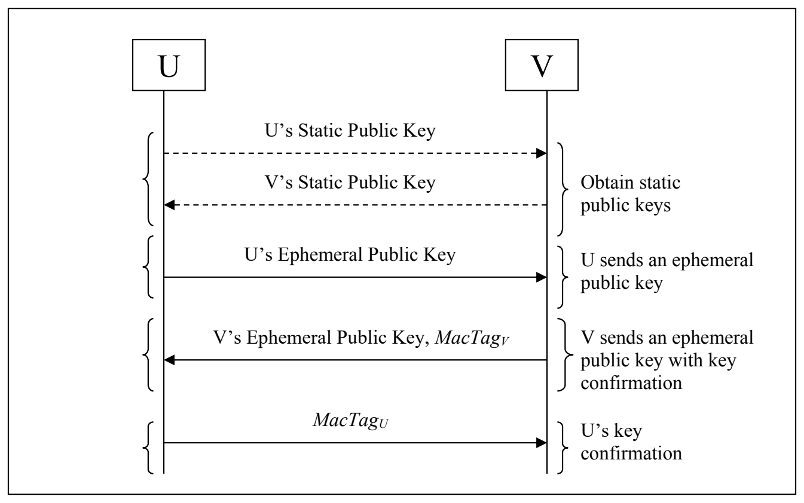
Figure 6: \(\mathrm{C}(2\mathrm{e}, 2\mathrm{s})\) scheme with bilateral key confirmation
図6：双方向鍵確認を伴う\(\mathrm{C}(2\mathrm{e}, 2\mathrm{s})\)スキーム
To provide bilateral key confirmation (as described in Section 5.9.2), party U and party V exchange and verify \(\mathit{MacTags}\) that have been computed (as specified in Section 5.2.1) using
双方向鍵確認を提供するため（Section 5.9.2の説明による）、当事者UとVは、次を用いて計算した（Section 5.2.1の規定による）\(\mathit{MacTags}\)を交換し、検証する。
Party V provides \(\mathit{MacTag}_V\) to party U (as specified in Sections 5.9.1 and 5.9.2, with \(P = V\) and \(R = U\)); \(\mathit{MacTag}_V\) is computed by party V (and verified by party U) using
当事者Vは\(\mathit{MacTag}_V\)を当事者Uに提供する（Section 5.9.1および5.9.2の規定に従い、\(P = V\)かつ\(R = U\)とする）。\(\mathit{MacTag}_V\)は、次を用いて当事者Vが計算する（当事者Uが検証する）。
Party U provides \(\mathit{MacTag}_U\) to party V (as specified in Sections 5.9.1 and 5.9.2, with \(P = U\) and \(R = V\)); \(\mathit{MacTag}_U\) is computed by party U (and verified by party V) using
当事者Uは\(\mathit{MacTag}_U\)を当事者Vに提供する（Section 5.9.1および5.9.2の規定に従い、\(P = U\)かつ\(R = V\)とする）。\(\mathit{MacTag}_U\)は、次を用いて当事者Uが計算する（当事者Vが検証する）。
Note that in Figure 6, party V’s ephemeral public key (\(\mathit{EphemPubKey}_V\)) and the \(\mathit{MacTag}\) (\(\mathit{MacTag}_V\)) are depicted as being sent in the same message (to reduce the number of passes in the combined key-agreement/key-confirmation process). They may also be sent separately, and if sent separately, then the order in which the \(\mathit{MacTags}\) are sent could be reversed.
なお、図6では、当事者Vのエフェメラル公開鍵（\(\mathit{EphemPubKey}_V\)）と\(\mathit{MacTag}\)（\(\mathit{MacTag}_V\)）が、（鍵共有／鍵確認を組み合わせたプロセスのパス数を減らすため）同じメッセージで送信されるものとして示されている。これらは別々に送信してもよく、別々に送信する場合は\(\mathit{MacTags}\)の送信順序を逆にしてもよい。
Each party shall destroy its copy of \(\mathit{MacKey}\) immediately after 1) using it to generate a MAC tag to be sent to the other party and 2) determining whether or not the MAC tag received from the other party matches the MAC tag that it computed. However, if either party is not able to verify the received MAC tag, that party shall also destroy the \(\mathit{KeyData}\) portion of the \(\mathit{DerivedKeyingMaterial}\) (see Section 5.9.1) and notify the other party of the failure. In this case, the other party shall destroy both the \(\mathit{MacKey}\) (if it has not already done so) as well as the \(\mathit{KeyData}\) portion of the \(\mathit{DerivedKeyingMaterial}\).
各当事者は、1) 相手方に送信するMACタグの生成に使用した後、および2) 相手方から受信したMACタグが自身で計算したMACタグと一致するかどうかを判定した後、直ちに\(\mathit{MacKey}\)の複製を破棄しなければならない。ただし、受信したMACタグを検証できない当事者は、さらに\(\mathit{KeyData}\)部分、すなわち\(\mathit{DerivedKeyingMaterial}\)（Section 5.9.1参照）の該当部分を破棄し、失敗を相手方に通知しなければならない。この場合、相手方は\(\mathit{MacKey}\)（まだ破棄していない場合）と、\(\mathit{KeyData}\)部分（\(\mathit{DerivedKeyingMaterial}\)のうちの該当部分）の両方を破棄しなければならない。
6.1.2 C(2e, 0s) Schemes
6.1.2 C(2e, 0s)スキーム
未レビュー訳For this category, only Diffie-Hellman schemes are specified. Each party generates ephemeral key pairs with the same domain parameters. The two parties exchange ephemeral public keys and then compute the shared secret. The secret keying material is derived using the shared secret (see Figure 7).
このカテゴリでは、Diffie-Hellman方式のみを規定する。各当事者は、同じドメインパラメータを用いてエフェメラル鍵ペアを生成する。両当事者はエフェメラル公開鍵を交換し、その後、共有秘密を計算する。秘密の鍵素材は、共有秘密を用いて導出される（Figure 7参照）。
U
未レビュー訳V
未レビュー訳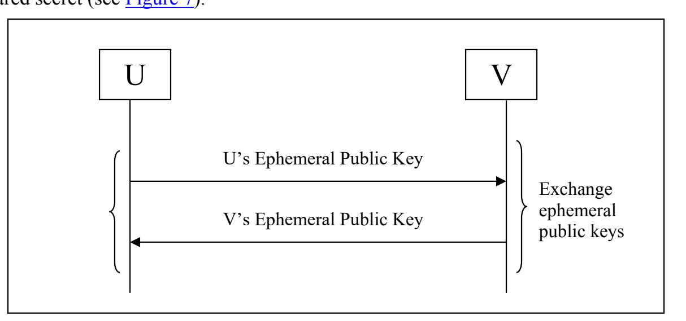
Figure 7: C(2e, 0s) schemes: each party contributes only an ephemeral key pair
図7：C(2e, 0s)スキーム：各当事者がエフェメラル鍵ペアのみを提供
未レビュー訳Assumptions: In order to execute a C(2e, 0s) key-establishment scheme in compliance with this Recommendation, the following assumptions shall be true.
前提条件：この勧告に準拠してC(2e, 0s)鍵確立スキームを実行するには、以下の前提条件が満たされなければならない。
未レビュー訳1. Each party has an authentic copy of the same set of domain parameters, \(D\). These parameters are either approved for use in the intended application (see Section 5.5.1). For FFC schemes, \(D = (p, q, g\{, \mathit{SEED}, \mathit{counter}\})\); for ECC schemes, \(D = (q, \mathit{FR}, a, b\{, \mathit{SEED}\}, G, n, h)\). Furthermore, each party has obtained assurance of the validity of these domain parameters as specified in Section 5.5.2.
1. 各当事者は、同じドメインパラメータ集合\(D\)の真正な複製を持つ。これらのパラメータは、意図された用途での使用が承認されている（Section 5.5.1参照）。FFCスキームでは\(D = (p, q, g\{, \mathit{SEED}, \mathit{counter}\})\)、ECCスキームでは\(D = (q, \mathit{FR}, a, b\{, \mathit{SEED}\}, G, n, h)\)である。さらに各当事者は、Section 5.5.2に従ってこれらのドメインパラメータの有効性保証を得ている。
2.The parties have agreed upon an approved key-derivation method, as well as an approved algorithm to be used with that method (e.g., a hash function) and other associated parameters to be used (see Section 5.8).
2.当事者は、承認済みの鍵導出方式、およびその方式で使用する承認済みアルゴリズム（例：ハッシュ関数）と、使用するその他の関連パラメータについて合意している（Section 5.8参照）。
3.When an identifier is used to label a party during the key-agreement process, it has been selected/assigned in accordance with the requirements of the protocol relying upon the use of the key-agreement scheme, and its value is known to both parties.
3.鍵共有プロセス中に当事者を識別するため識別子を使用する場合、その識別子は鍵共有スキームの利用に依拠するプロトコルの要件に従って選択／割当てされ、その値は両当事者に知られている。
6.1.2.1 dhEphem, C(2e, 0s, FFC DH) Scheme
6.1.2.1 dhEphem、C(2e, 0s, FFC DH)スキーム
This section describes the dhEphem scheme. Assurance of secure key establishment using this scheme can only be obtained when the assumptions in Section 6.1.2 are true.
この節ではdhEphemスキームを説明する。このスキームを用いて安全な鍵確立を保証できるのは、Section 6.1.2の前提条件が満たされる場合に限られる。
With the exception of key derivation, the dhEphem scheme is “symmetric” in the actions of parties U and V. Only the actions performed by party U are specified here; a specification of the actions performed by party V may be obtained by systematically replacing the letter “U” by “V” (and vice versa) in the actions listed below. Note, however, that parties U and V must use identical orderings of the bit strings that are input to the key-derivation method.
鍵導出を除けば、dhEphem方式は当事者Uと当事者Vの動作について「対称」である。ここでは当事者Uが行う動作だけを規定する。当事者Vが行う動作の仕様は、以下に列挙する動作の中の文字「U」を「V」に（また「V」を「U」に）一律に置き換えることで得られる。ただし、当事者Uと当事者Vは、鍵導出方式に入力するビット列の順序を同一にしなければならないことに注意する。
Party U shall execute the following actions to a) establish a shared secret value \(Z\) with party V, and b) derive secret keying material from \(Z\).
当事者Uは、a) 当事者Vとの共有秘密値\(Z\)を確立し、b) \(Z\)から秘密鍵素材を導出するため、以下の動作を実行しなければならない。
Actions: Party U generates a shared secret and derives secret keying material as follows:
動作：当事者Uは次のように共有秘密を生成し、秘密鍵素材を導出する。
1. Generate an ephemeral key pair \((r_U, t_U)\) from the domain parameters \(D\) as specified in Section 5.6.1.1. Send the public key \(t_U\) to party V. Receive an ephemeral public key \(t_V\) (purportedly) from party V. If \(t_V\) is not received, destroy the ephemeral private key \(r_U\); then output an error indicator, and exit this process without performing the remaining actions.
1. エフェメラル鍵ペア\((r_U, t_U)\)を、ドメインパラメータ\(D\)からSection 5.6.1.1の規定に従って生成する。公開鍵\(t_U\)を当事者Vに送信する。当事者Vから（とされる）エフェメラル公開鍵\(t_V\)を受信する。\(t_V\)を受信しなかった場合、エフェメラル秘密鍵\(r_U\)を破棄する。続いてエラー標識を出力し、残りの動作を実行せずにこのプロセスを終了する。
2. Verify that \(t_V\) is a valid ephemeral public key for the parameters \(D\) as specified in Section 5.6.2.3. If assurance of public key validity cannot be obtained, destroy the ephemeral key \(r_U\); then output an error indicator, and exit this process without performing the remaining actions.
2. \(t_V\)がパラメータ\(D\)に対する有効なエフェメラル公開鍵であることを、Section 5.6.2.3の規定に従って検証する。公開鍵の有効性の保証を得られない場合、エフェメラル鍵\(r_U\)を破棄する。続いてエラー標識を出力し、残りの動作を実行せずにこのプロセスを終了する。
3. Use the FFC DH primitive in Section 5.7.1.1 to derive a shared secret \(Z\) from the set of domain parameters \(D\), party U’s ephemeral private key \(r_U\), and party V’s ephemeral public key \(t_V\). Then destroy the ephemeral private key \(r_U\). If the call to the FFC DH primitive outputs an error indicator, destroy the results of all intermediate calculations used in the attempted computation of \(Z\); then output an error indicator, and exit this process without performing the remaining actions.
3. Section 5.7.1.1のFFC DHプリミティブを用いて、共有秘密\(Z\)を、ドメインパラメータの集合\(D\)、当事者Uのエフェメラル秘密鍵\(r_U\)、および当事者Vのエフェメラル公開鍵\(t_V\)から導出する。その後、エフェメラル秘密鍵\(r_U\)を破棄する。FFC DHプリミティブの呼び出しがエラー標識を出力した場合、\(Z\)の計算の試行で使用したすべての中間計算結果を破棄する。続いてエラー標識を出力し、残りの動作を実行せずにこのプロセスを終了する。
4. Use the agreed-upon key-derivation method to derive secret keying material with the specified length from the shared secret value \(Z\) and other input (see Section 5.8). If the key-derivation method outputs an error indicator, destroy all copies of \(Z\); then output an error indicator, and exit this process without performing the remaining action.
4. 合意済みの鍵導出方式を用いて、指定された長さの秘密鍵素材を共有秘密値\(Z\)およびその他の入力から導出する（Section 5.8参照）。鍵導出方式がエラー標識を出力した場合、\(Z\)のすべての複製を破棄する。続いてエラー標識を出力し、残りの動作を実行せずにこのプロセスを終了する。
5. Destroy all copies of the shared secret \(Z\) and output the derived keying material.
5. 共有秘密\(Z\)のすべての複製を破棄し、導出した鍵素材を出力する。
Output: The derived keying material or an error indicator. dhEphem is summarized in Table 13.
出力：導出された鍵素材またはエラー標識。dhEphemを表13に要約する。
Table 13: dhEphem key-agreement scheme summary
表13：dhEphem鍵共有スキームの要約
未レビュー訳| Party U | Party V | |
| Domain | \((p, q, g\{, \mathit{SEED}, \mathit{counter}\})\) | \((p, q, g\{, \mathit{SEED}, \mathit{counter}\})\) |
| parameters | ||
| Static data | N/A | N/A |
| Ephemeral data | Ephemeral private key \(r_U\) Ephemeral public key \(t_U\) | Ephemeral private key \(r_V\) Ephemeral public key \(t_V\) |
| Computation | Compute \(Z\) by calling FFC DH using \(r_U\) and \(t_V\) | Compute \(Z\) by calling FFC DH using \(r_V\) and \(t_U\) |
| Derive secret keying material | 1. Compute \(\mathit{DerivedKeyingMaterial}\) 2. Destroy \(Z\) | 1. Compute \(\mathit{DerivedKeyingMaterial}\) 2. Destroy \(Z\) |
| 当事者U | 当事者V | |
| ドメイン | \((p, q, g\{, \mathit{SEED}, \mathit{counter}\})\) | \((p, q, g\{, \mathit{SEED}, \mathit{counter}\})\) |
| パラメータ | ||
| 静的データ | 該当なし | 該当なし |
| エフェメラルデータ | エフェメラル秘密鍵 \(r_U\) エフェメラル公開鍵 \(t_U\) | エフェメラル秘密鍵 \(r_V\) エフェメラル公開鍵 \(t_V\) |
| 計算 | \(Z\)を、FFC DHを呼び出して計算する。使用するのは\(r_U\)と\(t_V\) | \(Z\)を、FFC DHを呼び出して計算する。使用するのは\(r_V\)と\(t_U\) |
| 秘密鍵素材の導出 | 1. \(\mathit{DerivedKeyingMaterial}\)を計算 2. \(Z\)を破棄 | 1. \(\mathit{DerivedKeyingMaterial}\)を計算 2. \(Z\)を破棄 |
6.1.2.2 (Cofactor) Ephemeral Unified Model, C(2e, 0s, ECC CDH) Scheme
6.1.2.2（コファクタ）Ephemeral Unified Model、C(2e, 0s, ECC CDH)スキーム
This section describes the Ephemeral Unified Model scheme. Assurance of secure key establishment using this scheme can only be obtained when the assumptions in Section 6.1.2 are true.
この節では、Ephemeral Unified Model方式を説明する。この方式を用いた安全な鍵確立の保証は、Section 6.1.2の前提が成り立つ場合にだけ得られる。
With the exception of key derivation, the Ephemeral Unified Model scheme is “symmetric”
鍵導出を除き、Ephemeral Unified Modelスキームにおける当事者UとVの動作は「対称」である。
未レビュー訳in the actions of parties U and V. Only the actions performed by party U are specified here;
ここでは当事者Uの動作のみを規定する。
未レビュー訳a specification of the actions performed by party V may be obtained by systematically replacing the letter “U” by “V” (and vice versa) in the actions listed below. Note, however, that parties U and V must use identical orderings of the bit strings that are input to the key-derivation method.
当事者Vが行う動作の仕様は、以下に列挙する動作の中の文字「U」を「V」に（また「V」を「U」に）一律に置き換えることで得られる。ただし、当事者Uと当事者Vは、鍵導出方式に入力するビット列の順序を同一にしなければならないことに注意する。
Party U shall execute the following actions to a) establish a shared secret value \(Z\) with party V, and b) derive secret keying material from \(Z\).
当事者Uは、a) 当事者Vとの共有秘密値 \(Z\) を確立し、b) \(Z\) から秘密鍵素材を導出するため、以下の動作を実行しなければならない。
Actions: Party U generates a shared secret and derives secret keying material as follows:
動作：当事者Uは次のように共有秘密を生成し、秘密鍵素材を導出する。
1. Generate an ephemeral key pair \((d_{e,U}, Q_{e,U})\) from the domain parameters \(D\) as specified in Section 5.6.1.2. Send the public key \(Q_{e,U}\) to party V. Receive an ephemeral public key \(Q_{e,V}\) (purportedly) from party V. If \(Q_{e,V}\) is not received, destroy the ephemeral private key \(d_{e,U}\); then output an error indicator, and exit this process without performing the remaining actions.
1. Section 5.6.1.2の規定に従って、エフェメラル鍵ペア \((d_{e,U}, Q_{e,U})\) をドメインパラメータ \(D\) から生成する。公開鍵 \(Q_{e,U}\) を当事者Vに送信する。エフェメラル公開鍵 \(Q_{e,V}\)（とされるもの）を当事者Vから受信する。\(Q_{e,V}\) を受信しなかった場合、エフェメラル秘密鍵 \(d_{e,U}\) を破棄し、エラー標識を出力して、残りの動作を実行せずにこのプロセスを終了する。
2. Verify that \(Q_{e,V}\) is a valid ephemeral public key for the parameters \(D\) as specified in Section 5.6.2.3. If assurance of public key validity cannot be obtained, destroy the ephemeral private key \(d_{e,U}\); then output an error indicator, and exit this process without performing the remaining actions.
2. Section 5.6.2.3の規定に従って、\(Q_{e,V}\) がパラメータ \(D\) に対する有効なエフェメラル公開鍵であることを検証する。公開鍵の有効性の保証を得られない場合、エフェメラル秘密鍵 \(d_{e,U}\) を破棄し、エラー標識を出力して、残りの動作を実行せずにこのプロセスを終了する。
3. Use the ECC CDH primitive in Section 5.7.1.2 to derive a shared secret \(Z\) from the set of domain parameters \(D\), party U’s ephemeral private key \(d_{e,U}\), and party V’s ephemeral public key \(Q_{e,V}\). Then destroy the ephemeral private key \(d_{e,U}\). If the call to the ECC CDH primitive outputs an error indicator, destroy the results of all intermediate calculations used in the attempted computation of \(Z\), then output an error indicator, and exit this process without performing the remaining actions.
3. Section 5.7.1.2のECC CDHプリミティブを用いて、共有秘密 \(Z\) を、ドメインパラメータ集合 \(D\)、当事者Uのエフェメラル秘密鍵 \(d_{e,U}\)、および当事者Vのエフェメラル公開鍵 \(Q_{e,V}\) から導出する。その後、エフェメラル秘密鍵 \(d_{e,U}\) を破棄する。ECC CDHプリミティブの呼び出しがエラー標識を出力した場合、\(Z\) の計算の試行で使用したすべての中間計算結果を破棄し、エラー標識を出力して、残りの動作を実行せずにこのプロセスを終了する。
4. Use the agreed-upon key-derivation method to derive secret keying material with the specified length from the shared secret value \(Z\) and other input (see Section 5.8). If the key-derivation method outputs an error indicator, destroy all copies of \(Z\); then output an error indicator, and exit this process without performing the remaining action.
4. 合意済みの鍵導出方式を用いて、共有秘密値 \(Z\) およびその他の入力から指定された長さの秘密鍵素材を導出する（Section 5.8参照）。鍵導出方式がエラー標識を出力した場合、\(Z\) のすべての複製を破棄し、エラー標識を出力して、残りの動作を実行せずにこのプロセスを終了する。
5. Destroy all copies of the shared secret \(Z\) and output the derived keying material.
5. 共有秘密 \(Z\) のすべての複製を破棄し、導出した鍵素材を出力する。
Output: The derived keying material or an error indicator.
出力：導出された鍵素材またはエラー標識。
The Ephemeral Unified Model is summarized in Table 14.
Ephemeral Unified Modelを表14に要約する。
Table 14: Ephemeral unified model key-agreement scheme summary
表14：Ephemeral Unified Model鍵共有スキームの要約
未レビュー訳| Party U | Party V | |
| Domain | \((q, \mathit{FR}, a, b\{, \mathit{SEED}\}, G, n, h)\) | \((q, \mathit{FR}, a, b\{, \mathit{SEED}\}, G, n, h)\) |
| parameters | ||
| Static data | N/A | N/A |
| Ephemeral data | Ephemeral private key \(d_{e,U}\) Ephemeral public key \(Q_{e,U}\) | Ephemeral private key \(d_{e,V}\) Ephemeral public key \(Q_{e,V}\) |
| Computation | Compute \(Z\) by calling ECC CDH using \(d_{e,U}\) and \(Q_{e,V}\) | Compute \(Z\) by calling ECC CDH using \(d_{e,V}\) and \(Q_{e,U}\) |
| Derive secret keying material | 1. Compute \(\mathit{DerivedKeyingMaterial}\) 2. Destroy \(Z\) | 1. Compute \(\mathit{DerivedKeyingMaterial}\) 2. Destroy \(Z\) |
| 当事者U | 当事者V | |
| ドメイン | \((q, \mathit{FR}, a, b\{, \mathit{SEED}\}, G, n, h)\) | \((q, \mathit{FR}, a, b\{, \mathit{SEED}\}, G, n, h)\) |
| パラメータ | ||
| 静的データ | 該当なし | 該当なし |
| エフェメラルデータ | エフェメラル秘密鍵 \(d_{e,U}\) エフェメラル公開鍵 \(Q_{e,U}\) | エフェメラル秘密鍵 \(d_{e,V}\) エフェメラル公開鍵 \(Q_{e,V}\) |
| 計算 | \(Z\) を計算する。ECC CDHを呼び出し、\(d_{e,U}\) と \(Q_{e,V}\) を用いる | \(Z\) を計算する。ECC CDHを呼び出し、\(d_{e,V}\) と \(Q_{e,U}\) を用いる |
| 秘密鍵素材の導出 | 1. \(\mathit{DerivedKeyingMaterial}\) を計算する 2. \(Z\) を破棄する | 1. \(\mathit{DerivedKeyingMaterial}\) を計算する 2. \(Z\) を破棄する |
原本PDFの抜粋画像

6.1.2.3 Key Confirmation for C(2e, 0s) Schemes
6.1.2.3 C(2e, 0s)スキームの鍵確認
In a C(2e, 0s) key-agreement scheme, none of the parties contributes a static key pair. Only ephemeral key pairs are used to derive the secret value \(Z\). Without a trusted association with an identifier of either party, key confirmation cannot achieve the expected purposes. Therefore, in this Recommendation, key confirmation is not incorporated for the C(2e, 0s) key-agreement schemes.
C(2e, 0s)鍵合意スキームでは、どの当事者も静的鍵ペアを提供しない。秘密値 \(Z\) の導出にはエフェメラル鍵ペアのみを使用する。いずれかの当事者の識別子との信頼できる関連付けがなければ、鍵確認は期待される目的を達成できない。したがって、本勧告ではC(2e, 0s)鍵合意スキームに鍵確認を組み込まない。
6.2 Schemes Using One Ephemeral Key Pair, C(1e) Schemes
6.2 1つのエフェメラル鍵ペアを使用するスキーム、C(1e)スキーム
未レビュー訳This category consists of two subcategories that are determined by the use (or non-use) of a static key pair by each of the parties. Only party U generates an ephemeral key pair. In the first subcategory, both party U and party V use a static key pair, and party U also generates an ephemeral key pair (see Section 6.2.1). In the second subcategory, party U generates an ephemeral key pair, but uses no static key pair; party V uses only a static key pair (see Section 6.2.2).
このカテゴリは、各当事者が静的鍵ペアを使用するかどうかによって決まる2つのサブカテゴリから成る。エフェメラル鍵ペアを生成するのは当事者Uのみである。最初のサブカテゴリでは、当事者UとVの両方が静的鍵ペアを使用し、当事者Uはさらにエフェメラル鍵ペアを生成する（Section 6.2.1参照）。2番目では、当事者Uはエフェメラル鍵ペアを生成するが静的鍵ペアは使用せず、当事者Vは静的鍵ペアのみを使用する（Section 6.2.2参照）。
未レビュー訳6.2.1 C(1e, 2s) Schemes
6.2.1 C(1e, 2s)スキーム
未レビュー訳Figure 8 depicts a typical flow for a C(1e, 2s) scheme. For these schemes, party U uses both static and ephemeral private/public key pairs. Party V uses only a static private/public key pair. Party U and party V obtain each other’s static public keys in a trusted manner. Party U also sends its ephemeral public key to party V. A shared secret is generated by both parties using the available static and ephemeral keys. The secret keying material is derived using the shared secret.
Figure 8は、C(1e, 2s)方式の典型的な流れを示す。これらの方式では、当事者Uは静的な秘密鍵／公開鍵ペアとエフェメラルな秘密鍵／公開鍵ペアの両方を使う。当事者Vは静的な秘密鍵／公開鍵ペアだけを使う。当事者Uと当事者Vは、互いの静的公開鍵を信頼できる方法で入手する。当事者Uはさらに、自身のエフェメラル公開鍵を当事者Vに送る。両当事者は、利用できる静的鍵とエフェメラル鍵を使って共有秘密を生成する。秘密の鍵素材は、この共有秘密を使って導出する。
U
未レビュー訳V
未レビュー訳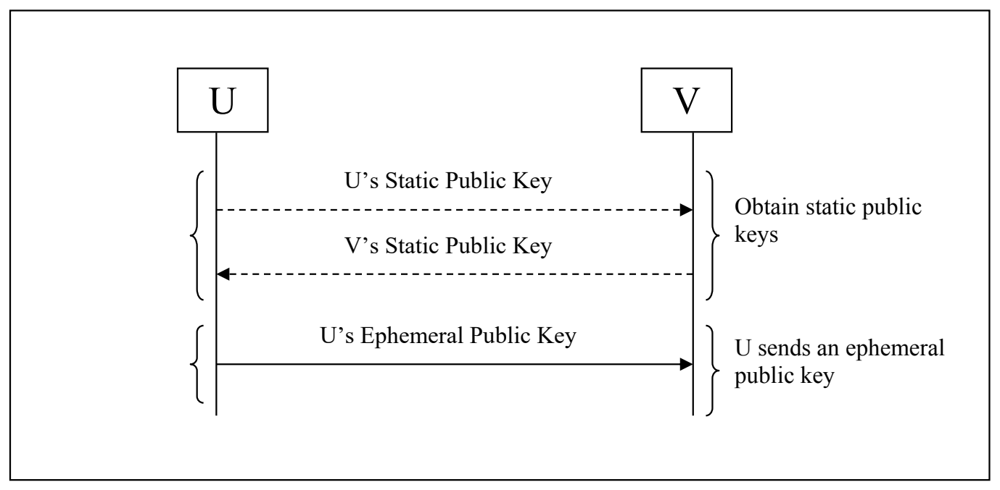
Figure 8: C(1e, 2s) schemes: party U contributes a static and an ephemeral key pair while party V contributes only a static key pair
Figure 8：C(1e, 2s)方式：当事者Uは静的鍵ペアとエフェメラル鍵ペアを提供し、当事者Vは静的鍵ペアだけを提供する
Assumptions: In order to execute a C(1e, 2s) key-establishment scheme in compliance with this Recommendation, the following assumptions shall be true.
前提：この勧告に準拠してC(1e, 2s)鍵確立方式を実行するには、以下の前提が成り立っていなければならない。
1. Each party has an authentic copy of the same set of domain parameters, \(D\). These parameters are approved for use in the intended application (see Section 5.5.1). For FFC schemes, \(D = (p, q, g\{, \mathit{SEED}, \mathit{counter}\})\); for ECC schemes, \(D = (q, \mathit{FR}, a, b\{, \mathit{SEED}\}, G, n, h)\). Furthermore, each party has obtained assurance of the validity of these domain parameters as specified in Section 5.5.2.
1. 各当事者は、同一のドメインパラメータ集合 \(D\) の真正な複製を持つ。これらのパラメータは、意図された用途での使用が承認されている（Section 5.5.1参照）。FFCスキームでは \(D = (p, q, g\{, \mathit{SEED}, \mathit{counter}\})\)、ECCスキームでは \(D = (q, \mathit{FR}, a, b\{, \mathit{SEED}\}, G, n, h)\) である。さらに、各当事者はSection 5.5.2の規定に従って、これらのドメインパラメータの有効性の保証を得ている。
2. Each party has been designated as the owner of a static key pair that was generated as specified in Section 5.6.1 using the set of domain parameters, \(D\). For FFC schemes, the static key pair is \((x, y)\); for ECC schemes, the static key pair is \((d_s, Q_s)\). Each party has obtained assurance of the validity of its own static public key as specified in Section 5.6.2.1.3. Each party has also obtained assurance of its possession of the correct value for its own private key as specified in Section 5.6.2.1.5.
2. 各当事者は、ドメインパラメータの集合 \(D\) を用いてSection 5.6.1の規定どおりに生成された静的鍵ペアの所有者として指定されている。FFC方式では静的鍵ペアは \((x, y)\) であり、ECC方式では静的鍵ペアは \((d_s, Q_s)\) である。各当事者は、Section 5.6.2.1.3の規定どおりに、自身の静的公開鍵の有効性の保証を得ている。各当事者はまた、Section 5.6.2.1.5の規定どおりに、自身の秘密鍵の正しい値を保有していることの保証も得ている。
3.The parties have agreed upon an approved key-derivation method, as well as an approved algorithm to be used with that method (e.g., a hash function) and other associated parameters to be used for key derivation (see Section 5.8).
3.当事者は、承認済みの鍵導出方式、およびその方式で使用する承認済みアルゴリズム（例：ハッシュ関数）と、鍵導出に使用するその他の関連パラメータについて合意している（Section 5.8参照）。
4. If key confirmation is used, the parties have also agreed upon an approved MAC and associated parameters, including the lengths of \(\mathit{MacKey}\) and \(\mathit{MacTag}\) (see Section 5.9.3). If party V provides key confirmation to party U, the parties have agreed upon the form of \(\mathit{Nonce}_V\), which should be a random nonce (see Section 5.4).
4. 鍵確認を使用する場合、当事者は承認済みのMACと、\(\mathit{MacKey}\)および\(\mathit{MacTag}\)の長さを含む関連パラメータにも合意している（Section 5.9.3参照）。当事者Vが当事者Uに鍵確認を提供する場合、両当事者は\(\mathit{Nonce}_V\)の形式について合意しており、これはランダムなノンスであることが望ましい（Section 5.4参照）。
5.5. Prior to or during the key-agreement process, each party receives the other party’s static public key in a trusted manner (e.g., from a certificate signed by a trusted CA or directly from the other party, who is trusted by the recipient). Each party has obtained assurance of the validity of the other party’s static public key as specified in Section 5.6.2.2.1.
5.5. 鍵共有プロセスの前またはその途中で、各当事者は相手の当事者の静的公開鍵を信頼できる方法で受け取る（例えば、信頼できるCAが署名した証明書から、または受け取る側が信頼している相手の当事者から直接受け取る）。各当事者は、Section 5.6.2.2.1の規定どおりに、相手の当事者の静的公開鍵の有効性の保証を得ている。
6.The recipient of a static public key has obtained assurance that its (claimed) owner is
6.静的公開鍵の受信者は、その（主張された）所有者が
未レビュー訳(or was) in possession of the corresponding static private key, as specified in Section
対応する静的秘密鍵を
未レビュー訳5.6.2.2.3.
保有している（または保有していた）ことの保証をSection 5.6.2.2.3に従って得ている。
未レビュー訳7.7. When an identifier is used to label a party during the key-agreement process, that identifier has a trusted association to that party’s static public key. (In other words, whenever both the identifier and static public key of one participant are employed in the key-agreement process, they are associated in a manner that is trusted by the other participant.) When an identifier is used to label a party during the key-agreement process, both parties are aware of the particular identifier employed for that purpose.
7.7. 鍵共有プロセスの中で当事者を表すラベルとして識別子を使う場合、その識別子は、その当事者の静的公開鍵と信頼できる形で結び付けられている。（言い換えると、ある参加者の識別子と静的公開鍵の両方を鍵共有プロセスで使うときは常に、両者はもう一方の参加者が信頼する方法で結び付けられている。）鍵共有プロセスの中で当事者を表すラベルとして識別子を使う場合、両当事者は、その目的に使う識別子がどれであるかを知っている。
6.2.1.1 dhHybridOneFlow, \(\mathrm{C}(\mathrm{1e}, \mathrm{2s}, \text{FFC DH})\) Scheme
6.2.1.1 dhHybridOneFlow、\(\mathrm{C}(\mathrm{1e}, \mathrm{2s}, \text{FFC DH})\)スキーム
This section describes the dhHybridOneFlow scheme. Assurance of secure key establishment using this scheme can only be obtained when the assumptions in Section 6.2.1 are true. In particular, it is assumed that party U has obtained the static public key \(y_V\) of party V, and party V has obtained the static public key \(y_U\) of party U.
この節ではdhHybridOneFlowスキームを説明する。このスキームによる安全な鍵確立の保証は、Section 6.2.1の前提条件が満たされている場合に限り得られる。特に、当事者Uは当事者Vの静的公開鍵\(y_V\)を取得しており、当事者Vは当事者Uの静的公開鍵\(y_U\)を取得していると仮定する。
In this scheme, each party has different actions, which are presented separately below.
このスキームでは、各当事者の動作が異なるため、以下に別々に示す。
However, note that parties U and V must use identical orderings of the bit strings that are input to the key-derivation method.
ただし、当事者Uと当事者Vは、鍵導出方式に入力するビット列の順序を同一にしなければならないことに注意する。
Party U shall execute the following actions to a) establish a shared secret value \(Z\) with party V, and b) derive secret keying material from \(Z\).
Actions: Party U generates a shared secret and derives secret keying material as follows:
当事者Uは、a) 当事者Vとの共有秘密値\(Z\)を確立し、b) \(Z\)から秘密鍵素材を導出するため、以下の動作を実行しなければならない。
動作：当事者Uは次のように共有秘密を生成し、秘密鍵素材を導出する。
1. Generate an ephemeral key pair \((r_U, t_U)\) from the domain parameters \(D\) as specified in Section 5.6.1.1. Send the public key \(t_U\) to party V.
1. エフェメラル鍵ペア\((r_U, t_U)\)を、ドメインパラメータ\(D\)からSection 5.6.1.1の規定に従って生成する。公開鍵\(t_U\)を当事者Vに送信する。
2. Use the FFC DH primitive in Section 5.7.1.1 to derive a shared secret \(Z_s\) from the set of domain parameters \(D\), party U’s static private key \(x_U\), and party V’s static public key \(y_V\). If the call to the FFC DH primitive outputs an error indicator, destroy the ephemeral private key \(r_U\), and destroy the results of all intermediate calculations used in the attempted computation of \(Z_s\); then output an error indicator, and exit this process without performing the remaining actions.
2. Section 5.7.1.1のFFC DHプリミティブを用い、共有秘密\(Z_s\)を、ドメインパラメータの集合\(D\)、当事者Uの静的秘密鍵\(x_U\)、および当事者Vの静的公開鍵\(y_V\)から導出する。FFC DHプリミティブの呼び出しがエラー標識を出力した場合、エフェメラル秘密鍵\(r_U\)を破棄し、\(Z_s\)の計算試行で使用したすべての中間計算結果を破棄する。次にエラー標識を出力し、残りの動作を実行せずにこのプロセスを終了する。
3. Use the FFC DH primitive to derive a shared secret \(Z_e\) from the set of domain parameters \(D\), party U’s ephemeral private key \(r_U\), and party V’s static public key \(y_V\). If this call to the FFC DH primitive outputs an error indicator, destroy \(Z_s\) and the ephemeral private key \(r_U\), and destroy the results of all intermediate calculations used in the attempted computation of \(Z_e\); then output an error indicator, and exit this process without performing the remaining actions.
3. FFC DHプリミティブを用い、共有秘密\(Z_e\)を、ドメインパラメータの集合\(D\)、当事者Uのエフェメラル秘密鍵\(r_U\)、および当事者Vの静的公開鍵\(y_V\)から導出する。このFFC DHプリミティブの呼び出しがエラー標識を出力した場合、\(Z_s\)とエフェメラル秘密鍵\(r_U\)を破棄し、\(Z_e\)の計算試行で使用したすべての中間計算結果を破棄する。次にエラー標識を出力し、残りの動作を実行せずにこのプロセスを終了する。
4. Compute the shared secret \(Z = Z_e \parallel Z_s\). Destroy \(Z_e\) and \(Z_s\).
4. 共有秘密\(Z = Z_e \parallel Z_s\)を計算する。\(Z_e\)および\(Z_s\)を破棄する。
5. Use the agreed-upon key-derivation method to derive secret keying material with the specified length from the shared secret value \(Z\) and other input (see Section 5.8). If the key-derivation method outputs an error indicator, destroy all copies of \(Z\) and the ephemeral private key \(r_U\); then output an error indicator, and exit this process without performing the remaining actions.
5. 合意済みの鍵導出方式を用いて、共有秘密値\(Z\)およびその他の入力から指定された長さの秘密鍵素材を導出する（Section 5.8参照）。鍵導出方式がエラー標識を出力した場合、\(Z\)のすべての複製とエフェメラル秘密鍵\(r_U\)を破棄する。次にエラー標識を出力し、残りの動作を実行せずにこのプロセスを終了する。
6. Destroy \(r_U\) and all copies of the shared secret \(Z\).
6. \(r_U\)および共有秘密\(Z\)のすべての複製を破棄する。
7.Output the derived keying material.
7.導出した鍵素材を出力する。
未レビュー訳Output: The derived keying material or an error indicator.
出力：導出された鍵素材またはエラー標識。
未レビュー訳Party V shall execute the following actions to a) establish a shared secret value \(Z\) with party U, and b) derive secret keying material from \(Z\).
当事者Vは、a) 当事者Uとの共有秘密値\(Z\)を確立し、b) \(Z\)から秘密鍵素材を導出するため、以下の動作を実行しなければならない。
Actions: Party V derives secret keying material as follows:
動作：当事者Vは次のように秘密鍵素材を導出する。
未レビュー訳1. Receive an ephemeral public key \(t_U\) (purportedly) from party U. If \(t_U\) is not received,
1. 当事者Uからエフェメラル公開鍵\(t_U\)（とされるもの）を受信する。\(t_U\)を受信しなかった場合、
U
未レビュー訳then output an error indicator, and e
その後、エラー標識を出力し、
未レビュー訳xit this process without performi
このプロセスを終了して残りの
未レビュー訳ng the remaining
動作を実行せずに
未レビュー訳actions.
終了する。
未レビュー訳2. Verify that \(t_U\) is a valid ephemeral public key for the parameters \(D\) as specified in Section 5.6.2.3. If assurance of public key validity cannot be obtained, then output an error indicator, and exit this process without performing the remaining actions.
2. Section 5.6.2.3の規定に従い、\(t_U\) がパラメータ \(D\) に対する有効なエフェメラル公開鍵であることを検証する。公開鍵の有効性の保証を得られない場合は、エラー標識を出力し、残りの動作を実行せずにこのプロセスを終了する。
3. Use the FFC DH primitive in Section 5.7.1.1 to derive a shared secret value \(Z_s\) from the set of domain parameters \(D\), party V’s static private key \(x_V\), and party U’s static public key \(y_U\). If the call to the FFC DH primitive outputs an error indicator, destroy the results of all intermediate calculations used in the attempted computation of \(Z_s\); then output an error indicator, and exit this process without performing the remaining actions.
3. Section 5.7.1.1のFFC DHプリミティブを用いて、共有秘密値 \(Z_s\) を、ドメインパラメータの集合 \(D\)、当事者Vの静的秘密鍵 \(x_V\)、および当事者Uの静的公開鍵 \(y_U\) から導出する。FFC DHプリミティブの呼び出しがエラー標識を出力した場合は、\(Z_s\) の計算の試行で使用したすべての中間計算の結果を破棄し、エラー標識を出力して、残りの動作を実行せずにこのプロセスを終了する。
4. Use the FFC DH primitive to derive a shared secret \(Z_e\) from the set of domain parameters \(D\), party V’s static private key \(x_V\), and party U’s ephemeral public key \(t_U\). If this call to the FFC DH primitive outputs an error indicator, destroy \(Z_s\), and destroy the results of all intermediate calculations used in the attempted computation of \(Z_e\); then output an error indicator, and exit this process without performing the remaining actions.
4. FFC DHプリミティブを用いて、共有秘密 \(Z_e\) を、ドメインパラメータの集合 \(D\)、当事者Vの静的秘密鍵 \(x_V\)、および当事者Uのエフェメラル公開鍵 \(t_U\) から導出する。このFFC DHプリミティブの呼び出しがエラー標識を出力した場合は、\(Z_s\) を破棄し、\(Z_e\) の計算の試行で使用したすべての中間計算の結果を破棄したうえで、エラー標識を出力して、残りの動作を実行せずにこのプロセスを終了する。
5. Compute the shared secret \(Z = Z_e \parallel Z_s\). Destroy \(Z_e\) and \(Z_s\).
5. 共有秘密 \(Z = Z_e \parallel Z_s\) を計算する。\(Z_e\) と \(Z_s\) を破棄する。
6. Use the agreed-upon key-derivation method to derive secret keying material with the specified length from the shared secret value \(Z\) and other input (see Section 5.8). If the key-derivation method outputs an error indicator, destroy all copies of \(Z\); output an error indicator and exit this process without performing the remaining action.
6. 合意済みの鍵導出方式を用いて、共有秘密値 \(Z\) およびその他の入力から、指定された長さの秘密鍵素材を導出する（Section 5.8参照）。鍵導出方式がエラー標識を出力した場合は、\(Z\) のすべての複製を破棄し、エラー標識を出力して、残りの動作を実行せずにこのプロセスを終了する。
7. Destroy all copies of the shared secret \(Z\) and output the derived keying material.
7. 共有秘密 \(Z\) のすべての複製を破棄し、導出した鍵素材を出力する。
Output: The derived keying material or an error indicator. Note: Key confirmation can be incorporated into this scheme. See Section 6.2.1.5 for details. dhHybridOneFlow is summarized in Table 15.
出力：導出された鍵素材またはエラー標識。注：このスキームには鍵確認を組み込むことができる。詳細はSection 6.2.1.5を参照。dhHybridOneFlowを表15に要約する。
未レビュー訳Table 15: dhHybridOneFlow key-agreement scheme summary
表15：dhHybridOneFlow鍵共有スキームの要約
未レビュー訳| Party U | Party V | |
| Domain | \((p, q, g\{, \mathit{SEED}, \mathit{counter}\})\) | \((p, q, g\{, \mathit{SEED}, \mathit{counter}\})\) |
| parameters | ||
| Static data | Static private key \(x_U\) Static public key \(y_U\) | Static private key \(x_V\) Static public key \(y_V\) |
| Ephemeral data | Ephemeral private key \(r_U\) Ephemeral public key \(t_U\) | N/A |
| Computation | 1. Compute \(Z_s\) by calling FFC DH using \(x_U\) and \(y_V\) 2. Compute \(Z_e\) by calling FFC DH using \(r_U\) and \(y_V\) 3. Compute \(Z = Z_e \parallel Z_s\) | 1. Compute \(Z_s\) by calling FFC DH using \(x_V\) and \(y_U\) 2. Compute \(Z_e\) by calling FFC DH using \(x_V\) and \(t_U\) 3. Compute \(Z = Z_e \parallel Z_s\) |
| Derive secret keying material | 1. Compute \(\mathit{DerivedKeyingMaterial}\) 2. Destroy \(Z\) | 1. Compute \(\mathit{DerivedKeyingMaterial}\) 2. Destroy \(Z\) |
| 当事者U | 当事者V | |
| ドメイン | \((p, q, g\{, \mathit{SEED}, \mathit{counter}\})\) | \((p, q, g\{, \mathit{SEED}, \mathit{counter}\})\) |
| パラメータ | ||
| 静的データ | 静的秘密鍵 \(x_U\) 静的公開鍵 \(y_U\) | 静的秘密鍵 \(x_V\) 静的公開鍵 \(y_V\) |
| エフェメラルデータ | エフェメラル秘密鍵 \(r_U\) エフェメラル公開鍵 \(t_U\) | 該当なし |
| 計算 | 1. \(Z_s\) を、\(x_U\) と \(y_V\) を用いてFFC DHを呼び出して計算する 2. \(Z_e\) を、\(r_U\) と \(y_V\) を用いてFFC DHを呼び出して計算する 3. \(Z = Z_e \parallel Z_s\) を計算する | 1. \(Z_s\) を、\(x_V\) と \(y_U\) を用いてFFC DHを呼び出して計算する 2. \(Z_e\) を、\(x_V\) と \(t_U\) を用いてFFC DHを呼び出して計算する 3. \(Z = Z_e \parallel Z_s\) を計算する |
| 秘密鍵素材の導出 | 1. \(\mathit{DerivedKeyingMaterial}\) を計算する 2. \(Z\) を破棄する | 1. \(\mathit{DerivedKeyingMaterial}\) を計算する 2. \(Z\) を破棄する |
原本PDFの抜粋画像

6.2.1.2 (Cofactor) One-Pass Unified Model, \(\mathrm{C}(1\mathrm{e}, 2\mathrm{s}, \mathrm{ECC\ CDH})\) Scheme
6.2.1.2 （コファクタ）One-Pass Unified Model、\(\mathrm{C}(1\mathrm{e}, 2\mathrm{s}, \mathrm{ECC\ CDH})\) スキーム
This section describes the One-Pass Unified Model scheme. Assurance of secure key establishment using this scheme can only be obtained when the assumptions in Section 6.2.1 are true. In particular, it is assumed that party U has obtained the static public key \(Q_{s,V}\) of party V, and party V has obtained the static public key \(Q_{s,U}\) of party U.
この節ではOne-Pass Unified Modelスキームを説明する。このスキームを用いた安全な鍵確立の保証は、Section 6.2.1の前提が成り立つ場合にのみ得られる。特に、当事者Uは当事者Vの静的公開鍵 \(Q_{s,V}\) を取得済みであり、当事者Vは当事者Uの静的公開鍵 \(Q_{s,U}\) を取得済みであると仮定する。
In this scheme, each party has different actions, which are presented separately below. However, note that parties U and V must use identical orderings of the bit strings that are input to the key-derivation method.
このスキームでは各当事者の動作が異なるため、以下に別々に示す。ただし、当事者UとVは鍵導出方式に入力するビット列の順序を同一にしなければならない。
未レビュー訳Party U shall execute the following actions to a) establish a shared secret value \(Z\) with party V, and b) derive secret keying material from \(Z\). Actions: Party U generates a shared secret and derives secret keying material as follows:
当事者Uは、a) 当事者Vとの共有秘密値 \(Z\) を確立し、b) \(Z\) から秘密鍵素材を導出するために、以下の動作を実行しなければならない（shall）。動作：当事者Uは次のように共有秘密を生成し、秘密鍵素材を導出する。
1. Generate an ephemeral key pair \((d_{e,U}, Q_{e,U})\) from the domain parameters \(D\) as specified in Section 5.6.1.2. Send the public key \(Q_{e,U}\) to V.
1. エフェメラル鍵ペア \((d_{e,U}, Q_{e,U})\) を、ドメインパラメータ \(D\) からSection 5.6.1.2の規定に従って生成する。公開鍵 \(Q_{e,U}\) をVに送信する。
2. Use the ECC CDH primitive in Section 5.7.1.2 to derive a shared secret \(Z_s\) from the set of domain parameters \(D\), party U’s static private key \(d_{s,U}\), and party V’s static public key \(Q_{s,V}\). If the call to the ECC CDH primitive outputs an error indicator, destroy the ephemeral private key \(d_{e,U}\), and
2. Section 5.7.1.2のECC CDHプリミティブを用いて、共有秘密 \(Z_s\) を、ドメインパラメータの集合 \(D\)、当事者Uの静的秘密鍵 \(d_{s,U}\)、および当事者Vの静的公開鍵 \(Q_{s,V}\) から導出する。ECC CDHプリミティブの呼び出しがエラー標識を出力した場合は、エフェメラル秘密鍵 \(d_{e,U}\) を破棄し、
destroy the results of all intermediate calculations used in the attempted computation of \(Z_s\); then output an error indicator, and exit this process without performing the remaining actions.
\(Z_s\) の計算試行に使用したすべての中間計算結果を破棄する。続いてエラー標識を出力し、残りの動作を実行せずにこのプロセスを終了する。
3. Use the ECC CDH primitive to derive a shared secret \(Z_e\), from the set of domain parameters \(D\), party U’s ephemeral private key \(d_{e,U}\), and party V’s static public key \(Q_{s,V}\). If this call to the ECC CDH primitive outputs an error indicator, destroy \(Z_s\) and the ephemeral private key \(d_{e,U}\), and destroy the results of all
3. 共有秘密 \(Z_e\) を、ドメインパラメータ集合 \(D\)、当事者Uのエフェメラル秘密鍵 \(d_{e,U}\)、および当事者Vの静的公開鍵 \(Q_{s,V}\) から、ECC CDHプリミティブを用いて導出する。このECC CDHプリミティブの呼び出しがエラー標識を出力した場合、\(Z_s\) およびエフェメラル秘密鍵 \(d_{e,U}\) を破棄し、さらにすべての
intermediate calculations used in the attempted computation of \(Z_e\); then output an error indicator, and exit this process without performing the remaining actions.
中間計算結果、すなわち \(Z_e\) の計算試行で使用したものを破棄する。その後、エラー標識を出力し、残りの動作を実行せずにこのプロセスを終了する。
4. Compute the shared secret \(Z = Z_e \parallel Z_s\). Destroy \(Z_e\) and \(Z_s\).
4. 共有秘密 \(Z = Z_e \parallel Z_s\) を計算する。\(Z_e\) および \(Z_s\) を破棄する。
5. Use the agreed-upon key-derivation method to derive secret keying material with the specified length from the shared secret value \(Z\) and other input (see Section 5.8). If the key-derivation method outputs an error indicator, destroy all copies of \(Z\) and the ephemeral private key \(d_{e,U}\); then output an error indicator, and exit this process without performing the remaining actions.
5. 合意済みの鍵導出方式を用いて、共有秘密値 \(Z\) およびその他の入力から指定された長さの秘密鍵素材を導出する（Section 5.8参照）。鍵導出方式がエラー標識を出力した場合、\(Z\) のすべての複製とエフェメラル秘密鍵 \(d_{e,U}\) を破棄し、エラー標識を出力して、残りの動作を実行せずにこのプロセスを終了する。
6. Destroy \(d_{e,U}\) and all copies of the shared secret \(Z\).
6. \(d_{e,U}\) および共有秘密 \(Z\) のすべての複製を破棄する。
7.Output the derived keying material.
7.導出した鍵素材を出力する。
未レビュー訳Output: The derived keying material or an error indicator.
出力：導出された鍵素材またはエラー標識。
未レビュー訳Party V shall execute the following actions to a) establish a shared secret value \(Z\) with party U, and b) derive secret keying material from \(Z\).
当事者Vは、a) 当事者Uとの共有秘密値 \(Z\) を確立し、b) \(Z\) から秘密鍵素材を導出するため、以下の動作を実行しなければならない。
Actions: Party V derives secret keying material as follows:
動作：当事者Vは次のように秘密鍵素材を導出する。
未レビュー訳1. Receive an ephemeral public key \(Q_{e,U}\) (purportedly) from party U. If \(Q_{e,U}\) is not received, then output an error indicator, and exit this process without performing the remaining actions.
1. 当事者Uからエフェメラル公開鍵 \(Q_{e,U}\)（とされるもの）を受信する。\(Q_{e,U}\) が受信されなかった場合、エラー標識を出力し、残りの動作を実行せずにこのプロセスを終了する。
2. Verify that \(Q_{e,U}\) is a valid ephemeral public key for the parameters \(D\) as specified in Section 5.6.2.3. If assurance of public key validity cannot be obtained, then output an error indicator, and exit this process without performing the remaining actions.
2. Section 5.6.2.3の規定に従い、\(Q_{e,U}\) がパラメータ \(D\) に対する有効なエフェメラル公開鍵であることを検証する。公開鍵の有効性の保証を得られない場合、エラー標識を出力し、残りの動作を実行せずにこのプロセスを終了する。
3. Use the ECC CDH primitive in Section 5.7.1.2 to derive a shared secret \(Z_s\) from the set of domain parameters \(D\), party V’s static private key \(d_{s,V}\), and party U’s static public key \(Q_{s,U}\). If the call to the ECC CDH primitive outputs an error indicator, destroy the results of all intermediate calculations used in the attempted computation of \(Z_s\); then output an error indicator, and exit this process without performing the remaining actions.
3. Section 5.7.1.2のECC CDHプリミティブを用いて、共有秘密 \(Z_s\) を、ドメインパラメータ集合 \(D\)、当事者Vの静的秘密鍵 \(d_{s,V}\)、および当事者Uの静的公開鍵 \(Q_{s,U}\) から導出する。ECC CDHプリミティブの呼び出しがエラー標識を出力した場合、\(Z_s\) の計算試行で使用したすべての中間計算結果を破棄し、エラー標識を出力して、残りの動作を実行せずにこのプロセスを終了する。
4. Use the ECC CDH primitive to derive a shared secret \(Z_e\) from the set of domain parameters \(D\), party V’s static private key \(d_{s,V}\), and party U’s ephemeral public key \(Q_{e,U}\). If this call to the ECC CDH primitive outputs an error indicator, destroy \(Z_s\), and destroy the results of all intermediate calculations used in the attempted computation of \(Z_e\); then output an error indicator, and exit this process without performing the remaining actions.
4. ECC CDHプリミティブを用いて、共有秘密 \(Z_e\) を、ドメインパラメータ集合 \(D\)、当事者Vの静的秘密鍵 \(d_{s,V}\)、および当事者Uのエフェメラル公開鍵 \(Q_{e,U}\) から導出する。このECC CDHプリミティブの呼び出しがエラー標識を出力した場合、\(Z_s\) を破棄し、さらに \(Z_e\) の計算試行で使用したすべての中間計算結果を破棄する。その後、エラー標識を出力し、残りの動作を実行せずにこのプロセスを終了する。
5. Compute the shared secret \(Z = Z_e \parallel Z_s\). Destroy \(Z_e\) and \(Z_s\).
5. 共有秘密 \(Z = Z_e \parallel Z_s\) を計算する。\(Z_e\) および \(Z_s\) を破棄する。
6. Use the agreed-upon key-derivation method to derive secret keying material with the specified length from the shared secret value \(Z\) and other input (see Section 5.8). If the key-derivation method outputs an error indicator, destroy all copies of \(Z\); then output an error indicator, and exit this process without performing the remaining action.
6. 合意済みの鍵導出方式を用いて、共有秘密値 \(Z\) およびその他の入力から指定された長さの秘密鍵素材を導出する（Section 5.8参照）。鍵導出方式がエラー標識を出力した場合、\(Z\) のすべての複製を破棄し、エラー標識を出力して、残りの動作を実行せずにこのプロセスを終了する。
7. Destroy all copies of the shared secret \(Z\) and output the derived keying material.
7. 共有秘密 \(Z\) のすべての複製を破棄し、導出した鍵素材を出力する。
Output: The derived keying material or an error indicator.
出力：導出された鍵素材またはエラー標識。
未レビュー訳Note: Key confirmation can be incorporated into this scheme. See Section 6.2.1.5 for details.
注：この方式には鍵確認を組み込むことができる。詳細はSection 6.2.1.5を参照。
The One-Pass Unified Model is summarized in Table 16.
One-Pass Unified Modelを表16に要約する。
未レビュー訳Table 16: One-pass unified model key-agreement scheme summary
表16：One-Pass Unified Model鍵共有スキームの要約
未レビュー訳| Party U | Party V | |
| Domain | \((q, \mathit{FR}, a, b\{, \mathit{SEED}\}, G, n, h)\) | \((q, \mathit{FR}, a, b\{, \mathit{SEED}\}, G, n, h)\) |
| parameters | ||
| Static data | Static private key \(d_{s,U}\) Static public key \(Q_{s,U}\) | Static private key \(d_{s,V}\) Static public key \(Q_{s,V}\) |
| Ephemeral data | Ephemeral private key \(d_{e,U}\) Ephemeral public key \(Q_{e,U}\) | N/A |
| Computation | 1. Compute \(Z_s\) by calling ECC CDH using \(d_{s,U}\) and \(Q_{s,V}\) 2. Compute \(Z_e\) by calling ECC CDH using \(d_{e,U}\) and \(Q_{s,V}\) | 1. Compute \(Z_s\) by calling ECC DH using \(d_{s,V}\) and \(Q_{s,U}\) 2. Compute \(Z_e\) by calling ECC DH using \(d_{s,V}\) and \(Q_{e,U}\) |
| 当事者U | 当事者V | |
| ドメイン | \((q, \mathit{FR}, a, b\{, \mathit{SEED}\}, G, n, h)\) | \((q, \mathit{FR}, a, b\{, \mathit{SEED}\}, G, n, h)\) |
| パラメータ | ||
| 静的データ | 静的秘密鍵 \(d_{s,U}\) 静的公開鍵 \(Q_{s,U}\) | 静的秘密鍵 \(d_{s,V}\) 静的公開鍵 \(Q_{s,V}\) |
| エフェメラルデータ | エフェメラル秘密鍵 \(d_{e,U}\) エフェメラル公開鍵 \(Q_{e,U}\) | 該当なし |
| 計算 | 1. \(Z_s\) を計算する。ECC CDHを呼び出し、\(d_{s,U}\) と \(Q_{s,V}\) を用いる 2. \(Z_e\) を計算する。ECC CDHを呼び出し、\(d_{e,U}\) と \(Q_{s,V}\) を用いる | 1. \(Z_s\) を計算する。ECC DHを呼び出し、\(d_{s,V}\) と \(Q_{s,U}\) を用いる 2. \(Z_e\) を計算する。ECC DHを呼び出し、\(d_{s,V}\) と \(Q_{e,U}\) を用いる |
| Party U | Party V | |
| 3. Compute \(Z = Z_e \parallel Z_s\) | 3. Compute \(Z = Z_e \parallel Z_s\) | |
| Derive secret keying material | 1. Compute \(\mathit{DerivedKeyingMaterial}\) 2. Destroy \(Z\) | 1. Compute \(\mathit{DerivedKeyingMaterial}\) 2. Destroy \(Z\) |
| 当事者U | 当事者V | |
| 3. \(Z = Z_e \parallel Z_s\) を計算する | 3. \(Z = Z_e \parallel Z_s\) を計算する | |
| 秘密鍵素材の導出 | 1. \(\mathit{DerivedKeyingMaterial}\) を計算する 2. \(Z\) を破棄する | 1. \(\mathit{DerivedKeyingMaterial}\) を計算する 2. \(Z\) を破棄する |
6.2.1.3 MQV1, C(1e, 2s, FFC MQV) Scheme
6.2.1.3 MQV1、C(1e, 2s, FFC MQV)スキーム
未レビュー訳This section describes the MQV1 scheme. Assurance of secure key establishment using this scheme can only be obtained when the assumptions in Section 6.2.1 are true. In particular, it is assumed that party U has obtained the static public key \(y_V\) of party V, and party V has obtained the static public key \(y_U\) of party U.
この節では、MQV1方式を説明する。この方式を用いた安全な鍵確立の保証は、Section 6.2.1の前提が成り立つ場合にだけ得られる。特に、当事者Uは当事者Vの静的公開鍵 \(y_V\) を入手しており、当事者Vは当事者Uの静的公開鍵 \(y_U\) を入手しているものとする。
In this scheme, each party has different actions, which are presented separately below.
このスキームでは各当事者の動作が異なるため、以下に別々に示す。
未レビュー訳However, note that parties U and V must use identical orderings of the bit strings that are input to the key-derivation method.
ただし、当事者Uと当事者Vは、鍵導出方式に入力するビット列の順序を同一にしなければならないことに注意する。
Party U shall execute the following actions in order to a) establish a shared secret value \(Z\) with party V, and b) derive secret keying material from \(Z\).
当事者Uは、a) 当事者Vとの間で共有秘密値\(Z\)を確立し、b) \(Z\)から秘密鍵素材を導出するために、次の動作を実行しなければならない。
Actions: Party U generates a shared secret and derives secret keying material as follows:
動作：当事者Uは次のように共有秘密を生成し、秘密鍵素材を導出する。
未レビュー訳1. Generate an ephemeral key pair \((r_U, t_U)\) from the domain parameters \(D\) as specified in Section 5.6.1.1. Send the public key \(t_U\) to V.
1. Section 5.6.1.1の規定に従い、ドメインパラメータ\(D\)からエフェメラル鍵ペア\((r_U, t_U)\)を生成する。公開鍵\(t_U\)をVに送信する。
2. Use the MQV1 form of the FFC MQV primitive in Section 5.7.2.1.2 to derive a shared secret \(Z\) from the set of domain parameters \(D\), party U’s static private key \(x_U\), party V’s static public key \(y_V\), party U’s ephemeral private key \(r_U\), party U’s ephemeral public key \(t_U\), and (for a second time) party V’s static public key \(y_V\). If the call to the FFC MQV primitive outputs an error indicator, destroy the ephemeral private key \(r_U\), and destroy the results of all intermediate calculations used in the attempted computation of \(Z\); then output an error indicator, and exit this process without performing the remaining actions.
2. Section 5.7.2.1.2のFFC MQVプリミティブのMQV1形式を用いて、共有秘密\(Z\)を、ドメインパラメータ集合\(D\)、当事者Uの静的秘密鍵\(x_U\)、当事者Vの静的公開鍵\(y_V\)、当事者Uのエフェメラル秘密鍵\(r_U\)、当事者Uのエフェメラル公開鍵\(t_U\)、および（2回目として）当事者Vの静的公開鍵\(y_V\)から導出する。FFC MQVプリミティブの呼び出しがエラー標識を出力した場合、エフェメラル秘密鍵\(r_U\)を破棄し、\(Z\)の計算試行で使用したすべての中間計算結果を破棄する。その後エラー標識を出力し、残りの動作を実行せずにこのプロセスを終了する。
3. Use the agreed-upon key-derivation method to derive secret keying material with the specified length from the shared secret value \(Z\) and other input (see Section 5.8). If the key-derivation method outputs an error indicator, destroy all copies of \(Z\) and the ephemeral private key \(r_U\); then output an error indicator, and exit this process without performing the remaining actions.
3. 合意済みの鍵導出方式を用いて、共有秘密値\(Z\)およびその他の入力から指定された長さの秘密鍵素材を導出する（Section 5.8参照）。鍵導出方式がエラー標識を出力した場合、\(Z\)のすべての複製とエフェメラル秘密鍵\(r_U\)を破棄する。その後エラー標識を出力し、残りの動作を実行せずにこのプロセスを終了する。
4. Destroy \(r_U\) and all copies of the shared secret \(Z\).
4. \(r_U\)および共有秘密\(Z\)のすべての複製を破棄する。
5.Output the derived keying material.
5.導出した鍵素材を出力する。
未レビュー訳Output: The derived keying material or an error indicator.
出力：導出された鍵素材またはエラー標識。
未レビュー訳Party V shall execute the following actions to a) establish a shared secret value \(Z\) with party U, and b) derive secret keying material from \(Z\).
当事者Vは、a) 当事者Uとの共有秘密値\(Z\)を確立し、b) \(Z\)から秘密鍵素材を導出するため、以下の動作を実行しなければならない。
Actions: Party V derives secret keying material as follows:
動作：当事者Vは次のように秘密鍵素材を導出する。
1. Receive an ephemeral public key \(t_U\) (purportedly) from party U. If \(t_U\) is not received, then output an error indicator, and exit this process without performing the remaining actions.
1. 当事者Uからエフェメラル公開鍵\(t_U\)（とされるもの）を受信する。\(t_U\)が受信されなかった場合、エラー標識を出力して残りの動作を実行せずにこのプロセスを終了する。
2. Verify that \(t_U\) is a valid ephemeral public key for the parameters \(D\) as specified in Section 5.6.2.3. If assurance of public key validity cannot be obtained, then output an error indicator, and exit without performing the remaining actions.
2. Section 5.6.2.3に従って、\(t_U\)がパラメータ\(D\)に対する有効なエフェメラル公開鍵であることを検証する。公開鍵の有効性の保証を得られない場合、エラー標識を出力して残りの動作を実行せずに終了する。
3. Use the MQV1 form of the FFC MQV primitive in Section 5.7.2.1.2 to derive a shared secret \(Z\) from the set of domain parameters \(D\), party V’s static private key \(x_V\), party U’s static public key \(y_U\), party V’s static private key \(x_V\) (for a second time), party V’s static public key \(y_V\), and party U’s ephemeral public key \(t_U\). If the call to the FFC MQV primitive outputs an error indicator, destroy the results of all intermediate calculations used in the attempted computation of \(Z\); then output an error indicator, and exit this process without performing the remaining actions.
3. Section 5.7.2.1.2のFFC MQVプリミティブのMQV1形式を用いて、共有秘密\(Z\)を、ドメインパラメータ集合\(D\)、当事者Vの静的秘密鍵\(x_V\)、当事者Uの静的公開鍵\(y_U\)、当事者Vの静的秘密鍵\(x_V\)（2回目）、当事者Vの静的公開鍵\(y_V\)、および当事者Uのエフェメラル公開鍵\(t_U\)から導出する。FFC MQVプリミティブの呼び出しがエラー標識を出力した場合、\(Z\)の計算の試行で使用したすべての中間計算の結果を破棄する。続いてエラー標識を出力し、残りの動作を実行せずにこのプロセスを終了する。
4. Use the agreed-upon key-derivation method to derive secret keying material with the specified length from the shared secret value \(Z\) and other input (see Section 5.8). If the key-derivation method outputs an error indicator, destroy all copies of \(Z\); then output an error indicator, and exit this process without performing the remaining action.
4. 合意済みの鍵導出方式を用いて、共有秘密値\(Z\)およびその他の入力から、指定された長さの秘密鍵素材を導出する（Section 5.8参照）。鍵導出方式がエラー標識を出力した場合、\(Z\)のすべての複製を破棄する。続いてエラー標識を出力し、残りの動作を実行せずにこのプロセスを終了する。
5. Destroy all copies of the shared secret \(Z\) and output \(\mathit{DerivedKeyingMaterial}\).
5. 共有秘密\(Z\)のすべての複製を破棄し、\(\mathit{DerivedKeyingMaterial}\)を出力する。
Output: The bit string \(\mathit{DerivedKeyingMaterial}\) of length \(L\) bits or an error indicator.
出力：ビット列\(\mathit{DerivedKeyingMaterial}\)（長さ\(L\)ビット）、またはエラー標識。
Note: Key confirmation can be incorporated into this scheme. See Section 6.2.1.5 for details.
注：この方式には鍵確認を組み込むことができる。詳細はSection 6.2.1.5を参照。
MQV1 is summarized in Table 17.
MQV1を表17に要約する。
Table 17: MQV1 key-agreement scheme summary.
表17：MQV1鍵共有スキームの要約
| Party U | Party V | |
| Domain | \((p, q, g\{, \mathit{SEED}, \mathit{counter}\})\) | \((p, q, g\{, \mathit{SEED}, \mathit{counter}\})\) |
| parameters | ||
| Static data | Static private key \(x_U\) Static public key \(y_U\) | Static private key \(x_V\) Static public key \(y_V\) |
| Ephemeral data | Ephemeral private key \(r_U\) Ephemeral public key \(t_U\) | N/A |
| Computation | Compute \(Z\) by calling FFC MQV using \(x_U\), \(y_V\), \(r_U\), \(t_U\), and \(y_V\) (again) | Compute \(Z\) by calling FFC MQV using \(x_V\), \(y_U\), \(x_V\) (again), \(y_V\), and \(t_U\) |
| 当事者U | 当事者V | |
| ドメイン | \((p, q, g\{, \mathit{SEED}, \mathit{counter}\})\) | \((p, q, g\{, \mathit{SEED}, \mathit{counter}\})\) |
| パラメータ | ||
| 静的データ | 静的秘密鍵 \(x_U\) 静的公開鍵 \(y_U\) | 静的秘密鍵 \(x_V\) 静的公開鍵 \(y_V\) |
| エフェメラルデータ | エフェメラル秘密鍵 \(r_U\) エフェメラル公開鍵 \(t_U\) | 該当なし |
| 計算 | FFC MQVを呼び出して\(Z\)を計算する。使用する値は\(x_U\)、\(y_V\)、\(r_U\)、\(t_U\)、および\(y_V\)（再度） | FFC MQVを呼び出して\(Z\)を計算する。使用する値は\(x_V\)、\(y_U\)、\(x_V\)（再度）、\(y_V\)、および\(t_U\) |
| Derive secret keying material | 1. Compute \(\mathit{DerivedKeyingMaterial}\) 2. Destroy \(Z\) | 1. Compute \(\mathit{DerivedKeyingMaterial}\) 2. Destroy \(Z\) |
| 秘密鍵素材の導出 | 1. \(\mathit{DerivedKeyingMaterial}\)を計算する 2. \(Z\)を破棄する | 1. \(\mathit{DerivedKeyingMaterial}\)を計算する 2. \(Z\)を破棄する |
原本PDFの抜粋画像

6.2.1.4 One-Pass MQV, C(1e, 2s, ECC MQV) Scheme
6.2.1.4 One-Pass MQV、C(1e, 2s, ECC MQV)スキーム
未レビュー訳This section describes the One-Pass MQV scheme. Assurance of secure key establishment using this scheme can only be obtained when the assumptions in Section 6.2.1 are true. In particular, it is assumed that party U has obtained the static public key \(Q_{s,V}\) of party V, and party V has obtained the static public key \(Q_{s,U}\) of party U.
この節ではOne-Pass MQVスキームを説明する。このスキームで安全な鍵確立の保証が得られるのは、Section 6.2.1の前提が成り立つ場合に限られる。特に、当事者Uは当事者Vの静的公開鍵\(Q_{s,V}\)を取得しており、当事者Vは当事者Uの静的公開鍵\(Q_{s,U}\)を取得していると仮定する。
In this scheme, each party has different actions, which are presented separately below.
このスキームでは各当事者の動作が異なるため、以下に別々に示す。
未レビュー訳However, note that party U and party V must use identical orderings of the bit strings that are input to the key-derivation method.
ただし、当事者Uと当事者Vは、鍵導出方式に入力するビット列の順序を同一にしなければならないことに注意する。
Party U shall execute the following actions to a) establish a shared secret value \(Z\) with party V, and b) derive secret keying material from \(Z\).
当事者Uは、a) 当事者Vとの共有秘密値\(Z\)を確立し、b) \(Z\)から秘密鍵素材を導出するために、以下の動作を実行しなければならない。
Actions: Party U generates a shared secret and derives secret keying material as follows:
動作：当事者Uは次のように共有秘密を生成し、秘密鍵素材を導出する。
未レビュー訳1. Generate an ephemeral key pair \((d_{e,U}, Q_{e,U})\) from the domain parameters \(D\) as specified
1. エフェメラル鍵ペア\((d_{e,U}, Q_{e,U})\)をドメインパラメータ\(D\)から、規定に従って生成する
, e,U e,
, e,U e,
未レビュー訳in Section 5.6.1.2. Send the public key \(Q_{e,U}\) to party V.
Section 5.6.1.2 の規定に従う。公開鍵 \(Q_{e,U}\) を当事者 V に送信する。
2. Use the One-Pass MQV form of the ECC MQV primitive in Section 5.7.2.3.2 to derive a shared secret value \(Z\) from the set of domain parameters \(D\), party U’s static private key \(d_{s,U}\), party V’s static public key \(Q_{s,V}\), party U’s ephemeral private key \(d_{e,U}\), party U’s ephemeral public key \(Q_{e,U}\), and (for a second time) party V’s static public key \(Q_{s,V}\). If the call to the ECC MQV primitive outputs an error indicator, destroy the ephemeral private
2. Section 5.7.2.3.2 の ECC MQV プリミティブの One-Pass MQV 形式を用いて、共有秘密値 \(Z\) を、ドメインパラメータの集合 \(D\)、当事者 U の静的秘密鍵 \(d_{s,U}\)、当事者 V の静的公開鍵 \(Q_{s,V}\)、当事者 U のエフェメラル秘密鍵 \(d_{e,U}\)、当事者 U のエフェメラル公開鍵 \(Q_{e,U}\)、および（2回目として）当事者 V の静的公開鍵 \(Q_{s,V}\) から導出する。ECC MQV プリミティブの呼び出しがエラー標識を出力した場合は、エフェメラル秘密
key \(d_{e,U}\), and destroy the results of all intermediate calculations used in the attempted computation of \(Z\); then output an error indicator, and exit this process without performing the remaining actions.
鍵 \(d_{e,U}\) を破棄し、\(Z\) の計算試行で使用したすべての中間計算の結果を破棄する。続いてエラー標識を出力し、残りの動作を実行せずにこのプロセスを終了する。
3. Use the agreed-upon key-derivation method to derive secret keying material with the specified length from the shared secret value \(Z\) and other input (see Section 5.8). If the key-derivation method outputs an error indicator, destroy all copies of \(Z\) and the ephemeral private key \(d_{e,U}\); then output an error indicator, and exit this process without performing the remaining actions.
3. 合意済みの鍵導出方式を用いて、共有秘密値 \(Z\) およびその他の入力から指定された長さの秘密鍵素材を導出する（Section 5.8参照）。鍵導出方式がエラー標識を出力した場合、\(Z\) のすべての複製とエフェメラル秘密鍵 \(d_{e,U}\) を破棄し、続いてエラー標識を出力して、残りの動作を実行せずにこのプロセスを終了する。
4. Destroy \(d_{e,U}\) and all copies of the shared secret \(Z\).
4. \(d_{e,U}\) および共有秘密 \(Z\) のすべての複製を破棄する。
5.Output the derived keying material.
5.導出した鍵素材を出力する。
未レビュー訳Output: The derived keying material or an error indicator.
出力：導出された鍵素材またはエラー標識。
未レビュー訳Party V shall execute the following actions to a) establish a shared secret value \(Z\) with party U, and b) derive shared secret keying material from \(Z\). Actions: Party V derives secret keying material as follows:
当事者Vは、a) 当事者Uとの共有秘密値 \(Z\) を確立し、b) \(Z\) から共有秘密鍵素材を導出するため、次の動作を実行しなければならない。動作：当事者Vは次のように秘密鍵素材を導出する。
1. Receive an ephemeral public key \(Q_{e,U}\) (purportedly) from party U. If \(Q_{e,U}\) is not received, then output an error indicator, and exit this process without performing the remaining actions.
1. 当事者Uからエフェメラル公開鍵 \(Q_{e,U}\)（とされるもの）を受信する。\(Q_{e,U}\) が受信されなかった場合、エラー標識を出力し、残りの動作を実行せずにこのプロセスを終了する。
2. Verify that \(Q_{e,U}\) is a valid ephemeral public key for the parameters \(D\) as specified in Section 5.6.2.3.2 or 5.6.2.3.3. If assurance of public key validity cannot be obtained, then output an error indicator, and exit without performing the remaining actions.
2. Section 5.6.2.3.2または5.6.2.3.3に従って、\(Q_{e,U}\) がパラメータ \(D\) に対する有効なエフェメラル公開鍵であることを検証する。公開鍵の有効性の保証を得られない場合、エラー標識を出力し、残りの動作を実行せずに終了する。
3. Use the One-Pass MQV form of the ECC MQV primitive in Section 5.7.2.3.2 to derive a shared secret value \(Z\) from the set of domain parameters \(D\), party V’s static private key \(d_{s,V}\), party U’s static public key \(Q_{s,U}\), party V’s static private key \(d_{s,V}\) (for a second time), party V’s static public key \(Q_{s,V}\), and party U’s ephemeral public key \(Q_{e,U}\). If the call to the ECC MQV primitive outputs an error indicator, destroy the results of all intermediate calculations used in the attempted computation of \(Z\); then output an error indicator, and exit this process without performing the remaining actions.
3. Section 5.7.2.3.2のECC MQVプリミティブのOne-Pass MQV形式を用いて、共有秘密値 \(Z\) を、ドメインパラメータの集合 \(D\)、当事者Vの静的秘密鍵 \(d_{s,V}\)、当事者Uの静的公開鍵 \(Q_{s,U}\)、当事者Vの静的秘密鍵 \(d_{s,V}\)（2回目）、当事者Vの静的公開鍵 \(Q_{s,V}\)、および当事者Uのエフェメラル公開鍵 \(Q_{e,U}\) から導出する。ECC MQVプリミティブの呼び出しがエラー標識を出力した場合、\(Z\) の計算試行で使用したすべての中間計算の結果を破棄し、続いてエラー標識を出力して、残りの動作を実行せずにこのプロセスを終了する。
actions.
動作を実行せずにこのプロセスを終了する。
未レビュー訳4. Use the agreed-upon key-derivation method to derive secret keying material with the specified length from the shared secret value \(Z\) and other input (see Section 5.8). If the key-derivation method outputs an error indicator, destroy all copies of \(Z\); then output an error indicator, and exit this process without performing the remaining action.
4. 合意済みの鍵導出方式を用いて、共有秘密値 \(Z\) およびその他の入力から指定された長さの秘密鍵素材を導出する（Section 5.8参照）。鍵導出方式がエラー標識を出力した場合、\(Z\) のすべての複製を破棄し、続いてエラー標識を出力して、残りの動作を実行せずにこのプロセスを終了する。
5. Destroy all copies of the shared secret \(Z\) and output the derived keying material.
5. 共有秘密 \(Z\) のすべての複製を破棄し、導出した鍵素材を出力する。
Output: The derived keying material or an error indicator.
出力：導出された鍵素材またはエラー標識。
未レビュー訳Note: Key confirmation can be incorporated into this scheme. See Section 6.2.1.5 for details.
注：この方式には鍵確認を組み込むことができる。詳細はSection 6.2.1.5を参照。
The One-Pass MQV scheme is summarized in Table 18.
One-Pass MQVを表18に要約する。
未レビュー訳Table 18: One-pass MQV model key-agreement scheme summary
表18：One-Pass MQV鍵共有スキームの要約
未レビュー訳| Party U | Party V | |
| Domain | \((q, \mathit{FR}, a, b\{, \mathit{SEED}\}, G, n, h)\) | \((q, \mathit{FR}, a, b\{, \mathit{SEED}\}, G, n, h)\) |
| parameters | ||
| Static data | Static private key \(d_{s,U}\) Static public key \(Q_{s,U}\) | Static private key \(d_{s,V}\) Static public key \(Q_{s,V}\) |
| Ephemeral data | Ephemeral private key \(d_{e,U}\) Ephemeral public key \(Q_{e,U}\) | N/A |
| Computation | Compute \(Z\) by calling ECC MQV using \(d_{s,U}\), \(Q_{s,V}\), \(d_{e,U}\), \(Q_{e,U}\), and \(Q_{s,V}\) (again) | Compute \(Z\) by calling ECC MQV using \(d_{s,V}\), \(Q_{s,U}\), \(d_{s,V}\) (again), \(Q_{s,V}\), and \(Q_{e,U}\) |
| 当事者U | 当事者V | |
| ドメイン | \((q, \mathit{FR}, a, b\{, \mathit{SEED}\}, G, n, h)\) | \((q, \mathit{FR}, a, b\{, \mathit{SEED}\}, G, n, h)\) |
| パラメータ | ||
| 静的データ | 静的秘密鍵 \(d_{s,U}\) 静的公開鍵 \(Q_{s,U}\) | 静的秘密鍵 \(d_{s,V}\) 静的公開鍵 \(Q_{s,V}\) |
| エフェメラルデータ | エフェメラル秘密鍵 \(d_{e,U}\) エフェメラル公開鍵 \(Q_{e,U}\) | 該当なし |
| 計算 | ECC MQVを呼び出して \(Z\) を計算する。使用する値は \(d_{s,U}\)、\(Q_{s,V}\)、\(d_{e,U}\)、\(Q_{e,U}\)、および \(Q_{s,V}\)（再度） | ECC MQVを呼び出して \(Z\) を計算する。使用する値は \(d_{s,V}\)、\(Q_{s,U}\)、\(d_{s,V}\)（再度）、\(Q_{s,V}\)、および \(Q_{e,U}\) |
| Party U | Party V | |
| Derive secret Keying material | 1. Compute \(\mathit{DerivedKeyingMaterial}\) 2. Destroy \(Z\) | 1. Compute \(\mathit{DerivedKeyingMaterial}\) 2. Destroy \(Z\) |
| 当事者U | 当事者V | |
| 秘密鍵素材の導出 | 1. \(\mathit{DerivedKeyingMaterial}\) を計算する 2. \(Z\) を破棄する | 1. \(\mathit{DerivedKeyingMaterial}\) を計算する 2. \(Z\) を破棄する |
原本PDFの抜粋画像
6.2.1.5 Incorporating Key Confirmation into a C(1e, 2s) Scheme
6.2.1.5 C(1e, 2s)スキームへの鍵確認の組み込み
未レビュー訳The subsections that follow illustrate how to incorporate key confirmation (as described in Section 5.9) into the C(1e, 2s) key-agreement schemes described above. Note that party V cannot act as a key-confirmation recipient unless a nonce (\(\mathit{Nonce}_V\)) is provided by party V to
以下の各節では、前述のC(1e, 2s)鍵共有スキームに、Section 5.9で説明する鍵確認を組み込む方法を示す。なお、当事者Vは、ノンス（\(\mathit{Nonce}_V\)）が当事者Vから
party U and is used (in addition to the shared secret \(Z\)) as input to the key-derivation method employed by the scheme. This would be accomplished by including (a copy of) \(\mathit{Nonce}_V\) in the \(\mathit{OtherInput}\) provided to the KDM, as part of the \(\mathit{FixedInfo}\) (see Section 5.8), in addition to using (a copy of) \(\mathit{Nonce}_V\) as the \(\mathit{EphemData}_V\) employed in the \(\mathit{MacTag}\) computations for key confirmation.
当事者Uに提供され、スキームが使用する鍵導出方式への入力として（共有秘密 \(Z\) に加えて）使用される場合を除き、鍵確認の受信者として動作できない。これは、\(\mathit{Nonce}_V\)（の複製）を、KDMに与える \(\mathit{OtherInput}\) に \(\mathit{FixedInfo}\) の一部として含める（Section 5.8参照）とともに、\(\mathit{Nonce}_V\)（の複製）を \(\mathit{EphemData}_V\) として鍵確認のための \(\mathit{MacTag}\) の計算に用いることで実現できる。
The flow depictions separate the key-establishment flow from the key-confirmation flow.
フロー図では鍵確立の流れと鍵確認の流れを分けている。
未レビュー訳The depictions and accompanying discussions presume that the assumptions of the scheme have been satisfied, that the key-agreement transaction has proceeded successfully through key derivation, and that the received \(\mathit{MacTags}\) are successfully verified as specified in Section 5.2.2.
図と付随する説明は、スキームの前提条件が満たされていること、鍵共有トランザクションが鍵導出まで正常に進んだこと、および受信した \(\mathit{MacTags}\) がSection 5.2.2の規定どおり正常に検証されることを前提としている。
6.2.1.5.1 \(\mathrm{C}(1e, 2s)\) Scheme with Unilateral Key Confirmation Provided by Party U to Party V
6.2.1.5.1 当事者Uから当事者Vへの一方向鍵確認を伴う \(\mathrm{C}(1e, 2s)\) スキーム
Figure 9 depicts a typical flow for a \(\mathrm{C}(1e, 2s)\) scheme with unilateral key confirmation from party U to party V. In this situation, party U and party V assume the roles of key-confirmation provider and recipient, respectively. Since party V does not contribute an ephemeral public key during the key-agreement process, a nonce (\(\mathit{Nonce}_V\)) shall be provided by party V to party U and used (in addition to the shared secret \(Z\)) as input to the key-derivation method employed by the scheme. \(\mathit{Nonce}_V\) is also used as \(\mathit{EphemData}_V\) during \(\mathit{MacTag}\) computations.
図9は、当事者Uから当事者Vへの一方向鍵確認を伴う \(\mathrm{C}(1e, 2s)\) スキームの典型的なフローを示す。この場合、当事者Uと当事者Vはそれぞれ鍵確認の提供者と受信者の役割を担う。当事者Vは鍵共有プロセス中にエフェメラル公開鍵を提供しないため、ノンス（\(\mathit{Nonce}_V\)）を当事者Vから当事者Uに提供し、スキームが使用する鍵導出方式への入力として（共有秘密 \(Z\) に加えて）用いなければならない。\(\mathit{Nonce}_V\) は \(\mathit{EphemData}_V\) として \(\mathit{MacTag}\) の計算時にも使用する。
The successful completion of the key-confirmation process provides party V with assurance that party U has derived the same secret \(Z\) value. If \(\mathit{Nonce}_V\) is a random nonce, then party V also obtains assurance that party U has actively participated in the process; see Section 5.4 for a discussion of the length and security strength required for the nonce.
鍵確認プロセスが正常に完了すると、当事者Vは、当事者Uが同じ秘密値 \(Z\) を導出したという保証を得る。\(\mathit{Nonce}_V\) がランダムノンスであれば、当事者Vは、当事者Uがプロセスに能動的に参加したという保証も得る。ノンスに必要な長さとセキュリティ強度に関する議論はSection 5.4を参照。
U
未レビュー訳V
未レビュー訳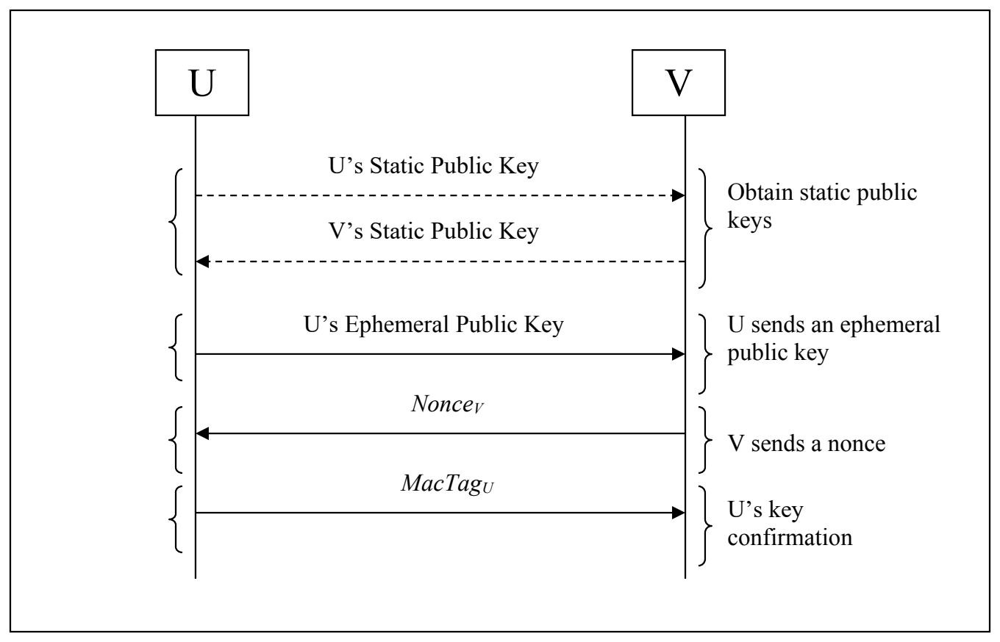
Figure 9: \(\mathrm{C}(1e, 2s)\) scheme with unilateral key confirmation from party U to party V
図9：当事者Uから当事者Vへの一方向鍵確認を伴う \(\mathrm{C}(1e, 2s)\) スキーム
To provide (and receive) key confirmation (as described in Section 5.9.1), party U (and party V) set
（Section 5.9.1で説明する）鍵確認を提供する（および受ける）ために、当事者U（および当事者V）は次のように設定する。
V
未レビュー訳V
未レビュー訳Party U provides \(\mathit{MacTag}_U\) to party V (as specified in Section 5.9.1, with \(P = U\) and \(R = V\)), where \(\mathit{MacTag}_U\) is computed (as specified in Section 5.2.1) using
当事者Uは\(\mathit{MacTag}_U\)を当事者Vに提供する（Section 5.9.1に規定するとおり、\(P = U\)および\(R = V\)とする）。ここで、\(\mathit{MacTag}_U\)は（Section 5.2.1に規定するとおり）次を用いて計算する。
Party V (the key-confirmation recipient) uses the same format for \(\mathit{MacData}_U\) to compute its own version of \(\mathit{MacTag}_U\) and then verifies that the newly computed \(\mathit{MacTag}\) matches the value provided by party U.
当事者V（鍵確認の受信者）は、\(\mathit{MacData}_U\)に同じ形式を使用して\(\mathit{MacTag}_U\)の自身の値を計算し、新たに計算した\(\mathit{MacTag}\)が当事者Uから提供された値と一致することを検証する。
Party U shall destroy its copy of \(\mathit{MacKey}\) immediately after computing \(\mathit{MacTag}_U\). Party V shall immediately destroy its copy of \(\mathit{MacKey}\) after determining whether or not the received and newly computed \(\mathit{MacTag}_U\) values match. If they do not match, then party V shall also destroy the \(\mathit{KeyData}\) portion of the \(\mathit{DerivedKeyingMaterial}\) (see Section 5.9.1) and notify party U that \(\mathit{MacTag}_U\) could not be verified. In this case, party U shall also destroy the \(\mathit{KeyData}\) portion of the \(\mathit{DerivedKeyingMaterial}\).
当事者Uは、\(\mathit{MacKey}\)の複製を、\(\mathit{MacTag}_U\)を計算した直後に破棄しなければならない。当事者Vは、\(\mathit{MacKey}\)の複製を、受信した値と新たに計算した\(\mathit{MacTag}_U\)の値が一致するかどうかを判定した後、直ちに破棄しなければならない。一致しない場合、当事者Vはさらに、\(\mathit{KeyData}\)の部分（\(\mathit{DerivedKeyingMaterial}\)の一部。Section 5.9.1参照）を破棄し、\(\mathit{MacTag}_U\)を検証できなかったことを当事者Uに通知しなければならない。この場合、当事者Uも、\(\mathit{KeyData}\)の部分（\(\mathit{DerivedKeyingMaterial}\)の一部）を破棄しなければならない。
6.2.1.5.2 \(\mathrm{C(1e, 2s)}\) Scheme with Unilateral Key Confirmation Provided by Party V to Party U
6.2.1.5.2 当事者Vから当事者Uへの一方向鍵確認を伴う\(\mathrm{C(1e, 2s)}\)スキーム
Figure_10 depicts a typical flow for a \(\mathrm{C(1e, 2s)}\) scheme with unilateral key confirmation from party V to party U. In this scenario, party V and party U assume the roles of key-confirmation provider and recipient, respectively. The successful completion of the key-confirmation process provides party U with a) assurance that party V has derived the same secret \(Z\) value, and b) assurance that party V has actively participated in the process.
図10は、当事者Vから当事者Uへの一方向鍵確認を伴う\(\mathrm{C(1e, 2s)}\)スキームの典型的なフローを示す。この場合、当事者Vと当事者Uはそれぞれ鍵確認の提供者および受信者の役割を担う。鍵確認プロセスが正常に完了すると、当事者Uは、a) 当事者Vが同じ秘密値\(Z\)を導出したことの保証、およびb) 当事者Vがプロセスに能動的に参加したことの保証を得る。
U
未レビュー訳V
未レビュー訳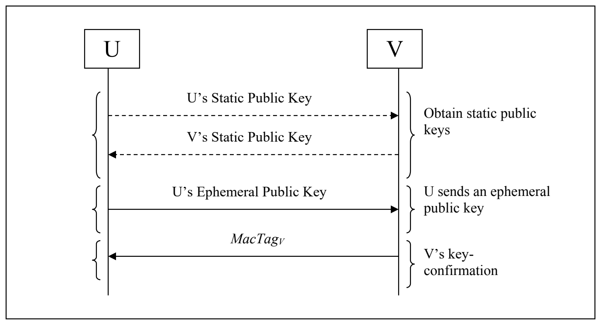
Figure 10: \(\mathrm{C(1e, 2s)}\) scheme with unilateral key confirmation from party V to party U
図10：当事者Vから当事者Uへの一方向鍵確認を伴う\(\mathrm{C(1e, 2s)}\)スキーム
To provide (and receive) key confirmation (as described in Section 5.9.1), both parties set
鍵確認を提供（および受信）するため、両当事者は次のように設定する。
未レビュー訳Party V provides \(\mathit{MacTag}_V\) to party U (as specified in Section 5.9.1, with \(P = V\) and \(R = U\)), where \(\mathit{MacTag}_V\) is computed (as specified in Section 5.2.1) using
当事者Vは\(\mathit{MacTag}_V\)を当事者Uに提供する（Section 5.9.1に規定するとおり、\(P = V\)および\(R = U\)とする）。ここで、\(\mathit{MacTag}_V\)は（Section 5.2.1に規定するとおり）次を用いて計算する。
\(\mathit{MacData}\)
\(\mathit{MacData}\)
Party U (the key-confirmation recipient) uses the same format for \(\mathit{MacData}_V\) to compute its own version of \(\mathit{MacTag}_V\), and then verifies that the newly computed \(\mathit{MacTag}\) matches the value provided by party V.
当事者U（鍵確認の受信者）は\(\mathit{MacData}_V\)に同じ形式を使用して\(\mathit{MacTag}_V\)の自身の値を計算し、新たに計算した\(\mathit{MacTag}\)が当事者Vから提供された値と一致することを検証する。
Party V shall destroy its copy of \(\mathit{MacKey}\) immediately after computing \(\mathit{MacTag}_V\). Party U shall immediately destroy its copy of \(\mathit{MacKey}\) after determining whether or not the received and newly computed \(\mathit{MacTag}_V\) values match. If they do not match, then party U shall also destroy the \(\mathit{KeyData}\) portion of the \(\mathit{DerivedKeyingMaterial}\) (see Section 5.9.1) and notify party V that \(\mathit{MacTag}_V\) could not be verified. In this case, party V shall also destroy the \(\mathit{KeyData}\) portion of the \(\mathit{DerivedKeyingMaterial}\).
当事者Vは\(\mathit{MacKey}\)の複製を、\(\mathit{MacTag}_V\)を計算した直後に破棄しなければならない。当事者Uは\(\mathit{MacKey}\)の複製を、受信した値と新たに計算した\(\mathit{MacTag}_V\)の値が一致するか否かを判定した後、直ちに破棄しなければならない。一致しない場合、当事者Uはさらに\(\mathit{KeyData}\)部分（\(\mathit{DerivedKeyingMaterial}\)の一部、Section 5.9.1参照）を破棄し、\(\mathit{MacTag}_V\)を検証できなかったことを当事者Vに通知しなければならない。この場合、当事者Vも\(\mathit{KeyData}\)部分（\(\mathit{DerivedKeyingMaterial}\)の一部）を破棄しなければならない。
6.2.1.5.3 C(1e, 2s) Scheme with Bilateral Key Confirmation
6.2.1.5.3 双方向鍵確認を伴うC(1e, 2s)スキーム
未レビュー訳Figure_11 depicts a typical flow for a C(1e, 2s) scheme with bilateral key confirmation. In this method, party U and party V assume the roles of both the provider and the recipient to obtain bilateral key confirmation. Since party V does not contribute an ephemeral public key during the key-agreement process, a nonce (\(\mathit{Nonce}_V\)) shall be provided by party V to party U and used (in addition to the shared secret \(Z\)) as input to the key-derivation method employed by the scheme. \(\mathit{Nonce}_V\) is also used as the \(\mathit{EphemData}_V\) during \(\mathit{MacTag}\) computations. The successful completion of the key-confirmation process provides each party with assurance that the other party has derived the same secret \(Z\) value. Party U obtains assurance that party V has actively participated in the process; if \(\mathit{Nonce}_V\) is a random nonce, then party V also obtains assurance that party U has actively participated in the process; see Section 5.4 for a discussion of the length and security strength required for the nonce.
図11は双方向鍵確認を伴うC(1e, 2s)スキームの典型的なフローを示す。この方式では、当事者Uと当事者Vが提供者および受信者の両方の役割を担い、双方向鍵確認を得る。当事者Vは鍵共有プロセス中にエフェメラル公開鍵を提供しないため、ノンス（\(\mathit{Nonce}_V\)）を当事者Vから当事者Uに提供し、スキームが用いる鍵導出方式への入力として（共有秘密\(Z\)に加えて）使用しなければならない。\(\mathit{Nonce}_V\)は\(\mathit{EphemData}_V\)としても、\(\mathit{MacTag}\)の計算時に使用する。鍵確認プロセスが正常に完了すると、各当事者は相手方が同じ秘密値\(Z\)を導出した保証を得る。当事者Uは当事者Vがプロセスに能動的に参加した保証を得る。\(\mathit{Nonce}_V\)がランダムノンスである場合、当事者Vも当事者Uがプロセスに能動的に参加した保証を得る。ノンスに必要な長さおよびセキュリティ強度についてはSection 5.4を参照。
U
未レビュー訳V
未レビュー訳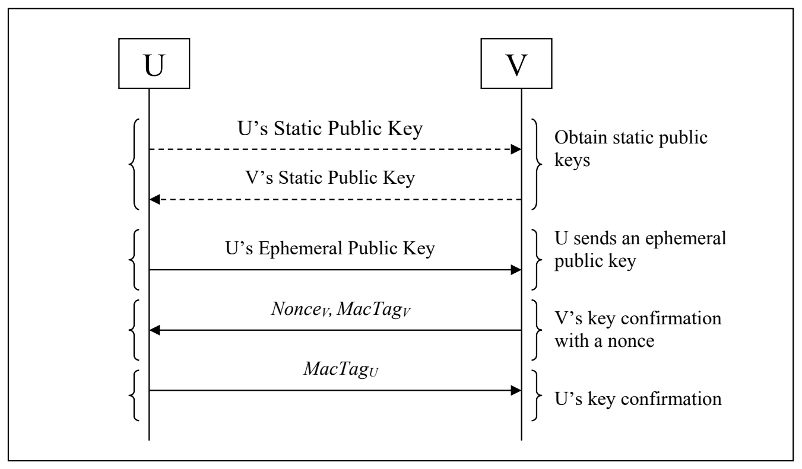
Figure 11: C(1e, 2s) scheme with bilateral key confirmation
図11：双方向鍵確認を伴うC(1e, 2s)スキーム
未レビュー訳To provide bilateral key confirmation (as described in Section 5.9.2), party U and party V exchange and verify \(\mathit{MacTags}\) that have been computed (as specified in Sections 5.2.1) using
双方向鍵確認を提供するため（Section 5.9.2に記載のとおり）、当事者Uと当事者Vは、（Section 5.2.1の規定に従って）次を用いて計算した\(\mathit{MacTags}\)を交換し、検証する。
Party V provides \(\mathrm{MacTag}_V\) to party U (as specified in Sections 5.9.1 and 5.9.2, with \(P = V\) and \(R = U\)); \(\mathit{MacTag}_V\) is computed by party V (and verified by U) using
当事者Vは\(\mathrm{MacTag}_V\)を当事者Uに提供する（Section 5.9.1および5.9.2の規定に従い、\(P = V\)および\(R = U\)とする）。\(\mathit{MacTag}_V\)は当事者Vが次を用いて計算する（Uが検証する）。
V
未レビュー訳V U
V、U
未レビュー訳V
未レビュー訳U V
U、V
未レビュー訳Party U provides \(\mathit{MacTag}_{U}\) to party V (as specified in Sections 5.9.1 and 5.9.2, with \(P = U\) and \(R = V\)); \(\mathit{MacTag}_{U}\) is computed by party U (and verified by party V) using
当事者Uは\(\mathit{MacTag}_{U}\)を当事者Vに提供する（Section 5.9.1および5.9.2の規定に従い、\(P = U\)、\(R = V\)とする）。\(\mathit{MacTag}_{U}\)は、次を用いて当事者Uが計算する（当事者Vが検証する）。
Note that in Figure_11 party V’s nonce (\(\mathit{Nonce}_V\)) and the \(\mathit{MacTag}\) (\(\mathit{MacTag}_{V}\)) are depicted as being sent in the same message (to reduce the number of passes in the combined key-agreement/key-confirmation process). They may also be sent separately (as long as \(\mathit{Nonce}_V\) is sent before the \(\mathit{MacTags}\) are exchanged). The \(\mathit{MacTag}_{V}\) and \(\mathit{MacTag}_{U}\) can be sent in any order, as long as \(\mathit{Nonce}_V\) is available to generate and verify both MAC tags.
図11では、当事者Vのノンス（\(\mathit{Nonce}_V\)）と\(\mathit{MacTag}\)（\(\mathit{MacTag}_{V}\)）が同一メッセージで送信されるものとして示されている（鍵共有と鍵確認を組み合わせたプロセスのパス数を減らすため）。これらは別々に送信してもよい（\(\mathit{Nonce}_V\)が\(\mathit{MacTags}\)の交換より前に送信される限り）。\(\mathit{MacTag}_{V}\)と\(\mathit{MacTag}_{U}\)は、両方のMACタグの生成および検証に\(\mathit{Nonce}_V\)が使用可能である限り、任意の順序で送信できる。
Each party shall destroy its copy of \(\mathit{MacKey}\) immediately after 1) using it to generate a MAC tag to be sent to the other party and 2) determining whether or not the MAC tag received from the other party matches the MAC tag that it computed. However, if either party is not able to verify the received MAC tag, that party shall also destroy the \(\mathit{KeyData}\) portion of the \(\mathit{DerivedKeyingMaterial}\) (see Section 5.9.1) and notify the other party of the failure. In this case, the other party shall destroy both the \(\mathit{MacKey}\) (if it has not already done so) as well as the \(\mathit{KeyData}\) portion of the \(\mathit{DerivedKeyingMaterial}\).
各当事者は、1) 相手方に送信するMACタグの生成に使用し、2) 相手方から受信したMACタグが自身の計算したMACタグと一致するか否かを判定した後、直ちに\(\mathit{MacKey}\)の複製を破棄しなければならない。ただし、いずれかの当事者が受信したMACタグを検証できない場合、その当事者は\(\mathit{KeyData}\)部分（\(\mathit{DerivedKeyingMaterial}\)の一部。Section 5.9.1参照）も破棄し、失敗を相手方に通知しなければならない。この場合、相手方は\(\mathit{MacKey}\)（未破棄の場合）に加えて、\(\mathit{KeyData}\)部分（\(\mathit{DerivedKeyingMaterial}\)の一部）も破棄しなければならない。
6.2.2 C(1e, 1s) Schemes
6.2.2 C(1e, 1s)スキーム
未レビュー訳For each of the C(1e, 1s) schemes, party U generates an ephemeral key pair, but uses no static key pair; party V has only a static key pair. Party U obtains party V’s static public key in a trusted manner (for example, from a certificate signed by a trusted CA or directly from party V, who is trusted) and sends its ephemeral public key to party V. The parties compute a shared secret using their private keys and the other party’s public key. Each party uses the shared secret to derive secret keying material (see Figure 12).
C(1e, 1s)方式のいずれにおいても、当事者Uはエフェメラル鍵ペアを生成するが、静的鍵ペアは使用しない。当事者Vは静的鍵ペアのみを持つ。当事者Uは、当事者Vの静的公開鍵を信頼できる方法で入手し（例えば、信頼されたCAが署名した証明書から、または信頼されている当事者Vから直接）、自身のエフェメラル公開鍵を当事者Vに送信する。両当事者は、自身の秘密鍵と相手方の公開鍵を用いて共有秘密を計算する。各当事者は、その共有秘密を用いて秘密の鍵素材を導出する（Figure 12を参照）。
U
未レビュー訳V
未レビュー訳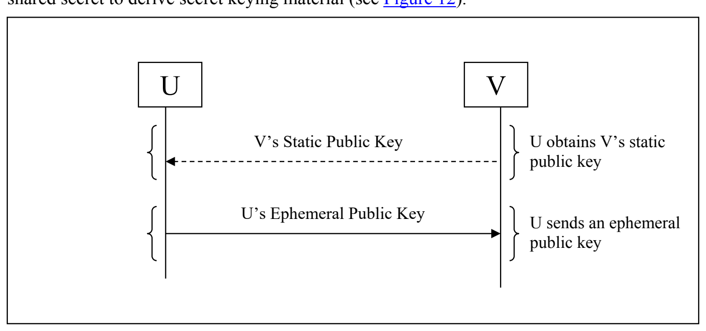
Figure 12: C(1e, 1s) schemes: party U contributes an ephemeral key pair, and party V contributes a static key pair
Figure 12：C(1e, 1s)方式：当事者Uはエフェメラル鍵ペアを提供し、当事者Vは静的鍵ペアを提供する
Assumptions: In order to execute a C(1e, 1s) key-establishment scheme in compliance with this Recommendation, the following assumptions shall be true.
前提条件：この勧告に準拠してC(1e, 1s)鍵確立スキームを実行するには、以下の前提条件が満たされなければならない。
未レビュー訳1. Each party has an authentic copy of the same set of domain parameters, \(D\). These parameters are either approved for use in the intended application (see Section 5.5.1). For FFC schemes, \(D = (p, q, g\{, \mathit{SEED}, \mathit{counter}\})\); for ECC schemes, \(D = (q, \mathit{FR}, a, b\{, \mathit{SEED}\}, G, n, h)\). Furthermore, each party has obtained assurance of the validity of these domain parameters as specified in Section 5.5.2.
1. 各当事者は、同一のドメインパラメータ集合\(D\)の真正な複製を持つ。これらのパラメータは、意図された用途での使用が承認されている（Section 5.5.1参照）。FFCスキームでは\(D = (p, q, g\{, \mathit{SEED}, \mathit{counter}\})\)、ECCスキームでは\(D = (q, \mathit{FR}, a, b\{, \mathit{SEED}\}, G, n, h)\)である。さらに、各当事者はSection 5.5.2の規定に従って、これらのドメインパラメータの有効性の保証を得ている。
2. Party V has been designated as the owner of a static key pair that was generated as specified in Section 5.6.1 using the set of domain parameters, \(D\). For FFC schemes, the static key pair is \((x, y)\); for ECC schemes, the static key pair is \((d_s, Q_s)\). Party V has obtained assurance of the validity of its own static public key as specified in Section 5.6.2.1. Party V has obtained assurance of its possession of the correct value of its own private key as specified in Section 5.6.2.1.5.
2. 当事者Vは、ドメインパラメータ集合\(D\)を用いてSection 5.6.1の規定に従い生成された静的鍵ペアの所有者として指定されている。FFCスキームでは静的鍵ペアは\((x, y)\)、ECCスキームでは静的鍵ペアは\((d_s, Q_s)\)である。当事者Vは、Section 5.6.2.1の規定に従って、自身の静的公開鍵の有効性の保証を得ている。当事者Vは、Section 5.6.2.1.5の規定に従って、自身の秘密鍵の正しい値を所持していることの保証を得ている。
3.The parties have agreed upon an approved key-derivation method, as well as an approved algorithm to be used with that method (e.g., a hash function) and other associated parameters to be used (see Section 5.8).
3.当事者は、承認済みの鍵導出方式、およびその方式で使用する承認済みアルゴリズム（例：ハッシュ関数）とその他の関連パラメータに合意している（Section 5.8参照）。
4. If key confirmation is used, the parties have also agreed upon an approved MAC and associated parameters, including the lengths of \(\mathit{MacKey}\) and \(\mathit{MacTag}\) (see Section 5.9.3).
4. 鍵確認を使用する場合、当事者は、承認済みのMACおよび関連パラメータ（\(\mathit{MacKey}\)および\(\mathit{MacTag}\)の長さを含む）にも合意している（Section 5.9.3参照）。
5.5. Prior to or during the key-agreement process, party U receives party V’s static public key in a trusted manner (e.g., from a certificate signed by a trusted CA or directly from party V, who is trusted by the recipient). Party U has obtained assurance of the validity of party V’s static public key as specified in Section 5.6.2.2.1.
5.5. 鍵共有プロセスの前または実行中に、当事者Uは当事者Vの静的公開鍵を信頼できる方法で受け取る（例えば、信頼されたCAが署名した証明書から、または受領者が信頼している当事者Vから直接）。当事者Uは、Section 5.6.2.2.1の規定に従い、当事者Vの静的公開鍵の有効性の保証を得ている。
6.6. When an identifier is used to label either party during the key-agreement process, both parties are aware of the identifier employed for that purpose. In particular, when an identifier is used to label party V during the key-agreement process, that identifier has a trusted association to party V’s static public key. (In other words, whenever both the identifier and static public key of one participant are employed in the key-agreement process, they are associated in a manner that is trusted by the other participant.) When an identifier is used to label party U during the key-agreement process, it has been selected/assigned in accordance with the requirements of the protocol relying upon the use of the key-agreement scheme.
6.6. 鍵共有プロセス中にいずれかの当事者を示すために識別子を使用する場合、両当事者はその目的で用いる識別子を認識している。特に、鍵共有プロセス中に当事者Vを示すために識別子を使用する場合、その識別子は当事者Vの静的公開鍵と信頼できる形で関連付けられている。（言い換えると、一方の参加者の識別子と静的公開鍵の両方を鍵共有プロセスで用いる場合は常に、それらは他方の参加者が信頼する方法で関連付けられている。）鍵共有プロセス中に当事者Uを示すために識別子を使用する場合、その識別子は、鍵共有方式の使用に依拠するプロトコルの要件に従って選択／割当てされている。
The following is an assumption for using the derived keying material for purposes beyond the C(1e,1s) scheme itself.
以下は、導出した鍵素材をC(1e,1s)方式そのものを超える目的に使用するための前提である。
Party U has obtained assurance that party V is (or was) in possession of the appropriate static private key, as specified in Section 5.6.2.2.3.
当事者Uは、Section 5.6.2.2.3の規定に従い、当事者Vが適切な静的秘密鍵を保有している（または保有していた）という保証を得ている。
6.2.2.1 dhOneFlow, C(1e, 1s, FFC DH) Scheme
6.2.2.1 dhOneFlow、C(1e, 1s, FFC DH)スキーム
This section describes the dhOneFlow scheme. Assurance of secure key establishment using this scheme can only be obtained when the assumptions in Section 6.2.2 are true. In particular, it is assumed that party U has obtained the static public key \(y_V\) of party V.
この節ではdhOneFlowスキームを説明する。このスキームを用いた安全な鍵確立の保証は、Section 6.2.2の前提条件が成り立つ場合にのみ得られる。特に、当事者Uは当事者Vの静的公開鍵\(y_V\)を取得済みであると仮定する。
In this scheme, each party has different actions, which are presented separately below. However, note that parties U and V must use identical orderings of the bit strings that are input to the key-derivation method.
Party U shall execute the following actions to a) establish a shared secret value \(Z\) with party V, and b) derive secret keying material from \(Z\).
Actions: Party U generates a shared secret and derives secret keying material as follows:
このスキームでは各当事者の動作が異なるため、以下に別々に示す。ただし、当事者UとVは、鍵導出方式に入力するビット列の順序を同一にしなければならない点に注意すること。
当事者Uは、a) 当事者Vとの共有秘密値\(Z\)を確立し、b) \(Z\)から秘密鍵素材を導出するため、以下の動作を実行しなければならない。
動作：当事者Uは次のように共有秘密を生成し、秘密鍵素材を導出する。
1. Generate an ephemeral key pair \((r_U, t_U)\) from the domain parameters \(D\) as specified in Section 5.6.1.1. Send the public key \(t_U\) to party V.
1. Section 5.6.1.1の規定に従い、エフェメラル鍵ペア\((r_U, t_U)\)をドメインパラメータ\(D\)から生成する。公開鍵\(t_U\)を当事者Vに送信する。
2. Use the FFC DH primitive in Section 5.7.1.1 to derive a shared secret \(Z\) from the set of domain parameters \(D\), party U’s ephemeral private key \(r_U\), and party V’s static public key \(y_V\). If the call to the FFC DH primitive outputs an error indicator, destroy the ephemeral private key \(r_U\), and destroy the results of all intermediate calculations used in the attempted computation of \(Z\); then output an error indicator, and exit this process without performing the remaining actions.
2. Section 5.7.1.1のFFC DHプリミティブを用いて、共有秘密\(Z\)を、ドメインパラメータ集合\(D\)、当事者Uのエフェメラル秘密鍵\(r_U\)、および当事者Vの静的公開鍵\(y_V\)から導出する。FFC DHプリミティブの呼び出しがエラー標識を出力した場合は、エフェメラル秘密鍵\(r_U\)を破棄し、\(Z\)の計算の試行で使用したすべての中間計算結果を破棄する。その後、エラー標識を出力し、残りの動作を実行せずにこのプロセスを終了する。
3. Use the agreed-upon key-derivation method to derive secret keying material with the specified length from the shared secret value \(Z\) and other input (see Section 5.8). If the key-derivation method outputs an error indicator, destroy all copies of \(Z\) and the ephemeral private key \(r_U\); then output an error indicator, and exit this process without performing the remaining actions.
3. 合意済みの鍵導出方式を用いて、共有秘密値\(Z\)およびその他の入力から、指定された長さの秘密鍵素材を導出する（Section 5.8参照）。鍵導出方式がエラー標識を出力した場合は、\(Z\)のすべての複製とエフェメラル秘密鍵\(r_U\)を破棄する。その後、エラー標識を出力し、残りの動作を実行せずにこのプロセスを終了する。
4. Destroy \(r_U\) and all copies of the shared secret \(Z\).
4. \(r_U\)および共有秘密\(Z\)のすべての複製を破棄する。
5.Output the derived keying material.
5.導出した鍵素材を出力する。
Output: The derived keying material or an error indicator.
出力：導出された鍵素材またはエラー標識。
Party V shall execute the following actions to a) establish a shared secret value \(Z\) with party U, and b) derive secret keying material from \(Z\).
当事者Vは、a) 当事者Uとの共有秘密値\(Z\)を確立し、b) \(Z\)から秘密鍵素材を導出するため、以下の動作を実行しなければならない。
Actions: Party V derives secret keying material as follows:
動作：当事者Vは次のように秘密鍵素材を導出する。
1. Receive an ephemeral public key \(t_U\) (purportedly) from party U. If \(t_U\) is not received, then output an error indicator, and exit this process without performing the remaining actions.
1. 当事者Uから（とされる）エフェメラル公開鍵\(t_U\)を受信する。\(t_U\)を受信しなかった場合は、エラー標識を出力し、残りの動作を実行せずにこのプロセスを終了する。
2. Verify that \(t_U\) is a valid ephemeral public key for the parameters \(D\) as specified in Section 5.6.2.3. If assurance of public key validity cannot be obtained, then output an error indicator, and exit this process without performing the remaining actions.
2. Section 5.6.2.3に従い、\(t_U\)がパラメータ\(D\)に対する有効なエフェメラル公開鍵であることを検証する。公開鍵の有効性の保証を得られない場合は、エラー標識を出力し、残りの動作を実行せずにこのプロセスを終了する。
3. Use the FFC DH primitive in Section 5.7.1.1 to derive a shared secret \(Z\) from the set of domain parameters \(D\), party V’s static private key \(x_V\), and party U’s ephemeral public key \(t_U\). If the call to the FFC DH primitive outputs an error indicator, destroy the results of all intermediate calculations used in the attempted computation of \(Z\); then output an error indicator, and exit this process without performing the remaining actions.
3. Section 5.7.1.1のFFC DHプリミティブを用いて、共有秘密\(Z\)を、ドメインパラメータ集合\(D\)、当事者Vの静的秘密鍵\(x_V\)、および当事者Uのエフェメラル公開鍵\(t_U\)から導出する。FFC DHプリミティブの呼び出しがエラー標識を出力した場合は、\(Z\)の計算試行で使用したすべての中間計算結果を破棄し、エラー標識を出力し、残りの動作を実行せずにこのプロセスを終了する。
actions.
このプロセスを終了する。
未レビュー訳4. Use the agreed-upon key-derivation method to derive secret keying material with the specified length from the shared secret value \(Z\) and other input (see Section 5.8). If the key-derivation method outputs an error indicator, destroy all copies of \(Z\); then output an error indicator, and exit this process without performing the remaining action.
4. 合意済みの鍵導出方式を用いて、共有秘密値\(Z\)およびその他の入力から指定された長さの秘密鍵素材を導出する（Section 5.8参照）。鍵導出方式がエラー標識を出力した場合は、\(Z\)のすべての複製を破棄し、エラー標識を出力し、残りの動作を実行せずにこのプロセスを終了する。
5. Destroy all copies of the shared secret \(Z\) and output the derived keying material.
5. 共有秘密\(Z\)のすべての複製を破棄し、導出した鍵素材を出力する。
Output: The derived keying material or an error indicator.
出力：導出された鍵素材またはエラー標識。
Note: Key confirmation can be incorporated into this scheme. See Section 6.2.2.3 for details. dhOneFlow is summarized in Table 19. Table 19: dhOneFlow key-agreement scheme summary
注：このスキームには鍵確認を組み込むことができる。詳細はSection 6.2.2.3を参照。dhOneFlowを表19に要約する。表19：dhOneFlow鍵共有スキームの要約
未レビュー訳| Party U | Party V | |
| Domain | \((p, q, g\{, \mathit{SEED}, \mathit{counter}\})\) | \((p, q, g\{, \mathit{SEED}, \mathit{counter}\})\) |
| parameters | ||
| Static data | N/A | Static private key \(x_V\) Static public key \(y_V\) |
| Ephemeral data | Ephemeral private key \(r_U\) Ephemeral public key \(t_U\) | N/A |
| Computation | Compute \(Z\) by calling FFC DH using \(r_U\) and \(y_V\) | Compute \(Z\) by calling FFC DH using \(x_V\) and \(t_U\) |
| Derive secret material | 1. Compute \(\mathit{DerivedKeyingMaterial}\) 2. Destroy \(Z\) | 1. Compute \(\mathit{DerivedKeyingMaterial}\) 2. Destroy \(Z\) |
| 当事者U | 当事者V | |
| ドメイン | \((p, q, g\{, \mathit{SEED}, \mathit{counter}\})\) | \((p, q, g\{, \mathit{SEED}, \mathit{counter}\})\) |
| パラメータ | ||
| 静的データ | 該当なし | 静的秘密鍵 \(x_V\) 静的公開鍵 \(y_V\) |
| エフェメラルデータ | エフェメラル秘密鍵 \(r_U\) エフェメラル公開鍵 \(t_U\) | 該当なし |
| 計算 | \(Z\)を計算する。FFC DHを呼び出し、\(r_U\)と\(y_V\)を用いる | \(Z\)を計算する。FFC DHを呼び出し、\(x_V\)と\(t_U\)を用いる |
| 秘密素材の導出 | 1. \(\mathit{DerivedKeyingMaterial}\)を計算 2. \(Z\)を破棄 | 1. \(\mathit{DerivedKeyingMaterial}\)を計算 2. \(Z\)を破棄 |
6.2.2.2 (Cofactor) One-Pass Diffie-Hellman, C(1e, 1s, ECC CDH) Scheme
6.2.2.2（コファクタ）One-Pass Diffie-Hellman、C(1e, 1s, ECC CDH)スキーム
This section describes the One-Pass Diffie-Hellman scheme. Assurance of secure key establishment using this scheme can only be obtained when the assumptions in Section 6.2.2 are true. In particular, it is assumed that party U has obtained the static public key \(Q_{s,V}\) of party V.
この節ではOne-Pass Diffie-Hellmanスキームを説明する。このスキームによる安全な鍵確立の保証は、Section 6.2.2の前提が成り立つ場合にのみ得られる。特に、当事者Uは当事者Vの静的公開鍵\(Q_{s,V}\)を取得しているものと仮定する。
In this scheme, each party has different actions, which are presented separately below.
このスキームでは各当事者の動作が異なるため、以下に別々に示す。
However, note that parties U and V must use identical orderings of the bit strings that are input to the key-derivation method.
ただし、当事者Uと当事者Vは、鍵導出方式に入力するビット列の順序を同一にしなければならないことに注意する。
Party U shall execute the following actions to a) establish a shared secret value \(Z\) with party V, and b) derive secret keying material from \(Z\).
当事者Uは、a) 当事者Vとの共有秘密値\(Z\)を確立し、b) \(Z\)から秘密鍵素材を導出するために、以下の動作を実行しなければならない。
Actions: Party U generates a shared secret and derives secret keying material as follows:
動作：当事者Uは次のように共有秘密を生成し、秘密鍵素材を導出する。
1. Generate an ephemeral key pair \((d_{e,U}, Q_{e,U})\) from the domain parameters \(D\) as specified in Section 5.6.1.2. Send the public key \(Q_{e,U}\) to party V.
1. エフェメラル鍵ペア\((d_{e,U}, Q_{e,U})\)を、Section 5.6.1.2に従ってドメインパラメータ\(D\)から生成する。公開鍵\(Q_{e,U}\)を当事者Vに送信する。
2. Use the ECC CDH primitive in Section 5.7.1.2 to derive a shared secret \(Z\) from the set of domain parameters \(D\), party U’s ephemeral private key \(d_{e,U}\), and party V’s static public key \(Q_{s,V}\). If this call to the ECC CDH primitive outputs an error indicator, destroy the ephemeral private key \(d_{e,U}\), and destroy the results of all intermediate calculations used in the attempted computation of \(Z\); then output an error indicator, and exit this process without performing the remaining actions.
2. Section 5.7.1.2のECC CDHプリミティブを用いて、共有秘密\(Z\)を、ドメインパラメータ集合\(D\)、当事者Uのエフェメラル秘密鍵\(d_{e,U}\)、および当事者Vの静的公開鍵\(Q_{s,V}\)から導出する。ECC CDHプリミティブのこの呼び出しがエラー標識を出力した場合は、エフェメラル秘密鍵\(d_{e,U}\)を破棄し、\(Z\)の計算試行で使用したすべての中間計算結果を破棄し、エラー標識を出力し、残りの動作を実行せずにこのプロセスを終了する。
3. Use the agreed-upon key-derivation method to derive secret keying material with the specified length from the shared secret value \(Z\) and other input (see Section 5.8). If the key-derivation method outputs an error indicator, destroy all copies of \(Z\) and the ephemeral private key \(d_{e,U}\); then output an error indicator, and exit this process without performing the remaining actions.
3. 合意済みの鍵導出方式を用いて、共有秘密値\(Z\)およびその他の入力から指定された長さの秘密鍵素材を導出する（Section 5.8参照）。鍵導出方式がエラー標識を出力した場合は、\(Z\)のすべての複製とエフェメラル秘密鍵\(d_{e,U}\)を破棄し、エラー標識を出力し、残りの動作を実行せずにこのプロセスを終了する。
4. Destroy \(d_{e,U}\) and all copies of the shared secret \(Z\).
4. \(d_{e,U}\)および共有秘密\(Z\)のすべての複製を破棄する。
5.Output the derived keying material.
5.導出した鍵素材を出力する。
未レビュー訳Output: The derived keying material or an error indicator.
出力：導出された鍵素材またはエラー標識。
未レビュー訳Party V shall execute the following actions to a) establish a shared secret value \(Z\) with party U, and b) derive secret keying material from \(Z\).
当事者Vは、a) 当事者Uとの間で共有秘密値\(Z\)を確立し、b) \(Z\)から秘密鍵素材を導出するために、以下の動作を実行しなければならない。
Actions: Party V derives secret keying material as follows:
動作：当事者Vは次のように秘密鍵素材を導出する。
未レビュー訳1. Receive an ephemeral public key \(Q_{e,U}\) (purportedly) from party U. If \(Q_{e,U}\) is not received, then output an error indicator, and exit this process without performing the remaining actions.
1. 当事者Uからエフェメラル公開鍵\(Q_{e,U}\)（とされるもの）を受信する。\(Q_{e,U}\)が受信されなかった場合、エラー標識を出力し、残りの動作を実行せずにこのプロセスを終了する。
2. Verify that \(Q_{e,U}\) is a valid ephemeral public key for the parameters \(D\) as specified in Section 5.6.2.3. If assurance of public key validity cannot be obtained, then output an error indicator, and exit without performing the remaining actions.
2. Section 5.6.2.3の規定に従って、\(Q_{e,U}\)がパラメータ\(D\)に対する有効なエフェメラル公開鍵であることを検証する。公開鍵の有効性の保証を得られない場合、エラー標識を出力し、残りの動作を実行せずに終了する。
3. Use the ECC CDH primitive in Section 5.7.1.2 to derive a shared secret \(Z\) from the set of domain parameters \(D\), party V’s static private key \(d_{s,V}\), and party U’s ephemeral public key \(Q_{e,U}\). If this call to the ECC CDH primitive outputs an error indicator, destroy the results of all intermediate calculations used in the attempted computation of \(Z\); then output an error indicator, and exit this process without performing the remaining actions.
3. Section 5.7.1.2のECC CDHプリミティブを用いて、共有秘密\(Z\)を、ドメインパラメータ集合\(D\)、当事者Vの静的秘密鍵\(d_{s,V}\)、および当事者Uのエフェメラル公開鍵\(Q_{e,U}\)から導出する。このECC CDHプリミティブの呼び出しがエラー標識を出力した場合、\(Z\)の計算試行で使用したすべての中間計算結果を破棄し、エラー標識を出力して、残りの動作を実行せずにこのプロセスを終了する。
4. Use the agreed-upon key-derivation method to derive secret keying material with the specified length from the shared secret value \(Z\) and other input (see Section 5.8). If the key-derivation method outputs an error indicator, destroy all copies of \(Z\); then output an error indicator, and exit this process without performing the remaining action.
4. 合意済みの鍵導出方式を用いて、共有秘密値\(Z\)およびその他の入力から、指定された長さの秘密鍵素材を導出する（Section 5.8参照）。鍵導出方式がエラー標識を出力した場合、\(Z\)のすべての複製を破棄し、エラー標識を出力して、残りの動作を実行せずにこのプロセスを終了する。
6. Destroy all copies of the shared secret \(Z\) and output the derived keying material.
6. 共有秘密\(Z\)のすべての複製を破棄し、導出した鍵素材を出力する。
Output: The derived keying material or an error indicator.
出力：導出された鍵素材またはエラー標識。
未レビュー訳Note: Key confirmation can be incorporated into this scheme. See Section 6.2.2.3 for details. The One-Pass Diffie-Hellman is summarized in Table 20.
注：このスキームには鍵確認を組み込むことができる。詳細はSection 6.2.2.3を参照。One-Pass Diffie-Hellmanを表20に要約する。
未レビュー訳Table 20: One-pass Diffie-Hellman key-agreement scheme summary
表20：One-Pass Diffie-Hellman鍵共有スキームの要約
未レビュー訳| Party U | Party V | |
| Domain | \((q, \mathit{FR}, a, b\{, \mathit{SEED}\}, G, n, h)\) | \((q, \mathit{FR}, a, b\{, \mathit{SEED}\}, G, n, h)\) |
| parameters | ||
| Static data | N/A | Static private key \(d_{s,V}\) Static public key \(Q_{s,V}\) |
| Ephemeral data | Ephemeral private key \(d_{e,U}\) Ephemeral public key \(Q_{e,U}\) | N/A |
| Computation | Compute \(Z\) by calling ECC CDH using \(d_{e,U}\) and \(Q_{s,V}\) | Compute \(Z\) by calling ECC CDH using \(d_{s,V}\) and \(Q_{e,U}\) |
| Derive secret keying material | 1. Compute \(\mathit{DerivedKeyingMaterial}\) 2. Destroy \(Z\) | 1. Compute \(\mathit{DerivedKeyingMaterial}\) 2. Destroy \(Z\) |
| 当事者U | 当事者V | |
| ドメイン | \((q, \mathit{FR}, a, b\{, \mathit{SEED}\}, G, n, h)\) | \((q, \mathit{FR}, a, b\{, \mathit{SEED}\}, G, n, h)\) |
| パラメータ | ||
| 静的データ | 該当なし | 静的秘密鍵 \(d_{s,V}\) 静的公開鍵 \(Q_{s,V}\) |
| エフェメラルデータ | エフェメラル秘密鍵 \(d_{e,U}\) エフェメラル公開鍵 \(Q_{e,U}\) | 該当なし |
| 計算 | \(Z\)を、ECC CDHを呼び出し、\(d_{e,U}\)と\(Q_{s,V}\)を用いて計算 | \(Z\)を、ECC CDHを呼び出し、\(d_{s,V}\)と\(Q_{e,U}\)を用いて計算 |
| 秘密鍵素材の導出 | 1. \(\mathit{DerivedKeyingMaterial}\)を計算 2. \(Z\)を破棄 | 1. \(\mathit{DerivedKeyingMaterial}\)を計算 2. \(Z\)を破棄 |
6.2.2.3 Incorporating Key Confirmation into a C(1e, 1s) Scheme
6.2.2.3 C(1e, 1s)スキームへの鍵確認の組み込み
The subsection that follows illustrates how to incorporate key confirmation (as described in Section 5.9) into the C(1e, 1s) key-agreement schemes described above. Note that only unilateral key confirmation from party V to party U is specified, since only party V has a static key pair that is used in the key-establishment process.
続く小節では、上述のC(1e, 1s)鍵共有方式に鍵確認（Section 5.9で説明）を組み込む方法を示す。鍵確立プロセスで使用する静的鍵ペアを持つのは当事者Vだけであるため、当事者Vから当事者Uへの一方向の鍵確認のみを規定していることに注意する。
The flow depiction separates the key-establishment flow from the key-confirmation flow.
フロー図では鍵確立の流れと鍵確認の流れを分けている。
The depiction and accompanying discussion presumes that the assumptions of the scheme
図と付随する説明は、スキームの前提条件が
未レビュー訳have been satisfied, that the key-agreement transaction has proceeded successfully through key derivation, and that the received \(\mathit{MacTag}\) is successfully verified as specified in Section 5.2.2.
満たされ、鍵共有トランザクションが鍵導出まで正常に進み、受信した\(\mathit{MacTag}\)がSection 5.2.2の規定に従って正常に検証されていること。
6.2.2.3.1 C(1e, 1s) Scheme with Unilateral Key Confirmation Provided by Party V to
6.2.2.3.1 当事者Vから当事者Uへの一方向鍵確認を伴うC(1e, 1s)スキーム
未レビュー訳Party U
当事者U
未レビュー訳Figure_13 depicts a typical flow for a C(1e, 1s) scheme with unilateral key confirmation from party V to party U. In this scenario, party V and party U assume the roles of the key-
Figure_13は、当事者Vから当事者Uへの一方向鍵確認を伴うC(1e, 1s)方式の典型的なフローを示す。このシナリオでは、当事者Vと当事者Uがそれぞれ鍵
confirmation provider and recipient, respectively. The successful completion of the key-confirmation process provides party U with a) assurance that party V has derived the same secret \(Z\) value, and b) assurance that party V has actively participated in the process.
鍵確認提供者および受信者の役割をそれぞれ担う。鍵確認プロセスが正常に完了すると、当事者Uは、a) 当事者Vが同じ秘密値\(Z\)を導出したことの保証、およびb) 当事者Vがプロセスに能動的に参加したことの保証を得る。
U
未レビュー訳V
未レビュー訳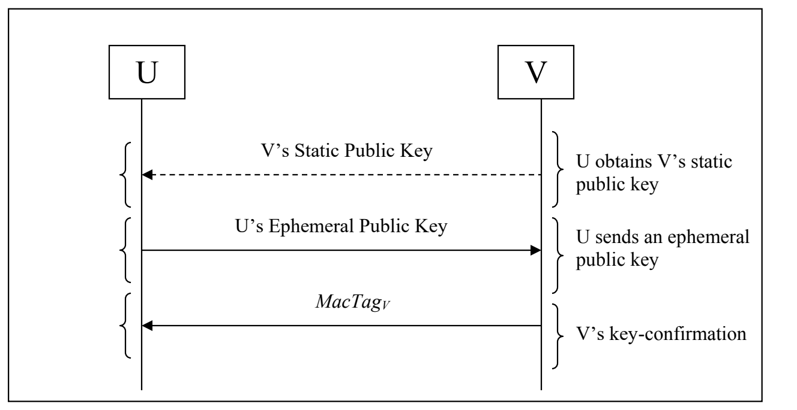
Figure 13: C(1e, 1s) scheme with unilateral key confirmation from party V to party U
図13：当事者Vから当事者Uへの一方向鍵確認を伴うC(1e, 1s)スキーム
未レビュー訳To provide (and receive) key confirmation (as described in Section 5.9.1), both parties set
Section 5.9.1で説明する鍵確認を提供（および受信）するため、両当事者は次のように設定する。
未レビュー訳\(\mathit{EphemData}_V = \mathit{Null}\), and \(\mathit{EphemData}_U = \mathit{EphemPubKey}_U\).
\(\mathit{EphemData}_V = \mathit{Null}\)、および\(\mathit{EphemData}_U = \mathit{EphemPubKey}_U\)。
Party V provides \(\mathit{MacTag}_V\) to party U (as specified in Section 5.9.1, with \(P = V\) and \(R = U\)), where \(\mathit{MacTag}_V\) is computed (as specified in Section 5.2.1) using
当事者Vは\(\mathit{MacTag}_V\)を当事者Uに提供する（Section 5.9.1の規定に従い、\(P = V\)および\(R = U\)とする）。ここで、\(\mathit{MacTag}_V\)は（Section 5.2.1の規定に従い）次を用いて計算する。
Party U (the key-confirmation recipient) uses the same format for \(\mathit{MacData}_V\) to compute its own version of \(\mathit{MacTag}_V\) and then verifies that the newly computed \(\mathit{MacTag}\) matches the value provided by V.
当事者U（鍵確認の受信者）は、\(\mathit{MacData}_V\)に同じ形式を使用して自身の\(\mathit{MacTag}_V\)を計算し、新たに計算した\(\mathit{MacTag}\)がVから提供された値と一致することを検証する。
Party V shall destroy its copy of \(\mathit{MacKey}\) immediately after computing \(\mathit{MacTag}_V\). Party U shall immediately destroy its copy of \(\mathit{MacKey}\) after determining whether or not the received and newly computed \(\mathit{MacTag}_V\) values match. If they do not match, then party U shall also destroy the \(\mathit{KeyData}\) portion of the \(\mathit{DerivedKeyingMaterial}\) (see Section 5.9.1) and notify party V that \(\mathit{MacTag}_V\) could not be verified. In this case, party V shall also destroy the \(\mathit{KeyData}\) portion of the \(\mathit{DerivedKeyingMaterial}\).
当事者Vは、自身が保持する\(\mathit{MacKey}\)の複製を、\(\mathit{MacTag}_V\)を計算した直後に破棄しなければならない。当事者Uは、自身が保持する\(\mathit{MacKey}\)の複製を、受信した値と新たに計算した\(\mathit{MacTag}_V\)の値が一致するか否かを判定した後、直ちに破棄しなければならない。一致しない場合、当事者Uはさらに\(\mathit{KeyData}\)部分（\(\mathit{DerivedKeyingMaterial}\)の一部。Section 5.9.1参照）を破棄し、\(\mathit{MacTag}_V\)を検証できなかったことを当事者Vに通知しなければならない。この場合、当事者Vも\(\mathit{KeyData}\)部分（\(\mathit{DerivedKeyingMaterial}\)の一部）を破棄しなければならない。
6.3 C(0e, 2s) Schemes
6.3 C(0e, 2s)スキーム
未レビュー訳In this category, the parties use only static key pairs. Each party obtains the other party’s static public key. A nonce, \(\mathit{Nonce}_U\), is sent by party U to party V to ensure that the derived
このカテゴリでは、当事者は静的鍵ペアのみを使用する。各当事者は相手方の静的公開鍵を取得する。ノンス\(\mathit{Nonce}_U\)を当事者Uから当事者Vに送信し、導出される
U
未レビュー訳keying material is different for each key-establishment transaction. This would be accomplished by including (a copy of) \(\mathit{Nonce}_U\) in the \(\mathit{OtherInput}\) provided to the KDM, as part of the \(\mathit{FixedInfo}\) (see Section 5.8). The parties calculate the shared secret using their own static private key and the other party’s static public key. Secret keying material is derived using the key-derivation method, the shared secret, and the nonce (see Figure 14).
鍵素材が鍵確立トランザクションごとに異なるようにする。これは、\(\mathit{Nonce}_U\)（の複製）を、KDMに渡す\(\mathit{OtherInput}\)に、\(\mathit{FixedInfo}\)の一部として含めることで実現できる（Section 5.8参照）。当事者は自身の静的秘密鍵と相手方の静的公開鍵を使って共有秘密を計算する。秘密鍵素材は鍵導出方式、共有秘密、およびノンスを用いて導出する（図14参照）。
U
未レビュー訳V
未レビュー訳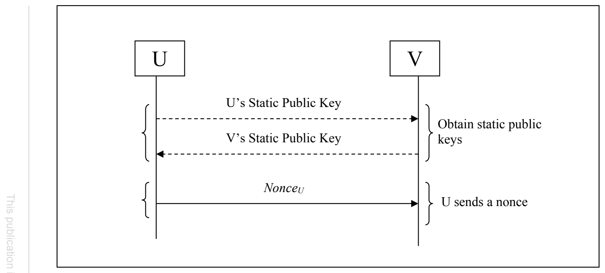
Figure 14: C(0e, 2s) schemes: each party contributes only a static key pair
図14：C(0e, 2s)スキーム：各当事者が静的鍵ペアのみを提供する
未レビュー訳Assumptions: In order to execute a C(0e, 2s) key-establishment scheme in compliance with this Recommendation, the following assumptions shall be true.
前提条件：この勧告に準拠してC(0e, 2s)鍵確立方式を実行するには、以下の前提条件が成り立っていなければならない。
1. Each party has an authentic copy of the same set of domain parameters, \(D\). These parameters are either approved for use in the intended application (see Section 5.5.1). For FFC schemes, \(D = (p, q, g\{, \mathit{SEED}, \mathit{counter}\})\); for ECC schemes, \(D = (q, \mathit{FR}, a, b\{, \mathit{SEED}\}, G, n, h)\). Furthermore, each party has assurance of the validity of these domain parameters as specified in Section 5.5.2.
1. 各当事者は同一のドメインパラメータ集合\(D\)の真正な複製を持つ。これらのパラメータは意図された用途での使用が承認されている（Section 5.5.1参照）。FFCスキームでは\(D = (p, q, g\{, \mathit{SEED}, \mathit{counter}\})\)、ECCスキームでは\(D = (q, \mathit{FR}, a, b\{, \mathit{SEED}\}, G, n, h)\)である。さらに各当事者は、Section 5.5.2に従って、これらのドメインパラメータの有効性の保証を得ている。
2. Each party has been designated as the owner of a static key pair that was generated as specified in Section 5.6.1 using the set of domain parameters, \(D\). For FFC schemes, the static key pair is \((x, y)\); for ECC schemes, the static key pair is \((d_s, Q_s)\). Each party
2. 各当事者は、ドメインパラメータ集合\(D\)を用いてSection 5.6.1に従い生成された静的鍵ペアの所有者として指定されている。FFCスキームでは静的鍵ペアは\((x, y)\)、ECCスキームでは静的鍵ペアは\((d_s, Q_s)\)である。各当事者
has obtained assurance of the validity of its own static public key as specified in Section 5.6.2.1.3. Each party has obtained assurance of its possession of the correct value for its own private key as specified in Section 5.6.2.1.5.
は、Section 5.6.2.1.3の規定に従って自身の静的公開鍵の有効性の保証を得ている。各当事者は、Section 5.6.2.1.5の規定に従って、自身の秘密鍵の正しい値を保有していることの保証を得ている。
3.3. The parties have agreed upon an approved key-derivation method (see Section 5.8), as well as an approved algorithm used with the method (e.g., a hash function) and other associated parameters to be used. In addition, the parties have agreed on the form of the nonce (see Section 5.4), which should be a random nonce.
3.3. 両当事者は、承認された鍵導出方式（Section 5.8を参照）、ならびにその方式とともに用いる承認されたアルゴリズム（例えばハッシュ関数）および使用するその他の関連パラメータについて合意している。加えて、両当事者はノンスの形式（Section 5.4を参照）について合意しており、ノンスはランダムノンスとすべきである。
4. If key confirmation is used, the parties have also agreed upon an approved MAC and associated parameters, including the lengths of \(\mathit{MacKey}\) and \(\mathit{MacTag}\) (see Section 5.9.3). If party V provides key confirmation to party U, the parties have agreed upon the form of \(\mathit{Nonce}_V\), which should be a random nonce.
4. 鍵確認を使用する場合、当事者は承認済みMACおよび関連パラメータ（\(\mathit{MacKey}\)および\(\mathit{MacTag}\)の長さを含む）にも合意している（Section 5.9.3参照）。当事者Vが当事者Uに鍵確認を提供する場合、当事者は\(\mathit{Nonce}_V\)の形式についても合意しており、これはランダムノンスであることが望ましい。
5.Prior to or during the key-agreement process, each party receives the other party’s static public key in a trusted manner (e.g., from a certificate signed by a trusted CA or directly from the other party, who is trusted by the recipient). Each party has obtained assurance of the validity of the other party’s static public key as specified in Section 5.6.2.2.1.
5.鍵共有プロセスの前または実行中に、各当事者は信頼できる方法（例：信頼されたCAが署名した証明書、または受信者が信頼する相手方から直接取得）で相手方の静的公開鍵を受信する。各当事者はSection 5.6.2.2.1に従って相手方の静的公開鍵の有効性保証を得ている。
未レビュー訳6.The recipient of a static public key has obtained assurance that its (claimed) owner is (or was) in possession of the corresponding static private key, as specified in Section 5.6.2.2.3.
6.静的公開鍵の受信者は、その（主張された）所有者が対応する静的秘密鍵を保有している（または保有していた）保証をSection 5.6.2.2.3に従って得ている。
未レビュー訳7.When an identifier is used to label a party during the key-agreement process, that identifier has a trusted association with that party’s static public key. (In other words, whenever both the identifier and static public key of one participant are employed in the key-agreement process, they are associated in a manner that is trusted by the other participant.) When an identifier is used to label a party during the key-agreement process, both parties are aware of the particular identifier employed for that purpose.
7.鍵共有プロセス中に当事者を識別する識別子を使用する場合、その識別子は当該当事者の静的公開鍵と信頼できる形で関連付けられている。つまり、識別子と参加者の静的公開鍵を両方使用する場合、それらは相手方が信頼する方法で関連付けられる。識別子を用いて当事者を識別する場合、両当事者はその目的で使用される識別子を認識している。
未レビュー訳6.3.1 dhStatic, C(0e, 2s, FFC DH) Scheme
6.3.1 dhStatic、C(0e, 2s, FFC DH)スキーム
未レビュー訳This section describes the dhStatic scheme. Assurance of secure key establishment using this scheme can only be obtained when the assumptions in Section 6.3 are true. In particular, it is assumed that party U has obtained the static public key \(y_V\) of party V, and party V has obtained the static public key \(y_U\) of party U.
この節ではdhStaticスキームを説明する。このスキームによる安全な鍵確立を保証できるのは、Section 6.3の前提条件が満たされる場合に限られる。特に、当事者Uは当事者Vの静的公開鍵\(y_V\)を取得し、当事者Vは当事者Uの静的公開鍵\(y_U\)を取得していると仮定する。
In this scheme, each party has different actions, which are presented separately below.
このスキームでは各当事者の動作が異なるため、以下に別々に示す。
未レビュー訳However, note that parties U and V must use identical orderings of the bit strings that are input to the key-derivation method.
ただし、当事者UとVは、鍵導出方式に入力するビット列の順序を同一にする必要があることに注意する。
Party U shall execute the following actions to a) establish a shared secret value \(Z\) with party V, and b) derive secret keying material from \(Z\).
当事者Uは、a) 当事者Vとの共有秘密値\(Z\)を確立し、b) \(Z\)から秘密鍵素材を導出するため、以下の動作を実行しなければならない。
Actions: Party U generates a shared secret and derives secret keying material as follows:
動作：当事者Uは次のように共有秘密を生成し、秘密鍵素材を導出する。
未レビュー訳1. Obtain a nonce, \(\mathit{Nonce}_U\) (see Section 5.4). Send \(\mathit{Nonce}_U\) to party V.
1. ノンス\(\mathit{Nonce}_U\)を取得する（Section 5.4参照）。\(\mathit{Nonce}_U\)を当事者Vに送信する。
2. Use the FFC DH primitive in Section 5.7.1.1 to derive a shared secret \(Z\) from the set of domain parameters \(D\), party U’s static private key \(x_U\), and party V’s static public key \(y_V\)
2. Section 5.7.1.1のFFC DHプリミティブを用いて、共有秘密\(Z\)を、ドメインパラメータ集合\(D\)、当事者Uの静的秘密鍵\(x_U\)、および当事者Vの静的公開鍵\(y_V\)から導出する
. If the call to the FFC DH primitive outputs an error indicator, destroy \(\mathit{Nonce}_U\), and destroy the results of all intermediate calculations used in the attempted computation of \(Z\); then output an error indicator, and exit this process without performing the remaining actions.
。FFC DHプリミティブの呼び出しがエラー標識を出力した場合、\(\mathit{Nonce}_U\)を破棄し、\(Z\)の計算試行で使用したすべての中間計算結果も破棄する。続いてエラー標識を出力し、残りの動作を実行せずにこのプロセスを終了する。
3. Use the agreed-upon key-derivation method to derive secret keying material with the specified length from the shared secret value \(Z\), \(\mathit{Nonce}_U\) and other input (see Section 5.8). If the key-derivation method outputs an error indicator, destroy all copies of \(Z\); then output an error indicator, and exit this process without performing the remaining actions.
3. 合意済みの鍵導出方式を用いて、共有秘密値\(Z\)、\(\mathit{Nonce}_U\)およびその他の入力から、指定された長さの秘密鍵素材を導出する（Section 5.8参照）。鍵導出方式がエラー標識を出力した場合、\(Z\)のすべての複製を破棄する。続いてエラー標識を出力し、残りの動作を実行せずにこのプロセスを終了する。
4. Destroy all copies of the shared secret \(Z\) and output the derived keying material.
4. 共有秘密\(Z\)のすべての複製を破棄し、導出した鍵素材を出力する。
Output: The derived keying material bits or an error indicator.
出力：導出された鍵素材のビット列またはエラー標識。
未レビュー訳Party V shall execute the following actions to a) establish a shared secret value \(Z\) with party U, and b) derive secret keying material from \(Z\). Actions: Party V derives secret keying material as follows:
当事者Vは、a) 当事者Uとの共有秘密値\(Z\)を確立し、b) \(Z\)から秘密鍵素材を導出するため、以下の動作を実行しなければならない。動作：当事者Vは次のように秘密鍵素材を導出する。
1. Obtain party U’s nonce, \(\mathit{Nonce}_U\), from party U. If \(\mathit{Nonce}_U\) is not available, then output an error indicator, and exit this process without performing the remaining actions.
1. 当事者Uのノンス\(\mathit{Nonce}_U\)を当事者Uから取得する。\(\mathit{Nonce}_U\)を取得できない場合、エラー標識を出力し、残りの動作を実行せずにこのプロセスを終了する。
2. Use the FFC DH primitive in Section 5.7.1.1 to derive a shared secret from the set of domain parameters \(D\), party V’s static private key \(x_V\), and party U’s static public key \(y_U\). If the call to the FFC DH primitive outputs an error indicator, destroy the results of all intermediate calculations used in the attempted computation of \(Z\); then output an error indicator, and exit this process without performing the remaining actions.
2. Section 5.7.1.1のFFC DHプリミティブを用いて、ドメインパラメータの集合\(D\)、当事者Vの静的秘密鍵\(x_V\)、および当事者Uの静的公開鍵\(y_U\)から共有秘密を導出する。FFC DHプリミティブの呼び出しがエラー標識を出力した場合、\(Z\)の計算試行で使用したすべての中間計算結果を破棄する。続いてエラー標識を出力し、残りの動作を実行せずにこのプロセスを終了する。
3. Use the agreed-upon key-derivation method to derive secret keying material with the specified length from the shared secret value \(Z\), \(\mathit{Nonce}_U\), and other input (see Section 5.8). If the key-derivation method outputs an error indicator, destroy all copies of \(Z\); then output an error indicator, and exit this process without performing the remaining action.
3. 合意済みの鍵導出方式を用いて、共有秘密値\(Z\)、\(\mathit{Nonce}_U\)、およびその他の入力から、指定された長さの秘密鍵素材を導出する（Section 5.8参照）。鍵導出方式がエラー標識を出力した場合、\(Z\)のすべての複製を破棄する。続いてエラー標識を出力し、残りの動作を実行せずにこのプロセスを終了する。
4. Destroy all copies of the shared secret \(Z\) and output the derived keying material.
4. 共有秘密\(Z\)のすべての複製を破棄し、導出した鍵素材を出力する。
Output: The derived keying material or an error indicator.
出力：導出された鍵素材またはエラー標識。
Note: Key confirmation can be incorporated into this scheme. See Section 6.3.3 for details.
注：このスキームには鍵確認を組み込むことができる。詳細はSection 6.3.3を参照。
未レビュー訳dhStatic is summarized in Table 21.
dhStaticを表21に要約する。
未レビュー訳Table 21: dhStatic key-agreement scheme summary
表21：dhStatic鍵共有スキームの要約
未レビュー訳| Party U | Party V | |
| Domain | \((p, q, g\{, \mathit{SEED}, \mathit{counter}\})\) | \((p, q, g\{, \mathit{SEED}, \mathit{counter}\})\) |
| parameters | ||
| Static data | Static private key \(x_U\) Static public key \(y_U\) | Static private key \(x_V\) Static public key \(y_V\) |
| Ephemeral | \(\mathit{Nonce}_U\) | |
| data | ||
| Computation | Compute \(Z\) by calling FFC DH using \(x_U\), and \(y_V\) | Compute \(Z\) by calling FFC DH using \(x_V\), and \(y_U\) |
| Derive secret keying material | 1. Compute \(\mathit{DerivedKeyingMaterial}\) using \(Z\) and \(\mathit{Nonce}_U\) 2. Destroy \(Z\) | 1. Compute \(\mathit{DerivedKeyingMaterial}\) using \(Z\) and \(\mathit{Nonce}_U\) 2. Destroy \(Z\) |
| 当事者U | 当事者V | |
| ドメイン | \((p, q, g\{, \mathit{SEED}, \mathit{counter}\})\) | \((p, q, g\{, \mathit{SEED}, \mathit{counter}\})\) |
| パラメータ | ||
| 静的データ | 静的秘密鍵 \(x_U\) 静的公開鍵 \(y_U\) | 静的秘密鍵 \(x_V\) 静的公開鍵 \(y_V\) |
| エフェメラル | \(\mathit{Nonce}_U\) | |
| データ | ||
| 計算 | FFC DHを呼び出して\(Z\)を計算する。使用する値：\(x_U\)、\(y_V\) | FFC DHを呼び出して\(Z\)を計算する。使用する値：\(x_V\)、\(y_U\) |
| 秘密鍵素材の導出 | 1. \(\mathit{DerivedKeyingMaterial}\)を計算する。使用する値：\(Z\)、\(\mathit{Nonce}_U\) 2. \(Z\)を破棄する | 1. \(\mathit{DerivedKeyingMaterial}\)を計算する。使用する値：\(Z\)、\(\mathit{Nonce}_U\) 2. \(Z\)を破棄する |
原本PDFの抜粋画像
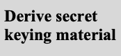
6.3.2 (Cofactor) Static Unified Model, \(\mathrm{C(0e, 2s, ECC\ CDH)}\) Scheme
6.3.2 （コファクタ）Static Unified Model、\(\mathrm{C(0e, 2s, ECC\ CDH)}\)スキーム
This section describes the Static Unified Model scheme. Assurance of secure key establishment using this scheme can only be obtained when the assumptions in Section 6.3 are true. In particular, it is assumed that party U has obtained the static public key \(Q_{s,V}\) of party V, and party V has obtained the static public key \(Q_{s,U}\) of party U.
この節ではStatic Unified Modelスキームを説明する。このスキームによる安全な鍵確立を保証できるのは、Section 6.3の前提条件が満たされる場合に限られる。特に、当事者Uは当事者Vの静的公開鍵\(Q_{s,V}\)を取得しており、当事者Vは当事者Uの静的公開鍵\(Q_{s,U}\)を取得していると仮定する。
In this scheme, each party has different actions, which are presented separately below. However, note that parties U and V must use identical orderings of the bit strings that are input to the key-derivation method.
このスキームでは各当事者の動作が異なるため、以下に別々に示す。ただし、当事者UとVは鍵導出方式に入力するビット列の順序を同一にしなければならない。
未レビュー訳Party U shall execute the following actions to a) establish a shared secret value \(Z\) with party V, and b) derive secret keying material from \(Z\). Actions: Party U generates a shared secret and derives secret keying material as follows:
当事者Uは、a) 当事者Vとの共有秘密値\(Z\)を確立し、b) \(Z\)から秘密鍵素材を導出するため、以下の動作を実行しなければならない。動作：当事者Uは次のように共有秘密を生成し、秘密鍵素材を導出する。
1. Obtain a nonce, \(\mathit{Nonce}_U\) (see Section 5.4). Send \(\mathit{Nonce}_U\) to party V.
1. ノンス\(\mathit{Nonce}_U\)を取得する（Section 5.4参照）。\(\mathit{Nonce}_U\)を当事者Vに送信する。
2. Use the ECC CDH primitive in Section 5.7.1.2 to derive a shared secret \(Z\) from the set of domain parameters \(D\), party U’s static private key \(d_{s,U}\), and party V’s static public key \(Q_{s,V}\). If the call to the ECC CDH primitive outputs an error indicator, destroy the results of all intermediate calculations used in the attempted computation of \(Z\); then output an error indicator, and exit this process without performing the remaining actions.
2. Section 5.7.1.2のECC CDHプリミティブを用いて、共有秘密\(Z\)を、ドメインパラメータの集合\(D\)、当事者Uの静的秘密鍵\(d_{s,U}\)、および当事者Vの静的公開鍵\(Q_{s,V}\)から導出する。ECC CDHプリミティブの呼び出しがエラー標識を出力した場合、\(Z\)の計算試行で使用したすべての中間計算結果を破棄する。続いてエラー標識を出力し、残りの動作を実行せずにこのプロセスを終了する。
3. Use the agreed-upon key-derivation method to derive secret keying material with the specified length from the shared secret value \(Z\), \(\mathit{Nonce}_U\), and other input (see Section 5.8). If the key-derivation method outputs an error indicator, destroy all copies of \(Z\);
3. 合意済みの鍵導出方式を用いて、共有秘密値\(Z\)、\(\mathit{Nonce}_U\)、およびその他の入力から、指定された長さの秘密鍵素材を導出する（Section 5.8参照）。鍵導出方式がエラー標識を出力した場合、\(Z\)のすべての複製を破棄し、
then output an error indicator, and exit this process without performing the remaining actions.
その後、エラー標識を出力し、残りの動作を実行せずにこのプロセスを終了する。
4. Destroy \(\mathit{Nonce}_U\) and all copies of the shared secret \(Z\).
4. \(\mathit{Nonce}_U\)および共有秘密\(Z\)のすべての複製を破棄する。
5.Output the derived keying material.
5.導出した鍵素材を出力する。
未レビュー訳Output: The derived keying material or an error indicator.
出力：導出された鍵素材またはエラー標識。
未レビュー訳Party V shall execute the following actions to a) establish a shared secret value \(Z\), with party U, and b) derive secret keying material from \(Z\).
当事者Vは、a) 当事者Uとの共有秘密値\(Z\)を確立し、b) \(Z\)から秘密鍵素材を導出するため、以下の動作を実行しなければならない。
Actions: Party V derives secret keying material as follows:
動作：当事者Vは次のように秘密鍵素材を導出する。
未レビュー訳1. Obtain party U’s nonce, \(\mathit{Nonce}_U\), from party U. If \(\mathit{Nonce}_U\) is not available, then output an error indicator, and exit this process without performing the remaining actions.
1. 当事者Uのノンス\(\mathit{Nonce}_U\)を当事者Uから取得する。\(\mathit{Nonce}_U\)を取得できない場合、エラー標識を出力し、残りの動作を実行せずにこのプロセスを終了する。
2. Use the ECC CDH primitive in Section 5.7.1.2 to derive a shared secret \(Z\) from the set of domain parameters \(D\), party V’s static private key \(d_{s,V}\), and party U’s static public key \(Q_{s,U}\). If the call to the ECC CDH primitive outputs an error indicator, destroy the results of all intermediate calculations used in the attempted computation of \(Z\); then output an error indicator, and exit this process without performing the remaining actions.
2. Section 5.7.1.2のECC CDHプリミティブを用いて、共有秘密\(Z\)を、ドメインパラメータ集合\(D\)、当事者Vの静的秘密鍵\(d_{s,V}\)および当事者Uの静的公開鍵\(Q_{s,U}\)から導出する。ECC CDHプリミティブの呼び出しがエラー標識を出力した場合、\(Z\)の計算試行で使用したすべての中間計算結果を破棄し、エラー標識を出力して、残りの動作を実行せずにこのプロセスを終了する。
3. Use the agreed-upon key-derivation method to derive secret keying material with the specified length from the shared secret value \(Z\), \(\mathit{Nonce}_U\), and other input (see Section 5.8). If the key-derivation method outputs an error indicator, destroy all copies of \(Z\); then output an error indicator, and exit this process without performing the remaining action.
3. 合意済みの鍵導出方式を用いて、共有秘密値\(Z\)、\(\mathit{Nonce}_U\)およびその他の入力から指定された長さの秘密鍵素材を導出する（Section 5.8参照）。鍵導出方式がエラー標識を出力した場合、\(Z\)のすべての複製を破棄し、エラー標識を出力して、残りの動作を実行せずにこのプロセスを終了する。
4. Destroy all copies of the shared secret \(Z\) and output the derived keying material.
4. 共有秘密\(Z\)のすべての複製を破棄し、導出した鍵素材を出力する。
Output: The derived keying material or an error indicator.
出力：導出された鍵素材またはエラー標識。
未レビュー訳Note: Key confirmation can be incorporated into this scheme. See Section 6.3.3 for details. Static Unified Model is summarized in Table 22. Table 22: Static unified model key-agreement scheme summary
注：このスキームには鍵確認を組み込むことができる。詳細はSection 6.3.3を参照。Static Unified Modelを表22に要約する。表22：Static Unified Model鍵共有スキームの要約
未レビュー訳| Party U | Party V | |
| Domain | \((q, \mathit{FR}, a, b\{, \mathit{SEED}\}, G, n, h)\) | \((q, \mathit{FR}, a, b\{, \mathit{SEED}\}, G, n, h)\) |
| parameters | ||
| Static data | Static private key \(d_{s,U}\) Static public key \(Q_{s,U}\) | Static private key \(d_{s,V}\) Static public key \(Q_{s,V}\) |
| Ephemeral data | \(\mathit{Nonce}_U\) | |
| Computation | Compute \(Z\) by calling ECC CDH using \(d_{s,U}\), and \(Q_{s,V}\) | Compute \(Z\) by calling ECC CDH using \(d_{s,V}\), and \(Q_{s,U}\) |
| Derive secret keying material | 1. Compute \(\mathit{DerivedKeyingMaterial}\) using \(\mathit{Nonce}_U\) 2. Destroy \(Z\) | 1. Compute \(\mathit{DerivedKeyingMaterial}\) using \(\mathit{Nonce}_U\) 2. Destroy \(Z\) |
| 当事者U | 当事者V | |
| ドメイン | \((q, \mathit{FR}, a, b\{, \mathit{SEED}\}, G, n, h)\) | \((q, \mathit{FR}, a, b\{, \mathit{SEED}\}, G, n, h)\) |
| パラメータ | ||
| 静的データ | 静的秘密鍵 \(d_{s,U}\) 静的公開鍵 \(Q_{s,U}\) | 静的秘密鍵 \(d_{s,V}\) 静的公開鍵 \(Q_{s,V}\) |
| エフェメラルデータ | \(\mathit{Nonce}_U\) | |
| 計算 | \(Z\)を、ECC CDHを呼び出して\(d_{s,U}\)および\(Q_{s,V}\)を用いて計算する | \(Z\)を、ECC CDHを呼び出して\(d_{s,V}\)および\(Q_{s,U}\)を用いて計算する |
| 秘密鍵素材の導出 | 1. \(\mathit{DerivedKeyingMaterial}\)を\(\mathit{Nonce}_U\)を用いて計算する 2. \(Z\)を破棄する | 1. \(\mathit{DerivedKeyingMaterial}\)を\(\mathit{Nonce}_U\)を用いて計算する 2. \(Z\)を破棄する |
原本PDFの抜粋画像
6.3.3 Incorporating Key Confirmation into a C(0e, 2s) Scheme
6.3.3 C(0e, 2s)スキームへの鍵確認の組み込み
The subsections that follow illustrate how to incorporate key confirmation (as described in Section 5.9) into the C(0e, 2s) key-agreement schemes described above. Note that party V cannot act as a key confirmation unless a nonce (\(\mathit{Nonce}_V\)) is provided by party V to party U and is used (in addition to the shared secret \(Z\)) as input to the key-derivation method employed by the scheme. This would be accomplished by including (a copy of) \(\mathit{Nonce}_V\) in the \(\mathit{OtherInput}\) provided to the KDM, as part of the \(\mathit{FixedInfo}\) (see Section 5.8), in addition to using (a copy of) \(\mathit{Nonce}_V\) as the \(\mathit{EphemData}_V\) employed in the \(\mathit{MacTag}\) computations for key confirmation.
以下の各節では、Section 5.9で説明する鍵確認を前述のC(0e, 2s)鍵共有スキームに組み込む方法を示す。なお当事者Vは、ノンス（\(\mathit{Nonce}_V\)）が当事者Vから当事者Uに提供され、かつスキームが用いる鍵導出方式への入力として（共有秘密\(Z\)に加えて）使用される場合を除き、鍵確認として機能できない。これは、\(\mathit{Nonce}_V\)（の複製）を、KDMに与える\(\mathit{OtherInput}\)に\(\mathit{FixedInfo}\)の一部として含め（Section 5.8参照）、加えて\(\mathit{Nonce}_V\)（の複製）を\(\mathit{EphemData}_V\)として、鍵確認のための\(\mathit{MacTag}\)計算で使用することで実現される。
The flow depictions separate the key-establishment flow from the key-confirmation flow.
フロー図では鍵確立の流れと鍵確認の流れを分けている。
The depictions and accompanying discussions presume that the assumptions of the scheme
図および付随する説明は、スキームの前提条件が
未レビュー訳have been satisfied, that the key-agreement transaction has proceeded successfully through key derivation, and that the received \(\mathit{MacTags}\) are successfully verified as specified in Section 5.2.2.
満たされており、鍵共有トランザクションが鍵導出まで正常に進行し、受信した\(\mathit{MacTags}\)がSection 5.2.2の規定どおり正常に検証されていること、
6.3.3.1 C(0e, 2s) Scheme with Unilateral Key Confirmation Provided by Party
6.3.3.1 当事者Uから当事者Vへの一方向鍵確認を伴うC(0e, 2s)スキーム
未レビュー訳U to Party V
当事者Uから当事者Vへの
未レビュー訳Figure 15 depicts a typical flow for a C(0e, 2s) scheme with unilateral key confirmation from party U to party V. In this scenario, party U and party V assume the roles of key-confirmation provider and recipient, respectively. A nonce (\(\mathit{Nonce}_V\)) shall be provided by party V to party U and used (in addition to the shared secret \(Z\) and the nonce provided by
図15は、当事者Uから当事者Vへの一方向鍵確認を伴うC(0e, 2s)スキームの典型的なフローを示す。この場合、当事者Uと当事者Vはそれぞれ鍵確認の提供者および受信者の役割を担う。ノンス（\(\mathit{Nonce}_V\)）は、当事者Vから当事者Uへ提供しなければならず、（共有秘密 \(Z\) および、次が提供するノンス
party V to party U and used (in addition to the shared secret \(Z\) and the nonce provided by party U) as input to the key-derivation method employed by the scheme. \(\mathit{Nonce}_V\) is also used as the \(\mathit{EphemData}_V\) during \(\mathit{MacTag}\) computations. The successful completion of the key-confirmation process provides party V with assurance that party U has derived the same secret \(Z\) value. If \(\mathit{Nonce}_V\) is a random nonce, then party V also obtains assurance that party U has actively participated in the process; see Section 5.4 for a discussion of the length and security strength required for the nonce.
当事者Vから当事者Uへ提供し、（共有秘密\(Z\)および当事者Uが提供するノンスに加えて）方式が用いる鍵導出方式への入力として使用する。\(\mathit{Nonce}_V\)は、\(\mathit{EphemData}_V\)として\(\mathit{MacTag}\)の計算時にも使用する。鍵確認プロセスが正常に完了すると、当事者Vは、当事者Uが同じ秘密値\(Z\)を導出したという保証を得る。\(\mathit{Nonce}_V\)がランダムノンスである場合、当事者Vは、当事者Uがプロセスに能動的に参加したという保証も得る。ノンスに必要な長さとセキュリティ強度の議論についてはSection 5.4を参照。
U
未レビュー訳V
未レビュー訳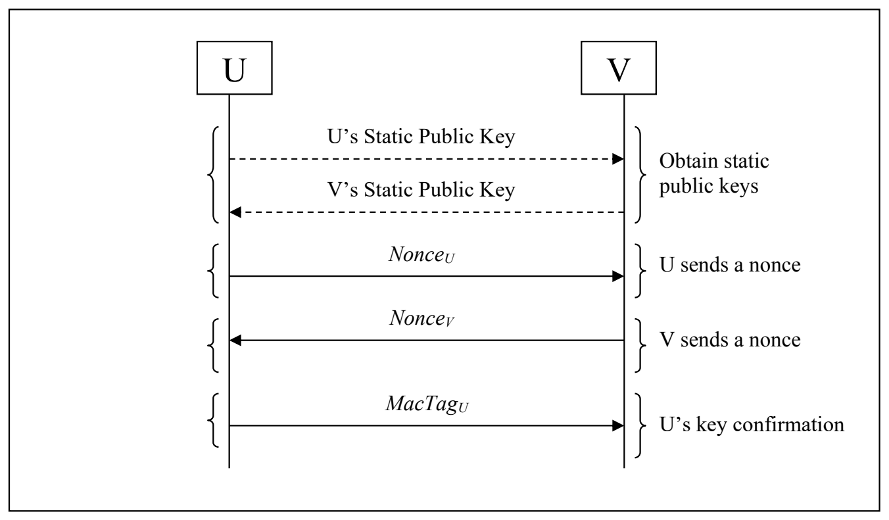
Figure 15: C(0e, 2s) scheme with unilateral key confirmation from party U to party V
図15：当事者Uから当事者Vへの一方向鍵確認を伴うC(0e, 2s)スキーム
未レビュー訳To provide (and receive) key confirmation (as described in Section 5.9.1), party U (and party V) set
Section 5.9.1で説明する鍵確認を提供（および受信）するため、当事者U（および当事者V）は次のように設定する。
Party U provides \(\mathit{MacTag}_U\) to party V (as specified in Section 5.9.1, with \(P = U\) and \(R = V\)), where \(\mathit{MacTag}_U\) is computed (as specified in Section 5.2.1) using
当事者Uは \(\mathit{MacTag}_U\) を（Section 5.9.1に規定するとおり、\(P = U\) および \(R = V\) として）当事者Vに提供する。ここで \(\mathit{MacTag}_U\) は（Section 5.2.1に規定するとおり）次を用いて計算する。
Party V (the key-confirmation recipient) uses the same format for \(\mathit{MacData}_U\) to compute its own version of \(\mathit{MacTag}_U\) and then verifies that the newly computed \(\mathit{MacTag}\) matches the value provided by party U.
当事者V（鍵確認の受信者）は、\(\mathit{MacData}_U\) に同じ形式を用いて \(\mathit{MacTag}_U\) の自身の値を計算し、新たに計算した \(\mathit{MacTag}\) が当事者Uの提供した値と一致することを検証する。
Party U shall destroy its copy of \(\mathit{MacKey}\) immediately after computing \(\mathit{MacTag}_U\). Party V shall immediately destroy its copy of \(\mathit{MacKey}\) after determining whether or not the received and newly computed \(\mathit{MacTag}_U\) values match. If they do not match, then party V shall also destroy the \(\mathit{KeyData}\) portion of the \(\mathit{DerivedKeyingMaterial}\) (see Section 5.9.1) and notify party U that \(\mathit{MacTag}_U\) could not be verified. In this case, party U shall also destroy the
当事者Uは、\(\mathit{MacKey}\) の複製を、\(\mathit{MacTag}_U\) を計算した直後に破棄しなければならない。当事者Vは、\(\mathit{MacKey}\) の複製を、受信した \(\mathit{MacTag}_U\) の値と新たに計算した値が一致するか否かを判定した後、直ちに破棄しなければならない。一致しない場合、当事者Vはさらに、\(\mathit{KeyData}\) 部分（\(\mathit{DerivedKeyingMaterial}\) の一部。Section 5.9.1参照）を破棄し、\(\mathit{MacTag}_U\) を検証できなかったことを当事者Uに通知しなければならない。この場合、当事者Uも次を破棄しなければならない：
\(\mathit{KeyData}\) portion of the \(\mathit{DerivedKeyingMaterial}\).
\(\mathit{KeyData}\)部分（\(\mathit{DerivedKeyingMaterial}\)内）。
6.3.3.2 C(0e, 2s) Scheme with Unilateral Key Confirmation Provided by Party
6.3.3.2 当事者Vから当事者Uへの一方向鍵確認を伴うC(0e, 2s)スキーム
未レビュー訳V to Party U
当事者U
未レビュー訳Figure_16 depicts a typical flow for a C(0e, 2s) scheme with unilateral key confirmation from party V to party U. In this situation, party V and party U assume the roles of key-confirmation provider and recipient, respectively. The successful completion of the key-confirmation process provides party U with assurance that party V has derived the same secret \(Z\) value; if \(\mathit{Nonce}_U\) is a random nonce, then party U also obtains assurance that party V has actively participated in the process; see Section 5.4 for a discussion of the length and security strength required for the nonce.
図16は当事者Vから当事者Uへの一方向鍵確認を伴うC(0e, 2s)スキームの典型的なフローを示す。この場合、当事者Vと当事者Uはそれぞれ鍵確認提供者および受信者の役割を担う。鍵確認プロセスが正常に完了すると、当事者Uは当事者Vが同じ秘密値\(Z\)を導出した保証を得る。\(\mathit{Nonce}_U\)がランダムノンスの場合、当事者Uはさらに当事者Vがプロセスに能動的に参加した保証を得る。ノンスに必要な長さとセキュリティ強度についてはSection 5.4を参照。
U
未レビュー訳V
未レビュー訳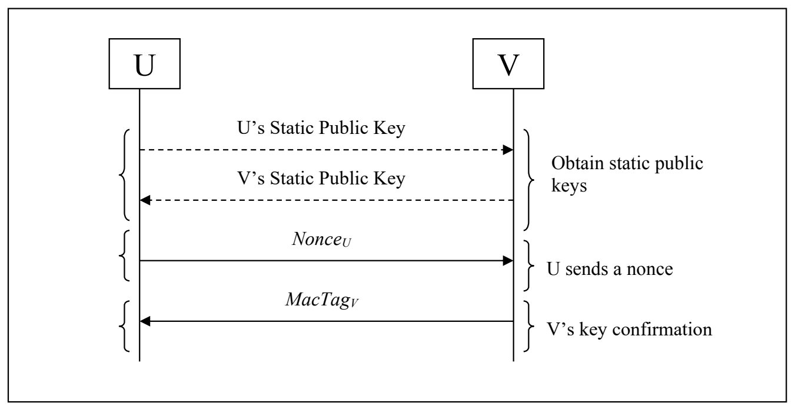
Figure 16: C(0e, 2s) scheme with unilateral key confirmation from party V to party U
図16：当事者Vから当事者Uへの一方向鍵確認を伴うC(0e, 2s)スキーム
未レビュー訳To provide (and receive) key confirmation (as described in Section 5.9.1), both parties set
Section 5.9.1で説明する鍵確認を提供（および受信）するため、両当事者は次のように設定する。
未レビュー訳Party V provides \(\mathit{MacTag}_V\) to party U (as specified in 5.9.1, with \(P = V\) and \(R = U\)), where \(\mathit{MacTag}_V\) is computed (as specified in Section 5.2.1) using
当事者Vは\(\mathit{MacTag}_V\)を当事者Uに提供する（5.9.1に規定するとおり、\(P = V\)および\(R = U\)として）。\(\mathit{MacTag}_V\)は（Section 5.2.1に規定するとおり）次を用いて計算する。
Party U (the key-confirmation recipient) uses the same format for \(\mathit{MacData}_V\) to compute its own version of \(\mathit{MacTag}_V\), and then verifies that the newly computed \(\mathit{MacTag}\) matches the value provided by party V.
当事者U（鍵確認の受信者）は\(\mathit{MacData}_V\)に同じ形式を使用して自身の\(\mathit{MacTag}_V\)を計算し、新たに計算した\(\mathit{MacTag}\)が当事者Vから提供された値と一致することを検証する。
Party V shall destroy its copy of \(\mathit{MacKey}\) immediately after computing \(\mathit{MacTag}_V\). Party U shall immediately destroy its copy of \(\mathit{MacKey}\) after determining whether or not the received and newly computed \(\mathit{MacTag}_V\) values match. If they do not match, then party U shall also destroy the \(\mathit{KeyData}\) portion of the \(\mathit{DerivedKeyingMaterial}\) (see Section 5.9.1) and notify party V that \(\mathit{MacTag}_V\) could not be verified. In this case, party V shall also destroy the \(\mathit{KeyData}\) portion of the \(\mathit{DerivedKeyingMaterial}\).
当事者Vは、\(\mathit{MacKey}\)の複製を\(\mathit{MacTag}_V\)の計算直後に破棄しなければならない。当事者Uは、\(\mathit{MacKey}\)の複製を、受信した\(\mathit{MacTag}_V\)値と新たに計算した値が一致するか否かを判定した後、直ちに破棄しなければならない。一致しない場合、当事者Uはさらに\(\mathit{KeyData}\)部分（\(\mathit{DerivedKeyingMaterial}\)内。Section 5.9.1参照）を破棄し、\(\mathit{MacTag}_V\)を検証できなかったことを当事者Vに通知しなければならない。この場合、当事者Vも\(\mathit{KeyData}\)部分（\(\mathit{DerivedKeyingMaterial}\)内）を破棄しなければならない。
6.3.3.3 C(0e, 2s) Scheme with Bilateral Key Confirmation
6.3.3.3 双方向鍵確認を伴うC(0e, 2s)スキーム
未レビュー訳Figure_17 depicts a typical flow for a C(0e, 2s) scheme with bilateral key confirmation. In this method, party U and party V assume the roles of both the provider and the recipient in order to obtain bilateral key confirmation. A nonce (\(\mathit{Nonce}_V\)) shall be provided by party V to party U and used (in addition to the shared secret \(Z\) and the nonce, \(\mathit{Nonce}_U\), provided by party U) as input to the key-derivation method employed by the scheme. \(\mathit{Nonce}_V\) is also used as the \(\mathit{EphemData}_V\) during \(\mathit{MacTag}\) computations. The successful completion of the key-confirmation process provides each party with assurance that the other party has derived the same secret \(Z\) value. If \(\mathit{Nonce}_U\) is a random nonce, then party U obtains assurance that party V has actively participated in the process; if \(\mathit{Nonce}_V\) is a random nonce, then party V obtains assurance that party U has actively participated in the process. See Section 5.4 for a discussion about the length and security strength required for the nonce.
Figure_17は、双方向鍵確認を伴うC(0e, 2s)方式の典型的なフローを示す。この方法では、双方向鍵確認を得るために、当事者Uと当事者Vが提供者と受領者の両方の役割を担う。ノンス（\(\mathit{Nonce}_V\)）は、当事者Vから当事者Uへ提供し、（共有秘密\(Z\)および当事者Uが提供するノンス\(\mathit{Nonce}_U\)に加えて）方式が用いる鍵導出方式への入力として使用しなければならない。\(\mathit{Nonce}_V\)は、\(\mathit{EphemData}_V\)として\(\mathit{MacTag}\)の計算時にも使用する。鍵確認プロセスが正常に完了すると、各当事者は、相手の当事者が同じ秘密値\(Z\)を導出したという保証を得る。\(\mathit{Nonce}_U\)がランダムノンスである場合、当事者Uは、当事者Vがプロセスに能動的に参加したという保証を得る。\(\mathit{Nonce}_V\)がランダムノンスである場合、当事者Vは、当事者Uがプロセスに能動的に参加したという保証を得る。ノンスに必要な長さとセキュリティ強度の議論についてはSection 5.4を参照。
U
未レビュー訳V
未レビュー訳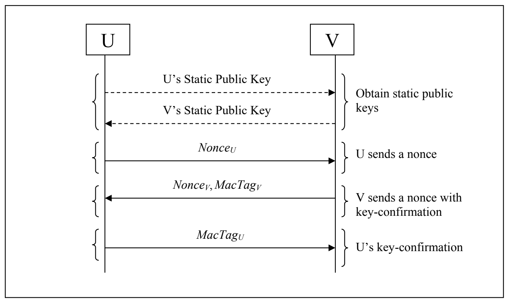
Figure 17: C(0e, 2s) scheme with bilateral key confirmation
図17：双方向鍵確認を伴うC(0e, 2s)スキーム
未レビュー訳To provide bilateral key confirmation (as described in Section 5.9.2), party U and party V exchange and verify \(\mathit{MacTag}\)s that have been computed (as specified in Section 5.2.1) using
双方向鍵確認（Section 5.9.2で説明）を提供するため、当事者Uと当事者Vは、次を用いて（Section 5.2.1の規定どおりに）計算した\(\mathit{MacTag}\)を交換し、検証する。
Party V provides \(\mathit{MacTag}_V\) to party U (as specified in Sections 5.9.1 and 5.9.2, with \(P = V\) and \(R = U\)); \(\mathit{MacTag}_V\) is computed by party V (and verified by party U) using
当事者Vは\(\mathit{MacTag}_V\)を当事者Uに提供する（Section 5.9.1および5.9.2の規定どおり、\(P = V\)、\(R = U\)とする）。\(\mathit{MacTag}_V\)は、次を用いて当事者Vが計算する（当事者Uが検証する）。
Party U provides \(\mathit{MacTag}_U\) to party V (as specified in Sections 5.9.1 and 5.9.2, with \(P = U\) and \(R = V\)); \(\mathit{MacTag}_U\) is computed by party U (and verified by party V) using
当事者Uは\(\mathit{MacTag}_U\)を当事者Vに提供する（Section 5.9.1および5.9.2の規定どおり、\(P = U\)、\(R = V\)とする）。\(\mathit{MacTag}_U\)は、次を用いて当事者Uが計算する（当事者Vが検証する）。
Note that in Figure 17, party V’s nonce (\(\mathit{Nonce}_V\)) and the \(\mathit{MacTag}\) (\(\mathit{MacTag}_V\)) are depicted as being sent in the same message (to reduce the number of passes in the combined key-agreement/key-confirmation process). They can also be sent in other orders and combinations (as long as \(\mathit{Nonce}_U\) and \(\mathit{Nonce}_V\) are available to generate and verify both MAC tags).
図17では、当事者Vのノンス（\(\mathit{Nonce}_V\)）と\(\mathit{MacTag}\)（\(\mathit{MacTag}_V\)）が、（鍵共有と鍵確認を組み合わせた処理のパス数を減らすため）同一のメッセージで送信されるものとして描かれていることに注意する。これらは、（\(\mathit{Nonce}_U\)と\(\mathit{Nonce}_V\)が両方のMACタグの生成と検証に利用できる限り）別の順序や組合せで送信することもできる。
Each party shall destroy its copy of \(\mathit{MacKey}\) immediately after 1) using it to generate a MAC tag to be sent to the other party and 2) determining whether or not the MAC tag received from the other party matches the MAC tag that it computed. However, if either party is not able to verify the received MAC tag, that party shall also destroy the \(\mathit{KeyData}\) portion of the \(\mathit{DerivedKeyingMaterial}\) (see Section 5.9.1) and notify the other party of the failure. In this case, the other party shall destroy both the \(\mathit{MacKey}\) (if it has not already done so) as well as the \(\mathit{KeyData}\) portion of the \(\mathit{DerivedKeyingMaterial}\).
各当事者は、\(\mathit{MacKey}\)の複製を、1) 相手方に送信するMACタグの生成に使用し、2) 相手方から受信したMACタグが自身で計算したMACタグと一致するか否かを判定した後、直ちに破棄しなければならない。ただし、いずれかの当事者が受信したMACタグを検証できない場合、その当事者は\(\mathit{KeyData}\)部分（\(\mathit{DerivedKeyingMaterial}\)の一部。Section 5.9.1参照）も破棄し、失敗を相手方に通知しなければならない。この場合、相手方は\(\mathit{MacKey}\)（まだ破棄していない場合）に加えて、\(\mathit{KeyData}\)部分（\(\mathit{DerivedKeyingMaterial}\)の一部）も破棄しなければならない。
7. Rationale for Selecting a Specific Scheme
7. 特定のスキームを選択する根拠
未レビュー訳The subsections that follow present possible justifications for selecting schemes from each subcategory, \(\mathrm{C}(i\mathrm{e}, j\mathrm{s})\). The proffered rationales are intended to provide the user and/or developer with some information that may help when deciding the key-agreement scheme to be used. The rationales include brief discussions of basic security properties, but do not constitute an in-depth analysis of all possible security properties of all schemes under all adversary models. The specific security properties that are cited will depend on such considerations as whether a static key is used, whether an ephemeral key is used, how the shared secret is calculated, and whether key confirmation can be incorporated into a scheme. In general, the security properties cited for a subcategory of schemes are exhibited by each scheme within that subcategory; when this is not the case, the exceptions are identified.
以下の各節では、各サブカテゴリ\(\mathrm{C}(i\mathrm{e}, j\mathrm{s})\)からスキームを選択する際に考えられる根拠を示す。これらの根拠は、使用する鍵共有スキームを決める際に利用者および／または開発者の参考となる情報を提供することを意図している。基本的なセキュリティ特性について簡潔に説明するが、あらゆる敵対者モデルの下で、すべてのスキームが持ち得るすべてのセキュリティ特性を詳細に分析するものではない。取り上げる特性は、静的鍵やエフェメラル鍵の使用、共有秘密の計算方法、スキームへの鍵確認の組込み可否などに左右される。一般に、あるサブカテゴリのスキームに挙げられた特性はそのサブカテゴリ内の各スキームに当てはまる。例外がある場合は明示する。
A scheme should not be chosen based solely on the number of security properties it may possess. Rather, a scheme should be selected based on how well the scheme fulfills system requirements. For instance, if messages are exchanged over a large-scale network where each exchange consumes a considerable amount of time, a scheme with fewer exchanges during a single key-agreement transaction might be preferable to a scheme with more exchanges, even though the latter may possess more security benefits. It is important to keep in mind that a key-agreement scheme may be a component of a larger protocol that offers additional security-related assurances beyond those provided by the key-agreement scheme alone. For example, the protocol may include specific features that limit opportunities for accidental or intentional misuse of the key-agreement component of the protocol. Protocols, per se, are not specified in this Recommendation.
方式は、それが備え得るセキュリティ特性の数だけに基づいて選択すべきではない。むしろ、方式がシステム要件をどの程度満たすかに基づいて選択するのがよい。例えば、1回の交換にかなりの時間を要する大規模ネットワーク上でメッセージを交換する場合、後者のほうがセキュリティ上の利点を多く備えるとしても、1回の鍵共有トランザクション中の交換回数が少ない方式のほうが、交換回数が多い方式よりも望ましいことがある。鍵共有方式は、鍵共有方式単独で提供される保証を超える、セキュリティに関する追加の保証を提供する、より大きなプロトコルの一構成要素であり得ることを念頭に置くことが重要である。例えば、プロトコルには、そのプロトコルの鍵共有構成要素が偶発的または意図的に誤用される機会を制限する特定の機能が含まれることがある。プロトコルそのものは、この勧告では規定しない。
Important Note: In order to provide concise descriptions of security properties possessed by the various schemes, it is necessary to make some assumptions concerning the format and type of data that is used as input during key derivation. These assumptions are made solely for the purposes of Sections 7.1 through 7.5; they are not intended to preclude the options specified elsewhere in this Recommendation. When discussing the security properties of a subcategory of schemes, it is assumed that the \(\mathit{FixedInfo}\) input to a key-derivation method employed during a particular key-agreement transaction uses either the concatenation format or the ASN.1 format (see Sections 5.8.2.1.1 and 5.8.2.1.2). It is also assumed that \(\mathit{FixedInfo}\)
重要な注記：各種の方式が備えるセキュリティ特性を簡潔に記述するには、鍵導出時に入力として使用するデータの形式と種類について、いくつかの前提を置く必要がある。これらの前提はSection 7.1から7.5の目的のためだけに置くものであり、この勧告の他の箇所で規定する選択肢を排除することを意図していない。方式のサブカテゴリのセキュリティ特性を論じる際には、特定の鍵共有トランザクションで用いる鍵導出方式への\(\mathit{FixedInfo}\)入力が、連結形式またはASN.1形式のいずれかを使用すると仮定する（Section 5.8.2.1.1および5.8.2.1.2を参照）。また、\(\mathit{FixedInfo}\)は
includes sufficiently specific identifiers for the participants in the transaction, an identifier for the key-agreement scheme being used during the transaction, and additional input (e.g., a nonce, ephemeral public key, and/or session identifier) that may provide assurance to one or both participants that the derived keying material will reflect the specific context in which the transaction occurs (see Section 5.8.2 and Appendix B for further discussion concerning context-specific information that may be appropriate for inclusion in \(\mathit{FixedInfo}\)). In general, \(\mathit{FixedInfo}\) may include pre-shared secrets, but that is not assumed to be the case in the analysis of security properties that follows. In cases where an approved extraction-then-expansion key-derivation procedure is employed (see SP 800-56C), it is assumed that this \(\mathit{FixedInfo}\) is used as the \(\mathit{Context}\) input during the key-expansion step. Finally, it is assumed that all required nonces employed during the transaction are random nonces that contain a component consisting of a random bit string formed in accordance with the recommendations of Section 5.4.
トランザクションの参加者を十分に特定できる識別子、トランザクションで使用する鍵共有方式の識別子、および追加の入力（例えば、ノンス、エフェメラル公開鍵、セッション識別子のいずれか、または複数）を含む。この追加の入力は、導出される鍵素材がトランザクションの行われる固有のコンテキストを反映するという保証を、参加者の一方または両方に与えうる（\(\mathit{FixedInfo}\)に含めるのが適切なコンテキスト固有の情報については、Section 5.8.2およびAppendix Bの議論を参照）。一般に、\(\mathit{FixedInfo}\)は事前共有秘密を含んでもよいが、以下のセキュリティ特性の分析では、含むとは仮定しない。承認された抽出後展開型の鍵導出手順（SP 800-56C参照）を用いる場合は、この\(\mathit{FixedInfo}\)を鍵展開ステップの\(\mathit{Context}\)入力として使うと仮定する。最後に、トランザクションで必要となるノンスはすべてランダムノンスであり、Section 5.4の推奨事項に従って生成したランダムビット列からなる要素を含むと仮定する。
7.1 Rationale for Choosing a C(2e, 2s) Scheme
7.1 C(2e, 2s)スキームを選択する根拠
These schemes require each participant to own a static key pair that is used in their key-agreement transaction. Static key pairs can provide the participants with some level of assurance that they have correctly identified the party with whom they will be establishing keying material if the transaction is successfully completed.
In the case of a key-agreement transaction based on the Full Unified model or dhHybrid1 scheme, each participant has assurance that no unintended entity (i.e., no entity other than the owners of the static key pairs involved in the transaction) could employ a Diffie-Hellman primitive (see Section 5.7.1) to compute \(Z_s\), the static component of the shared secret \(Z\) without knowledge of one of the static private keys employed during the transaction. Absent the compromise of \(Z_s\) or one of those static private keys, each participant can be confident of correctly identifying the other participant in the key-establishment transaction. The level of confidence is commensurate with the specificity of the identifiers that are associated with the static public keys (and are used as input during the key-derivation process), the degree of trust in the association between those identifiers and static public keys, the assurance of validity of the domain parameters and static public keys, and the availability of evidence that the keying material has been correctly derived.
これらの方式では、各参加者が、鍵共有トランザクションで使用する静的鍵ペアを所有している必要がある。静的鍵ペアにより、参加者は、トランザクションが正常に完了した場合に鍵素材を確立する相手を正しく識別しているという、ある程度の保証を得られる。
Full Unified ModelまたはdhHybrid1方式に基づく鍵共有トランザクションでは、各参加者は、意図しない主体（すなわち、トランザクションに関わる静的鍵ペアの所有者以外の主体）が、トランザクションで使用された静的秘密鍵のいずれかを知らずに、Diffie-Hellmanプリミティブ（Section 5.7.1参照）を用いて\(Z_s\)、すなわち共有秘密\(Z\)の静的成分を計算することはできない、という保証を得る。\(Z_s\)またはそれらの静的秘密鍵のいずれかが漏えいしていない限り、各参加者は、鍵確立トランザクションの相手の参加者を正しく識別していると確信できる。この確信の程度は、静的公開鍵に関連付けられた（かつ鍵導出処理の入力として使われる）識別子の具体性、それらの識別子と静的公開鍵との関連付けに対する信頼の度合い、ドメインパラメータおよび静的公開鍵の有効性の保証、ならびに鍵素材が正しく導出されたことを示す証拠が得られるかどうかに見合ったものとなる。
Similarly, in the case of a key-agreement transaction based on Full MQV or MQV2, each participant has assurance that no unintended entity could use a DLC primitive to compute the shared secret \(Z\) without knowledge of either a static private key or a private-key-dependent implicit signature employed during the transaction. (The term “implicit signature”
同様に、Full MQVまたはMQV2に基づく鍵共有トランザクションでは、各参加者は、意図しない主体が、トランザクションで使用された静的秘密鍵も、秘密鍵に依存する暗黙署名も知らずに、DLCプリミティブを用いて共有秘密\(Z\)を計算することはできない、という保証を得る。（「暗黙署名」という用語は、
refers to those quantities denoted \(S_A\) and \(\mathit{implicitsig}_A\) in the descriptions of the MQV
MQV［プリミティブ］の記述で\(S_A\)および\(\mathit{implicitsig}_A\)と表記される量を指す。
primitives in Section 5.7.2.1 and Section 5.7.2.3, respectively.) Absent the compromise of \(Z\), a static private key, or an implicit signature, each participant can be confident of correctly identifying the other participant in the key-establishment transaction. As above, the level of confidence is commensurate with the specificity of the identifiers that are associated with the static public keys (and are used as input during the key-derivation process), the degree of trust in the association between those identifiers and static public keys, the assurance of validity of the domain parameters and static public keys, and the availability of evidence that the keying material has been correctly derived.
それぞれSection 5.7.2.1およびSection 5.7.2.3のプリミティブ。）\(Z\)、静的秘密鍵、または暗黙署名のいずれかが漏えいしていない限り、各参加者は、鍵確立トランザクションの相手の参加者を正しく識別していると確信できる。上記と同様に、この確信の程度は、静的公開鍵に関連付けられた（かつ鍵導出処理の入力として使われる）識別子の具体性、それらの識別子と静的公開鍵との関連付けに対する信頼の度合い、ドメインパラメータおよび静的公開鍵の有効性の保証、ならびに鍵素材が正しく導出されたことを示す証拠が得られるかどうかに見合ったものとなる。
These schemes also require each participant to generate an ephemeral key pair that is used in their transaction, providing each participant with assurance that the resulting shared secret (and the keying material derived from it) will vary from one of their C(2e, 2s) transactions to the next.
これらの方式では、各参加者が、トランザクションで使用するエフェメラル鍵ペアを生成することも必要である。これにより各参加者は、結果として得られる共有秘密（およびそこから導出される鍵素材）が、両者のC(2e, 2s)トランザクションのたびに異なるものになるという保証を得る。
Each participant in a C(2e, 2s) transaction has assurance that the value of the resulting shared secret \(Z\) will not be completely revealed to an adversary who is able to compromise (only) their static private keys at some time after the transaction is completed. (The adversary would, however, be able to compute \(Z_s\), the static component of the shared secret, if the key-agreement transaction was based on the Full Unified model or dhHybrid1 scheme.) This assurance is commensurate with the confidence that a participant has that neither of the ephemeral private keys employed in the transaction will be compromised. By generating their ephemeral key pairs as close to the time of use as possible and destroying the ephemeral private keys after their use, the participants reduce the risk of such a compromise.
C(2e, 2s)トランザクションの各参加者は、トランザクション完了後のある時点で参加者の静的秘密鍵（だけ）を漏えいさせることができる敵対者に対して、結果として得られた共有秘密\(Z\)の値が完全に明らかになることはないという保証を得る。（ただし、鍵共有トランザクションがFull Unified ModelまたはdhHybrid1に基づく場合、敵対者は共有秘密の静的成分である\(Z_s\)を計算できる。）この保証は、トランザクションで用いたエフェメラル秘密鍵のいずれも漏えいしないという参加者の確信に見合う。エフェメラル鍵ペアを使用時点にできるだけ近い時点で生成し、使用後にエフェメラル秘密鍵を破棄することで、参加者はそのような漏えいのリスクを低減する。
If a particular entity’s static private key is acquired by an adversary, then the adversary could masquerade as that entity while engaging in any C(2e, 2s) key-agreement transaction that permits the use of the compromised key pair. If an MQV scheme (MQV2 or Full MQV) will be employed during a transaction with an adversary who is in possession of a compromised static private key (or a compromised implicit signature corresponding to that static private key), the adversary is limited to masquerading as the owner of the compromised key pair (or as the owner of the static key pair corresponding to the compromised implicit signature). The use of the Full Unified model or dhHybrid1 scheme, however, offers the adversary additional opportunities for masquerading: If an adversary compromises an entity’s static private key, then the adversary may be able to impersonate any other entity during a Full Unified model-or dhHybrid1-based key-agreement transaction with that entity. Also, the compromise of \(Z_s\),
ある主体の静的秘密鍵を敵対者が取得すると、敵対者は、その漏えいした鍵ペアの使用が認められる任意のC(2e, 2s)鍵共有トランザクションで、その主体になりすますことができる。MQVスキーム（MQV2またはFull MQV）を、漏えいした静的秘密鍵（またはその静的秘密鍵に対応する漏えいした暗黙署名）を保持する敵対者とのトランザクションで用いる場合、敵対者ができるのは、漏えいした鍵ペアの所有者（または漏えいした暗黙署名に対応する静的鍵ペアの所有者）になりすますことに限られる。しかし、Full Unified ModelまたはdhHybrid1スキームを使用すると、敵対者に、なりすましの追加の機会を与える。敵対者がある主体の静的秘密鍵を漏えいさせた場合、敵対者は、その主体とのFull Unified ModelまたはdhHybrid1に基づく鍵共有トランザクションで、他の任意の主体になりすませる可能性がある。また、\(Z_s\)の漏えいは、
the static component of a shared secret that was (or would be) formed by two parties using the Full Unified Model or dhHybrid1 scheme will permit an adversary to masquerade as either party to the other party in key-agreement transactions that rely on the same scheme and the same two static key pairs.
2つの当事者がFull Unified ModelまたはdhHybrid1方式を用いて形成した（または形成するはずの）共有秘密の静的成分は、同じ方式と同じ2つの静的鍵ペアに依存する鍵共有トランザクションにおいて、攻撃者が一方の当事者になりすまして他方の当事者に対して振る舞うことを可能にする。
Key confirmation can be provided in either or both directions as part of a C(2e, 2s) scheme by using the methods specified in Section 6.1.1.5. This allows the key confirmation recipient to obtain assurance that the key-confirmation provider has possession of the \(\mathit{MacKey}\) derived from the shared secret \(Z\) and has used it with the appropriate \(\mathit{MacData}\) to compute the received \(\mathit{MacTag}\). In the absence of some compromise of secret information (e.g., a static private key or a static component of \(Z\)), a key-confirmation recipient can obtain assurance that the appropriate identifier has been used to label the key-confirmation provider and that the provider is the owner of the static public key associated with that identifier. A key-confirmation recipient can also receive assurance of active (and successful) participation by the key-confirmation provider in the key-agreement transaction.
鍵確認は、Section 6.1.1.5で規定する方法を用いることにより、C(2e, 2s)方式の一部として、一方向または双方向で提供できる。これにより鍵確認の受信者は、鍵確認の提供者が、\(\mathit{MacKey}\)（共有秘密\(Z\)から導出されたもの）を保有しており、それを適切な\(\mathit{MacData}\)とともに用いて、受信した\(\mathit{MacTag}\)を計算したという保証を得られる。秘密情報（例えば、静的秘密鍵や\(Z\)の静的成分）の漏えいがなければ、鍵確認の受信者は、鍵確認の提供者を示すラベルとして適切な識別子が使われていること、および提供者がその識別子に関連付けられた静的公開鍵の所有者であることの保証を得られる。鍵確認の受信者は、鍵確認の提供者が鍵共有トランザクションに能動的に（かつ正常に）参加したという保証も得られる。
7.2 Rationale for Choosing a C(2e, 0s) Scheme
7.2 C(2e, 0s)スキームを選択する根拠
These schemes require each participant to generate an ephemeral key pair that is used in their key-agreement transaction. No static key pairs are employed. Because the ephemeral private keys used in the computation of their shared secret are destroyed immediately after use, these schemes offer assurance to each party that the shared secret \(Z\) computed during a legitimate C(2e, 0s) transaction (i.e., one that involves two honest parties and is not influenced by an adversary) is protected against any compromise of shared secrets and/or private keys associated with other (prior or future) transactions.
これらの方式では、各参加者が、その鍵共有トランザクションで使用するエフェメラル鍵ペアを生成する必要がある。静的鍵ペアは使用しない。共有秘密の計算に使用されるエフェメラル秘密鍵は使用直後に破棄されるため、これらの方式は、正当なC(2e, 0s)トランザクション（すなわち、誠実な2者が関与し、敵対者の影響を受けないトランザクション）で計算された共有秘密\(Z\)が、他の（過去または将来の）トランザクションに関連する共有秘密および／または秘密鍵のいかなる漏えいからも保護されるという保証を各当事者に与える。
Unlike a static public key, which is assumed to have a trusted association with an identifier for its owner, there is no assumption of a trusted association between an ephemeral public key and an identifier. Thus, these schemes, by themselves, offer no assurance to either party of the accuracy of any identifier that may be used to label the entity with whom they have established a shared secret. The use of C(2e, 0s) schemes may be appropriate in applications where any trusted association desired/required between an identifier and an ephemeral public key is enforced by methods external to the scheme (e.g., in the protocol incorporating the key-agreement scheme).
所有者の識別子との間に信頼できる関連付けがあると想定される静的公開鍵とは異なり、エフェメラル公開鍵と識別子との間に信頼できる関連付けがあるとは想定しない。したがって、これらの方式は、それ単独では、共有秘密を確立した相手の主体を示すために使用される識別子の正確性について、いずれの当事者にも保証を与えない。C(2e, 0s)方式の使用は、識別子とエフェメラル公開鍵との間に望まれる／要求される信頼できる関連付けが、方式の外部の方法（例えば、鍵共有方式を組み込むプロトコル）によって強制されるアプリケーションでは適切な場合がある。
key and an identifier. Thus, these schemes, by themselves, offer no assurance to either party of the accuracy of any identifier that may be used to label the entity with whom they have established a shared secret. The use of C(2e, 0s) schemes may be appropriate in applications where any trusted association desired/required between an identifier and an ephemeral public key is enforced by methods external to the scheme (e.g., in the protocol incorporating the key-agreement scheme). This Recommendation does not specify the incorporation of key confirmation in a C(2e, 0s) scheme.
したがって、これらのスキーム単独では、共有秘密を確立した相手を示す識別子の正確性を、いずれの当事者にも保証しない。識別子とエフェメラル公開鍵との信頼できる関連付けをスキーム外の方法（例：鍵共有スキームを組み込むプロトコル）で強制するアプリケーションでは、C(2e, 0s)スキームが適切な場合がある。この勧告ではC(2e, 0s)スキームへの鍵確認の組み込みを規定しない。
未レビュー訳7.3 Rationale for Choosing a C(1e, 2s) Scheme
7.3 C(1e, 2s)スキームを選択する根拠
These schemes require each participant to own a static key pair that is used in their key-agreement transaction; in addition, the participant acting as party U is required to generate and use an ephemeral key pair. Different assurances are provided to the participants by the utilization of a C(1e, 2s) scheme, depending upon which one acts as party U and which one acts as party V. The use of static key pairs in the key-agreement transaction can provide the participants with some level of assurance that they have correctly identified the party with whom they will be establishing keying material if the transaction is successfully completed.
これらのスキームでは、各参加者は鍵共有トランザクションで使用する静的鍵ペアを所有する必要がある。さらに当事者Uとなる参加者は、エフェメラル鍵ペアを生成して使用する必要がある。C(1e, 2s)スキームの利用によって参加者が得る保証は、どちらがU、どちらがVを担うかにより異なる。鍵共有トランザクションに静的鍵ペアを用いることで、トランザクションが正常に完了した場合に、参加者は鍵素材を確立する相手を正しく識別したという一定の保証を得られる。
未レビュー訳In the case of a transaction based on the One-Pass Unified model or dhHybridOneflow scheme, each participant has assurance that no unintended entity (i.e., no entity other than the owners of the static key pairs involved in the key-establishment transaction) could employ a Diffie-Hellman primitive (see Section 5.7.1) to compute \(Z_s\), the static component of the shared secret \(Z\), without knowledge of one of the static private keys employed during the transaction. Absent the compromise of \(Z_s\) or one of those static private keys, each participant can be confident of correctly identifying the other participant in the key-establishment transaction. The level of confidence is commensurate with the specificity of the identifiers that are associated with the static public keys (and are used as input during the key-derivation process), the degree of trust in the association between those identifiers and static public keys, the assurance of validity of the domain parameters and static public keys, and the availability of evidence that the keying material has been correctly derived.
One-Pass UnifiedモデルまたはdhHybridOneflowスキームに基づくトランザクションでは、各参加者は、意図しない主体（すなわち、鍵確立トランザクションに関与する静的鍵ペアの所有者以外の主体）が、トランザクションで使用された静的秘密鍵のいずれか1つを知らずに、Diffie-Hellmanプリミティブ（Section 5.7.1参照）を用いて共有秘密\(Z\)の静的成分である\(Z_s\)を計算することはできないという保証を得る。\(Z_s\)も、それらの静的秘密鍵のいずれも漏えいしていなければ、各参加者は、鍵確立トランザクションの相手方の参加者を正しく識別したと確信できる。その確信の程度は、静的公開鍵に関連付けられた（かつ鍵導出プロセスで入力として用いられる）識別子の具体性、それらの識別子と静的公開鍵との関連付けに対する信頼の度合い、ドメインパラメータおよび静的公開鍵の有効性の保証、ならびに鍵素材が正しく導出されたことを示す証拠が利用できるかどうかに見合う。
Similarly, in the case of a key-agreement transaction based on the One-Pass MQV or MQV1
同様に、One-Pass MQVまたはMQV1に基づく鍵共有トランザクションでは、各参加者は、意図しない主体がDLCプリミティブを用いて
未レビュー訳scheme, each participant has assurance that no unintended entity could use a DLC primitive to compute the shared secret \(Z\) without knowledge of either the static private key of one of the participants in the transaction or the private-key dependent implicit signature employed by party U during the transaction. (The term “implicit signature” refers to those quantities denoted \(S_{\mathrm{A}}\) and \(\mathit{implicitsig}_{\mathrm{A}}\) in the descriptions of the MQV primitives in Section 5.7.2.1 and Section 5.7.2.3, respectively.) Absent the compromise of \(Z\), a static private key, or party U’s implicit signature, each participant can be confident of correctly identifying the other participant in the key-establishment transaction. As above, the level of confidence is commensurate with the specificity of the identifiers that are associated with the static public keys (and are used as input during the key-derivation process), the degree of trust in the association between those identifiers and static public keys, the assurance of validity of the domain parameters and static public keys, and the availability of evidence that the keying material has been correctly derived.
方式に基づく場合、各参加者は、意図しない主体が、トランザクションの参加者のいずれかの静的秘密鍵、またはトランザクション中に当事者Uが使用する秘密鍵依存の暗黙署名のいずれかを知らずに、DLCプリミティブを用いて共有秘密\(Z\)を計算することはできないという保証を得る。（「暗黙署名」という用語は、Section 5.7.2.1およびSection 5.7.2.3のMQVプリミティブの記述で、それぞれ\(S_{\mathrm{A}}\)および\(\mathit{implicitsig}_{\mathrm{A}}\)と表記される量を指す。）\(Z\)、静的秘密鍵、または当事者Uの暗黙署名が漏えいしていない限り、各参加者は、鍵確立トランザクションの相手の参加者を正しく識別していると確信できる。前述と同様に、確信の程度は、静的公開鍵に関連付けられた（かつ鍵導出プロセスで入力として使用される）識別子の具体性、それらの識別子と静的公開鍵との関連付けに対する信頼の度合い、ドメインパラメータおよび静的公開鍵の有効性の保証、ならびに鍵素材が正しく導出されたという証拠の入手可能性に見合ったものとなる。
Party U, whose ephemeral key pair is used in the computations, has assurance that the resulting shared secret will vary from one C(1e, 2s) transaction to the next such transaction with the same party V. The participant acting as party V cannot obtain such assurance, in general, since party V’s contribution to the computation of \(Z\) is static. Party V can, however, obtain assurance that the derived keying material will vary if, for example, party V contributes a nonce that is used as input to the key-derivation method employed during these transactions (as is required when party V is a recipient in a key-confirmation process performed as specified in this Recommendation). The assurance of freshness of the derived keying material that can be obtained in this way by the participant acting as party V is commensurate with the participant’s assurance that a different nonce will be contributed during each such transaction.
計算でエフェメラル鍵ペアが使用される当事者Uは、結果として得られる共有秘密が、同じ当事者VとのあるC(1e, 2s)トランザクションから次の同種のトランザクションへと変化するという保証を得る。当事者Vとして行動する参加者は、\(Z\)の計算に対する当事者Vの寄与が静的であるため、一般にそのような保証を得ることはできない。ただし、当事者Vは、例えば、これらのトランザクションで使用される鍵導出方式への入力として使用されるノンスを提供する場合には（この勧告の規定に従って実行される鍵確認プロセスで当事者Vが受信者となるときに要求されるとおり）、導出される鍵素材が変化するという保証を得ることができる。当事者Vとして行動する参加者がこの方法で得ることのできる導出鍵素材の新鮮性の保証は、そのような各トランザクションで異なるノンスが提供されるという当該参加者の保証に見合ったものとなる。
The compromise of the static private key used by party U does not, by itself, compromise the shared secret computed during any legitimate C(1e, 2s) transaction (i.e., a transaction involving two honest parties). Likewise, the compromise of only the ephemeral private key used by party U would not compromise the shared secret \(Z\) for that transaction. However, the compromise of an entity’s static private key may lead to the compromise of the shared secrets computed during past, current, and future C(1e, 2s) transactions in which that entity acts as party V (regardless of the static or ephemeral keys used by the entity acting as party U); to compromise those shared secrets, the adversary must also acquire the public keys contributed by whomever acts as party U in those transactions.
当事者Uが使用する静的秘密鍵の漏えいは、それだけでは、正当なC(1e, 2s)トランザクション（すなわち、誠実な2者が関与するトランザクション）で計算された共有秘密を漏えいさせない。同様に、当事者Uが使用するエフェメラル秘密鍵のみの漏えいも、そのトランザクションの共有秘密\(Z\)を漏えいさせない。しかし、ある主体の静的秘密鍵の漏えいは、その主体が当事者Vとして行動する過去、現在および将来のC(1e, 2s)トランザクションで計算された共有秘密の漏えいにつながる可能性がある（当事者Uとして行動する主体が使用する静的鍵またはエフェメラル鍵にかかわらない）。それらの共有秘密を漏えいさせるには、敵対者は、それらのトランザクションで当事者Uとして行動する者が提供した公開鍵も取得しなければならない。
If an adversary learns a particular entity’s static private key, then, in addition to masquerading as that particular entity, the adversary may be able to impersonate any other entity while acting as party U in a C(1e, 2s) transaction in which the owner of the compromised static private key acts as party V. Similarly, the compromise of the static component, \(Z_s\), of a shared secret formed by two entities using the One-Pass Unified Model or dhHybrid1OneFlow scheme will permit an adversary to masquerade as either entity (while acting as party U) to the other entity (acting as party V) in future key-agreement transactions that rely on the same scheme and the same two static key pairs. If the MQV1 or One-Pass MQV scheme will be employed during a key-agreement transaction with an adversary who is in possession of a compromised implicit signature corresponding to a static private key, the adversary may be able to masquerade as the owner of that static key pair while acting as party U (provided that the static key pair is compatible with the domain parameters employed during the transaction).
敵対者がある特定の主体の静的秘密鍵を知った場合、敵対者は、その主体になりすますことに加えて、漏えいした静的秘密鍵の所有者が当事者Vとして行動するC(1e, 2s)トランザクションで、当事者Uとして行動しながら他の任意の主体になりすますことができる場合がある。同様に、One-Pass Unified Model方式またはdhHybrid1OneFlow方式を用いて2つの主体が形成した共有秘密の静的成分\(Z_s\)が漏えいすると、敵対者は、同じ方式および同じ2組の静的鍵ペアに依存する将来の鍵共有トランザクションで、（当事者Uとして行動しながら）いずれか一方の主体になりすまして、（当事者Vとして行動する）もう一方の主体に対して振る舞うことができる。静的秘密鍵に対応する漏えいした暗黙署名を保有する敵対者との鍵共有トランザクションでMQV1方式またはOne-Pass MQV方式が使用される場合、敵対者は、当事者Uとして行動しながら、その静的鍵ペアの所有者になりすますことができる場合がある（ただし、その静的鍵ペアが、当該トランザクションで使用されるドメインパラメータと適合している場合に限る）。
Key confirmation can be provided in either or both directions as part of a C(1e, 2s) scheme by using the methods specified in Section 6.2.1.5. This allows the key confirmation recipient to obtain assurance that the key-confirmation provider has possession of the \(\mathit{MacKey}\) derived from the shared secret \(Z\) and has used it with the appropriate \(\mathit{MacData}\) to compute the received \(\mathit{MacTag}\). In the absence of a compromise of secret information (e.g., a static private key or a static component of \(Z\)), a key-confirmation recipient can obtain assurance that the appropriate identifier has been used to label the key confirmation provider and that the provider is the owner of the static public key associated with that identifier. A key-confirmation recipient can also receive assurance of active (and successful) participation by the key-confirmation provider in the key-agreement transaction.
鍵確認は、Section 6.2.1.5に規定する方法を用いることにより、C(1e, 2s)方式の一部として、いずれか一方向または両方向に提供できる。これにより、鍵確認の受信者は、鍵確認の提供者が\(\mathit{MacKey}\)（共有秘密\(Z\)から導出されたもの）を保有しており、それを適切な\(\mathit{MacData}\)とともに使用して、受信した\(\mathit{MacTag}\)を計算したという保証を得ることができる。秘密情報（例えば、静的秘密鍵または\(Z\)の静的成分）の漏えいがない場合、鍵確認の受信者は、鍵確認の提供者を示すために適切な識別子が使用されていること、および提供者がその識別子に関連付けられた静的公開鍵の所有者であることの保証を得ることができる。鍵確認の受信者は、鍵共有トランザクションに鍵確認の提供者が能動的に（かつ成功裏に）参加したという保証も得ることができる。
7.4 Rationale for Choosing a C(1e, 1s) Scheme
7.4 C(1e, 1s)スキームを選択する根拠
In these schemes, the participant acting as party U is required to generate and use an ephemeral key pair, while the participant acting as party V is required to own a static key pair that is used in the key-agreement transaction. Different assurances are provided to the participants by the utilization of a C(1e, 1s) scheme, depending upon which one acts as party U and which one acts as party V.
これらのスキームでは、当事者Uを担う参加者はエフェメラル鍵ペアを生成して使用し、当事者Vを担う参加者は鍵共有トランザクションで使用する静的鍵ペアを所有する必要がある。C(1e, 1s)スキームの利用による保証は、どちらがUまたはVを担うかによって異なる。
The use of a static public key attributed to party V can provide the participant acting as party U with some level of assurance that he has correctly identified the party with whom he will be establishing keying material if the transaction is successfully completed. Whether the transaction is based on the One-Pass Diffie-Hellman or dhOneflow scheme, the participant acting as party U has assurance that no unintended entity (i.e., no entity other than himself and the owner of the static public key attributed to party V) could employ a Diffie-Hellman primitive (see Section 5.7.1) to compute the shared secret \(Z\) without knowledge of one of the private keys employed during the transaction. Absent the compromise of \(Z\) or one of those private keys, the participant acting as party U can be confident of correctly identifying the other participant in the key-establishment transaction as the owner of the static public key attributed to party V. The level of confidence is commensurate with the
当事者Vに帰属する静的公開鍵を使用すると、トランザクションが正常に完了した場合、当事者Uを担う参加者は鍵素材を確立する相手を正しく識別したという一定の保証を得られる。トランザクションがOne-Pass Diffie-HellmanとdhOneflowのどちらのスキームに基づく場合でも、当事者Uを担う参加者は、意図しない主体（すなわち、自分自身および当事者Vに帰属する静的公開鍵の所有者以外の主体）が、トランザクションで用いた秘密鍵のいずれかを知らずにDiffie-Hellmanプリミティブ（Section 5.7.1参照）を用いて共有秘密\(Z\)を計算することはできないという保証を得る。\(Z\)またはそれらの秘密鍵のいずれかが漏えいしていない限り、当事者Uを担う参加者は、鍵確立トランザクションのもう一方の参加者が当事者Vに帰属する静的公開鍵の所有者であると正しく識別したと確信できる。確信の程度は、
Whether the transaction is based on the One-Pass Diffie-Hellman or dhOneflow scheme, the participant acting as party U has assurance that no unintended entity (i.e., no entity other than himself and the owner of the static public key attributed to party V) could employ a Diffie-Hellman primitive (see Section 5.7.1) to compute the shared secret \(Z\) without knowledge of one of the private keys employed during the transaction. Absent the compromise of \(Z\) or one of those private keys, the participant acting as party U can be confident of correctly identifying the other participant in the key-establishment transaction as the owner of the static public key attributed to party V. The level of confidence is commensurate with the specificity of the identifier that is associated with the static public key attributed to party V (and is used as input during the key-derivation process), the degree of trust in the association between that identifier and the static public key, the assurance of validity of the domain parameters and static public key, and the availability of evidence that the keying material has been correctly derived.
トランザクションがOne-Pass Diffie-Hellman方式とdhOneflow方式のどちらに基づく場合でも、当事者Uとして行動する参加者は、意図しない主体（すなわち、自分自身および当事者Vに帰属する静的公開鍵の所有者以外の主体）が、トランザクションで使用された秘密鍵のいずれかを知らずに、Diffie-Hellmanプリミティブ（Section 5.7.1参照）を用いて共有秘密\(Z\)を計算することはできないという保証を得る。\(Z\)またはそれらの秘密鍵のいずれかが漏えいしていない限り、当事者Uとして行動する参加者は、鍵確立トランザクションの相手の参加者が当事者Vに帰属する静的公開鍵の所有者であると正しく識別していると確信できる。確信の程度は、当事者Vに帰属する静的公開鍵に関連付けられた（かつ鍵導出プロセスで入力として使用される）識別子の具体性、その識別子と静的公開鍵との関連付けに対する信頼の度合い、ドメインパラメータおよび静的公開鍵の有効性の保証、ならびに鍵素材が正しく導出されたという証拠の入手可能性に見合ったものとなる。
The participant acting as party V has no such assurance, in general, since he has no assurance concerning the accuracy of any identifier that may be used to label party U (unless the protocol using this scheme includes additional elements that establish a trusted association between an identifier for party U and the ephemeral public key that party U contributes to the transaction).
当事者Vとして行動する参加者は、一般にそのような保証を得られない。当事者Uを示すために使用される識別子の正確性について、何の保証も得ていないからである（この方式を使用するプロトコルが、当事者Uの識別子と当事者Uがトランザクションに提供するエフェメラル公開鍵との間に信頼できる関連付けを確立する追加の要素を含む場合を除く）。
The participant acting as party U, whose ephemeral key pair is used in the computations, has assurance that the resulting shared secret will vary from one C(1e, 1s) transaction to the next. The participant acting as party V has no such assurance, since party V’s contribution to the computation of \(Z\) is static.
当事者Uとして行動する参加者は、自身のエフェメラル鍵ペアが計算に使用されるため、得られる共有秘密がC(1e, 1s)トランザクションごとに変わるという保証を得る。当事者Vとして行動する参加者は、そのような保証を得られない。\(Z\)の計算に対する当事者Vの寄与が静的だからである。
There is no assurance provided to either participant that the security of the shared secret is protected against the compromise of a private key. A compromise of the ephemeral private key used in a C(1e, 1s) transaction only compromises the shared secret resulting from that particular transaction (and by generating the ephemeral key pair as close to the time of use as possible and destroying the ephemeral private key after its use, the participant acting as party U reduces the risk of such a compromise). However, the compromise of an entity’s static private key may lead to the compromise of shared secrets resulting from past, current, and future C(1e, 1s) transactions in which that entity acts as party V (no matter what party plays the role of party U); to compromise those shared secrets, the adversary must also acquire the ephemeral public keys contributed by whomever acts as party U in those transactions. In addition, if an adversary learns a particular entity’s static private key, the adversary may be able to impersonate that particular entity while acting as party V in a C(1e, 1s) transaction that employs compatible domain parameters.
秘密鍵の漏えいに対して共有秘密の安全性が保護されるという保証は、どちらの参加者にも与えられない。C(1e, 1s)トランザクションで使用されたエフェメラル秘密鍵の漏えいは、そのトランザクションから得られた共有秘密だけを漏えいさせる（また、当事者Uとして行動する参加者は、エフェメラル鍵ペアをできるだけ使用時点の近くで生成し、使用後にエフェメラル秘密鍵を破棄することで、そのような漏えいのリスクを低減する）。しかし、ある主体の静的秘密鍵の漏えいは、その主体が当事者Vとして行動する過去、現在および将来のC(1e, 1s)トランザクションから得られる共有秘密の漏えいにつながり得る（どの当事者が当事者Uの役割を担うかは問わない）。それらの共有秘密を漏えいさせるには、敵対者は、それらのトランザクションで当事者Uとして行動する者が提供したエフェメラル公開鍵も入手しなければならない。加えて、敵対者がある主体の静的秘密鍵を知った場合、敵対者は、互換性のあるドメインパラメータを用いるC(1e, 1s)トランザクションで当事者Vとして行動し、その主体になりすますことができる可能性がある。
The participant acting as party V may provide key confirmation to party U as specified in Section 6.2.2.3. This allows the participant acting as party U (who is the key confirmation recipient) to obtain assurance that party V has possession of the \(\mathit{MacKey}\) derived from the shared secret \(Z\) and has used it with the appropriate \(\mathit{MacData}\) to compute the received \(\mathit{MacTag}\). In the absence of a compromise of secret information (e.g., a private key), the participant acting as party U can obtain assurance that the appropriate identifier has been used to label party V, and that the participant acting as party V is indeed the owner of the static public key associated with that identifier. Under such circumstances, the participant acting as party U can also receive assurance of the active (and successful) participation in the key-agreement transaction by the owner of the static public key attributed to party V.
This Recommendation does not specify the incorporation of key confirmation from party U to party V in a C(1e, 1s) scheme.
当事者Vとして行動する参加者は、Section 6.2.2.3の規定に従って当事者Uに鍵確認を提供してもよい。これにより、当事者Uとして行動する参加者（鍵確認の受信者）は、当事者Vが\(\mathit{MacKey}\)（共有秘密\(Z\)から導出されたもの）を保持しており、それを適切な\(\mathit{MacData}\)とともに使用して、受信した\(\mathit{MacTag}\)を計算したという保証を得られる。秘密情報（例えば秘密鍵）が漏えいしていなければ、当事者Uとして行動する参加者は、当事者Vを示すために適切な識別子が使用されたこと、および当事者Vとして行動する参加者が実際にその識別子に関連付けられた静的公開鍵の所有者であることの保証を得られる。そのような状況では、当事者Uとして行動する参加者は、当事者Vに帰属する静的公開鍵の所有者が鍵共有トランザクションに能動的に（かつ成功裏に）参加したという保証も得られる。
この勧告は、C(1e, 1s)方式において当事者Uから当事者Vへの鍵確認を組み込むことを規定しない。
7.5 Rationale for Choosing a C(0e, 2s) Scheme
7.5 C(0e, 2s)スキームを選択する根拠
These schemes require each participant to own a static key pair that is used in their key-agreement transaction; in addition, the participant acting as party U is required to generate a nonce, which is sent to party V and used (by both participants) as input to their chosen key-derivation method.
これらの方式では、各参加者が、鍵共有トランザクションで使用する静的鍵ペアを所有している必要がある。加えて、当事者Uとして行動する参加者は、ノンスを生成する必要がある。このノンスは当事者Vに送信され、両参加者が選択した鍵導出方式への入力として（両参加者によって）使用される。
The use of static key pairs in the key-agreement transaction can provide the participants with some level of assurance that they have correctly identified the party with whom they will be establishing keying material if the transaction is successfully completed.
鍵共有トランザクションで静的鍵ペアを使用することにより、参加者は、トランザクションが正常に完了した場合に鍵素材を確立することになる相手の当事者を正しく識別したという、一定水準の保証を得られる。
Whether the transaction is based on the Static Unified Model or dhStatic scheme, each participant has assurance that no unintended entity (i.e., no entity other than the owners of the static key pairs employed in the transaction) could employ a Diffie-Hellman primitive (see Section 5.7.1) to compute the static shared secret \(Z\) without knowledge of one of the static private keys employed during the transaction. Absent the compromise of \(Z\) or one of those static private keys, each participant can be confident of correctly identifying the other party in the key-establishment transaction. The level of confidence is commensurate with the specificity of the identifiers that are associated with the static public keys (and are used as input during the key-derivation process), the degree of trust in the association between those identifiers and static public keys, the assurance of validity of the domain parameters and static public keys, and the availability of evidence that the keying material has been correctly derived.
トランザクションがStatic Unified Model方式とdhStatic方式のどちらに基づく場合でも、各参加者は、意図しない主体（すなわち、トランザクションで使用された静的鍵ペアの所有者以外の主体）が、トランザクションで使用された静的秘密鍵のいずれかを知らずに、Diffie-Hellmanプリミティブ（Section 5.7.1参照）を用いて静的共有秘密\(Z\)を計算することはできないという保証を得る。\(Z\)またはそれらの静的秘密鍵のいずれかが漏えいしていない限り、各参加者は、鍵確立トランザクションにおける相手の当事者を正しく識別していると確信できる。その確信の程度は、静的公開鍵に関連付けられた（かつ鍵導出プロセスで入力として使用される）識別子の具体性、それらの識別子と静的公開鍵との関連付けに対する信頼の度合い、ドメインパラメータおよび静的公開鍵の有効性の保証、ならびに鍵素材が正しく導出されたという証拠が利用できるかどうかに見合ったものとなる。
Although the value of \(Z\) is the same in all C(0e, 2s) key-establishment transactions between
…間のすべてのC(0e, 2s)鍵確立トランザクションで\(Z\)の値は同じであるが、
the same two parties (as long as the two participants employ the same static key pairs), the
当該
未レビュー訳participant acting as party U, whose (required) nonce is used in the key-derivation
当事者Uは、（必須の）ノンスを鍵導出計算に使うため、
未レビュー訳computations, has assurance that the derived keying material will vary from one of their
導出された鍵素材が、当事者UのC(0e, 2s)トランザクションごとに
未レビュー訳C(0e, 2s) transactions to the next. In general, the participant acting as party V has no such
変化するという保証を得る。一般に、当事者Vはそのような保証を得ない。
未レビュー訳assurance – unless, for example, party V also contributes a nonce that is used as input to the
ただし、例えば当事者Vも、トランザクション中に使う鍵導出方式への入力となるノンスを提供する場合はこの限りでない。
未レビュー訳key-derivation method employed during the transaction (as is required when party V is a
（この勧告の規定に従って実行される鍵確認の受信者となる当事者Vには、その提供が求められる。）
未レビュー訳recipient of key confirmation performed as specified in this Recommendation). The assurance of freshness of the derived keying material that can be obtained by a participant in a C(0e, 2s) transaction is commensurate with the participant’s assurance that a different nonce will be contributed during each such transaction. If the static Z value formed by the two participants is ever compromised, then all of the keying material derived in past, current, and future C(0e, 2s) key-agreement transactions between these same two entities that employ these same static key pairs may be compromised as well, since the same Z value is used to derive keying material in each instance. However, to compromise the keying material from a particular transaction, the adversary must also acquire (at least) the nonce contributed by the participant that acted as party U in that transaction. The compromise of the static Z value may also permit an adversary to masquerade as either entity to the other entity in future C(0e, 2s) key-agreement transactions. If a particular entity’s static private key is compromised, then shared secrets resulting from current, prior and future C(0e, 2s) transactions involving that entity’s static key pair may be compromised, irrespective of the role (whether party U or party V) played by the compromised entity. Regardless of what entity acts in the other role when interacting with the compromised entity, the adversary may be able to compute the shared secret Z and proceed to compromise the derived keying material, as described above. To complete the attack against a transaction, the adversary must acquire (at least) the static public key
C(0e, 2s)トランザクションの参加者が得られる導出鍵素材の新鮮性の保証は、各トランザクションで異なるノンスが提供されるという参加者の保証に見合う。2者が形成した静的Z値が一度でも漏えいすると、同じ2者が同じ静的鍵ペアを用いる過去・現在・将来のC(0e, 2s)鍵共有トランザクションから導出される鍵素材はすべて漏えいする可能性がある。各回で同じZ値を使って鍵素材を導出するためである。ただし、特定のトランザクションの鍵素材を漏えいさせるには、敵対者は当該トランザクションで当事者Uとして行動した参加者が提供したノンスも（少なくとも）入手しなければならない。静的Z値の漏えいにより、敵対者は将来のC(0e, 2s)鍵共有トランザクションで一方の主体になりすまし、他方と通信できる可能性もある。ある主体の静的秘密鍵が漏えいすると、その主体の静的鍵ペアが関与する現在、過去および将来のC(0e, 2s)トランザクションから得られる共有秘密が漏えいする可能性がある。漏えいした主体が当事者Uと当事者Vのどちらを担ったかは問わない。漏えいした主体と通信する際にもう一方の役割を担う主体が誰であっても、敵対者は共有秘密Zを計算し、前述のとおり導出鍵素材を漏えいさせられる可能性がある。トランザクションに対する攻撃を完了するには、敵対者は少なくとも静的公開鍵も入手する必要がある。
未レビュー訳contributed by the other entity participating in that transaction with the compromised entity,
そのトランザクションで漏えいした主体とともに参加した他の主体が提供したもの、
未レビュー訳as well as the nonce contributed by whichever entity acted as party U during the transaction.
およびトランザクション中に当事者Uとなった主体が提供したノンスである。
未レビュー訳Of course, if a static private key has been compromised by an adversary, then (if the compromised key pair is of the type permitted by the scheme and domain parameters) the adversary may masquerade as the owner of the compromised static key pair in key-agreement transactions with any other party. In addition, the adversary may masquerade as any entity (whether acting as party U or party V) while engaging in a C(0e, 2s) key-agreement transaction with the owner of the compromised key pair.
もちろん、静的秘密鍵が敵対者によって漏えいした場合、（漏えいした鍵ペアが当該方式とドメインパラメータで許される種類のものであれば）敵対者は、他の任意の当事者との鍵共有トランザクションにおいて、漏えいした静的鍵ペアの所有者になりすますことができる。さらに、敵対者は、漏えいした鍵ペアの所有者とC(0e, 2s)鍵共有トランザクションを行う際に、（当事者Uとして振る舞う場合でも当事者Vとして振る舞う場合でも）任意の主体になりすますことができる。
Key confirmation can be provided in either or both directions as part of a C(0e, 2s) scheme by using the methods specified in Section 6.3.3.1. This allows the key confirmation recipient to obtain assurance that the key-confirmation provider has possession of the \(\mathit{MacKey}\) derived from the shared secret \(Z\) and has used it with the appropriate \(\mathit{MacData}\) to compute the received \(\mathit{MacTag}\). In the absence of a compromise of private information (e.g., a static private key or the static shared secret, \(Z\)), a key-confirmation recipient can obtain assurance that the appropriate identifier has been used to label the key-confirmation provider, and that the provider is the owner of the static public key associated with that identifier. A key-confirmation recipient can also receive assurance of active (and successful) participation by the key-confirmation provider in the key-agreement transaction.
鍵確認は、Section 6.3.3.1に規定する方法を用いることで、C(0e, 2s)方式の一部として一方向または双方向に提供できる。これにより、鍵確認の受信者は、鍵確認の提供者が、\(\mathit{MacKey}\)（共有秘密\(Z\)から導出されたもの）を保持しており、それを適切な\(\mathit{MacData}\)とともに用いて、受信した\(\mathit{MacTag}\)を計算したという保証を得られる。秘密情報（例えば、静的秘密鍵または静的共有秘密\(Z\)）の漏えいがなければ、鍵確認の受信者は、鍵確認の提供者を示すラベルとして適切な識別子が用いられたこと、およびその提供者がその識別子に関連付けられた静的公開鍵の所有者であることの保証を得られる。鍵確認の受信者は、鍵確認の提供者が鍵共有トランザクションに能動的に（かつ成功裏に）参加したという保証も得られる。
7.6 Summary of Assurances Associated with Key-Agreement Schemes
7.6 鍵共有スキームに関連する保証の概要
The security-related features discussed in the preceding subsections of Section 7 can be summarized in terms of the following types of assurance that may be obtained when participating in a key-agreement transaction.
Section 7のこれまでの各節で論じたセキュリティ関連の特性は、鍵共有トランザクションに参加する際に得られる可能性がある、次の種類の保証としてまとめることができる。
•• Implicit Key Authentication (IKA): Assurance obtained by one party in a key-agreement transaction that only a specifically identified entity (the intended second party in that key-agreement transaction) could also derive the key(s) of interest.
•• 暗黙的鍵認証（IKA）：鍵共有トランザクションの一方の当事者が得る保証であり、特定された主体（その鍵共有トランザクションで意図された第二の当事者）だけが、対象の鍵を同じく導出できるというものである。
•Key Freshness (KF): Assurance obtained by one party in a key-agreement transaction that keying material derived during that transaction is statistically independent of the keying material derived during that party’s previous key-agreement transactions.
•鍵の新鮮性（KF）：鍵共有トランザクションで導出された鍵素材が、その当事者の以前の鍵共有トランザクションで導出された鍵素材と統計的に独立しているという、一方の当事者が得る保証。
未レビュー訳•Forward Secrecy (FS): Assurance obtained by one party in a key-agreement transaction that the keying material derived during that transaction is secure against the future compromise of the static private key-agreement keys (if any) of the participants.
•前方秘匿性（FS）：鍵共有トランザクションで導出された鍵素材が、参加者の静的な鍵共有秘密鍵（存在する場合）の将来の漏えいに対して安全であるという、一方の当事者が得る保証。
未レビュー訳•Key-Compromise Impersonation Resilience (K-CI): Assurance obtained by one party in a key-agreement transaction that the compromise of that party’s static private key-agreement key would not permit an adversary to impersonate the apparent second party in the key-agreement transaction.
•鍵漏えい偽装耐性（K-CI）：一方の当事者の静的な鍵共有秘密鍵が漏えいしても、敵対者が鍵共有トランザクションにおける見かけ上の相手方になりすますことはできないという、当該当事者が得る保証。
未レビュー訳•Key Confirmation (KC): Assurance obtained by one party in a key-agreement transaction that a specifically identified entity (the intended second party in that key-agreement transaction) has correctly derived, and is able to use, the key(s) of interest.
•鍵確認（KC）：特定された主体（鍵共有トランザクションで意図された相手方）が対象鍵を正しく導出し、それを使用できるという、一方の当事者が得る保証。
未レビュー訳Notes:
注記：
未レビュー訳A participant in a key-agreement transaction cannot hope to distinguish between the actions of another entity and the actions of those who share knowledge of that entity’s private key-agreement key(s) and/or any other secret data sufficient for that entity’s successful participation in a particular key-agreement transaction. In what follows, references to a “specifically identified entity” must be interpreted as an umbrella term including all those who are legitimately in possession of that entity’s private key(s), etc., and are trusted to act on the entity’s behalf. Any assurance obtained with respect to the actions of a specifically identified entity is conditioned upon the assumption that the identified entity’s relevant private/secret data has not been misused by a trusted party or compromised by an adversary.
鍵共有トランザクションの参加者は、他の主体の行為と、その主体の鍵共有用の秘密鍵、および／またはその主体が特定の鍵共有トランザクションに成功裏に参加するのに十分な他の秘密データについての知識を共有する者の行為とを、区別できるとは期待できない。以下では、「特定された主体」という表現は、その主体の秘密鍵などを正当に保持し、その主体に代わって行動することを信頼されているすべての者を含む総称として解釈しなければならない。特定された主体の行為に関して得られる保証はすべて、その主体の関連する秘密鍵・秘密データが、信頼された当事者によって不正使用されておらず、敵対者によって漏えいしてもいないという仮定を条件とする。
ll t ho se w h o
保有
未レビュー訳ar e le g i t i m a
している
未レビュー訳te ly i n p o ss e
すべての者であり、
未レビュー訳ss io n o f t h at
かつ
未レビュー訳e n t i t y ’s p ri v
その主体に代わって
未レビュー訳at e k e y (s ) ,
行動する
未レビュー訳e t c. ,
ことを
未レビュー訳a n d a r e t ru s
信頼された
未レビュー訳te d to a ct o
者を
未レビュー訳n th e e n t i t y’
含む
未レビュー訳s b eh a lf .
包括的な用語として解釈しなければならない。
未レビュー訳あらゆる
未レビュー訳n y a ss u ra n c
保証は、
未レビュー訳e o b t a i n e d
特定された主体の
未レビュー訳w i th r e sp e c t
行為に関して得られる
未レビュー訳t o t h e
ものであり、
未レビュー訳IKA assurance, as used in this Recommendation, does not address the potential compromise of derived keying material because of misuse, mishandling, side-channel leakage, etc.
この勧告でいうIKA保証は、不正使用、不適切な取扱い、サイドチャネルからの情報漏れなどによって、導出された鍵素材が漏えいする可能性を扱わない。
Similarly, assurance of forward secrecy (FS), as defined in this Recommendation, does not address problems that may arise from sources other than the compromise of static private key-agreement keys. There can be, of course, other threats to the security of derived keying material, such as the use of derived keys in cryptographic algorithms or devices that have been compromised. Improper storage or transport of keying material, the failure to prevent the leakage of sensitive information during computations involving the derived keys, and/or inadequate methods for the timely destruction of sensitive data
同様に、この勧告で定義する前方秘匿性（FS）の保証は、鍵共有用の静的秘密鍵の漏えい以外の原因から生じうる問題を扱わない。もちろん、導出された鍵素材の安全性に対する脅威はほかにもあり得る。例えば、漏えいした暗号アルゴリズムまたはデバイスで導出鍵を使用することである。鍵素材の不適切な保管または輸送、導出鍵を用いる計算中に機微情報の漏れを防げないこと、および／または機微データを適時に破棄するための不十分な方法
(including ephemeral private keys and the derived keys themselves) are just a few examples of problems that could lead to an eventual compromise of keying material derived during a particular transaction.
（エフェメラル秘密鍵や導出された鍵そのものを含む）は、特定のトランザクション中に導出された鍵素材の最終的な漏えいにつながり得る問題の、ほんの数例にすぎない。
FS assurance is (trivially) obtained when using a C(2e, 0s) scheme in a key-agreement transaction. The derived keying material is secure against any future compromise of static private key-agreement keys because no such keys are employed by the participants. A protocol may incorporate a C(2e, 0s) scheme as a means of securing its key-establishment component against the possibility of a future compromise of various long-term secret/private keys used (e.g., for authentication purposes) by protocol participants.
鍵共有トランザクションでC(2e, 0s)スキームを使う場合、FS保証は（自明に）得られる。参加者は静的な鍵共有秘密鍵を一切使わないため、導出鍵素材はそのような鍵の将来の漏えいから保護される。プロトコル参加者が認証などに用いる長期秘密鍵／秘密鍵が将来漏えいする可能性に対し、鍵確立要素を保護する手段として、プロトコルにC(2e, 0s)スキームを組み込んでもよい。
未レビュー訳The notion of key-compromise impersonation resilience (K-CI), as defined in this Recommendation, is not applicable to \(\mathrm{C}(2\mathrm{e}, 0\mathrm{s})\) schemes, because neither party employs a static private key-agreement key that an adversary might acquire and employ in a masquerade attempt. K-CI assurance is not applicable to \(\mathrm{C}(1\mathrm{e}, 1\mathrm{s})\) schemes either. Only party V has a static key pair, and whether the static private key is compromised or not, the use of (only) an ephemeral key pair by party U cannot provide party V with assurance of the accuracy of any identifier that may be associated with party U. The notion of key-compromise impersonation resilience is only applicable to schemes in which each party is expected to employ a static private key-agreement key.
この勧告で定義する鍵漏えい偽装耐性（K-CI）の概念は、\(\mathrm{C}(2\mathrm{e}, 0\mathrm{s})\)方式には適用されない。敵対者が入手して偽装の試みに使えるような静的な鍵共有秘密鍵を、いずれの当事者も使用しないためである。K-CI保証は\(\mathrm{C}(1\mathrm{e}, 1\mathrm{s})\)方式にも適用されない。静的鍵ペアを持つのは当事者Vだけであり、その静的秘密鍵が漏えいしているかどうかにかかわらず、当事者Uがエフェメラル鍵ペア（のみ）を使うことでは、当事者Uに関連付けられ得る識別子の正確性の保証を当事者Vに与えられない。鍵漏えい偽装耐性の概念は、各当事者が静的な鍵共有秘密鍵を使うことが想定される方式にのみ適用される。
In the definition of KC assurance, this Recommendation’s requirement that it be a specifically identified entity who demonstrates the ability to use (some portion of) the derived keying material is a stricter condition than is sometimes found in the literature. In this Recommendation, KC assurance presupposes IKA assurance with respect to (at least) the MAC key used in the key-confirmation computations.
KC保証の定義において、導出された鍵素材（の一部）を使用できることを実証するのが、具体的に特定された主体でなければならないというこの勧告の要件は、文献で見られることのある条件よりも厳しい。この勧告では、KC保証は、（少なくとも）鍵確認の計算で使われるMAC鍵に関するIKA保証を前提とする。
KC assurance can be obtained in accordance with this Recommendation by incorporating key-confirmation into a key-agreement scheme in which the KC provider is expected to use a static private key-agreement key, and the KC recipient is expected to contribute ephemeral data that affects the values of both the derived \(\mathit{MacKey}\) and the \(\mathit{MacData}\) used to compute a key-confirmation \(\mathit{MacTag}\).
この勧告に従ったKC保証は、鍵確認を次のような鍵共有方式に組み込むことで得られる。すなわち、KC提供者が静的な鍵共有秘密鍵を使うことが想定され、かつKC受信者が、導出される\(\mathit{MacKey}\)と、\(\mathit{MacData}\)（鍵確認用の\(\mathit{MacTag}\)の計算に使われる）との両方の値に影響するエフェメラルデータを提供することが想定される方式である。
The following table shows which types of assurance can be obtained by which participants in a key-agreement transaction by using appropriately implemented schemes from the indicated scheme subcategories. The previous assumptions in Section 7 concerning the format and content of \(\mathit{FixedInfo}\), the specificity of identifiers bound to static public keys, the randomness of nonces, etc., still hold.
次の表は、示された方式の下位区分に属する方式を適切に実装して使うことで、鍵共有トランザクションのどの参加者がどの種類の保証を得られるかを示す。\(\mathit{FixedInfo}\)の形式と内容、静的公開鍵に結び付けられた識別子の具体性、ノンスのランダム性などに関するSection 7の前述の仮定は、引き続き成り立つ。
Table 23: Summary of assurances
表23：保証の概要
| Scheme Subcategory | Sections | Assurance that can be Obtained by the Indicated Parties | ||||
| IKA KF FS K-CI KC | ||||||
| C(2e, 2s) | 6.1.1, 7.1 | U & V | U & V | U & V | U* & V* | U & V |
| C(2e, 0s) | 6.1.2, 7.2 | – | U & V | U & V | N/A | – |
| C(1e, 2s) | 6.2.1, 7.3 | U & V | U & V** | – | U | U & V |
| C(1e, 1s) | 6.2.2, 7.4 | U | U | – | N/A | U |
| C(0e, 2s) | 6.3, 7.5 | U & V | U & V** | – | – | U & V** |
原本PDFの抜粋画像
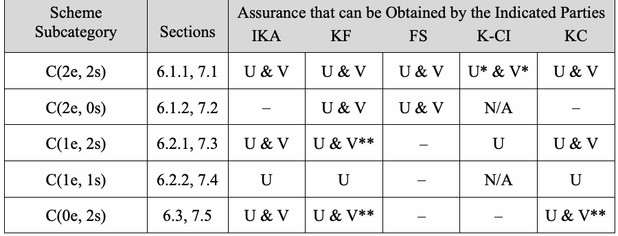
| スキームサブカテゴリ | 節 | 各当事者が得られる保証 | ||||
| IKA KF FS K-CI KC | ||||||
| C(2e, 2s) | 6.1.1, 7.1 | U & V | U & V | U & V | U* & V* | U & V |
| C(2e, 0s) | 6.1.2, 7.2 | – | U & V | U & V | N/A | – |
| C(1e, 2s) | 6.2.1, 7.3 | U & V | U & V** | – | U | U & V |
| C(1e, 1s) | 6.2.2, 7.4 | U | U | – | N/A | U |
| C(0e, 2s) | 6.3, 7.5 | U & V | U & V** | – | – | U & V** |
原本PDFの抜粋画像
原本PDFの抜粋画像
* K-CI assurance can be obtained using a C(2e, 2s) scheme only when the key-agreement scheme employed is either C(2e, 2s, FFC MQV) or C(2e, 2s, ECC MQV). ** The indicated type of assurance can be obtained by party V only if party V exercises the option of contributing a random nonce that is employed in key derivation and (when desired) key confirmation, as specified in this Recommendation.
* K-CI保証は、使用する鍵共有スキームがC(2e, 2s, FFC MQV)またはC(2e, 2s, ECC MQV)である場合に限り、C(2e, 2s)スキームで得られる。** 当該種類の保証を当事者Vが得られるのは、この勧告に従って鍵導出および（必要に応じて）鍵確認に使うランダムノンスを提供する選択肢を当事者Vが行使する場合に限る。
未レビュー訳8. Key Recovery
8. 鍵回復
未レビュー訳For some applications, the secret keying material used to protect data may need to be recovered (for example, if the normal reference copy of the secret keying material is lost or corrupted). In this case, either the secret keying material or sufficient information to reconstruct the secret keying material needs to be available (for example, the keys, domain parameters and other inputs to the scheme used to perform the key-establishment process). Keys used during the key-establishment process shall be handled in accordance with the following:
一部のアプリケーションでは、データ保護に使う秘密鍵素材を回復する必要がある（例えば、通常の参照用コピーが失われた、または破損した場合）。その場合、秘密鍵素材そのもの、またはそれを再構成するのに十分な情報（例えば、鍵確立プロセスで使ったスキームへの鍵、ドメインパラメータ、その他の入力）を利用できなければならない。鍵確立プロセス中に使う鍵は、次のとおり取り扱わなければならない。
未レビュー訳1.A static key pair may be saved.
1.静的鍵ペアは保存してもよい。
2.An ephemeral public key may be saved.
2.エフェメラル公開鍵は保存してもよい。
3.3. An ephemeral private key shall be destroyed after use and, therefore, shall not be recoverable.
3.3. エフェメラル秘密鍵は使用後に破棄しなければならない。したがって、回復可能にしてはならない。
4.A symmetric key may be saved.
4.対称鍵は保存してもよい。
Note: This implies that keys derived from schemes where both parties generate ephemeral key pairs (i.e., the \(\mathrm{C}(2\mathrm{e}, 2\mathrm{s})\) and \(\mathrm{C}(2\mathrm{e}, 0\mathrm{s})\) schemes) cannot be made recoverable by reconstruction of the secret keying material by parties requiring the ephemeral private key in their calculations. For those schemes where only party U generates an ephemeral key pair (i.e., the \(\mathrm{C}(1\mathrm{e}, 2\mathrm{s})\) and \(\mathrm{C}(1\mathrm{e}, 1\mathrm{s}\) schemes), only party V can recover the secret keying material by reconstruction.
注：これは、両当事者がエフェメラル鍵ペアを生成する方式（すなわち\(\mathrm{C}(2\mathrm{e}, 2\mathrm{s})\)方式および\(\mathrm{C}(2\mathrm{e}, 0\mathrm{s})\)方式）から導出された鍵は、計算にエフェメラル秘密鍵を必要とする当事者が秘密鍵素材を再構成することによっては、回復可能にできないことを意味する。当事者Uだけがエフェメラル鍵ペアを生成する方式（すなわち\(\mathrm{C}(1\mathrm{e}, 2\mathrm{s})\)方式および\(\mathrm{C}(1\mathrm{e}, 1\mathrm{s}\)方式）では、当事者Vだけが再構成によって秘密鍵素材を回復できる。
General guidance on key recovery and the protections required for each type of key is provided in SP 800-57.
鍵回復、および鍵の種類ごとに必要な保護に関する一般的な指針は、SP 800-57に示されている。
9. Implementation Validation
9. 実装の検証
未レビュー訳When the NIST Cryptographic Algorithm Validation Program (CAVP) and the Cryptographic Module Validation Program (CMVP) have established a validation program for this Recommendation, a vendor shall have its implementation tested and validated by the CAVP and CMVP to claim conformance to this Recommendation. Information on the CAVP is available at https://csrc.nist.gov/Projects/Cryptographic-Algorithm-Validation-Program; information on the CMVP is available at https://csrc.nist.gov/projects/cryptographic-module-validation-program. An implementation claiming conformance to this Recommendation shall include one or more of the following capabilities:
NIST暗号アルゴリズム検証プログラム（CAVP）および暗号モジュール検証プログラム（CMVP）がこの勧告の検証プログラムを確立した場合、ベンダーはこの勧告への適合を主張するため、その実装をCAVPおよびCMVPによって試験・検証しなければならない。CAVPの情報は https://csrc.nist.gov/Projects/Cryptographic-Algorithm-Validation-Program に、CMVPの情報は https://csrc.nist.gov/projects/cryptographic-module-validation-program にある。この勧告への適合を主張する実装は、次の能力を1つ以上備えなければならない。
未レビュー訳•Domain parameter generation or selection as specified in Section 5.5.1.
•Section 5.5.1に規定するドメインパラメータの生成または選択。
•Explicit domain parameter validation as specified in Section 5.5.2, item 2.
•Section 5.5.2項目2に規定する明示的なドメインパラメータ検証。
•• Key pair generation as specified in Section 5.6.1; documentation shall include how assurance of domain parameter validity is expected to be achieved by the key pair owner.
•• Section 5.6.1に規定する鍵ペア生成。文書には、鍵ペアの所有者がドメインパラメータの有効性の保証をどのように得ることが想定されているかを含めなければならない。
•• Explicit public-key validation as specified in Sections 5.6.2.3.1 and 5.6.2.3.2 for FFC schemes or as specified in Sections 5.6.2.3.3 or 5.6.2.3.4 for ECC schemes.
•• FFC方式についてはSection 5.6.2.3.1および5.6.2.3.2に規定する、ECC方式についてはSection 5.6.2.3.3または5.6.2.3.4に規定する、明示的な公開鍵検証。
•• A key-agreement scheme from Section 6, together with an approved key-derivation method from SP 800-56C. If key confirmation is also claimed, the appropriate key-confirmation technique from Section 5.9 shall be used. Documentation shall include how assurance of private-key possession and assurance of domain-parameter and public-key validity are expected to be achieved by both the owner and the recipient.
•• Section 6の鍵共有方式と、SP 800-56Cの承認された鍵導出方式。鍵確認も主張する場合は、Section 5.9の該当する鍵確認技法を使用しなければならない。文書には、所有者と受信者の双方が、秘密鍵の保有の保証、ならびにドメインパラメータおよび公開鍵の有効性の保証をどのように得ることが想定されているかを含めなければならない。
An implementer shall also identify the appropriate specifics of the implementation, including:
実装者は、次のものを含め、実装の該当する具体的事項も特定しなければならない。
•The security strength(s) of supported cryptographic algorithms;
•サポートする暗号アルゴリズムのセキュリティ強度。
•• The domain parameter generation method or the selected domain parameters (see Section 5.5.1);
•• ドメインパラメータの生成方法、または選択したドメインパラメータ（Section 5.5.1を参照）
•The hash function(s) used, if applicable (see Section 5.1);
•該当する場合、使用するハッシュ関数（Section 5.1参照）。
•The MAC algorithm(s) used, if applicable (see Section 5.2), including
•該当する場合、使用するMACアルゴリズム（Section 5.2参照）。これには
未レビュー訳- The MAC key length(s) (see Section 5.9.3), and
MAC鍵長（Section 5.9.3参照）、および
未レビュー訳- The MAC tag length(s) (see Section 5.9.3);
MACタグ長（Section 5.9.3参照）を含む。
未レビュー訳•The type of cryptography supported: FFC and/or ECC;
•サポートする暗号方式の種類：FFCおよび／またはECC。
•The key-establishment schemes supported (see Section 6);
•サポートする鍵確立スキーム（Section 6参照）。
• The key-derivation method(s), including the format of \(\mathit{FixedInfo}\) (see Section 5.8 and SP 800-56C);
• 鍵導出方式（\(\mathit{FixedInfo}\) の形式を含む。Section 5.8およびSP 800-56C参照）；
•The type(s) of nonces supported (see Section 5.4);
•サポートするノンスの種類（Section 5.4参照）。
•The supported approved FFC domain parameters (if FFC schemes are supported) (see Section 5.5.1.1);
•サポートする承認済みFFCドメインパラメータ（FFCスキームをサポートする場合。Section 5.5.1.1参照）。
未レビュー訳•The supported approved ECC domain parameters (if ECC schemes are supported) (see Section 5.5.1.2); and
•サポートする承認済みECCドメインパラメータ（ECCスキームをサポートする場合。Section 5.5.1.2参照）。および
未レビュー訳•The key-confirmation technique(s) supported, if applicable (see Section 5.9).
•該当する場合、サポートする鍵確認方式（Section 5.9参照）。
未レビュー訳Appendix A: References
付録A：参考文献
未レビュー訳A.1 Normative References
A.1 規範的参考文献
[ANS X9.42] American National Standard X9.42-2003 (R2013), Public Key Cryptography for the Financial Services Industry: Agreement of Symmetric Keys Using Discrete Logarithm Cryptography.
[ANS X9.42] 米国規格 X9.42-2003 (R2013), Public Key Cryptography for the Financial Services Industry: Agreement of Symmetric Keys Using Discrete Logarithm Cryptography.
[ANS X9.63] American National Standard X9.63-2011 (R2017), Key Cryptography for the Financial Services Industry: Public Key Cryptography for the Financial Services Industry: Key Agreement and Key Transport Using Elliptic Curve Cryptography.
[ANS X9.63] 米国規格 X9.63-2011 (R2017), Key Cryptography for the Financial Services Industry: Public Key Cryptography for the Financial Services Industry: Key Agreement and Key Transport Using Elliptic Curve Cryptography.
[FIPS 140] Federal Information Processing Standard 140-2, Security Requirements for Cryptographic Modules, May 25, 2001. https://doi.org/10.6028/NIST.FIPS.140-2
[FIPS 140] 連邦情報処理規格 140-2, Security Requirements for Cryptographic Modules, 2001年5月25日. https://doi.org/10.6028/NIST.FIPS.140-2
[FIPS 140 Annex A]
[FIPS 140 Annex A]
Approved Security Functions.
承認済みセキュリティ機能。
[FIPS 140 Annex D]
[FIPS 140 Annex D]
Approved Key Establishment Techniques.
承認済み鍵確立技法。
[FIPS 140 IG]
[FIPS 140 IG]
National Institute of Standards and Technology, Communicationes Security Establishment, Implementation Guidance for FIPS 140-2 and the Cryptographic Module Validation Program, March 27, 2018, https://csrc.nist.gov/CSRC/media/Projects/Cryptographic-Module-Validation-Program/documents/fips140-2/FIPS1402IG.pdf.
米国国立標準技術研究所、Communicationes Security Establishment、FIPS 140-2および暗号モジュール検証プログラムの実装ガイダンス、2018年3月27日、https://csrc.nist.gov/CSRC/media/Projects/Cryptographic-Module-Validation-Program/documents/fips140-2/FIPS1402IG.pdf.
[FIPS 180] Federal Information Processing Standard 180-4, Secure Hash Standard, August 2015. https://doi.org/10.6028/NIST.FIPS.180-4
[FIPS 180] 連邦情報処理規格 180-4, Secure Hash Standard, 2015年8月. https://doi.org/10.6028/NIST.FIPS.180-4
[FIPS 186] Federal Information Processing Standard 186-4, Digital Signature Standard, July 2013. https://doi.org/10.6028/NIST.FIPS.186-4
[FIPS 186] 連邦情報処理規格 186-4, Digital Signature Standard, 2013年7月. https://doi.org/10.6028/NIST.FIPS.186-4
[FIPS 197] Federal Information Processing Standard 197, Advanced Encryption Standard, November 2001. https://doi.org/10.6028/NIST.FIPS.197
[FIPS 197] 連邦情報処理規格 197, Advanced Encryption Standard, 2001年11月. https://doi.org/10.6028/NIST.FIPS.197
[FIPS 198] Federal Information Processing Standard 198-1, The Keyed-Hash Message Authentication Code (HMAC), July 2008. https://doi.org/10.6028/NIST.FIPS.198-1
[FIPS 198] 連邦情報処理規格 198-1, The Keyed-Hash Message Authentication Code (HMAC), 2008年7月. https://doi.org/10.6028/NIST.FIPS.198-1
[FIPS 202] Federal Information Processing Standard 202, SHA-3 Standard: Permutation-Based Hash and Extendable-Output Functions, August 2015. https://doi.org/10.6028/NIST.FIPS.202
[FIPS 202] 連邦情報処理規格 202, SHA-3 Standard: Permutation-Based Hash and Extendable-Output Functions, 2015年8月. https://doi.org/10.6028/NIST.FIPS.202
[RFC 3526] More Modular Exponential (MODP) Diffie-Hellman groups for Internet Key Exchange (IKE), May 2003, see https://tools.ietf.org/html/rfc3526.
[RFC 3526] More Modular Exponential (MODP) Diffie-Hellman groups for Internet Key Exchange (IKE)、2003年5月。参照：https://tools.ietf.org/html/rfc3526
[RFC 4492] Elliptic Curve Cryptography (ECC) Cipher Suites for Transport Layer Security (TLS), May 2006, see https://tools.ietf.org/html/rfc4492.
[RFC 5903] Elliptic Curve Groups Modulo a Prime (ECP Groups) for IKE and IKEv2, June 2010, see https://tools.ietf.org/html/rfc5903.
[RFC 7919] Negotiated Finite Field Diffie-Hellman Ephemeral Parameters, August 2016, see https://tools.ietf.org/html/rfc7919.
[RFC 4492] Elliptic Curve Cryptography (ECC) Cipher Suites for Transport Layer Security (TLS), 2006年5月, 参照：https://tools.ietf.org/html/rfc4492.
[RFC 5903] Elliptic Curve Groups Modulo a Prime (ECP Groups) for IKE and IKEv2, 2010年6月, 参照：https://tools.ietf.org/html/rfc5903.
[RFC 7919] Negotiated Finite Field Diffie-Hellman Ephemeral Parameters, 2016年8月, 参照：https://tools.ietf.org/html/rfc7919.
[SECG] Standards for Efficient Cryptography Group, see http://www.secg.org/.
[SEC2] Standards for Efficient Cryptography, SEC 2: Recommended Elliptic Curve Domain Parameters, September 2000, see http://www.secg.org/SEC2-Ver-1.0.pdf.
[SECG] Standards for Efficient Cryptography Group, 参照：http://www.secg.org/.
[SEC2] Standards for Efficient Cryptography, SEC 2: Recommended Elliptic Curve Domain Parameters, 2000年9月, 参照：http://www.secg.org/SEC2-Ver-1.0.pdf.
[SP 800-38B] Special Publication 800-38B, Recommendation for Block Cipher Modes of
[SP 800-38B] 特別刊行物800-38B、ブロック暗号モードの勧告：認証用CMACモード、
未レビュー訳Operation: The CMAC Mode for Authentication, May 2005, with updates dated October 2016. https://doi.org/10.6028/NIST.SP.800-38B
運用モード：認証のためのCMACモード、2005年5月、2016年10月付の更新を含む。https://doi.org/10.6028/NIST.SP.800-38B
[SP 800-38C] Special Publication 800-38C, Recommendation for Block Cipher Modes of
[SP 800-38C] 特別刊行物800-38C、ブロック暗号モードの勧告：認証と機密性のためのCCMモード、2004年5月、
未レビュー訳Operation: the CCM Mode for Authentication and Confidentiality, May 2004, with updates dated July 2007. https://doi.org/10.6028/NIST.SP.800-38C
運用モード：認証および機密性のためのCCMモード、2004年5月、2007年7月付の更新を含む。https://doi.org/10.6028/NIST.SP.800-38C
[SP 800-38F] Special Publication 800-38F, Recommendation for Block Cipher Modes of
[SP 800-38F] 特別刊行物800-38F、ブロック暗号モードの勧告：鍵ラッピング方式、2012年12月。
未レビュー訳Operation: Methods for Key Wrapping, December 2012.
鍵ラッピング方式、2012年12月。
未レビュー訳https://doi.org/10.6028/NIST.SP.800-38F
https://doi.org/10.6028/NIST.SP.800-38F
未レビュー訳[SP 800-52] Special Publication 800-52 Revision 2 (DRAFT), Guidelines for the Selection, Configuration and Use of Transport Layer Security (TLS) Implementations, November 15, 2017. https://csrc.nist.gov/publications/detail/sp/800-52/rev-2/draft
[SP 800-52] 特別刊行物 800-52 改訂2（ドラフト）, Guidelines for the Selection, Configuration and Use of Transport Layer Security (TLS) Implementations, 2017年11月15日. https://csrc.nist.gov/publications/detail/sp/800-52/rev-2/draft
[SP 800-56B] Special Publication 800-56B Revision 1, Recommendation for Pair-Wise Key-Establishment Schemes Using Integer Factorization Cryptography, September 2014. https://doi.org/10.6028/NIST.SP.800-56Br1
[SP 800-56B] 特別刊行物 800-56B 改訂1, Recommendation for Pair-Wise Key-Establishment Schemes Using Integer Factorization Cryptography, 2014年9月. https://doi.org/10.6028/NIST.SP.800-56Br1
[SP 800-56C] Special Publication 800-56C Revision 1, Recommendation for Key Derivation Methods in Key Establishment Schemes, April 2018. https://doi.org/10.6028/NIST.SP.800-56Cr1
[SP 800-56C] 特別刊行物 800-56C 改訂1, Recommendation for Key Derivation Methods in Key Establishment Schemes, 2018年4月. https://doi.org/10.6028/NIST.SP.800-56Cr1
[SP 800-57] Special Publication 800-57 Part 1 Revision 4, Recommendation for Key Management, January 2016. https://doi.org/10.6028/NIST.SP.800-57pt1r4
[SP 800-57] 特別刊行物 800-57 第1部 改訂4, Recommendation for Key Management, 2016年1月. https://doi.org/10.6028/NIST.SP.800-57pt1r4
[SP 800-89] Special Publication (SP) 800-89, Recommendation for Obtaining Assurances for Digital Signature Applications, November 2006. https://doi.org/10.6028/NIST.SP.800-89
[SP 800-89] 特別刊行物（SP）800-89, Recommendation for Obtaining Assurances for Digital Signature Applications, 2006年11月. https://doi.org/10.6028/NIST.SP.800-89
[SP 800-90] Special Publication 800-90 series:
[SP 800-90] 特別刊行物800-90シリーズ：
Special Publication 800-90A Revision 1, Recommendation for Random Number Generation Using Deterministic Random Bit Generators, June 2015. https://doi.org/10.6028/NIST.SP.800-90Ar1
特別刊行物800-90A改訂1、決定論的乱数ビット生成器を用いる乱数生成の勧告、2015年6月。https://doi.org/10.6028/NIST.SP.800-90Ar1
未レビュー訳Special Publication 800-90B, Recommendation for the Entropy Sources Used for Random Bit Generation, January 2018. https://doi.org/10.6028/NIST.SP.800-90B Special Publication 800-90C (DRAFT), Recommendation for Random Bit Generator (RBG) Constructions, April 2016. https://csrc.nist.gov/publications/detail/sp/800-90c/draft
特別刊行物800-90B、乱数ビット生成に用いるエントロピー源の勧告、2018年1月。https://doi.org/10.6028/NIST.SP.800-90B 特別刊行物800-90C（ドラフト）、乱数ビット生成器（RBG）構成の勧告、2016年4月。https://csrc.nist.gov/publications/detail/sp/800-90/c/draft
未レビュー訳[SP 800-108] Special Publication 800-108, Recommendation for Key Derivation Using Pseudorandom Functions, October 2009. https://doi.org/10.6028/NIST.SP.800-108
[SP 800-108] 特別刊行物 800-108, Recommendation for Key Derivation Using Pseudorandom Functions, 2009年10月. https://doi.org/10.6028/NIST.SP.800-108
[SP 800-131A] Special Publication 800-131A Revision 1, Transitions: Recommendation for Transitioning the Use of Cryptographic Algorithms and Key Lengths, November 2015. https://doi.org/10.6028/NIST.SP.800-131Ar1
[SP 800-131A] 特別刊行物 800-131A 改訂1, Transitions: Recommendation for Transitioning the Use of Cryptographic Algorithms and Key Lengths, 2015年11月. https://doi.org/10.6028/NIST.SP.800-131Ar1
[SP 800-133] Special Publication 800-133, Recommendation for Cryptogrsphic Key Generation, December 2012. https://doi.org/10.6028/NIST.SP.800-133
[SP 800-133] 特別刊行物 800-133, Recommendation for Cryptogrsphic Key Generation, 2012年12月. https://doi.org/10.6028/NIST.SP.800-133
[SP 800-135] Special Publication 800-135 Revision 1, Recommendation for Existing Application-Specific Key Derivation Functions, December 2011. https://doi.org/10.6028/NIST.SP.800-135r1
[SP 800-135] 特別刊行物 800-135 改訂1, Recommendation for Existing Application-Specific Key Derivation Functions, 2011年12月. https://doi.org/10.6028/NIST.SP.800-135r1
[SP 800-185] Special Publication 800-185, SHA-3 Derived Functions: cSHAKE, KMAC, TupleHash, and ParallelHash, December 2016. https://doi.org/10.6028/NIST.SP.800-185
[SP 800-185] 特別刊行物 800-185, SHA-3 Derived Functions: cSHAKE, KMAC, TupleHash, and ParallelHash, 2016年12月. https://doi.org/10.6028/NIST.SP.800-185
[SP 800-186] Special Publication 800-186 (DRAFT), Recommendations for Discrete Logarithm-Based Cryptography Elliptic Curve Domain Parameters, [future release].
[SP 800-186] 特別刊行物 800-186（ドラフト）, Recommendations for Discrete Logarithm-Based Cryptography Elliptic Curve Domain Parameters, ［今後公開予定］.
A.2 Informative References
A.2 参考文献（参考情報）
[BM 1998] S. Blake-Wilson, A. Menezes, Unknown Key-Share Attacks on the Station-to-Station (STS) Protocol, Technical Report CORR 98-42, University of Waterloo, 1998. Available at: http://cacr.math.uwaterloo.ca.
[BM 1998] S. Blake-Wilson、A. Menezes、Unknown Key-Share Attacks on the Station-to-Station (STS) Protocol、Technical Report CORR 98-42、University of Waterloo、1998年。入手先：http://cacr.math.uwaterloo.ca.
[CMU 2009] S. Chatterjee, A. Menezes, and B. Ustaoglu, Reusing Static Keys in Key Agreement Protocols, INDOCRYPT 2009, LNCS Vol. 5922, pp. 39–56, Springer-Verlag, 2009. Available at: http://www.cacr.math.uwaterloo.ca/techreports/2009/cacr2009-36.pdf .
[CMU 2009] S. Chatterjee、A. Menezes、B. Ustaoglu、Reusing Static Keys in Key Agreement Protocols、INDOCRYPT 2009、LNCS Vol. 5922、pp. 39–56、Springer-Verlag、2009年。入手先：http://www.cacr.math.uwaterloo.ca/techreports/2009/cacr2009-36.pdf 。
[CBH 2005] K. R. Choo, C. Boyd, and Y. Hitchcock, On Session Key Construction in Provably-Secure Key Establishment Protocols, LNCS, Vol. 3715, pp. 116-131, Springer-Verlag, 2005. Extended version available at: http://eprint.iacr.org/2005/206.pdf.
[CBH 2005] K. R. Choo、C. Boyd、Y. Hitchcock、On Session Key Construction in Provably-Secure Key Establishment Protocols、LNCS、Vol. 3715、pp. 116-131、Springer-Verlag、2005年。拡張版の入手先：http://eprint.iacr.org/2005/206.pdf.
[ISO/IEC 8825-1]
[ISO/IEC 8825-1]
未レビュー訳Information technology -- ASN.1 encoding rules: Specification of Basic Encoding Rules (BER), Canonical Encoding Rules (CER) and Distinguished Encoding Rules (DER), 2008.
情報技術—ASN.1符号化規則：基本符号化規則（BER）、正規符号化規則（CER）および識別符号化規則（DER）の仕様、2008年。
未レビュー訳[Menezes 2007] A. Menezes, Another look at HMQV. Journal of Mathematical Cryptology, Vol.1(1), pp. 47-64, 2007
[Menezes 2007] A. Menezes、Another look at HMQV. Journal of Mathematical Cryptology、Vol.1(1)、pp. 47-64、2007年
[RBB 2001] P. Rogaway, M. Bellare, D. Boneh, Evaluation of Security Level of
[RBB 2001] P. Rogaway、M. Bellare、D. Boneh、「暗号のセキュリティレベル評価：
未レビュー訳Cryptography: ECMQVS (from SEC 1), Jan. 2001. Available at: http://www.ipa.go.jp/security/enc/CRYPTREC/fy15/doc/1069_ks-ecmqv.pdf.
ECMQVS（SEC 1より）」、2001年1月。入手先：http://www.ipa.go.jp/security/enc/CRYPTREC/fy15/doc/1069_ks-ecmqv.pdf
未レビュー訳原本PDFの抜粋画像
It is strongly recommended that identifiers for both parties to a key-agreement transaction be included among the data input to the key-derivation method – as a simple and efficient means of binding those identifiers to the derived keying material (see Sections 5.8).
The inclusion of sufficiently-specific identifiers for party U and party V provides assurance that the keying material derived by those parties will be different from the keying material that is derived by other parties (or by the same parties acting in opposite roles). As a result, key-agreement schemes gain resilience against unknown-key-share attacks and/or other exploitation techniques that depend on some type of confusion over the role played by each party (e.g., party U versus party V). See, for example, references [CBH 2005], [Menezes 2007], [RBB 2001], [BM 1998], and [CMU 2009], which all recommend the inclusion of identifiers in the key-derivation method as a means of eliminating certain vulnerabilities.
鍵共有トランザクションの両当事者の識別子を、鍵導出方式への入力データに含めることを強く推奨する。これは、それらの識別子を導出される鍵素材に結び付ける、単純で効率的な手段である（Sections 5.8を参照）。
当事者Uおよび当事者Vについて十分に具体的な識別子を含めることにより、これらの当事者が導出する鍵素材が、他の当事者（または逆の役割で動作する同じ当事者）が導出する鍵素材とは異なるという保証が得られる。その結果、鍵共有方式は、未知鍵共有攻撃や、各当事者が担う役割（例えば、当事者Uか当事者Vか）についての何らかの混同に依存するその他の悪用手法に対する耐性を得る。例えば、参考文献[CBH 2005]、[Menezes 2007]、[RBB 2001]、[BM 1998]および[CMU 2009]を参照。これらはいずれも、特定の脆弱性を排除する手段として、鍵導出方式に識別子を含めることを推奨している。
In addition to identifiers, the inclusion of other context-specific information in the key-derivation input data can be used to draw finer distinctions between key-agreement transactions, providing assurance that parties will not derive the same keying material unless they agree on all of the included information. This can protect against attacks that rely on confusion concerning the context in which key-establishment takes place and/or how the derived keying material is to be used, see [CMU 2009]. Examples of additional context-specific information include (but are not limited to) the protocol employing the key-derivation method, protocol-defined session numbers, the key-agreement scheme that was employed to produce the shared secret \(Z\), any ephemeral public keys and/or nonces exchanged during the key-agreement transaction, the bit length of the derived keying material, and its intended use (see Section 5.8.2).
識別子に加えて、その他のコンテキスト固有の情報を鍵導出の入力データに含めることにより、鍵共有トランザクションをより細かく区別でき、含められたすべての情報について当事者が一致していない限り、同じ鍵素材を導出することはないという保証が得られる。これにより、鍵確立が行われるコンテキスト、および／または導出された鍵素材の使用方法に関する混同に依存する攻撃を防ぐことができる（[CMU 2009]を参照）。追加のコンテキスト固有の情報の例には、鍵導出方式を用いるプロトコル、プロトコルで定義されたセッション番号、共有秘密\(Z\)の生成に用いた鍵共有方式、鍵共有トランザクション中に交換されたエフェメラル公開鍵および／またはノンス、導出される鍵素材のビット長、ならびにその用途（Section 5.8.2を参照）が含まれる（ただし、これらに限定されない）。
Protocols employing an approved key-agreement scheme may employ alternative methods to bind participant identifiers (and/or other context-specific data) to the derived keying material or otherwise provide assurance that the participants in a key-agreement transaction share the same view of the context in which the keying material was established (including their respective roles and identifiers). However, this Recommendation makes no statement as to the adequacy of these other methods.
承認された鍵共有方式を用いるプロトコルは、参加者の識別子（および／または他のコンテキスト固有のデータ）を導出鍵素材に結び付けるために、あるいは、鍵共有トランザクションの参加者が、鍵素材が確立されたコンテキスト（それぞれの役割と識別子を含む）について同じ認識を共有しているという保証を別の形で与えるために、代替の方法を用いてもよい。ただし、本勧告は、これらの他の方法が十分かどうかについては何も述べない。
Appendix C: Data Conversions (Normative)
付録C：データ変換（規範）
未レビュー訳C.1 Integer-to-Byte String Conversion
C.1 整数からバイト列への変換
未レビュー訳Input: A non-negative integer \(C\) and the intended length \(n\) of the byte string satisfying
入力：非負整数\(C\)、および次を満たすバイト列の所定の長さ\(n\)。
When called from an FFC Scheme, \(n = \lceil t / 8 \rceil\) bytes, where \(t = \lceil \log_2 p \rceil\) and \(p\)
FFCスキームから呼び出される場合、\(n = \lceil t / 8 \rceil\)バイトであり、ここで\(t = \lceil \log_2 p \rceil\)、\(p\)
is the large prime field order. Output: A byte string \(S\) of length \(n\) bytes.
は大きな素数体の位数である。出力：バイト列\(S\)。長さは\(n\)バイトである。
1. \(J_{n+1} = C\).
1. \(J_{n+1} = C\).
2. For \(i = n\) to 1 by -1
2. \(i = n\)から1まで−1ずつ変化させながら、次を行う。
2.1 \(J_i = \lfloor (J_{i+1})/256 \rfloor\).
2.1 \(J_i = \lfloor (J_{i+1})/256 \rfloor\).
2.2 \(A_i = J_{i+1} - (J_i \bullet 256)\).
2.2 \(A_i = J_{i+1} - (J_i \bullet 256)\).
2.3 \(S_i = (a_{i1}, a_{i2}, a_{i3}, a_{i4}, a_{i5}, a_{i6}, a_{i7}, a_{i8})\),
2.3 \(S_i = (a_{i1}, a_{i2}, a_{i3}, a_{i4}, a_{i5}, a_{i6}, a_{i7}, a_{i8})\),
The 8-bit binary representation of the non-negative integer
これは次の非負整数の8ビット二進表現である。
3. Let \(S_1\), \(S_2\), …, \(S_n\) be the bytes of \(S\) from leftmost to rightmost.
3. \(S_1\)、\(S_2\)、…、\(S_n\)を、\(S\)の左端から右端までのバイトとする。
4. Output \(S\).
4. \(S\)を出力する。
C.2 Field-Element-to-Byte String Conversion
C.2 体要素からバイト列への変換
未レビュー訳Input: An element \(\alpha\) in the field \(F_q\).
入力：要素\(\alpha\)。これは体\(F_q\)に属する。
Output: A byte string \(S\) of length \(n = \lceil t / 8 \rceil\) bytes, where \(t = \lceil \log_2 q \rceil\).
出力：バイト列\(S\)。長さは\(n = \lceil t / 8 \rceil\)バイトであり、ここで\(t = \lceil \log_2 q \rceil\)。
1. If \(q\) is an odd prime, then \(\alpha\) must be an integer in the interval \([0, q - 1]\); \(\alpha\) shall be converted to a byte string of length \(n\) bytes using the technique specified in Appendix C.1 above.
1. \(q\)が奇素数の場合、\(\alpha\)は区間\([0, q - 1]\)内の整数でなければならない。\(\alpha\)は、長さ\(n\)バイトのバイト列に、上記の付録C.1で規定した方法を用いて変換しなければならない。
2. If \(q = 2^m\), then it is assumed that \(\alpha\) is (already) represented as a bit string of length \(m\), with each bit indicating the coefficient (0 or 1) of a specific element of a particular basis for \(\mathit{GF}(2^m)\) viewed as a vector space over \(\mathit{GF}(2)\).
2. \(q = 2^m\)の場合、\(\alpha\)は（すでに）長さ\(m\)のビット列として表現されているものとする。各ビットは、\(\mathit{GF}(2^m)\)を\(\mathit{GF}(2)\)上のベクトル空間と見たときの特定の基底に属する特定の要素の係数（0または1）を示す。
Let \(s_1\), \(s_2\), …, \(s_m\) be the bits of \(\alpha\) from leftmost to rightmost. Let \(S_1\), \(S_2\), …, \(S_n\) be the
\(s_1\)、\(s_2\)、…、\(s_m\)を、\(\alpha\)の左端から右端までのビットとする。\(S_1\)、\(S_2\)、…、\(S_n\)を、
bytes of \(S\) from leftmost to rightmost. The rightmost bit \(s_m\) shall become the rightmost bit of the last byte \(S_n\), and so on
\(S\)の左端から右端までのバイトとする。右端のビット\(s_m\)を、最後のバイト\(S_n\)の右端のビットにしなければならない。以下同様に
The rightmost bit \(s_m\) shall become the rightmost bit of the last byte \(S_n\), and so on through the leftmost bit \(s_1\), which shall become the \((8n - m + 1)\)th bit of the first byte \(S_1\). The leftmost \((8n - m)\) bits of the first byte \(S_1\) shall be zero.
右端のビット\(s_m\)は必ず最後のバイト\(S_n\)の右端ビットとし、以下同様に続けて、左端のビット\(s_1\)は必ず\((8n - m + 1)\)番目のビットとして最初のバイト\(S_1\)に入れる。左端の\((8n - m)\)ビットは、最初のバイト\(S_1\)において必ず0とする。
C.3 Field-Element-to-Integer Conversion
C.3 体要素から整数への変換
未レビュー訳Input: An element \(\alpha\) in the field \(F_q\).
入力： 要素\(\alpha\)（体\(F_q\)に属する）。
Output: An integer \(x\).
出力： 整数\(x\)。
1. If \(q\) is an odd prime, then \(x = \alpha\) (no conversion is required).
1. \(q\)が奇素数の場合、\(x = \alpha\)（変換は不要）。
2. If \(q = 2^m\), then \(\alpha\) must be a bit string of length \(m\) bits. Let \(s_1, s_2, \ldots, s_m\) be the bits of \(\alpha\) from leftmost to rightmost. \(\alpha\) shall be converted to an integer \(x\) satisfying:
2. \(q = 2^m\)の場合、\(\alpha\)は長さ\(m\)ビットのビット列でなければならない。\(s_1, s_2, \ldots, s_m\)を、\(\alpha\)の左端から右端までのビットとする。\(\alpha\)は必ず、次を満たす整数\(x\)に変換する：
C.4 Conversion of a Bit String to an Integer
C.4 ビット列から整数への変換
未レビュー訳An \(n\)-long sequence of bits \(\{ x_1, \ldots, x_n \}\) is converted to an integer by the rule
長さ\(n\)のビット列\(\{ x_1, \ldots, x_n \}\)は、次の規則で整数に変換する。
Note that the first bit of a sequence corresponds to the most significant bit of the corresponding integer, and the last bit corresponds to the least significant bit.
列の最初のビットは対応する整数の最上位ビットに対応し、最後のビットは最下位ビットに対応することに注意する。
Input:
入力：
未レビュー訳1. \(b_1, b_2, \ldots, b_n\) The bit string to be converted.
1. \(b_1, b_2, \ldots, b_n\) 変換するビット列。
Output:
出力：
未レビュー訳1. \(C\) The requested integer representation of the bit string.
1. \(C\) ビット列を表す、要求された整数。
Process:
手順：
未レビュー訳1. Let \((b_1, b_2, \ldots, b_n)\) be the bits of \(b\) from leftmost to rightmost.
1. \((b_1, b_2, \ldots, b_n)\) を \(b\) の左端から右端までのビットとする。
2. \(C = \sum_{i=1}^{n} 2^{(n-i)} b_i\).
2. \(C = \sum_{i=1}^{n} 2^{(n-i)} b_i\)。
3. Return \(C\).
3. \(C\) を返す。
The binary length of an integer \(C\) is defined as the smallest integer \(n\) satisfying \(C < 2^n\).
整数 \(C\) の二進長は、最小の整数 \(n\) であって \(C < 2^n\) を満たすものとして定義する。
Appendix D: Approved ECC Curves and FFC Safe-prime Groups
付録D：承認済みECC曲線およびFFC安全素数群
未レビュー訳This appendix contains lists of approved elliptic curves and safe-prime groups for key establishment. Warning: Additions to these lists may appear in the FIPS 140 Implementation Guidance document, Section D.13 (IG D.13) before the next revision of this document (i.e., SP
この付録では、鍵確立用の承認済み楕円曲線および安全素数群を列挙する。注意：これらのリストへの追加は、本書の次回改訂前にFIPS 140実装ガイダンスのSection D.13（IG D.13）に掲載される場合がある。
未レビュー訳8900-56A).
8900-56A）。
未レビュー訳Note: entries in the same row refer to the same elliptic curve under different names. Absence of equivalent entries is indicated by “-”. Table 24: Appoved elliptic curves for ECC key-agreement.
注：同じ行の項目は、異なる名称で表される同一の楕円曲線を示す。同等の項目がない場合は「-」で示す。表24：ECC鍵共有用の承認済み楕円曲線。
未レビュー訳| Referenced in: | FIPS 186-4 SP 800-56A | TLS (RFC 4492) (SP 800-52) | IPsec w/ IKE v2 (RFC 5903) | Targeted Security Strengths that can be Supported |
| Specified in: | SP 800-18629 | SEC 2 | RFC 5903 | |
| P-224 | secp224r1 | - | \(s = 112\) | |
| P-256 | secp256r1 | secp256r1 | \(112 \le s \le 128\) | |
| P-384 | secp384r1 | secp384r1 | \(112 \le s \le 192\) | |
| P-521 | secp521r1 | secp521r1 | \(112 \le s \le 256\) | |
| K-233 | sect233k1 | - | \(112 \le s \le 128\) | |
| K-283 | sect283k1 | - | \(112 \le s \le 128\) | |
| K-409 | sect409k1 | - | \(112 \le s \le 192\) | |
| K-571 | sect571k1 | - | \(112 \le s \le 256\) | |
| B-233 | sect233r1 | - | \(112 \le s \le 128\) | |
| B-283 | sect283r1 | - | \(112 \le s \le 128\) | |
| B-409 | sect409r1 | - | \(112 \le s \le 192\) | |
| B-571 | sect571r1 | - | \(112 \le s \le 256\) |
| 参照先： | FIPS 186-4 SP 800-56A | TLS (RFC 4492) (SP 800-52) | IPsec w/ IKE v2 (RFC 5903) | サポート可能な目標セキュリティ強度 |
| 規定元： | SP 800-18629 | SEC 2 | RFC 5903 | |
| P-224 | secp224r1 | - | \(s = 112\) | |
| P-256 | secp256r1 | secp256r1 | \(112 \le s \le 128\) | |
| P-384 | secp384r1 | secp384r1 | \(112 \le s \le 192\) | |
| P-521 | secp521r1 | secp521r1 | \(112 \le s \le 256\) | |
| K-233 | sect233k1 | - | \(112 \le s \le 128\) | |
| K-283 | sect283k1 | - | \(112 \le s \le 128\) | |
| K-409 | sect409k1 | - | \(112 \le s \le 192\) | |
| K-571 | sect571k1 | - | \(112 \le s \le 256\) | |
| B-233 | sect233r1 | - | \(112 \le s \le 128\) | |
| B-283 | sect283r1 | - | \(112 \le s \le 128\) | |
| B-409 | sect409r1 | - | \(112 \le s \le 192\) | |
| B-571 | sect571r1 | - | \(112 \le s \le 256\) |
Finite Field Cryptography Groups for Key Establishment: The following safe-prime groups are defined in RFC 3526 and RFC 7919 for use with key-agreement schemes that employ either the FFC DH or FFC MQV primitives.
鍵確立のための有限体暗号の群： 以下の安全素数群は、FFC DHプリミティブまたはFFC MQVプリミティブのいずれかを用いる鍵共有方式で使用するために、RFC 3526およびRFC 7919で定義されている。
The domain parameters for these groups have the form \((p, q = (p - 1)/2, g = 2)\); the explicit values for \(p\) are provided in the RFCs.
これらの群のドメインパラメータは \((p, q = (p - 1)/2, g = 2)\) の形式である。\(p\) の明示的な値は各RFCに記載されている。
Table 25: Approved IKE groups for FFC key agreement.
表25：FFC鍵共有用の承認済みIKEグループ。
未レビュー訳| IKE v2 (RFC 3526) | Targeted Security Strengths that can be Supported |
| MODP-2048 (ID=14) | \(s = 112\) |
| MODP-3072 (ID=15) | \(112 \le s \le 128\) |
| MODP-4096 (ID=16) | \(112 \le s \le 152\)* |
| MODP-6144 (ID=17) | \(112 \le s \le 176\)* |
| MODP-8192 (ID=18) | \(112 \le s \le 200\)* |
| IKE v2 (RFC 3526) | サポート可能な目標セキュリティ強度 |
| MODP-2048 (ID=14) | \(s = 112\) |
| MODP-3072 (ID=15) | \(112 \le s \le 128\) |
| MODP-4096 (ID=16) | \(112 \le s \le 152\)* |
| MODP-6144 (ID=17) | \(112 \le s \le 176\)* |
| MODP-8192 (ID=18) | \(112 \le s \le 200\)* |
Table 26: Approved TLS groups for FFC key agreement.
表26：FFC鍵共有用の承認済みTLSグループ。
未レビュー訳| TLS (RFC 7919) | Targeted Security Strengths that can be Supported |
| ffdhe2048 (ID = 256) | \(s = 112\) |
| ffdhe3072 (ID = 257) | \(112 \le s \le 128\) |
| ffdhe4096 (ID = 258) | \(112 \le s \le 152\)* |
| ffdhe6144 (ID = 259) | \(112 \le s \le 176\)* |
| ffdhe8192 (ID = 260) | \(112 \le s \le 200\)* |
| TLS (RFC 7919) | サポート可能な目標セキュリティ強度 |
| ffdhe2048 (ID = 256) | \(s = 112\) |
| ffdhe3072 (ID = 257) | \(112 \le s \le 128\) |
| ffdhe4096 (ID = 258) | \(112 \le s \le 152\)* |
| ffdhe6144 (ID = 259) | \(112 \le s \le 176\)* |
| ffdhe8192 (ID = 260) | \(112 \le s \le 200\)* |
* The maximum security strength estimates were calculated using formula in Section 7.5 of the FIPS 140 IG and rounded to the nearest multiple of eight bits.
* 最大セキュリティ強度の推定値は、FIPS 140 IGのSection 7.5の式を用いて計算し、最も近い8ビットの倍数に丸めたものである。
Appendix E: Revisions (Informative)
付録E：改訂履歴（参考情報）
未レビュー訳The original version of this document was published in March, 2006. In March, 2007, the following revision was made to allow the dual use of keys during certificate requests: In Section 5.6.4.2, the second item was originally as follows: “A static key pair may be used in more than one key-establishment scheme. However, one static public/private key pair shall not be used for different purposes (for example, a digital signature key pair is not to be used for key establishment or vice versa).” The item was changed to the following, where the changed text is indicated in italics: “A static key pair may be used in more than one key-establishment scheme. However, one static public/private key pair shall not be used for different purposes (for example, a digital signature key pair is not to be used for key establishment or vice versa) with the following possible exception: when requesting the (initial) certificate for a public static key-establishment key, the key establishment private key associated with the public key may be used to sign the certificate request. See SP 800-57, Part 1 on Key Usage for further information.”
本文書の初版は2006年3月に公開された。2007年3月に、証明書要求の際に鍵を二つの用途に使えるようにするため、次の改訂を行った。Section 5.6.4.2の2番目の項目は、もとは次のとおりであった。「静的鍵ペアは、複数の鍵確立方式で使用してもよい。ただし、一つの静的な公開鍵／秘密鍵のペアを異なる目的に使用してはならない（例えば、デジタル署名用の鍵ペアを鍵確立に使用してはならず、その逆も同様である）。」この項目を次のように変更した。変更した文言はイタリック体で示す。「静的鍵ペアは、複数の鍵確立方式で使用してもよい。ただし、一つの静的な公開鍵／秘密鍵のペアを異なる目的に使用してはならない（例えば、デジタル署名用の鍵ペアを鍵確立に使用してはならず、その逆も同様である）。これには次の例外があり得る。静的な鍵確立用公開鍵の（最初の）証明書を要求するときは、その公開鍵に対応する鍵確立用秘密鍵を、証明書要求への署名に使用してもよい。詳細は、SP 800-57 Part 1の鍵の用途に関する記述を参照。」
In May 2013, the following revisions were made;
2013年5月に、次の改訂を行った。
•• Abstract – The March 2007 version cites ANS X9.42 and X9.63; this version directly provides information on the key establishment schemes (DH, MQV) and the underlying mathematics structure (discrete logs on finite field, elliptic curve).
•• Abstract – 2007年3月版はANS X9.42およびX9.63を引用していたが、本版は、鍵確立方式（DH、MQV）とその基礎となる数学的構造（有限体上および楕円曲線上の離散対数）についての情報を直接示す。
•• Section 3.1 – Added definitions of assumption, binding, bit string, byte, byte string, destroy, key-establishment pair, key-wrapping key, trusted association; removed definitions on assurance of identifier, initiator, responder, (instead initiator and responder, all the schemes are defined in terms of party U and party V, see revision in Section 4), extended keying material to derived keying material (derived from the shared secret) and transported keying material (generated by the sender in a key-transport scheme.)
•• Section 3.1 – 仮定、結合、ビット列、バイト、バイト列、破棄、鍵確立ペア、鍵ラッピング鍵、信頼された関連付けの定義を追加した。識別子の保証、開始者、応答者の定義を削除した（開始者と応答者に代えて、すべての方式を当事者Uと当事者Vによって定義する。Section 4の改訂を参照）。鍵素材を、導出鍵素材（共有秘密から導出されるもの）と転送鍵素材（鍵転送方式で送信者が生成するもの）に拡張した。
• Section 3.2 – The notations, \(\mathrm{C}(\mathrm{ie})\), \(\mathrm{C}(\mathrm{ie}, \mathrm{js})\), \(\mathrm{MAC}(\mathit{MacKey}, \mathit{MacData})\), \(\mathit{MacTag}\), \(T\_\mathrm{bitlen}(X)\), were introduced; the notation \(|\mathrm{x}|\) is removed.
• Section 3.2：表記 \(\mathrm{C}(\mathrm{ie})\)、\(\mathrm{C}(\mathrm{ie}, \mathrm{js})\)、\(\mathrm{MAC}(\mathit{MacKey}, \mathit{MacData})\)、\(\mathit{MacTag}\)、\(T\_\mathrm{bitlen}(X)\) を導入し、\(|\mathrm{x}|\) の表記を削除した。
• Section 3.2 – Notations \(Z\), \(\mathrm{Z}_{\mathrm{e}}\), \(\mathrm{Z}_{\mathrm{s}}\) are used for both FFC and ECC and therefore moved up as general notations.
• Section 3.2：表記 \(Z\)、\(\mathrm{Z}_{\mathrm{e}}\)、\(\mathrm{Z}_{\mathrm{s}}\) はFFCとECCの両方に用いるため、一般表記として前方に移動した。
• Section 3.2 – The terms \(\mathit{GF}(p)\), \(\mathit{GF}(p)^*\) were introduced for FFC.
• Section 3.2：FFC用に用語 \(\mathit{GF}(p)\)、\(\mathit{GF}(p)^*\) を導入した。
•Section 4 – Used party U and party V to name the parties, rather than user the initiator and responder as the parties. Discussions about identifiers vs. identity and binding have been moved to Section 4.1.
•Section 4：当事者を開始者・応答者ではなく当事者UおよびVと呼ぶことにした。識別子とアイデンティティ、結合に関する議論はSection 4.1に移した。
•Section 4.1 – Added discussions on the concept of a trusted association;
•Section 4.1：信頼された関連付けの概念に関する説明を追加した。
•Section 5 – Table 1 in March 2007 version has been removed; the information is now provided in Tables 6 and 7 in Section 5.8.1, and Tables 8 and 9 in Section 5.9.3.
•Section 5：2007年版の表1を削除し、情報をSection 5.8.1の表6、7およびSection 5.9.3の表8、9に掲載した。
• Section 5.2 – Provided more details on MAC inputs (\(\mathit{MacKey}\) and \(\mathit{MacData}\)). Added text that MACs can be used for key derivation, as well as key confirmation. Added SP 800-38B (CMAC) as an approved MAC. Refers to the new Tables 6 and 7.
• Section 5.2：MAC入力（\(\mathit{MacKey}\) および \(\mathit{MacData}\)）の詳細を追加した。MACを鍵導出にも鍵確認にも使用できる旨を追加し、承認済みMACとしてSP 800-38B（CMAC）を追加した。新しい表6および7を参照。
• Section 5.2.1 - \(\mathit{MacLen}\) now is a parameter, rather than an input variable. Refers to new Tables 8 and 9, instead of old Tables 1 and 2. Discusses the truncation of the MAC output.
• Section 5.2.1：\(\mathit{MacLen}\)を入力変数ではなくパラメータとした。旧表1、2ではなく新表8、9を参照し、MAC出力の切り詰めについて説明した。
•Section 5.4 – More discussion has been added about the use of nonces, including new requirements and recommendations.
•Section 5.4：新しい要件と推奨事項を含め、ノンスの使用に関する説明を追加した。
• Section 5.5.1.1 – Added the requirement that the leftmost bit of \(p\) and \(q\) be a 1. Table 1 has been shortened to address just the values of \(p\) and \(q\); information about the hash function is now provided in Tables 6 and 7 of Section 5.8.1, and in Tables 8 and 9 of Section 5.9.3.
• Section 5.5.1.1 – \(p\)と\(q\)の左端のビットが1であるという要件を追加した。表1は短縮し、\(p\)と\(q\)の値だけを扱うようにした。ハッシュ関数についての情報は、Section 5.8.1の表6と表7、およびSection 5.9.3の表8と表9に示すようにした。
• Section 5.5.1.2 – More information is provided about elliptic curves. More details are provided on parameter values. Table 2 has been shorted to just address \(\mathrm{n}\) and \(\mathrm{h}\);
• Section 5.5.1.2 – 楕円曲線についての情報を増やした。パラメータ値についての詳細を増やした。表2は短縮し、\(\mathrm{n}\)と\(\mathrm{h}\)だけを扱うようにした。
information about the hash function is now provided in Tables 6 and 7 of Section
ハッシュ関数に関する情報はSection 5.8.1の表
未レビュー訳5.8.1, and in Tables 8 and 9 of Section 5.9.3.
6、7およびSection 5.9.3の表8、9に掲載した。
未レビュー訳•Section 5.5.2 – A note about parameters generated by using SHA-1has been removed.
•Section 5.5.2：SHA-1を用いて生成したパラメータに関する注記を削除した。
The validation methods are referred to other documents (FIPS 186 and ANS X9.62).
検証方法は他の文書（FIPS 186およびANS X9.62）を参照するようにした。
It is not a right place for such statement.
このような記述を置くのに適切な場所ではないためである。
•• Section 5.6 has been reorganized to make it clearer to understand key generation and obtaining the required assurances.
•• Section 5.6を再構成し、鍵生成と必要な保証の取得を理解しやすくした。
• Section 5.6.1.1 – FFC key-pair generation has been revised to require a randomly selected integer in the interval \([2, q-2]\), rather than requiring a private key for FFC key pair generation to be unpredictable and generated by an approved RNG.
• Section 5.6.1.1：FFC鍵ペア生成を改訂し、区間\([2, q-2]\)から無作為に選択した整数を要求するようにした。以前は、FFC鍵ペア生成の秘密鍵が予測不能であり、承認済みRNGで生成されることを求めていた。
Generation in accordance with FIPS 186-3 (as referenced therein) fulfills these requirements.
FIPS 186-3（およびそこで参照されているもの）に従った生成は、これらの要件を満たす。
• Section 5.6.1.2 – ECC key-pair generation has been revised to require a randomly selected integer in the interval \([2, n-2]\), rather than requiring a private key for ECC key pair generation to be unpredictable and generated by an approved RNG.
• Section 5.6.1.2：ECC鍵ペア生成を改訂し、区間\([2, n-2]\)から無作為に選択した整数を要求するようにした。以前は、ECC鍵ペア生成の秘密鍵が予測不能であり、承認済みRNGで生成されることを求めていた。
Generation in accordance with FIPS 186-3 (as referenced therein) fulfills these requirements.
FIPS 186-3（およびそこで参照されているもの）に従った生成は、これらの要件を満たす。
•• New Section 5.6.2 – Discusses assurances and why they are required. Added Tables 3, 4, and 5 which summarize types of assurance.
•• 新しいSection 5.6.2 – 保証と、それが必要とされる理由を論じる。保証の種類をまとめた表3、表4、表5を追加した。
•New Section 5.6.2.1 – Discusses the assurances required by a key-pair owner about its own key pair, including owner assurance of correct generation, static and ephemeral public-key validity, pair-wise consistency and private-key possession.
•新しいSection 5.6.2.1：鍵ペア所有者自身の鍵ペアに関して必要な保証を説明した。これには、正しい生成、静的およびエフェメラル公開鍵の有効性、ペアごとの一貫性、秘密鍵の保有に関する所有者の保証を含む。
•New Section 5.6.2.2 – Discusses the assurances required by a public-key recipient, including static and ephemeral public-key validity, and static and ephemeral private-key possession.
•新しいSection 5.6.2.2：公開鍵の受信者に必要な保証を説明した。これには、静的およびエフェメラル公開鍵の有効性、静的およびエフェメラル秘密鍵の保有を含む。
未レビュー訳•New Sections 5.6.3.2 and 5.6.3.3 – Different requirements are included for static and ephemeral key pairs. Included a case that an agent may act on behalf of a system user.
•新しいSections 5.6.3.2および5.6.3.3：静的鍵ペアとエフェメラル鍵ペアに異なる要件を設けた。代理人がシステム利用者に代わって行動できるケースを追加した。
•Section 5.7 – Added requirements to destroy all values if there is an error and to destroy intermediate calculations have been added for each FFC and ECC primitive. Conversion calls have been added to convert to a string. Note that this removed such statements for the action steps for each scheme in Section 6.
•Section 5.7：エラーがある場合にすべての値を破棄する要件、およびFFCとECCの各プリミティブについて中間計算を破棄する要件を追加した。文字列に変換するための変換呼出しを追加した。なお、これに伴い、Section 6の各方式の動作ステップにあったこれらの記述を削除した。
•Section 5.8 – Key derivation has been divided into one-step key-derivation methods (Section 5.8.1), an extract-then-expand key-derivation procedure (Section 5.8.2) and application-specific key-derivation methods (Section 5.8.3).
•Section 5.8：鍵導出を、1段階鍵導出方式（Section 5.8.1）、抽出後に展開する鍵導出手順（Section 5.8.2）、およびアプリケーション固有の鍵導出方式（Section 5.8.3）に分けた。
• Section 5.8.1 – Instead of using a hash function, the one-step method is now defined with a function \(\mathrm{H}\), which can be a hash function or an HMAC with an approved hash function. Added tables defining minimum length for the hash functions with regard to each parameter set; and added more complete discussions about \(\mathit{OtherInfo}\), including the concatenation and ASN.1 formats included in the previous version.
• Section 5.8.1：1段階方式を、ハッシュ関数ではなく関数\(\mathrm{H}\)で定義した。この関数は、ハッシュ関数、または承認済みハッシュ関数を用いるHMACとすることができる。各パラメータセットに対するハッシュ関数の最小長を定める表を追加し、\(\mathit{OtherInfo}\)について、前版にあった連結形式およびASN.1形式を含め、より完全な説明を追加した。
HMAC with an approved hash function is now approved for key derivation, in addition to the hash function specified in the previous version.
承認されたハッシュ関数を用いるHMACが、前版で規定されていたハッシュ関数に加えて、鍵導出用として承認された。
•Section 5.8.1 – Split Table 1 (for FFC) to Table 1 (Section 5.5.1.1), Table 6 (Section
•Section 5.8.1：FFC用の表1を、表1（Section 5.5.1.1）、表6（Section
未レビュー訳5.8.1) and Table 8 (Section 5.9.3), where Table 1 is for FFC parameter-size sets, Table 6 is for the function \(\mathrm{H}\) used for key derivation and Table 8 is about the MAC key length and MAC tag length. In the new tables, added row on “Maximum security strength supported”.
5.8.1）および表8（Section 5.9.3）であり、表1はFFCパラメータサイズセット、表6は鍵導出に用いる関数\(\mathrm{H}\)、表8はMAC鍵長およびMACタグ長を扱う。新しい表に「サポートされる最大セキュリティ強度」の行を追加した。
• Section 5.8.1 – In Table 6, changed the minimum output length for function \(\mathrm{H}\) from 128 to 112 for FFC parameter set.
• Section 5.8.1：表6で、FFCパラメータセットについて、関数\(\mathrm{H}\)の最小出力長を128から112に変更した。
•Section 5.8.1 - Split Table 2 (for ECC) to Table 2 (Section 5.5.1.2), Table 7 (Section
•Section 5.8.1：ECC用の表2を、表2（Section 5.5.1.2）、表7（Section
未レビュー訳5.8.1) and Table 9 (Section 5.9.3), where Table 2 is for ECC parameter-size sets, Table 7 is for the function \(\mathrm{H}\) used for key derivation, and Table 9 is about the MAC key length and MAC tag length. In the new tables, added row on “Maximum security strength supported”.
5.8.1）およびTable 9（Section 5.9.3）において、Table 2はECCのパラメータサイズセット、Table 7は鍵導出に用いる関数\(\mathrm{H}\)、Table 9はMAC鍵長およびMACタグ長を扱う。新しい表には「サポートされる最大セキュリティ強度」の行を追加した。
•• Section 5.8.2 – Added reference to an approved two-step method – an extraction-then-expansion method – that is specified in SP 800-56C.
•• Section 5.8.2 – SP 800-56Cに規定されている承認された2段階の方式（抽出後に展開する方式）への参照を追加した。
•• Section 5.8.3 – Added reference to the application-specific key-derivation methods provided in SP 800-135.
•• Section 5.8.3 – SP 800-135に示されているアプリケーション固有の鍵導出方式への参照を追加した。
•Moved general introduction of key confirmation to Section 5.9 – Incorporates the material from Section 8 (with additional introductory material).
•鍵確認の一般的な導入説明をSection 5.9に移し、追加の導入説明とともに旧Section 8の内容を取り込んだ。
•New Section 5.9.1.1 – Emphasizes more clearly that a nonce is required if there is no ephemeral key; added guidance on what to do if key confirmation fails.
•新しいSection 5.9.1.1：エフェメラル鍵がない場合はノンスが必須であること、および鍵確認に失敗した場合の処理指針を明確化した。
•New Section 5.9.2 – Emphasizes that if no ephemeral key is used, then a nonce is required.
•新しいSection 5.9.2：エフェメラル鍵を使わない場合はノンスが必須であることを明確化した。
• New Section 5.9.3 – Discussions about the security strength of the MacTag are provided, along with tables on the minimum \(\mathit{MacKey}\) length and \(\mathit{MacLen}\) values.
• 新しいSection 5.9.3：MacTagのセキュリティ強度を説明し、\(\mathit{MacKey}\)の最小長および\(\mathit{MacLen}\)値に関する表を追加した。
• New Section 5.9.3 – Table 8, changed the minimum \(\mathit{MacLen}\), that is, \(\mathit{MacTag}\) length to 64 bits for all the parameter sets of FFC.
• 新しいSection 5.9.3：表8で、FFCのすべてのパラメータセットについて、最小\(\mathit{MacLen}\)、すなわち\(\mathit{MacTag}\)長を64ビットに変更した。
• New Section 5.9.3 – Table 9, changed the minimum \(\mathit{MacLen}\), that is, \(\mathit{MacTag}\) length to 64 bits for all the parameter sets of ECC.
• 新しいSection 5.9.3：表9で、ECCのすべてのパラメータセットについて、最小\(\mathit{MacLen}\)、すなわち\(\mathit{MacTag}\)長を64ビットに変更した。
• Section 6 – The notation \(\mathrm{C}(\mathrm{ie})\) replaces \(\mathrm{C}(\mathrm{i})\), and \(\mathrm{C}(\mathrm{ie}, \mathrm{js})\) replaces \(\mathrm{C}(\mathrm{i}, \mathrm{j})\). If party U does not contribute a static key, then the requirement for a non-null identifier is now transaction dependent, rather than required. Rationale for choosing the \(\mathrm{C}(\mathrm{ie}, \mathrm{js})\) schemes has been moved to a new Section 8, instead of after each class of schemes.
• Section 6：表記\(\mathrm{C}(\mathrm{ie})\)が\(\mathrm{C}(\mathrm{i})\)に置き換わり、\(\mathrm{C}(\mathrm{ie}, \mathrm{js})\)が\(\mathrm{C}(\mathrm{i}, \mathrm{j})\)に置き換わった。当事者Uが静的鍵を提供しない場合、nullでない識別子の要件は必須ではなく、トランザクションに依存するようになった。\(\mathrm{C}(\mathrm{ie}, \mathrm{js})\)スキームを選択する根拠は、各スキーム群の後ろではなく、新しいSection 8に移した。
Assumptions are specified for each type of scheme, rather than prerequisites.
前提条件ではなく、スキームの種類ごとに仮定を定めた。
•• Section 6.1.1 (and similarly for Sections 6.2.1, 6.2.2 and 6.3) –Added a new assumption that if an identifier is used as a label, then the identifier must have a trusted association to that party’s static key. The discussion on the need for a trusted association has been added.
•• Section 6.1.1（Sections 6.2.1、6.2.2および6.3も同様） –識別子をラベルとして用いる場合、その識別子は当該当事者の静的鍵と信頼できる形で関連付けられていなければならない、という新たな仮定を追加した。信頼できる関連付けが必要である理由についての議論を追加した。
•Section 6.1.1.1 (dhHybrid1) – More guidance is provided about error handling.
•Section 6.1.1.1（dhHybrid1）：エラー処理に関する指針を追加した。
Specifically allows the reuse of an ephemeral key pair in a broadcast scenario. This is also provided in Sections 6.1.1.2, 6.1.1.3 and 6.1.1.4.
ブロードキャストの場面でエフェメラル鍵ペアを再利用することを明示的に認める。これはSections 6.1.1.2、6.1.1.3および6.1.1.4にも記載されている。
•New Section 6.1.1.5 (and similarly in new Sections 6.1.2.3, 6.2.1.5, 6.2.2.3 and 6.3.3)
•新しいSection 6.1.1.5（ならびに新しいSections 6.1.2.3、6.2.1.5、6.2.2.3および6.3.3）：
未レビュー訳– Key confirmation is incorporated to each applied subcategory of schemes. This material was previously provided in Section 8.4 of the previous version.
– 鍵確認を、適用される方式の各サブカテゴリに組み込んだ。この内容は、前版ではSection 8.4に記載されていた。
• Section 6.2.1 (\(\mathrm{C}(1\mathrm{e}, 2\mathrm{s})\) schemes) – Added additional assumptions which were included in the previous prerequisites. This includes obtaining assurance of static public key validity and private keys possession of the key-pair owner.
• Section 6.2.1（\(\mathrm{C}(1\mathrm{e}, 2\mathrm{s})\)方式） – 以前は前提条件に含まれていた仮定を追加した。これには、静的公開鍵の有効性、および鍵ペア所有者による秘密鍵の保有についての保証を得ることが含まれる。
•• Section 7 – Has been revised to specify DLC-based key-agreement and key transport in the same key-establishment transaction, with party U acting as the key-transport sender. In addition, optional key confirmation from party V to party U following the key-transport process has been specified.
•• Section 7 – 当事者Uが鍵転送の送信者となり、同一の鍵確立トランザクションの中でDLCベースの鍵共有と鍵転送を行うことを規定するよう改訂した。加えて、鍵転送の処理に続いて当事者Vから当事者Uへ行う任意の鍵確認を規定した。
•• Section 8 – The rationale for choosing each scheme type has been moved from Section 6 of the previous version. A new section on the rationale associated with key transport has been included.
•• Section 8 – 各方式種別を選択する根拠を、前版のSection 6から移した。鍵転送に関する根拠を述べる新しい節を加えた。
•All figures are replaced to reflect the content, text, and terminology changes.
•すべての図を、内容、本文および用語の変更を反映したものに置き換えた。
•Old Appendix A, Summary of Differences between this Recommendation and ANS X9 Standards, was removed. Note that X9.42 was withdrawn, while X9.63 has modified to be consistent with this Recommendation.
•旧付録A「本勧告とANS X9規格との差異の概要」を削除した。X9.42は廃止され、X9.63は本勧告と整合するよう改訂されたことに注意。
• Appendix B – The requirement of including identifiers as part of the \(\mathit{OtherInfo}\) is replaced with text that. it is strongly recommended that identifiers for both parties to a key-agreement transaction be included among the data input to a key-derivation method. A paragraph has been added stating that there may be other ways to bind identifiers to derived keying material, but the recommendation makes no statement on the adequacy of this.
• 付録B – 識別子を\(\mathit{OtherInfo}\)の一部として含めるという要件を、鍵共有トランザクションの両当事者の識別子を鍵導出方式への入力データに含めることを強く推奨する、という文に置き換えた。導出された鍵素材に識別子を結び付ける方法はほかにもあり得るが、本勧告はその妥当性について何も述べない、とする段落を追加した。
•The new Appendix A includes all the informative references, which was in Appendix D in March 2007 version.
•新しい付録Aには、2007年3月版の付録Dにあった参考文献（informative references）をすべて収録した。
•The old Appendix E becomes Appendix D and the changes on March 2007 version are added as listed here.
•旧付録Eを付録Dとし、2007年3月版に対する変更をここに列挙した。
In 2018, the following revisions were made:
2018年に、次の改訂を行った。
1.Inserted hyperlinks for sections, references and definitions.
1.節、参考文献および定義へのハイパーリンクを挿入した。
2.2. Text about key transport and broadcasting has been removed, except for a short discussion of key transport in Section 4.3.
2.2. 鍵転送およびブロードキャストに関する記述を削除した。ただし、Section 4.3の鍵転送についての短い議論は残した。
3.3. Tables 1, 2 6 and 7: Changed column 1, row 1 to "Targeted security strength" instead of "Maximum security strength supported"
3.3. 表1、2、6および7：第1列第1行を「サポートされる最大セキュリティ強度」から「目標セキュリティ強度」に変更した
4. Section 3.1: Added definitions for critical security parameter, cryptographic module and \(\mathit{MacOutputBits}\). Updated the definition of destroy, integrity, key-derivation procedure, key-establishment transaction, key-wrapping algorithm, key-wrapping key, \(\mathit{MacTagBits}\), message authentication code, shared secret, symmetric key algorithm, store-and-forward and targeted security strength. Modified the definition for fresh, and key confirmation, Mac tag.
4. Section 3.1：critical security parameter（重要セキュリティパラメータ）、cryptographic module（暗号モジュール）および\(\mathit{MacOutputBits}\)の定義を追加した。destroy（破棄）、integrity（完全性）、key-derivation procedure（鍵導出手順）、key-establishment transaction（鍵確立トランザクション）、key-wrapping algorithm（鍵ラッピングアルゴリズム）、key-wrapping key（鍵ラッピング鍵）、\(\mathit{MacTagBits}\)、message authentication code（メッセージ認証コード）、shared secret（共有秘密）、symmetric key algorithm（共通鍵アルゴリズム）、store-and-forward（ストアアンドフォワード）およびtargeted security strength（目標セキュリティ強度）の定義を更新した。fresh（新鮮）、ならびにkey confirmation（鍵確認）、Mac tag（MACタグ）の定義を変更した。
5. Section 3.2: Inserted \(\mathit{CSP}\), \(\operatorname{len}(x)\), \(\mathit{MacOutputBits}\) and \(\mathit{RBG}\). Removed \(H\) and \(\mathit{HMAC\text{-}hash}\). Modified \(\mathit{MacTag}\). \(\mathit{MacTagLen}\) was changed to \(\mathit{MacTagBits}\). (Uses of \(\mathit{MacOutputLen}\) in the document were changed to \(\mathit{MacOutputBits}\)).
5. Section 3.2：\(\mathit{CSP}\)、\(\operatorname{len}(x)\)、\(\mathit{MacOutputBits}\)および\(\mathit{RBG}\)を追加した。\(H\)および\(\mathit{HMAC\text{-}hash}\)を削除した。\(\mathit{MacTag}\)を変更した。\(\mathit{MacTagLen}\)を\(\mathit{MacTagBits}\)に変更した（文書中の\(\mathit{MacOutputLen}\)の使用箇所を\(\mathit{MacOutputBits}\)に変更した）。
6.6. Section 4: Inserted additional paragraphs the security of a key-establishment scheme and explicit instructions for the destruction of certain potentially sensitive values. Inserted a requirement that values explicitly required to be destroyed when leaving a routine (i.e., potentially sensitive locally stored data) shall not be used or reused for any additional purpose.
6.6. Section 4：鍵確立方式のセキュリティに関する段落と、機微である可能性のある特定の値の破棄についての明示的な指示を追加した。ルーチンを抜ける際に破棄することが明示的に求められる値（すなわち、ローカルに保存された、機微である可能性のあるデータ）は、ほかのいかなる目的にも使用または再利用してはならないという要件を追加した。
7.7. Section 4.1, paragraph 2, mentioned that domain parameters may be from an approved list. Paragraph 3: Explained what is meant by transporting in a "protected manner."
7.7. Section 4.1の第2段落で、ドメインパラメータを承認済みのリストから取得してよいことに言及した。第3段落では、「保護された方法」で転送するとは何を意味するかを説明した。
8.Section 5.1: Inserted a reference to FIPS 202.
8.Section 5.1：FIPS 202への参照を追加した。
9.9. Section 5.2: Paragraph 3 – added KMAC to the list of approved MACs. Paragraph 5 – referred to SP 800-56C for the case where a MAC is used for key derivation.
9.9. Section 5.2：第3段落 – 承認済みMACの一覧にKMACを追加した。第5段落 – MACを鍵導出に用いる場合についてSP 800-56Cを参照するようにした。
10. Section 5.2.1, item 2: Changed “is required to” to “shall”. \(\mathit{MacLen}\) has been renamed to be \(\mathit{MacTagBits}\) for clarity.
10. Section 5.2.1、項目2：“is required to”を“shall”に変更した。明確化のため、\(\mathit{MacLen}\)を\(\mathit{MacTagBits}\)に改称した。
11.Section 5.5: Revised wording.
11.Section 5.5：表現を改訂した。
12. Section 5.5.1.1: Certain FFC groups defined in other standards are now approved for use, which are encouraged for use. The old parameter-size sets in Table 1 are now addressed as FIPS 186-type sets and recommended for use only in legacy applications. Parameter-size set FA was removed. Table 1 has been shortened to address just the values of \(p\) and \(q\); information about the hash function is now provided in Section 5.8.1 and Section 5.9.3. For the FIPS 186-type parameter-size sets, a requirement was added that the leftmost bit of \(p\) and \(q\) be a 1.
12. Section 5.5.1.1：他の規格で定義された特定のFFC群を新たに使用が承認されたものとし、その使用を推奨した。表1の旧パラメータサイズセットはFIPS 186型セットとして扱い、レガシーアプリケーションに限って使用を推奨することとした。パラメータサイズセットFAを削除した。表1を短縮し、\(p\)と\(q\)の値のみを扱うようにした。ハッシュ関数に関する情報は、Section 5.8.1およびSection 5.9.3に記載することにした。FIPS 186型のパラメータサイズセットについては、\(p\)および\(q\)の最左ビットを1とする要件を追加した。
13.Section 5.5.1.2: Removed the table of parameter-size sets. Elliptic curves will be specified in SP 800-186 (when available; will continue to be available in FIPS 186 until then). References to ASC X9.62 have been removed.
13.Section 5.5.1.2：パラメータサイズセットの表を削除した。楕円曲線はSP 800-186（利用可能になった時点。それまではFIPS 186で引き続き利用可能）に規定することとした。ASC X9.62への参照を削除した。
14.Section 5.5.2: Inserted an assurance method that allows approved safe-prime groups of domain parameters.
14.Section 5.5.2：承認済み安全素数群のドメインパラメータを許可する保証方法を追加した。
15.15. Section 5.6.1.1: Added discussions about the generation of key pairs for both the approved safe-prime groups and the FIPS 186-type parameter-size sets. The FFC key-pair generation routines from FIPS 186-4 were added (with some modifications). A reference to SP 800-133 is included for generating the keys.
15.15. Section 5.6.1.1：承認済み安全素数群とFIPS 186型パラメータサイズセットの双方について、鍵ペアの生成に関する説明を追加した。FIPS 186-4のFFC鍵ペア生成ルーチンを（いくつか変更を加えて）追加した。鍵の生成についてSP 800-133への参照を含めた。
16.Section 5.6.1.2: The ECC key-pair generation routines from FIPS 186-4 were added
16.Section 5.6.1.2：ECC鍵ペア生成ルーチンをFIPS 186-4から追加した
未レビュー訳(with some modifications).
（いくつか変更を加えた）。
未レビュー訳17.Section 5.6.2.1.2: Revised to accommodate the safe-prime groups.
17.Section 5.6.2.1.2：安全素数群に対応するよう改訂した。
18.Sections 5.6.2.1.3, 5.6.2.1.4 and 5.6.2.1.5: Revised for further clarity.
18.Sections 5.6.2.1.3、5.6.2.1.4および5.6.2.1.5：明確さを高めるため改訂した。
19.Section 5.6.2.1.4: The alternative test in method b was removed.
19.Section 5.6.2.1.4：方法bの代替試験を削除した。
20.Section 5.6.2.2.2: Revised to accommodate the safe-prime groups.
20.Section 5.6.2.2.2：安全素数群に対応するよう改訂した。
21.Section 5.6.2.3: Introductory text added.
21.Section 5.6.2.3：導入文を追加した。
22.22. Section 5.6.2.3.1: Now specified as a method for FFC full public-key validation. The comment on process step 1 has been revised for clarity.
22.22. Section 5.6.2.3.1：FFC完全公開鍵検証の方法として規定し直した。処理の手順1に関する注記を、明確にするため改訂した。
23.Section 5.6.2.3.2: New section added on FFC partial public-key validation.
23.Section 5.6.2.3.2：FFC部分公開鍵検証に関する新しい節を追加した。
24.24. Sections 5.6.2.3.1, 5.6.2.3.2 and 5.6.2.3.3: Added text to say that when an error is found, the routine should be exited immediately without further processing.
24.24. Sections 5.6.2.3.1、5.6.2.3.2および5.6.2.3.3：エラーが見つかった場合は、それ以上処理せず直ちにルーチンを終了すべきであるとする記述を追加した。
25.25. Section 5.6.2.2.2: Changed “The recipient of another party’s ephemeral public key is required to obtain assurance…” to “The recipient of another party’s ephemeral public key shall obtain assurance…”.
25.25. Section 5.6.2.2.2：「他の当事者のエフェメラル公開鍵の受信者は、保証を得ることが求められる…」を、「他の当事者のエフェメラル公開鍵の受信者は、保証を得なければならない…」に変更した。
26.Section 5.6.2.2.4, items 2 and 3: Added further clarifications.
26.Section 5.6.2.2.4の項目2および3：説明をさらに明確化した。
27.27. Section 5.6.3.2: Public keys generated using the approved safe primes shall not be used for digital signatures.
27.27. Section 5.6.3.2：承認済み安全素数を用いて生成した公開鍵は、デジタル署名に使用してはならない。
28.28. Section 5.6.3.3: Added further clarification to item 1 to state that the private key needs to be protected until destroyed and is not to be backed up, archived or escrowed.
28.28. Section 5.6.3.3：項目1をさらに明確化し、秘密鍵は破棄されるまで保護する必要があり、バックアップ、アーカイブ、エスクローの対象としないことを明記した。
29. Section 5.7.1.1: Clarified error handling in step 2, and added checks for \(z = p - 1\) and \(z = 0\).
29. Section 5.7.1.1：手順2のエラー処理を明確化し、\(z = p - 1\)および\(z = 0\)の検査を追加した。
30.Section 5.7.1.2: Clarified error handling in step 2.
30.Section 5.7.1.2：手順2のエラー処理を明確化した。
31.Section 5.7.2.1: Clarified error handling in step 6.
31.Section 5.7.2.1：手順6のエラー処理を明確化した。
32.Section 5.7.2.3: Clarified error handling in step 3.
32.Section 5.7.2.3：手順3のエラー処理を明確化した。
33.Section 5.8: Inserted a requirement that the shared secret shall be used only by an approved key-derivation method and shall not for any other purpose. Inserted an explicit statement that SP800-56A approves the key-derivation methods only for the derivation of keys from a shared secret.
33.Section 5.8：共有秘密は承認済み鍵導出方式のみで使用し、他の目的には使用してはならないという要件を追加した。また、SP 800-56Aが鍵導出方式を承認するのは、共有秘密から鍵を導出する用途に限ることを明記した。
34.Moved all key-derivation methods to SP 800-56C. Inserted a new section (Section 5.8.1) to describe how to call a key-derivation method and reorganized Section 5.8.
34.すべての鍵導出方式をSP 800-56Cに移した。鍵導出方式の呼び出し方を説明する新しい節（Section 5.8.1）を設け、Section 5.8を再構成した。
35. To avoid confusion between the use of \(\mathit{OtherInput}\) and \(\mathit{OtherInfo}\) in the previous version of this document, \(\mathit{OtherInfo}\) was changed to \(\mathit{FixedInfo}\); this information is used as fixed input to the key-derivation method. \(\mathit{keydatalen}\) was changed to \(L\) for (eventual) consistency between SP 800-56A/B/C and SP 800-108.
35. 本文書の前版での\(\mathit{OtherInput}\)と\(\mathit{OtherInfo}\)の使用の混同を避けるため、\(\mathit{OtherInfo}\)を\(\mathit{FixedInfo}\)に変更した。この情報は、鍵導出方式への固定入力として用いる。SP 800-56A/B/CとSP 800-108の間で（将来的に）一貫させるため、\(\mathit{keydatalen}\)を\(L\)に変更した。
36. In the new Section 5.8.2.1, inserted text in \(\mathit{SuppPubInfo}\) and \(\mathit{SuppPrivInfo}\) that states that, while an implementation may be capable of including these subfields, the subfields may be null for a given transaction.
36. 新しいSection 5.8.2.1で、\(\mathit{SuppPubInfo}\)および\(\mathit{SuppPrivInfo}\)に、実装がこれらの下位フィールドを含める機能を備えていても、個々のトランザクションでは下位フィールドをnullにしてよいとする記述を挿入した。
37.Section 5.8.2.2 clarifies the interaction with the two-step key-derivation procedure in
37.Section 5.8.2.2では、2段階鍵導出手順との相互作用を明確にした。
未レビュー訳SP 800-56C.
SP 800-56C。
未レビュー訳38. Section 5.9.1: Changed “Each party is required to have an identifier…” to “Each party shall have an identifier…”. Also, inserted text that discusses the \(\mathit{EphemPubKey}_i\) string and conversions to FFC and ECC schemes.
38. Section 5.9.1：“Each party is required to have an identifier…”を“Each party shall have an identifier…”に変更した。また、\(\mathit{EphemPubKey}_i\)文字列、ならびにFFCスキームおよびECCスキームへの変換を説明する記述を追加した。
39. Section 5.9.1.1: Appended to Section 5.9.1, since there was no Section 5.9.1.2. Text was added to clarify the use of an ephemeral public key in the \(\mathit{MacData}\).
39. Section 5.9.1.1：Section 5.9.1.2が存在しなかったため、Section 5.9.1に付加した。\(\mathit{MacData}\)での一時公開鍵の使用を明確化する記述を追加した。
40.40. Section 5.9.1.1 (step 1) and 5.9.2: The requirement for a "random nonce" was changed to a requirement for a "nonce" to be consistent with Section 5.4 and the key confirmation subsections of Section 6.
40.40. Section 5.9.1.1（手順1）および5.9.2：Section 5.4およびSection 6の鍵確認に関する各節と整合させるため、「ランダムノンス」の要件を「ノンス」の要件に変更した。
41.Section 5.9.3: Modified text to approve the use of KMAC as a MAC algorithm.
41.Section 5.9.3：KMACをMACアルゴリズムとして使えるよう、記述を変更した。
Removed the domain parameter-size sets, referring to Section 5.5.1 for the domain parameter information. Provided text specifying that the MacKey length needs to be at least the supported security strength of the domain parameters and the Mac tag
ドメインパラメータサイズセットを削除し、ドメインパラメータの情報についてはSection 5.5.1を参照するようにした。MacKeyの長さはドメインパラメータのサポート対象セキュリティ強度以上である必要があり、Macタグの
length needs to be at least 64 bits. Also, added text and a table that identifies the approved MAC algorithms, values for \(\mathit{MacOutputBits}\) and the security strengths that they can support.
長は64ビット以上である必要がある。また、承認されたMACアルゴリズム、\(\mathit{MacOutputBits}\)の値、およびそれらがサポートできるセキュリティ強度を示す記述と表を追加した。
42. Section 6.1.1: Modified the first assumption to refer to Section 5.5.1 for the domain parameter information. Now refer to Section 5.9.3 for the minimum \(\mathit{MacKey}\) and Mac tag lengths.
42. Section 6.1.1：最初の仮定を、ドメインパラメータ情報についてSection 5.5.1を参照するように変更した。最小の\(\mathit{MacKey}\)長およびMacタグ長については、Section 5.9.3を参照するようにした。
43.Section 6.1.1.1-6.1.1.4: Clarified error handling.
43.Sections 6.1.1.1–6.1.1.4：エラー処理を明確化した。
44. Section 6.1.2: Modified the first assumption to refer to Section 5.5.1 for the domain parameter information. Now refer to Section 5.9.3 for the minimum \(\mathit{MacKey}\) and Mac tag lengths.
44. Section 6.1.2：最初の仮定を、ドメインパラメータ情報についてSection 5.5.1を参照するよう変更した。\(\mathit{MacKey}\) およびMacタグの最小長については、Section 5.9.3を参照するようにした。
45.Section 6.1.2.1-6.1.2.2: Clarified error handling.
45.Sections 6.1.2.1–6.1.2.2：エラー処理を明確化した。
46. Section 6.2.1: Modified the first assumption to refer to Section 5.5.1 for the domain parameter information. Now refer to Section 5.9.3 for the minimum \(\mathit{MacKey}\) and Mac tag lengths.
46. Section 6.2.1：最初の仮定を、ドメインパラメータ情報についてSection 5.5.1を参照するよう変更した。\(\mathit{MacKey}\) およびMacタグの最小長については、Section 5.9.3を参照するようにした。
47.Section 6.2.1.1-6.2.1.4: Clarified error handling.
47.Sections 6.2.1.1–6.2.1.4：エラー処理を明確化した。
48. Section 6.2.2: Modified the first assumption to refer to Section 5.5.1 for the domain parameter information. Now refer to Section 5.9.3 for the minimum \(\mathit{MacKey}\) and Mac tag lengths.
48. Section 6.2.2：最初の仮定を、ドメインパラメータ情報についてSection 5.5.1を参照するよう変更した。\(\mathit{MacKey}\) およびMacタグの最小長については、Section 5.9.3を参照するようにした。
49.Section 6.2.2.1-6.2.2.2: Clarified error handling.
49.Sections 6.2.2.1–6.2.2.2：エラー処理を明確化した。
50. Section 6.3: Modified the first assumption to refer to Section 5.5.1 for the domain parameter information. Now refer to Section 5.9.3 for the minimum \(\mathit{MacKey}\) and Mac tag lengths.
50. Section 6.3：最初の仮定を、ドメインパラメータ情報についてSection 5.5.1を参照するよう変更した。\(\mathit{MacKey}\) およびMacタグの最小長については、Section 5.9.3を参照するようにした。
51.Section 6.31-6.3.2: Clarified error handling.
51.Section 6.31–6.3.2：エラー処理を明確化した。
52.Old Section 7: Removed.
52.旧Section 7：削除した。
53.53. Section 7.6 (old Section 8.6): Changed to be a summary of the properties discussed in Sections 7.1 - 7.5 for the schemes in this Recommendation.
53.53. Section 7.6（旧Section 8.6）：本勧告の方式についてSections 7.1 - 7.5で述べた特性の要約に変更した。
54.54. Section 9 (old Section 10): Modified to refer to SP 800-56C for key-derivation methods.
54.54. Section 9（旧Section 10）：鍵導出方式についてSP 800-56Cを参照するよう変更した。
55.Appendix A: Updated the FIPS and SP references.
55.付録A：FIPSおよびSPの参考文献を更新した。
56.Appendix B: Changed the title.
56.付録B：表題を変更した。
57.Appendix C.1: Changed the routine to specify the technique used in SP 800-56B;
57.付録C.1：SP 800-56Bで用いる技法を指定するようルーチンを変更した。
未レビュー訳the same results should be obtained.
同じ結果が得られるはずである。
未レビュー訳58.Appendix C.4: Added a bit string to integer conversion routine.
58.付録C.4：ビット列を整数に変換するルーチンを追加した。
59.59. Appendix D: Inserted an appendix listing the approved safe-prime groups and a table providing various names for the NIST-recommended elliptic curves currently specified in FIPS 186-4. The curves will be moved to SP 800-186. The supported security strengths for the curves and the safe-prime groups is included in the tables.
59.59. 付録D：承認された安全素数群の一覧と、現在FIPS 186-4に規定されているNIST推奨楕円曲線のさまざまな名称を示す表とを掲載した付録を挿入した。これらの曲線はSP 800-186に移される予定である。曲線および安全素数群のサポート対象セキュリティ強度を表に含めた。